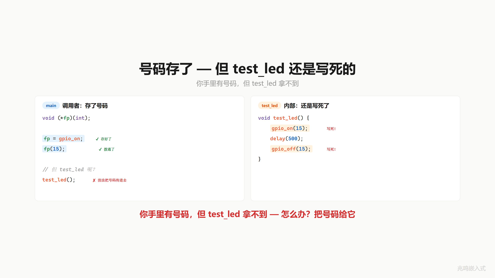
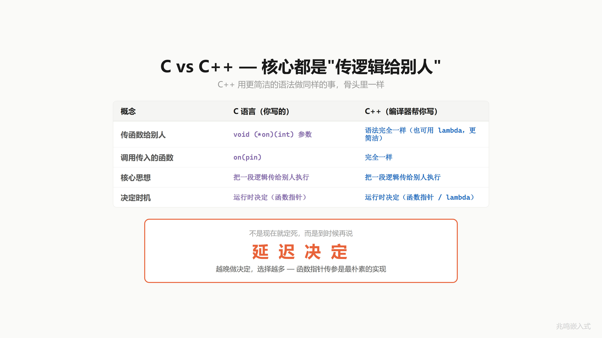
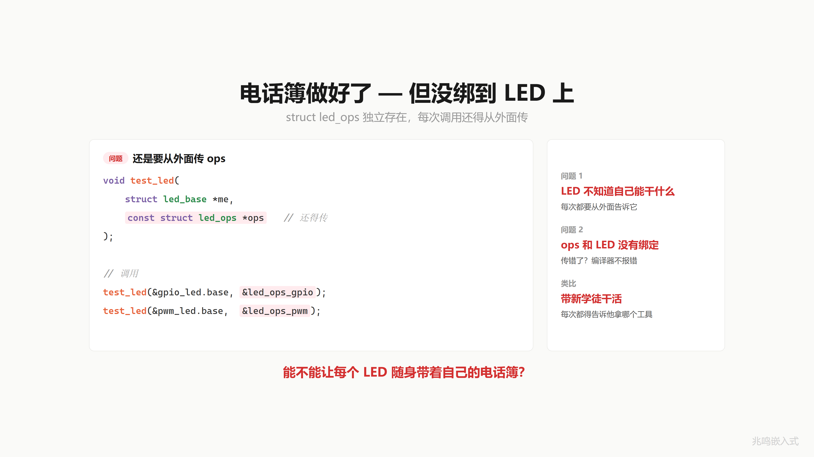
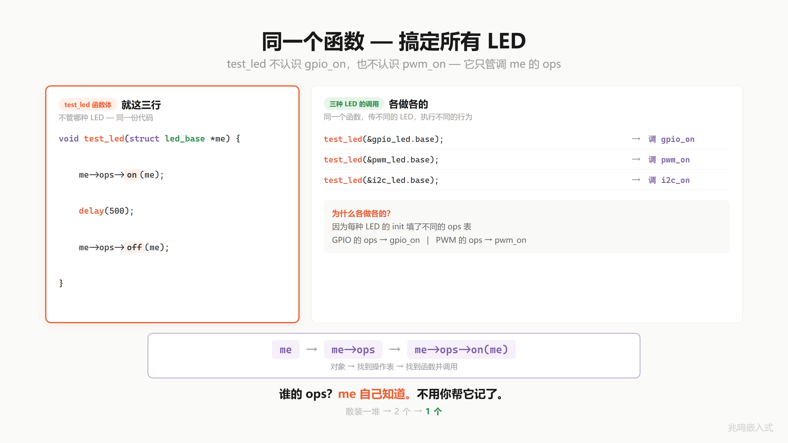
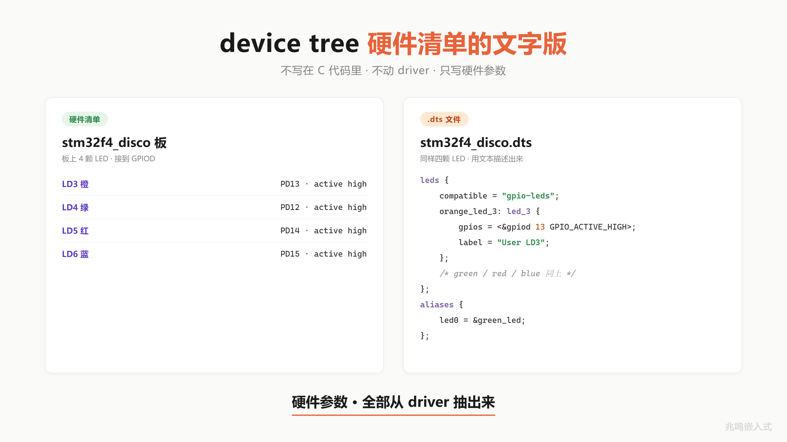
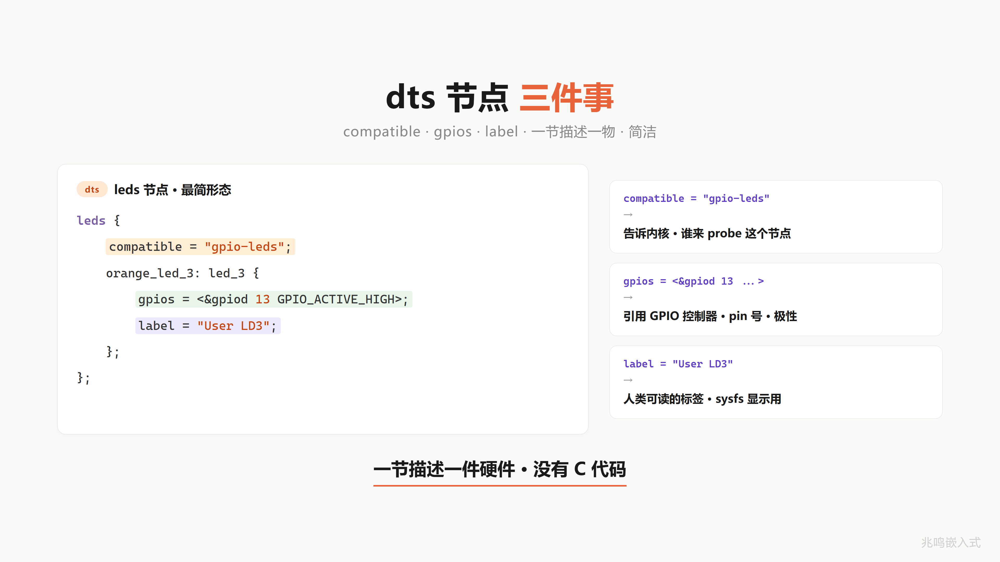
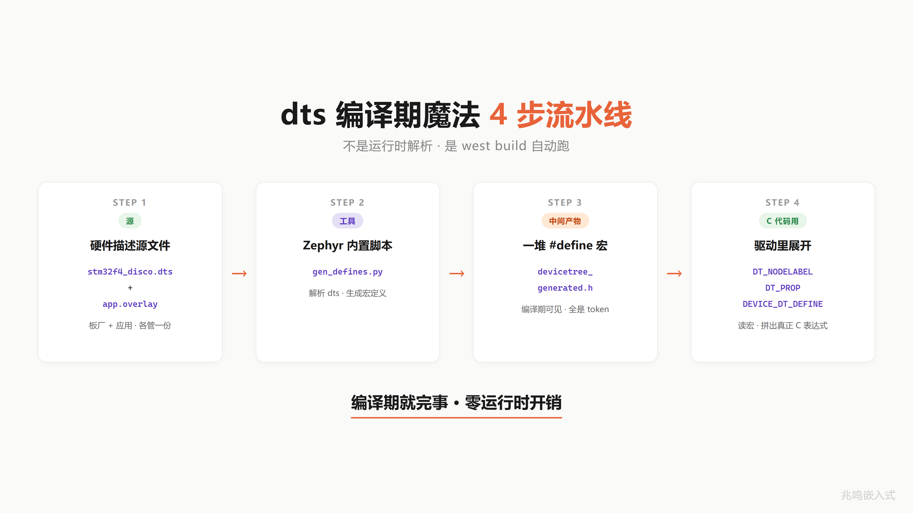
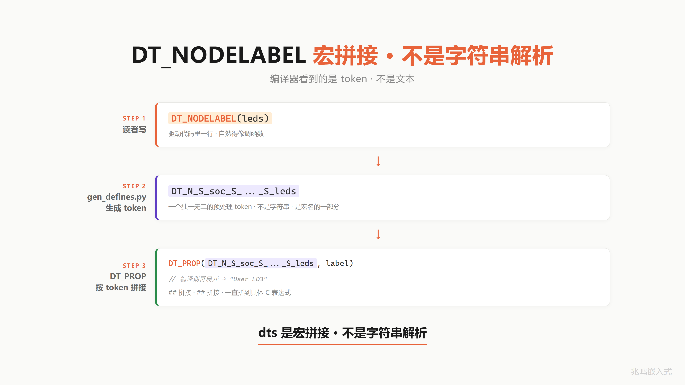
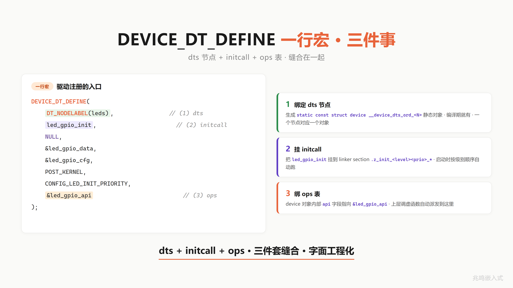

C 语言面向对象编程·嵌入式实战
从一颗 LED 写到 Linux 内核 4000 万行代码。
这本书讲三件事：封装、继承、多态。不讲 C 语法，不讲 100 个外设驱动 API，只讲工业级 C 代码是怎么组织起来的。
学完之后你能看懂 HAL 库源码、Linux 驱动骨架，能用 C 写出和 C++ class 等价的代码，换芯片时只改驱动文件、应用层一行不动。
永久免费在线阅读·MIT License·不出版纸质书。
适合谁
- 学完 C 语法但不知道“工业级代码长什么样“的大二、大三学生
- 写得了 demo 但不会架构的初级嵌入式工程师
- C++ / Java 转嵌入式，想知道 C 怎么手撸 OOP 的人
- 面试准备：把
container_of、函数指针、平台抽象讲到底层原理
不适合的：完全没写过 C 程序的零基础读者。先学 C 语法再来。
这本书的特点
- 不实操也能完全理解：每个
static、每个指针、每个container_of都讲到不开 IDE 也能 follow。有经验的工程师扫读一遍就懂，不用动手 - 三套代码并行：前 18 章教学包在 PC 上直接
gcc跑通（零硬件门槛），第五部分配套 Zephyr v3.7.0 LTS 工程（参考板 stm32f4_disco）和 Linux 6.6 主线工程（参考板 Raspberry Pi 4B），有板子能上板，没板子读源也成立 - 直接读 upstream：第五部分两章贴的代码段全部从 Zephyr / Linux 上游源码 read 出来，读者能 git clone 字面对照，不是脱敏代码
- 教学包代码 0 警告：前 18 章每章配套代码包过
gcc -Wall -Wextra0 警告 - Linux 内核风格：tab 缩进、
struct led而非Led_t，读完看 Linux 内核源码不陌生
全书目录
第一部分 · 封装
- 三个 LED 三份代码 · 第一次面对重复
- 同事改了一行 LED 全乱了 · static 与信息隐藏
- 你用 C 手搓了一个 class · 句柄与操作函数
- 你的全局变量该死了 · 数据三级分类
- HAL 库源码漫游 · 从抽象接口到平台实现
第二部分 · 继承
第三部分 · 多态
第四部分 · 工程威力
- 一个指针指所有 LED · 向上转型
- container_of 的地址魔法 · 向下转型
- 虚函数不实现 · 三种策略
- 换硬件不改应用 · OOP 完整框架
- 为什么 Linux 一点都不难 · 你已经在写 Linux 风格代码
- 4000 万行一招写完 · 链接自动初始化
- 全书地图回顾 · 一颗 LED 走过的演化路径
第五部分 · 开源工程实战
附录
配套代码
三套独立工程，按章节挂钩：
教学包（前 18 章 · 零硬件门槛 · PC 直接跑）
cd oop-in-c/code/01-three-leds/pc
make
./demo
oop-in-c/code/ 目录下，每章一个独立目录。所有代码通过 platform.h 抽象 GPIO，PC 上用 printf 模拟，无开发板也能学。
Zephyr 工程（ch19 + 附录 B · 参考板 stm32f4_disco · Zephyr v3.7.0 LTS）
cd industrial-zephyr
west build -b stm32f4_disco -p auto -- -DDEMO=1
west flash
industrial-zephyr/ freestanding application 模板，4 个 demo 切换：4 颗 LED 跑马灯 / device tree overlay / CONTAINER_OF / 可空 ops。读者按 Zephyr 官方 Getting Started 装好 SDK + zephyr/ 源即可。
Linux 工程（ch20 + 附录 C · 参考板 Raspberry Pi 4B · Linux 6.6 主线）
cd industrial-linux/ch20-leds-status
make
sudo insmod leds-status.ko
industrial-linux/ 含读者亲手写的内核驱动 leds-status.c、用户态 libgpiod 对照 demo、QEMU + gdb 看 container_of、ftrace 追踪 module_init 四个独立子目录。
关注作者
| 平台 | 信息 |
|---|---|
| 公众号 | 兆鸣嵌入式 |
| 个人微信 | zmqrs001 |
| GitHub | github.com/ZhaoChengBo/zhaoming-embedded |
| Gitee | gitee.com/zhao-chengbo/zhaoming_embedded |
| 抖音 | 搜「兆鸣嵌入式」 |
| B 站 | 搜「兆鸣嵌入式」 |
| 视频号 | 搜「兆鸣嵌入式」 |

扫码关注公众号「兆鸣嵌入式」，回复「交流」加入嵌入式技术交流群。后续会持续分享嵌入式架构、工业代码、Linux 内核走读、面试经验等深度内容。
反馈与勘误
发现错误、有改进建议、想贡献一章，到 GitHub Issues 或 Gitee Issues 提一个，附章节、你的理解、你认为的问题。我会回。
读完哪章你觉得讲透了，哪章还差点意思，欢迎写出来。这是迭代下一版的最好材料。
开始阅读：前言
前言
体例约定：本书“第 N 部分“指五大主题分块（一-五，汉字数字），“第 N 章“指 1-20 编号章节（阿拉伯数字），“chXX“是同一章节的英文 ID，三者不混用。
在我待过的项目里，常常看到这样的代码：
三颗 LED 写三份几乎一模一样的函数。加一个新传感器，复制 5 个文件、改 30 个 #define。换一颗芯片像搬家，应用层全部重写，因为驱动层根本不是“驱动层“，是一堆“硬件操作的散装代码“。
不是这些工程师不努力。是 C 代码该怎么组织·我看到的系统讲过的不多。
中国市面上的 C 语言书多数在讲语法：指针、数组、结构体怎么用。嵌入式书多数在讲外设：GPIO、UART、I2C 怎么配寄存器。但“几千个外设驱动是怎么用同一个套路写出来的“、“为什么 Linux 内核 4000 万行 C 代码不会塌”，这些问题·我看到讲透的不多。
这本书补这个洞。
为什么从一颗 LED 开始
任何复杂的工业框架，都是同一套机制的放大。
LED 是一个驱动，ADC 也是一个驱动，电机也是一个驱动。它们的代码骨架完全一样。看懂一颗 LED 怎么从 struct + me 指针 一步步演化到 Platform 驱动，就看懂了 Linux 内核所有的字符设备驱动。
不需要 100 个例子。需要一个例子讲透。
这本书的特点
不实操也能完全理解。
读技术书最常见的挫折是“看懂了字面意思但还是不知道为什么这样写“。这本书的写法是：每一段代码改动，都解释“如果不这么改会怎样“。每一个 static、每一个 void *、每一个 container_of 都讲到不开 IDE 也能 follow。
如果你有经验，扫读一遍就懂。如果你刚入行，每段代码盯着看 3 分钟也能跟上。
三套代码并行。
每一章的核心代码（struct + 函数）在 PC、STM32、Linux 用户态三个平台上都能跑。书里的安排是：
- 主体代码用 PC 模拟实现，gcc 一句编译就能看到效果
- 章末贴 STM32 HAL 等效片段，告诉你换到真实硬件长什么样
- 章末贴 Linux 用户态等效片段（sysfs 或 libgpiod），告诉你嵌入式 Linux 端长什么样
完整的 STM32 工程和 Linux 用户态工程见附录 B、附录 C。
真实工业代码做案例。
第五部分两章基于我参与的工业控制板真实项目代码。前面章节铺垫的所有抽象，到了这两章你能看到它们在真实项目里实际长什么样。中国其它嵌入式书几乎都用“LED 闪烁、按键消抖“这种 toy 案例。
代码 100% 跑通。
每一章配套的代码包都过 gcc -Wall -Wextra 0 警告编译，运行 exit 0，输出和章节正文描述一致。
Linux 内核风格代码。
书里的代码统一采用 Linux 内核编码风格：tab 缩进、K&R 大括号、80 列以内、struct led 而非 typedef Led_t。这是世界开源项目最广泛使用的风格。读完这本书你看 Linux 内核源码、Zephyr RTOS 源码不会觉得陌生。
永久免费在线阅读。
这本书不出版纸质版。所有内容在 https://zhaochengbo.github.io/zhaoming-embedded/ 永久免费阅读，仓库在 GitHub 和 Gitee 双 remote，国内国外都能 clone。
这本书和视频的关系
我在 B 站、抖音、视频号都叫「兆鸣嵌入式」。这本书的内容来自我录的「C 语言·一个 LED 讲透面向对象」系列视频。
视频是被动观看，节奏由我控制。书是主动阅读，节奏由你控制。
视频里说 “container_of 就是从成员反推出 struct 起始地址”，3 秒过去你可能没消化。书里这一句你可以盯着看 3 分钟。视频里代码一闪而过，书里你可以一行一行抄。视频发出去就不会再改，书里的代码我会持续修订，每个 commit 都过编译。
书面体相比口播体更深入。视频里因为时长没讲透的细节，书里都会补。
配套代码 vs 视频版
视频里出现的代码和章节配套代码包，会有一些不影响主线的小差异。原则简单：
- 视频先发，已经在 B 站、抖音、视频号上线，画面里录的是哪一份就是哪一份，事后不改。
- 配套代码包是工业级实现，跟着 Linux 内核风格统一收口，每章 0 警告编译、跑得通。
差异常见在三个地方：字段名（视频里 set_brightness，代码里 toggle）、typedef（视频用 LedOps_t，代码用 struct led_ops）、命名风格（视频用 LedBase，代码用 struct led_base）。这些差异都不影响 OOP 机制本身。电话簿装的是几个号码、号码叫什么名字，不改“电话簿 + 拨号“这件事。
读视频以视频画面为准，跑代码以 oop-in-c/code/<章节名>/ 里的代码包为准。每章末尾如果有具体的“视频版与配套代码版字段差异“小节，开头都会回指到这一节。同一句话不会反复展开三遍，知道这个原则就够。
和现有中文嵌入式书的差别
现有的中文嵌入式书大致两类。
一类是野火、正点原子的功能字典型：配套开发板，覆盖完整，对学生友好。短板是 100 万字、20 章外设，章和章之间没有叙事弧线，读完不知道掌握了什么思想。
一类是直接讲 Linux 内核源码，硬核。短板是门槛极高，新人 3 天放弃。
这本书是第三种：从最小的 LED 出发（门槛低），每一章只讲一个概念（聚焦），概念之间有清晰的因果链（叙事弧线），最后落到 Linux 内核风格的 Platform 驱动（够硬核）。
它会比工具书薄得多。但读完之后拿到任何一份工业代码，你能 5 分钟看懂它的骨架。
怎么读
按章顺序读最好。这本书的章节是有积木依赖的：第 11 章的多态需要第 7 到第 10 章铺垫，第 15 章的 Platform 层需要第 12 到第 13 章的转型机制。跳读会失去“为什么是这样设计的“的因果感。
如果就是想速通某个面试题，查附录 D 的索引找对应章。
如果在职工程师只想看“我现在的代码该怎么重构“，直接看第 15 章（换硬件不改应用）和第 16 章（为什么 Linux 一点都不难），再往前补需要的知识。
AI 时代和这本书
“AI 写代码，程序员要失业”，这两年这句话刷屏过太多次。我自己反过来看：写代码这件事被 AI 接走得越多，懂代码的人能做的事就越大。
数字是冷的。今年初的行业调研显示，每天在用 AI 编码工具的工程团队已经到了 73%，一年前这个数字还只有 41%。Linux 内核也在 2025 年 12 月正式合入了一份关于 AI 辅助 patch 的政策文档，写得很直接：可以用，但每一行都还是得有人署上自己的真名，承担合规和质量的全部责任。换句话说，电脑不可能被问责，人才能。这一句同时定义了 AI 时代的两个边界：能做什么，和不能做什么。
承认 AI 已经能写到内核级，再来想这本讲架构的书还剩下什么价值。
AI 写出来的代码是仓库自身风格的镜像。一个 base / ops / platform 分层清楚的工程，AI 加新驱动能顺着风格往下接；一个堆了几百个全局变量、回调乱飞的工程，AI 只会再往里多堆一份。一个工业机器人的多轴运动控制器、一套储能 BMS 的安全联锁、一个无人机飞控的传感器融合，这些场景里仓库有清晰接缝，AI 接续起来是顺的；没有接缝，AI 写得越多技术债涨得越快。架构本身就是 prompt 的一部分。
而且不只是 prompt。业界 2025 这一年悄悄发生了一次术语迁移：从“谁会写 prompt“，变成“谁会搭整个 harness“。Anthropic 把围着模型的这一整套脚手架（工具集、记忆、上下文边界、权限范围、并行执行、评估闭环）叫 agent harness。Google Chrome 那边一位工程师写过一句被反复引用的话：一个不太行的模型加一套好 harness，能打过一个很强的模型加一套烂 harness。你的代码仓库本身就是这个 harness 的一部分。AI 看着它学风格，按它的接缝写新代码，跟它的回调约定打交道。仓库架构差，相当于给 AI 一个差的脚手架，模型再强也救不回来。
而 AI 这件事，最先发现它能做什么、不能做什么的，是写代码这群人。AI 编码工具本身就是程序员做给程序员用的，第一批吃到红利的也是程序员。新模型一发布，最先把它跑遍极限的是程序员，最先做出能稳定工作的 agent 框架的是程序员，最先把它接到生产管线里去把事情真正做完的也是程序员。圈外人看到的 AI 是“能聊天、能写文案“的对话框；圈内人手里的 AI 已经是能跑长任务、能用工具、能审视自己输出、能在错误里自我纠正的协作者。同一个模型，区别就在于它周围有没有一个会写代码的人在搭脚手架。
最近还流行一个词叫 vibe coding：你不去读代码，顺着模型给的输出“感觉对了“就合进去。这种玩法做一个周末玩具、做一个 demo 演示，跑起来完全没问题。但代码一旦放到生产线上、放到一行写错就可能伤人或烧设备的工程上，vibe 这条路就走不通了。生产环境是另一种生物，它不在乎模型多花哨，它只在乎每一行代码有没有人能解释清楚为什么这么写。
还有一件事 AI 写得再好也改不了：签字。PID 参数错了，电机会撞机；中断里偷偷申请了内存，量产之后会在客户现场随机死机。AI 可以把候选代码摆到你面前，但按下合并按钮、把固件烧到二十万台设备上的那个人，是你。这种判断的训练靠的是把每一行代码读懂，知道它为什么这么写，改一笔会牵动什么。这本书想给你的就是这套读法。
程序员的时间结构也在重新分配。原本 80% 的时间在写胶水代码、查接口、调编译，这部分被 AI 接走，让出来的时间能花在理解业务、画架构、在硬件 / 软件 / 业务三层之间做权衡。我看到的真实变化是：原本需要业务专家、程序员、产品经理三方配合才能跑通的项目，现在一个手里有 AI、脑子里有架构、又愿意啃业务文档的人，可以一个人把整条链跑下来。AI 时代真正的稀缺，是这种能跨过“软件 / 硬件 / 业务“三层做综合判断的人。圈外人与其担心程序员失业，不如想想：当一个手里有 AI、又开始啃你这一行业务文档的程序员出现的时候，你这一行的入场门槛还守不守得住。
如果连嵌入式和系统这一层的人都能被 AI 整段替代，市面上别的大部分活早一步就先没了。
所以这本书的态度很简单：不要焦虑，把基础打牢，用 AI 放大自己。下面 20 章每一章都在帮你建立两件事：
- 架构判断：把代码组织到 AI 能放大你，而不是放大你的债的程度
- 生产责任：出问题有方向，能定位，能修，敢在 patch 上签自己的名字
AI 时代不是陷阱，是一台放大器。放大什么，看你手里给它递的是什么。
用 AI 一起读
你手上有 ChatGPT、Claude、Gemini、DeepSeek 这一类 AI 工具，建议边读边用它们。
这本书我尽力写得清楚，但知识本身是一张网，不是一条直线。线性看下去总会有几处你想多问一句“这一段背后还有什么“。把这本书的章节文本（或者具体一段代码）丢给 AI，让它给你扩展、举反例、用你更熟悉的领域类比一遍，比对着纸质书一行行查百度高效得多。
两种用法特别推荐：
- 费曼学习法配 AI：读完一节，把你理解的东西用自己的话讲给 AI 听，让它指出哪里不对、哪里不准确。讲不出来的部分就是你没真懂的部分。这套方法 Richard Feynman 教书时反复用，AI 让它从一对一变成随时可用。
- AI 当陪练，不当百科：问“这段代码为什么这样写“比问“什么是多态“信噪比高得多。具体场景的问题 AI 最擅长，开放式定义题它容易给你一段套话。
我作为作者必须说明：这本书有写得不够透、甚至写错的地方，我自己重读时还在改。AI 同样会犯错，特别是嵌入式、内核、硬件这些容错率极低的领域。把书和 AI 一起当工具用，互相校验，比单信任任何一方都稳。
最后一句话留给在职的你：现在不少卖课的把“答疑“当核心服务卖，但作为工程师，你的核心竞争力是自己解决问题的能力。十年前嵌入式工程师靠老工程师传帮带，现在你有 AI 工具，等于多了一个 24 小时在线的同事。这一代把 AI 用透的工程师，会比上一代有显著的产出优势。
怎么动手
有经验的工程师可以完全不跑代码。书里每段代码每行的意图都讲透了，不开 IDE 也能完全理解。扫读一遍就走的话也对得起这本书。
如果你刚入行或者想要更强的体感，跑一次代码会让你印象深刻。特别是第一次看到三颗 LED 共用一份函数被同一行 led_on() 依次点亮的时候。
每章对应一个 oop-in-c/code/<章节名>/ 目录，里面是完整可编译的代码。第 1 章对应 oop-in-c/code/01-three-leds/，目录里 pc/ 子目录是完整可跑的 PC 模拟版；STM32 / Linux 真机端的完整工程跨章节统一收在 ch15 15-platform/ 的 drivers/ + platform/ + linux-driver/ 一组目录里 (见 ch15 § 15.13)·前 14 章每章不再单独贴 STM32 / Linux 端片段。
跑代码三步：
cd oop-in-c/code/01-three-leds/pc
make
./demo
Windows 用户装 MinGW 或 MSYS2（搜官方安装包一路 next，勾选“添加到 PATH“），命令行敲 gcc --version 看到版本号即装好。Linux 一句 sudo apt install gcc make。装好后整本书 20 章的代码都按上面三步跑就行。
没有 STM32 开发板能学吗？能。所有代码都通过 platform.h 抽象 GPIO，PC 上用 printf 模拟。等你学到第 15 章 Platform 层，会自己写一个 platform_stm32.c 替换 platform_pc.c，上层代码一行不改。这就是平台抽象的威力。
反馈与勘误
到 GitHub Issues 或 Gitee Issues 提一个 Issue，附上你看的章节、你的理解、你认为的问题。我会回。
读完哪章你觉得讲透了，哪章还差点意思，也欢迎写出来。这是迭代下一版的最好材料。
5 分钟看见你的第一个 OOP LED
读理论之前，先把代码跑起来。
费曼讲过一句话：被自己说服，才叫理解。这本书的写法是每行代码都讲到不开 IDE 也能 follow，但如果你愿意花 5 分钟跑一次，“哦原来是这样“会变成“原来真的是这样”，印象深一倍。
这一章不解释任何概念，只做一件事：让你在 5 分钟内跑通一段 C 代码，看到屏幕输出三颗 LED 被同一份函数依次点亮。
准备工作
需要的工具只有一个：GCC 编译器。
Windows 用户装 MinGW 或 MSYS2 任选一个（搜官方安装包一路 next，勾选“添加到 PATH“），然后命令行敲 gcc --version 看到版本号即装好。
Linux 用户：sudo apt install gcc make（Debian/Ubuntu）或 sudo yum install gcc make（RHEL/CentOS）。
完全不想装环境也行：每个章节代码包都附带预编译好的 demo.exe，Windows 双击即可看到完整输出。
三步跑通
第一步，克隆仓库：
git clone https://github.com/ZhaoChengBo/zhaoming-embedded.git
cd zhaoming-embedded/oop-in-c/code/01-three-leds/pc
国内访问 GitHub 慢可以用 Gitee：
git clone https://gitee.com/zhao-chengbo/zhaoming_embedded.git
cd zhaoming_embedded/oop-in-c/code/01-three-leds/pc
第二步，编译：
make
或者直接用 GCC：
gcc -Wall -Wextra -std=c99 -I../../common -o demo main.c led.c ../../common/platform_pc.c
编译成功，当前目录会多出一个 demo（Linux/Mac）或 demo.exe（Windows）。
第三步，运行：
./demo
看到了什么
屏幕滚出几十行 [GPIO] 和 [LED] 输出。三颗 LED（Pin 13 红、Pin 14 绿、Pin 15 蓝）依次被初始化、点亮、熄灭、调亮度。
打开 main.c，关键的几行是：
struct led red_led;
struct led green_led;
struct led blue_led;
led_init(&red_led, 13);
led_init(&green_led, 14);
led_init(&blue_led, 15);
led_on(&red_led);
led_on(&green_led);
led_on(&blue_led);
led_on() 这个函数在 led.c 里只写了一份，不到 10 行。但它服务了三颗 LED。通过传不同的“挂号单“（&red_led、&green_led、&blue_led），它能服务无限多颗。
这就是封装。
你可能从来没听过这个词，也可能听过但觉得它玄。没关系。下一章从最朴素的“工程师都会的写法“开始（三颗 LED 写三份代码），一步步发现为什么必须演化成你刚才看到的样子。
跑不起来
| 报错 | 解决 |
|---|---|
gcc: command not found | GCC 没装或不在 PATH，按“准备工作“那一节装一遍 |
make: command not found | Windows 上 MinGW 装的是 mingw32-make，改名或建别名 |
fatal error: stdio.h: No such file | GCC 装得不全，重装并选完整开发套件 |
| 中文路径报错 | 把仓库克隆到纯英文路径，如 D:\code\zhaoming |
| 编译过了但运行报错 | Windows 试 ./demo.exe，或加 ./ 前缀 |
还是不行，到 GitHub Issues 或 Gitee Issues 提一个，附系统、GCC 版本、完整报错。
为什么先看见再谈理论
接下来 ch01-ch20 共 20 章（OOP 主体 18 章 + 工业实战 2 章）+ 4 附录，你会一步步推出整个面向对象。先把这本书最终要让你写出的形态摆在面前，后面每一步演化你都有锚点对照。
三颗 LED 一份代码这件事不是我吹的。这本书 18 章 OOP 主体 + 工业实战 2 章要做的，就是让你心服口服地说“哦原来是这样推出来的“。
第 1 章 · 三个 LED 三份代码 · 第一次面对重复
配套代码：oop-in-c/code/01-three-leds/
1.1 一个真实场景
接手新项目。硬件工程师跟你说：板子上有三个状态指示灯，红灯接 GPIO Pin 13，绿灯接 Pin 14，蓝灯接 Pin 15。红灯指示心跳，绿灯指示运行正常，蓝灯指示有错误。
简单。打开 IDE，5 分钟敲完：
void red_led_on(void) { HAL_GPIO_WritePin(GPIOA, GPIO_PIN_13, GPIO_PIN_SET); }
void red_led_off(void) { HAL_GPIO_WritePin(GPIOA, GPIO_PIN_13, GPIO_PIN_RESET); }
void green_led_on(void) { HAL_GPIO_WritePin(GPIOA, GPIO_PIN_14, GPIO_PIN_SET); }
void green_led_off(void) { HAL_GPIO_WritePin(GPIOA, GPIO_PIN_14, GPIO_PIN_RESET); }
void blue_led_on(void) { HAL_GPIO_WritePin(GPIOA, GPIO_PIN_15, GPIO_PIN_SET); }
void blue_led_off(void) { HAL_GPIO_WritePin(GPIOA, GPIO_PIN_15, GPIO_PIN_RESET); }
提交、编译、烧录、跑通。下班。
到这里看起来一切正常。这段代码也不会被 code review 打回。但工程上的麻烦才刚开始。
1.2 三个月后硬件改版
PM 跟你说：为了 EMC 通过，红灯改接 Pin 7。
简单，改一行：
void red_led_on(void) { HAL_GPIO_WritePin(GPIOA, GPIO_PIN_7, GPIO_PIN_SET); }
void red_led_off(void) { HAL_GPIO_WritePin(GPIOA, GPIO_PIN_7, GPIO_PIN_RESET); }
注意，你改了两个地方。
如果还要支持调亮度，你写过 red_led_set_brightness()，里面也用了 Pin 13，那是第三个地方。如果再加反初始化函数 red_led_deinit()，第四个地方。
你能保证每次都改全？改漏一个，红灯有时候是 Pin 13、有时候是 Pin 7，这个 bug 你能找一下午。
PM 又来了：要再加 5 个 LED 做电量指示。
你打算怎么办？把 red_led_on / red_led_off / ... 复制 5 遍，前缀改成 bat_1_led_ / bat_2_led_ / ...？
那是 8 个 LED 乘以 4 个函数等于 32 个几乎一模一样的函数。每个函数体只有一行不一样：引脚号。

这就是绑死的代码。它能跑，但只能在 PM 不改硬件、不加 LED 的世界里跑。
1.3 把“区别“和“代码“分开
冷静下来问一个问题：这 32 个函数，到底有什么区别？
仔细看，区别只有一个东西：引脚号。
代码的逻辑（对一个 GPIO 写高电平、写低电平）完全一样。
那问题就清楚了：能不能代码只写一份，引脚号另外告诉它？
去医院看过病。前台给你一张挂号单，上面填名字、年龄、挂什么科。每个病人一张单子，单子上的内容不同，单子的格式相同。
医生只有一个，他怎么知道现在给谁看病？你把挂号单递给他，他看的是你单子上的信息。
给 LED 也发挂号单。红灯一张，写着 Pin 13。绿灯一张，写着 Pin 14。蓝灯一张，写着 Pin 15。三张单子，内容不同，格式一样。
医生（led_on 函数）只有一份。你想点哪个 LED，就把哪张单子递给他。

C 语言里这种“把一组相关数据装在一起“的东西叫 struct。给 LED 定义一份挂号单：
struct led {
uint8_t pin; /* GPIO 引脚号 */
uint8_t brightness; /* 当前亮度 0~100 */
bool is_on; /* 当前开关状态 */
};
然后给三颗 LED 各开一张单子：
struct led red_led;
struct led green_led;
struct led blue_led;
每个 struct led 变量，就是一颗 LED 的全部信息。
1.4 函数怎么知道现在是哪张单子
挂号单有了，但函数怎么知道自己在操作哪个 LED？
你递给它。
C 语言里“递“东西给函数，用的是指针。led_on 这样写：
int led_on(struct led *me)
{
if (!me)
return -1;
me->is_on = true;
platform_gpio_write(me->pin, true);
return 0;
}
第一个参数 struct led *me，字面意思就是“我“：我现在操作的是哪张挂号单。
调用的时候：
led_on(&red_led);
led_on(&green_led);
led_on(&blue_led);
& 在 C 里读作“取地址“，物理意义是“这张挂号单放在内存的哪个位置“。现在不需要纠结这个底层，就当它是“递这张单子“。
关于
pin这个参数看到
platform_gpio_write(me->pin, true)你可能会奇怪：真实 STM32 上 GPIO 既有 port (A/B/C/D)、又有 pin no (0-15)，怎么这里只有一个pin？教学版用一个
uint8_t pin同时表示 port 和 pin 号：高 4 位是 port (A=0、B=1、…、I=8)，低 4 位是 pin 号 (0-15)。比如pin = 0x0D就是 PA.13、pin = 0x3C就是 PD.12、pin = 0x8E就是 PI.14。一个字节里塞两条信息。编码宏长这样：
#define PIN_NUM(port, num) ((((port) - 'A') << 4) | ((num) & 0x0F)) /* PIN_NUM('A', 13) = 0x0D, PIN_NUM('D', 12) = 0x3C */这套编码不是教学专用：工业项目里也是一字节同时塞 port 和 pin 号，读者过渡到工业版只多一层「字符串名 → uint8_t 编码」的解析（
platform_pin_get("PA.13")返回0x0D），核心编码不变。早期章节为什么不直接上字符串名？因为字符串解析 + 查表机制 ch15 platform 层才登场，这里先用编码让「换 port + 换 pin」的概念跑通。Linux 内核
gpio_set_value(unsigned int gpio, ...)用的是另一种类似思路（全局 gpio number），都是把 port + num 折成一个整数让接口签名干净。第 15 章和附录 B 会把这条工业纪律展开。

把这个思路推广到所有操作（初始化、开、关、翻转、调亮度），就有了一个完整的 LED 模块。下面是节选自 oop-in-c/code/01-three-leds/pc/led.c：
int led_init(struct led *me, uint8_t pin)
{
if (!me)
return -1;
me->pin = pin;
me->brightness = 0;
me->is_on = false;
platform_gpio_init(pin, GPIO_MODE_OUTPUT);
platform_gpio_write(pin, false);
return 0;
}
int led_on(struct led *me)
{
if (!me)
return -1;
me->is_on = true;
platform_gpio_write(me->pin, true);
return 0;
}
int led_off(struct led *me)
{
if (!me)
return -1;
me->is_on = false;
platform_gpio_write(me->pin, false);
return 0;
}
int led_toggle(struct led *me)
{
if (!me)
return -1;
if (me->is_on)
led_off(me);
else
led_on(me);
return 0;
}
int led_set_brightness(struct led *me, uint8_t brightness)
{
if (!me)
return -1;
if (brightness > 100)
return -2;
me->brightness = brightness;
platform_gpio_write(me->pin, brightness > 0);
me->is_on = (brightness > 0);
return 0;
}
应用层的调用是这样：
struct led red_led, green_led, blue_led;
led_init(&red_led, PIN_NUM('A', 13)); /* 0x0D = PA.13 */
led_init(&green_led, PIN_NUM('A', 14)); /* 0x0E = PA.14 */
led_init(&blue_led, PIN_NUM('A', 15)); /* 0x0F = PA.15 */
led_on(&red_led);
led_on(&green_led);
led_set_brightness(&blue_led, 75);
led_toggle(&green_led);
PIN_NUM('A', 13) 在 common/platform.h 里就是上面那行宏，展开成 0x0D。直接写 led_init(&red_led, 0x0D) 也一样能跑。宏只是让人读着像 PA.13，跑起来字节完全相同。
32 个重复函数砍到 6 个。再加 100 颗 LED，再开 100 张单子就行，函数一行不用加。
1.5 这个东西叫什么
你刚才跟我做的事（把属于同一个东西的数据打包在一起，让函数通过 me 指针知道自己在操作谁），软件工程里有个名字。
它叫封装（Encapsulation）。
你可能听过这个词，觉得很高大上，觉得它和 Java、C++、设计模式之类的东西绑在一起。
但你刚才看见了，它就这么简单。封装不是把代码藏起来，是让同一份逻辑服务不同的数据。
费曼讲过：被自己说服才叫理解。你不是从我这里背了一个定义，是从一个具体痛点（32 个重复函数）出发，自己推出了 struct + me 这个解。这种被自己说服的理解，是背不出来的。
1.6 me 就是 this
如果学过 C++，你会写：
class Led {
public:
void on() { platform_gpio_write(pin_, true); }
void off() { platform_gpio_write(pin_, false); }
private:
uint8_t pin_;
bool is_on_;
};
Led red_led;
red_led.on();
而 C 里写的是：
struct led {
uint8_t pin;
bool is_on;
};
int led_on(struct led *me)
{
platform_gpio_write(me->pin, true);
return 0;
}
struct led red_led;
led_on(&red_led);
这两段代码做的是一模一样的事。
唯一的区别有三处：
- C 里你手动写
struct { ... }，C++ 里编译器帮你做（你写class { ... }） - C 里你手动写
(struct led *me, ...)，C++ 里编译器偷偷加，名字叫this - C 里调用是
led_on(&red_led)，C++ 里是red_led.on()
C++ 只是让编译器帮你干了你刚才手动干的事。底层机器码几乎一模一样。如果你想亲眼验证，把两段代码贴进 Compiler Explorer 这种在线汇编查看工具，差别小到可以忽略。

90% 的中国嵌入式工程师用 C 写了 10 年代码，从来不知道自己写的就是 OOP。他们以为 OOP 等于 C++、Java、Python。他们以为封装是高级特性。
事实是：你只要写过 int sum(int *arr, int len)，你就在做封装：你把“一组整数“打包成 int *arr + int len，函数通过指针操作哪一组。
后面 18 章 OOP 主体 + 工业实战 2 章要做的，就是把这件你已经在做的事情，做到工业级。
1.7 视频里没讲透的几个细节
视频 3 分 40 秒讲不完，书里补 6 个工程上你应该知道的点。这一节是“不实操也能完全理解“的核心。
1.7.1 为什么 me 是指针不是值传递
技术上你可以写 int led_on(struct led me) 用值传递。但有两个问题。
第一，值传递会复制整个 struct。struct led 现在小（3 字节左右），将来加上回调函数、ops 表、状态机，100 字节起跳。每次调用都拷贝一份，性能炸了。
第二，值传递改不了原对象。函数内修改 me.is_on = true，外面的 red_led.is_on 还是 false。Bug 找一周。
所以 C 的 me、C++ 的 this、Rust 的 &self 全都是指针/引用，不是值。这是工程上的硬约束，不是风格选择。
1.7.2 为什么第一个参数检查 NULL
每个函数开头都有 if (!me) return -1;。原因是 C 不像 Java 会自动抛 NullPointerException，对 NULL 指针解引用会做什么完全取决于平台。
在 STM32 这种 ARM Cortex-M 上，地址 0 通常是 Flash 起点（向量表），读不会崩。但 Flash 不允许直接写一个字节，me->pin = 13 相当于在地址 0 + offsetof(struct led, pin) 写一个字节，会立即触发总线异常进 HardFault，进入异常处理函数死循环（除非专门配过 MPU 让地址 0 可写）。
在 Linux 用户态上，地址 0 一般是无效页，进程立即收到 SIGSEGV，core dump。
无论哪种情况，都不是你想要的。所以工业代码里所有公开 API 的指针参数都必须做 NULL 检查。这是嵌入式 C 编码规范的硬规则。仓库 coding-standards/ 目录里有一份独立的 7 章 PDF（架构设计 / 设计模式 / Clean Code / 代码风格 / 内存安全 / 硬件交互 / 安全检查清单），第 5 章《内存安全》专门讲指针参数检查纪律。视频里为节奏没强调，书里应该知道：这一行是工程纪律的最小单位。
1.7.3 为什么用 struct led 不用 typedef
你可能见过这种写法：
typedef struct {
uint8_t pin;
bool is_on;
} Led_t;
int led_on(Led_t *me);
书里不这样写。Linus 在 Linux 内核编码风格文档里专门反对 typedef struct，原因不是写起来麻烦，而是 typedef 把“这是一个结构体“这件事藏了起来。
看到 int a 你立刻知道是 4 字节标量，按值传无所谓。看到 Led_t a 你不知道它是 4 字节还是 200 字节。void foo(Led_t a) 这种按值传函数，栈上可能默默复制 200 字节，性能黑洞看不见。Led_t a = b; 也一样：是简单赋值还是 struct 整块复制？struct 里有锁、回调、状态机的时候，复制语义出错很难查。struct led a 三个字符就把这些风险摆在面前，每个写 C 的工程师对 struct 这俩字都本能小心。
Linux 内核 4000 万行 C 代码绝大多数 struct 都不 typedef，包括 struct file、struct device、struct gpio_chip。读这本书你以后看内核源码不会觉得陌生。
唯一例外：函数指针类型适合 typedef（不然 int (*)(struct led *) 写起来太丑），第 9 章 ops 表会用到。
1.7.4 me->pin 这一句汇编层面发生了什么
你写的 C 代码是这样：
me->is_on = true;
platform_gpio_write(me->pin, true);
编译器看到 me->pin 会做两件事：
第一，它知道 me 是 struct led *。
第二，它查 struct led 的定义，找到 pin 字段在结构体里的偏移：pin 是第一个字段，偏移 0；brightness 偏移 1；is_on 偏移 2。
编译出 ARM Cortex-M 汇编大致是这样（简化版）：
LDRB r0, [r4, #0] ; r4 = me, 取偏移 0 的字节, r0 = pin
LDRB r1, [r4, #2] ; 取偏移 2 的字节, r1 = is_on
LDRB 是 “Load Register Byte”，一条指令完成一次内存读。整个 me->pin 在汇编层面就是一次寄存器加常数偏移、然后 load。代价 1 个周期左右。
这就是为什么 OOP 在 C 里可以做到“零开销“。me->pin 不比 red_pin 这种全局变量贵。Bjarne Stroustrup（C++ 之父）有句名言：“不用的特性零成本，用了的特性手写也不会更快。” struct + me 的范式就是这句话最干净的体现。
1.7.5 struct led 的内存布局
书里的 struct led 是这样：
struct led {
uint8_t pin; /* 1 byte */
uint8_t brightness; /* 1 byte */
bool is_on; /* 1 byte */
};
三个字节加起来 3 个字节。sizeof(struct led) 也是 3 字节，因为 uint8_t 和 bool 的对齐都是 1，编译器不需要加 padding。
但如果你给 struct 加一个 uint32_t 字段，故事就变了：
struct led_v2 {
uint8_t pin; /* offset 0, 1 byte */
/* 3 bytes padding here */
uint32_t blink_period; /* offset 4, 4 bytes */
bool is_on; /* offset 8, 1 byte */
/* 3 bytes padding here */
}; /* sizeof = 12, not 6 */
uint32_t 要求 4 字节对齐，所以编译器在 pin 后面塞 3 字节 padding 让 blink_period 落在偏移 4。同样，整个结构体大小要是最大对齐数（4）的倍数，所以末尾再塞 3 字节。
在内存紧张的 MCU 上（比如 RAM 只有 64KB），struct 字段顺序会影响实际占用。把大字段放前面、小字段放后面，padding 最少。
struct led_v2_compact {
uint32_t blink_period; /* offset 0, 4 bytes */
uint8_t pin; /* offset 4, 1 byte */
bool is_on; /* offset 5, 1 byte */
/* 2 bytes padding */
}; /* sizeof = 8 */
这一点你现在不用记，知道 padding 这件事存在就行。真要紧凑布局可以用 __attribute__((packed)) 或 #pragma pack，本书不展开。
1.7.6 platform_gpio_write 调到底，最终是写哪个寄存器
platform_gpio_write(13, true) 在 PC 模拟版里就是 printf 打一行。在 STM32 上是另一回事。
STM32 每个 GPIO 端口有一个 BSRR（Bit Set / Reset Register）。这是一个 32 位寄存器，地址是固定的（GPIOA 的 BSRR 地址在 STM32H7 上是 0x58020018）。寄存器格式：
- 低 16 位：写 1 把对应引脚拉高
- 高 16 位：写 1 把对应引脚拉低
- 写 0 无影响
所以 “把 PA13 拉高” 调到底就是：
*(volatile uint32_t *)0x58020018 = (1U << 13);
一次 32 位 store，把 GPIOA 的 PA13 拉高。BSRR 设计成“写 1 才生效，写 0 无影响“是为了让多任务、多中断同时操作不同引脚时不打架（atomic）。中断半路改一个引脚，主循环改另一个引脚，互不影响。
volatile 关键字是必须的。它告诉编译器：这个地址的内容随时会变（硬件改的），不要缓存到寄存器里。否则编译器优化后可能“我刚才不是写过 0x58020018 了吗，再读还是同一个值，不用真的 load“，结果你以为写了，实际没写。
这个领域叫 MMIO（Memory-Mapped I/O）：把硬件寄存器映射到 CPU 的地址空间，用普通的内存读写指令操作硬件。ch05 打开 HAL 库源码漫游时你能看到这种映射的真实形态。
1.8 你现在的 LED 在 STM32 上长什么样
先把 PC 端的位置摆正：pc/ 不是“伪硬件模拟“，它是 platform 层的一种实现，和 STM32 / NXP / Linux 平等。同一份 platform.h 头声明四个函数 (platform_gpio_init / deinit / write / read)，PC 端 common/platform_pc.c 把 GPIO 操作翻译成 stdout printf，STM32 端 platform-mcu/stm32/led_stm32.c 翻译成 HAL_GPIO_* 写 BSRR 寄存器，Linux 端写 sysfs（附录 C 完整版本）。四份共用同一个对外签名，应用层 led.c 一字不动。
pc/ 那份 printf 不是占位符，它是“在 PC 上跑得起来的 platform 层“。同样接受 pin = 0x0D 这种编码、同样按 init / write / read / deinit 四个动作来做事，区别只是输出目标从硬件引脚换成了终端日志。换硬件实现，应用层 led.c 一字不动。
STM32 真实硬件上长这样（节选自 oop-in-c/code/01-three-leds/platform-mcu/stm32/led_stm32.c）：
#include "led.h"
#include "stm32f4xx_hal.h"
/* pin 编码: 高 4 位 = port (A=0, B=1, ..., I=8), 低 4 位 = pin 号 */
#define PIN_PORT_IDX(pin) (((pin) >> 4) & 0x0F)
#define PIN_NO(pin) ((pin) & 0x0F)
#define PIN_MASK(pin) (1U << PIN_NO(pin))
static GPIO_TypeDef * const _gpio_table[] = {
GPIOA, GPIOB, GPIOC, GPIOD, GPIOE,
/* F/G/H/I 看 MCU 型号有没有, 没有就填 NULL */
};
#define PIN_PORT(pin) (_gpio_table[PIN_PORT_IDX(pin)])
void platform_gpio_init(uint8_t pin, uint8_t mode)
{
GPIO_InitTypeDef cfg = {0};
/* 按需开对应 port 时钟, 完整 switch 见配套源码 */
cfg.Pin = PIN_MASK(pin);
cfg.Mode = (mode == GPIO_MODE_OUTPUT) ?
GPIO_MODE_OUTPUT_PP : GPIO_MODE_INPUT;
cfg.Pull = GPIO_NOPULL;
cfg.Speed = GPIO_SPEED_FREQ_LOW;
HAL_GPIO_Init(PIN_PORT(pin), &cfg);
}
void platform_gpio_write(uint8_t pin, bool value)
{
HAL_GPIO_WritePin(PIN_PORT(pin), PIN_MASK(pin),
value ? GPIO_PIN_SET : GPIO_PIN_RESET);
}
应用层调用就是：
/* 假设 LED 接在 PA.13 / PA.14 / PA.15 */
led_init(&red_led, PIN_NUM('A', 13));
led_init(&green_led, PIN_NUM('A', 14));
led_init(&blue_led, PIN_NUM('A', 15));
PIN_NUM('A', 13) 就是前面引入过的那个宏，编译期展开成 0x0D，板子上 LED 改接到 PD.12 就传 PIN_NUM('D', 12)。led.c 一行不动，main.c 只动初始化参数。
注意一件事：led.h、led.c 一字不改。
变化的只有 platform_gpio_* 这一层胶水。这就是平台抽象层最直接的威力。
HAL_GPIO_WritePin 调到底就是 1.7.6 里讲的写 BSRR 寄存器。如果你打开 ST 的 HAL 源码看 stm32h7xx_hal_gpio.c，会看到这一行：
GPIOx->BSRR = (uint32_t)GPIO_Pin; /* SET */
GPIOx->BSRR = (uint32_t)GPIO_Pin << 16; /* RESET */
ST 自己的 HAL 也是封装：把“GPIO 端口“打包成 GPIO_TypeDef（一个 struct，里面是各个寄存器），通过 GPIOx 这个指针参数告诉函数操作哪个端口。GPIOx 就是 me，换了个名字。
关于这里的 platform 层写法：本节用的是“函数式包装“，直接 export 几个独立函数 platform_gpio_init / platform_gpio_write / ...。这是 ch01 阶段的教学简化形态，让你在还没接触虚函数表概念前先看到“换平台只改 platform 这一层“的好处。
真正工业级的 platform 抽象层用的是虚函数表（ops 表）：把所有 platform 操作打包进一个 struct，应用层通过指针访问，可以 runtime 切换平台。1.10 节贴的工业代码 led_base + led_ops 就是这种形态。
第 16 章会把 platform 层从函数式升级成 ops 表式（gpio_chip 子系统），和工业代码对齐。
1.9 你现在的 LED 在 Linux 用户态长什么样
Linux 上同款抽象，完整工程见附录 C。
1.10 工业代码里的 led 长什么样
这一节是工业终态的早期一瞥，给你一张“未来三个月你会写出什么样的代码“的全景图。下面要出现的概念（父类与子类、ops 表 / 虚函数表、父类层 dispatch（分发：走到对的实现）、纪律式封装）每一个都是后面 ch06 / ch09 / ch10 / ch11 才会系统展开的。现在不用看懂任何细节，只要扫一眼“代码最终长这样、应用层调用看不到 ops、换硬件不改应用层“就够了。看完本节回到 1.1 节继续从最朴素的状态走起，等读完 ch11 再回来重读这一节，那时候每一行都会自动通透。
我做的工业控制板项目里，LED 这一块分两层：父类一对 .h / .c，每种具体子类（GPIO LED / PWM LED / I²C LED）一对 .h / .c。父类那两份长这样：
/* drivers/led/led_base.h · 父类公共头·子类和应用层都 #include */
#include <stdbool.h>
struct led_base; /* 先声明类型存在，下面 led_ops 要用到它 */
struct led_ops {
int (*on)(struct led_base *me);
int (*off)(struct led_base *me);
int (*toggle)(struct led_base *me);
};
struct led_base {
const struct led_ops *ops; /* 虚函数表指针 */
const char *name; /* 给日志打印用，例如 "red" / "green" */
bool is_on; /* 当前开关状态 */
};
/* 应用层用的 API：只调下面这三个，看不到也不去碰上面字段 */
int led_on(struct led_base *led);
int led_off(struct led_base *led);
int led_toggle(struct led_base *led);
/* 注：base 里没有 pin / pwm_chan / i2c_addr 这种硬件特定字段。
* pin 在 led_gpio 子类里、pwm_chan 在 led_pwm 子类里、i2c_addr 在 led_i2c 子类里。
* 不同硬件方式的 LED 共享 base 接口，硬件细节关在各自子类。
* 第 6 章讲为什么这样分，第 12 章讲子类怎么向上转型回 base。
*/
/* drivers/led/led_base.c · 父类实现：把对外接口转发到子类 ops 表 */
#include "led_base.h"
int led_on(struct led_base *led)
{
int ret;
if (!led || !led->ops || !led->ops->on)
return -1;
ret = led->ops->on(led);
if (ret == 0)
led->is_on = true;
return ret;
}
int led_off(struct led_base *led)
{
int ret;
if (!led || !led->ops || !led->ops->off)
return -1;
ret = led->ops->off(led);
if (ret == 0)
led->is_on = false;
return ret;
}
int led_toggle(struct led_base *led)
{
int ret;
if (!led || !led->ops || !led->ops->toggle)
return -1;
ret = led->ops->toggle(led);
if (ret == 0)
led->is_on = !led->is_on;
return ret;
}
is_on 这种状态字段在 dispatch 成功之后再更新，硬件操作失败时上层状态不会被改脏。工业代码里有的项目省掉 is_on、让硬件层每次自查，有的把它放在父类里给上层 query 用，看项目设计。
/* environment_cfg/environment_export.h · 公开句柄，应用层用它 */
extern struct led_base *green_led;
extern struct led_base *red_led;
应用层调用：
led_on(green_led);
led_off(red_led);
led_toggle(green_led);
应用层看到的就是普通函数调用 led_on(green_led)。它根本不知道下面有 ops 表、有 dispatch、有具体子类（GPIO LED / PWM LED / I²C LED 等）。这种“应用层只见接口、看不见实现“的写法叫封装层，工业代码里所有驱动都做这件事。
1.10.1 字段公开但应用层不去碰：纪律式封装
struct led_base 的字段定义就在 led_base.h 头文件里，应用层 #include "led_base.h" 之后，技术上写 green_led->is_on = true 编译能过。工业代码里的“封装“，主要靠纪律，不是靠编译器强制。
为什么不把字段藏到 .c 里、让编译器拒绝外部访问？因为后面 ch06 起要讲继承：每种具体 LED（GPIO / PWM / I²C）都是一个子类，子类要把 struct led_base base; 作为自己的第一个字段嵌进来。子类源文件得知道 struct led_base 的完整字段（要算 sizeof、要对偏移），所以 base 的字段定义必须放在头文件里、给子类可见。字段藏 .c 和继承机制层互斥：一选了藏，子类就编译过不去。
那应用层为什么不会乱碰？两层纪律一起作用：
- 接口纪律：每个驱动的
.h顶上写清楚“只调下面这几个函数“，code review 看到外部代码写green_led->is_on = true直接打回 - 指针句柄持有：base 实例本身在驱动
.c文件里 static 分配，应用层只拿extern struct led_base *green_led;这种指针句柄，从来不在自己代码里struct led_base x;直接定义实例。能拿到的只是别人给的指针，状态变更走led_on(green_led)是最自然的选择，绕过去反而费劲。ch04 4.7.8 节会单独讨论这种全局指针句柄合不合理
Linux 内核也是这套纪律。struct device 几十个字段全部公开在 include/linux/device.h 里，谁的代码写 dev->kobj.parent = NULL 之类直接绕过 driver core，会被维护者一句话打回。Greg Kroah-Hartman 在内核驱动文档和邮件列表里多次强调这件事，靠的是编码约定 + review 文化，不是编译器。Zephyr RTOS、GObject 同一套路。这是 OOP-in-C 继承场景里几乎唯一可行的工业选择。
ch02 会把这套纪律的两件工具讲透：static 锁内部工具函数（链接期硬锁）+ /* private */ 字段注释（命名纪律 + code review 软锁）。同时会单独提一种更严格的隔离：字段彻底藏进 .c，编译器直接拒绝外部访问，叫不透明指针。它的真实用武之地是跨二进制库边界（libc 的 FILE *、POSIX 的 pthread_t、sqlite3 *、CURL *），应用代码和库实现物理分离·这些场景下应用代码不需要继承库类型。一旦涉及继承（这本书后续 18 章主线），就不能用那套写法。
1.10.2 ops 表 + 封装层：让 led_on 一行胶水管所有 LED 子类
你注意到三件事：
struct led_base多了一个字段ops，是一张函数指针表（虚函数表）led_on(led)不是直接操作 GPIO，它内部走led->ops->on(led)这一行 dispatch- 不同子类的 LED（GPIO 拉电平、PWM 调亮度、I²C 发命令）都填一份自己的 ops 表，应用层调
led_on()一行就走到对的实现
第 11 章会从函数指针一步步推导出这套机制，把 led_on() 内部那行 dispatch 讲透：编译器把它编译成什么 ARM 汇编、ops 表存在内存哪、为什么 ops 必须是 struct led_base 第一个字段。
现在你不用看懂细节，只要看出：工业代码里的 led，骨架还是 struct + me，外面套了一层 ops 表（让应用层无视具体硬件）和一层封装函数（让应用层不直接碰函数指针）。这两层都是工程纪律，不是炫技。
1.10.3 一眼看懂工业代码的眼光
这就是这本书要让你形成的眼光。拿到一份陌生的工业代码：
- 看到
xxx_base.h里struct xxx_base { const struct xxx_ops *ops; ... };，知道这是父类 + ops 表 / 虚函数表 - 看到
xxx_base.h顶上一行注释“应用层只调下面 API，不要直接访问字段“，知道这是纪律式封装 - 看到
xxx_on(handle)内部走handle->ops->on(handle)，知道这是 dispatch - 看到
extern xxx_base *yyy;，知道是别人创建好的句柄
整套就是 struct + me 的工业放大版。你这一章学的核心，加上第 11 章的 ops 表演化，等于工业项目里所有驱动的骨架。
反过来看，1.8 节给的 STM32 platform 层（以及附录 C 的 Linux 完整工程）用的是函数式（几个 platform_gpio_* 函数独立 export），是教学简化版。工业代码的 platform 层和这里 led_base 一样，都是 ops 表（虚函数表）形式。两者都对，只是抽象程度不同。书里第 16 章会把 platform 层从函数式升级成 ops 表式（gpio_chip 子系统），完成这个对齐。
1.11 跑一遍
cd oop-in-c/code/01-three-leds/pc
make
./demo
输出节选：
========================================
Three LEDs, one set of code.
me pointer decides who to operate.
========================================
--- Init ---
[GPIO] PA.13 init as OUTPUT
[GPIO] PA.13 -> LOW (OFF)
[LED] PA.13 initialized
[GPIO] PA.14 init as OUTPUT
[GPIO] PA.14 -> LOW (OFF)
[LED] PA.14 initialized
...
--- Turn on RED ---
[GPIO] PA.13 -> HIGH (ON)
[LED] PA.13 ON
--- Turn on GREEN ---
[GPIO] PA.14 -> HIGH (ON)
[LED] PA.14 ON
--- Turn on BLUE ---
[GPIO] PA.15 -> HIGH (ON)
[LED] PA.15 ON
led_on 这个函数在 led.c 里只写了一次。但屏幕上 PA.13、PA.14、PA.15 都被点亮了。因为传入的 me 指针不同。
[GPIO] PA.13 init as OUTPUT 这一行不是 led.c 写的，是 common/platform_pc.c 写的。它把传进来的 pin = 0x0D 拆回 port 字母 A 和 pin 号 13，再 printf。STM32 上同一个 0x0D 走到 platform-mcu/stm32/led_stm32.c 里就被翻译成 HAL 库写 BSRR 寄存器，把真的 PA.13 引脚拉高。同一份编码、同一个签名、两份不同的 platform 实现。
完整输出和源码见 oop-in-c/code/01-three-leds/。配套代码包目录结构：
01-three-leds/
├── pc/ PC 端 platform 实现（printf 翻译，gcc 一句编译）
└── platform-mcu/
└── stm32/ STM32 端 platform 实现（HAL 写寄存器）
跨章共享的部分在 oop-in-c/code/common/：platform.h 是这本书每一章 pc/ 都 #include 的对外接口头（也是 STM32 端 led_stm32.c 实现的同一个头），platform_pc.c 是 PC 端的 platform 实现。本章你看到的 [GPIO] PA.13 ... 日志就出自这一份。
ch01-ch10 早期教学章节配套代码都简化为这两份对照（PC + STM32），让你专注 OOP 概念本身。Linux 用户态完整工程见附录 C，工业级 ops 表 / 多子类 / 多平台见后面工业实战章节。
1.12 视频回放
想听口播版的可以看 B 站这一期视频：
视频和书互相补强。视频更直观看口播节奏和挂号单类比的现场感。书里补了视频没讲透的 6 个细节（1.7 节）、STM32 真机对照（1.8 节）、工业代码全景（1.10 节）。Linux 用户态完整对照工程见附录 C。
下一章
挂号单是敞开的。任何人都能直接 red_led.pin = 999 把它弄坏。你同事顺手改了一个值，所有 LED 全乱了。
怎么把单子锁起来？下一章解决。
下一篇：第 2 章 · 同事改了一行 LED 全乱了 · static 与信息隐藏
第 2 章 · 同事改了一行 LED 全乱了 · static 与信息隐藏
配套代码：oop-in-c/code/02-static-hiding/
2.1 一个真实场景
第 1 章你给三颗 LED 发了挂号单，代码只写一份，问题解决了。
提交、合并、上线。
一周后同事来找你：你 LED 模块好像有 bug，红灯不亮了。
你去看代码，main.c 里没动过。再翻 git log，发现同事在另一个文件里加了一行：
extern struct led red_led;
/* 我做了点优化，让 pin 直接 = 999 */
red_led.pin = 999;
他不是恶意的。他可能在做硬件适配实验，可能手抖打错变量名，可能临时调试忘了撤回。但效果是确定的：你的红灯被驱动到一个不存在的引脚，从此不亮。
你打开微信想质问他，想了想，默默把聊天框关了。你心想：我的代码明明没问题啊。
对，你的代码确实没问题。问题是：你的 struct 字段在 led.h 里完全敞开，任何 #include 它的 .c 文件都能 red_led.pin = 999 把它改坏。还有一类问题：你内部的辅助函数（更新硬件状态、检查参数合不合法）也对外完全可见，同事在另一个文件里调用它，绕过你的 led_on / led_off，硬件状态会和 struct 里的状态对不上。

银行不会把客户的钱放在路边让大家自取。柜台是有的，密码是有的，流程是有的。你的 struct 是钱，函数是柜台，现在缺一把锁。
2.2 第一把锁 · static
C 语言给你一把锁，叫 static。
去过饭店。前台是给客人用的（点菜、付钱、吃饭），后厨是给厨师用的（备料、炒菜）。客人进后厨只会添乱。所以后厨的门是锁的。
代码也一样。有些函数是给外面用的（开灯、关灯、调亮度），这些是前台。有些函数是你内部用的（更新硬件状态、检查参数合不合法），这些是后厨。
怎么把后厨锁起来？在函数前面加一个词 static。
加了 static，这个函数就只在它所在的 .c 文件里能用。别的 .c 文件想调它，链接器报 undefined reference。门锁上了，找都找不到。
变量也一样。文件作用域的变量加 static，就只在本文件可见。

举个例子。led.c 里有两个内部工具函数，一个统一更新硬件状态，一个检查亮度合不合法：
static void update_hardware(struct led *me)
{
platform_gpio_write(me->pin, me->is_on);
}
static bool brightness_valid(uint8_t brightness)
{
return brightness <= 100;
}
前面加 static，这两个函数对 main.c 不存在。main.c 里写 update_hardware(red); 链接器直接报错。后厨锁上了。
static 是 C 语言的硬通货。这本书后面每一章每一个驱动都在用它锁内部工具函数。读懂别人的 C 模块，先看哪些函数加了 static、哪些没加：没加 static 的就是这个模块对外承诺的接口，加了的全是内部实现细节。这条规矩内核、nginx、Redis、FreeRTOS 都在用，是行业事实标准。
2.3 第二把锁 · 头文件契约 + /* private */ 纪律
锁住后厨只解决一半问题。static 锁住的是函数，但你的 struct 字段 pin / brightness / is_on 还敞着。同事 red_led.pin = 999 这一行，编译器拦不住。
C 里你做两件事。
第一件：把头文件当成模块的契约清单。.h 里写外部能调的函数，再把字段加上 /* private */ 注释，明确告诉读者哪些不该直接写：
/* led.h - 这是你对外承诺的全部接口 */
#include "platform.h"
struct led {
uint8_t pin; /* private: 通过 led_init 设置 */
uint8_t brightness; /* private: 通过 led_set_brightness 设置 */
bool is_on; /* private: 通过 led_on / led_off 设置 */
};
int led_init(struct led *me, uint8_t pin);
int led_deinit(struct led *me);
int led_on(struct led *me);
int led_off(struct led *me);
int led_toggle(struct led *me);
int led_set_brightness(struct led *me, uint8_t brightness);
int led_get_state(const struct led *me,
bool *is_on, uint8_t *brightness);
注意一件事：字段还留在 .h 里，没有被搬走。这是 C 语言的工程现实：很多场景需要外部知道 struct led 的大小（栈上直接 struct led red_led; 分配，或者子模块嵌套它做继承，下章开始你会反复看到），字段藏到 .c 里整个机制就用不了。
但每个字段后面挂了一行注释 /* private: ... */。它在告诉读 led.h 的人：字段是给 led.c 自己用的，外部别直接写。要改，走对应的 API。
新增的 led_get_state 是这套契约的另一面：外部要读字段，也走 API，不直接读 me->is_on。这件事教学价值大于运行时价值：它让“通过 API 访问“成为口头禅，下章你新建电机模块也会自然写 motor_get_state、ch06 写继承时父类查询函数也走这个套路。
第二件：内部工具函数加 static 关进 .c，外部连名字都看不到。这是 2.2 节那把锁。
/* led.c */
#include "led.h"
static void update_hardware(struct led *me)
{
platform_gpio_write(me->pin, me->is_on);
}
static bool brightness_valid(uint8_t brightness)
{
return brightness <= 100;
}
int led_init(struct led *me, uint8_t pin) { /* ... */ }
int led_on(struct led *me)
{
if (!me) return -1;
me->is_on = true;
update_hardware(me);
return 0;
}
/* ... */
外部要操作 LED，只能走 led.h 暴露的函数：led_init / led_on / led_off / led_toggle / led_set_brightness / led_get_state / led_deinit。这些是契约清单里写明的；其他的（update_hardware / brightness_valid / 字段直接写），契约里没提，工程纪律上禁止。

那同事 red_led.pin = 999 这一行，怎么办？
C 语言里，这一行在编译器层面拦不住。编译器认 .h 里的字段定义，看到 red_led.pin = 999 不会报错。
拦它的是工程纪律：
- 命名清晰：你的 API 全部
led_xxx。读red_led.pin = 999这一行的人，第一反应是「为什么不调led_xxx」。这种写法在 code review 里立刻被打回 /* private */注释：每个字段挂着这一行。读led.h的人知道这是私有字段，绕过 API 直接写就是违纪- code review：进 master 的 commit 都要 review。一行
red_led.pin = 999就是 reviewer 的红线 static工具函数：上面说过的链接期机制锁。update_hardware这一类函数外部连名字都看不到，绕过led_on直接动硬件的路被彻底封死
四道关一起上，业内 99% 的 C 项目这么做：nginx、Redis、LVGL、FreeRTOS、Linux 内核大部分驱动模块，struct 字段全在 .h 公开，靠这套纪律隔离。
完全机制锁的方案在 C 里也存在，叫不透明指针：
.h里只写struct led;前向声明，字段藏到.c里，编译器直接拒绝外部读字段。代价是字段不可见后无法栈分配也无法被嵌套继承。这条路适合跨二进制库的 ABI 边界（ABI = Application Binary Interface，应用程序二进制接口；通俗讲就是“已经编译好的库“和“应用代码“对接时双方约定的字段布局），例子有FILE */pthread_t/sqlite3 */CURL *这一类。在自家应用代码里几乎不用。详见 2.6.3 节。
2.4 这个东西叫什么
你刚才跟我做的事，把不该让外面碰的工具函数和字段藏起来，外部只通过命名清晰的接口和模块打交道，软件工程里有个名字。
它叫信息隐藏（information hiding）。
David Parnas 1972 年那篇 “On the Criteria To Be Used in Decomposing Systems into Modules” 第一次系统讲清楚这件事。中文叫信息隐藏，也常归到 encapsulation 这个大概念底下。
C 里实现信息隐藏的工具有三件：
.h头文件作为契约：声明能用的函数 + 字段标/* private */- 内部工具函数加
static：链接期机制锁，绝对拦 - 命名纪律 + code review：字段直接写靠纪律拦，不靠编译器
你不是从我这里背了一个定义，是从一个具体痛点（同事改一行你的 LED 全乱了）出发，自己推出了这套解。这种被自己说服的理解，是背不出来的。
费曼讲过一句话：好的设计不靠人小心，靠机制上不让错误发生。static 是机制上的锁。/* private */ 字段注释 + 命名纪律是工程文化。两件事一起做，C 项目就有了和 C++ 私有成员等价的效果。
2.5 C 对 C++
如果你写过 C++，你会写：
class Led {
public:
int on();
int off();
int set_brightness(uint8_t b);
private:
uint8_t pin_;
uint8_t brightness_;
bool is_on_;
void update_hardware();
};
而 C 里写的是：
/* led.h */
struct led {
uint8_t pin; /* private */
uint8_t brightness; /* private */
bool is_on; /* private */
};
int led_on(struct led *me);
int led_off(struct led *me);
int led_set_brightness(struct led *me, uint8_t b);
/* led.c */
static void update_hardware(struct led *me);
做的是一模一样的事。
C++ 的 private: 等同于 C 的“字段标 /* private */ + 命名纪律 + code review“再加“工具函数加 static“。public: 等同于“声明放在 .h”。
但有一个层面 C 和 C++ 不同：强度不同。
- C++ 的
private是硬 private：编译器看到外部代码碰pin_直接报错，机制层 0 漏网概率 - C 的字段
/* private */是软 private：编译器看到red_led.pin = 999不会报错，靠命名纪律 + code review 拦 - C 的
static函数是硬 private：链接期机制锁，外部连符号都找不到
这本书后面所有章节都用这套“软 private 字段 + 硬 private 工具函数“的写法。现实工程里这是 C 圈子的主流，nginx / Redis / LVGL / FreeRTOS / Linux 内核驱动全是这条路。靠纪律压住的代价换来一项收益：字段公开后才能做后面 18 章会展开的所有事（栈分配、子类嵌套继承、container_of 反向找回外层）。
C 想要硬 private 的字段，唯一的办法是不透明指针。代价是失去栈分配和继承嵌套。这条路适合跨 ABI 边界（FILE * / pthread_t），不适合自家应用代码。2.6.3 节展开。
底层机器码差不多。update_hardware 加不加 static 编译出的指令一样；me->is_on 在 .h 公开和藏 .c 里编译出的偏移访问也一样。运行时一行 cost 都没多。

第 1 章的恒等是 struct + me = class + this。
这一章的恒等是 static + .h/.c 分离 + /* private */ 纪律 = private + public。
两条加起来，C++ 面向对象的两个核心机制（封装和成员函数），你已经全懂了。而且不是背的，是自己用 C 推出来的。
2.6 视频里没讲透的几个细节
2.6.1 三种隐藏强度对照
C 里你有三种把字段藏起来的强度。
第一种 · 完全不藏（ch01 的写法）：字段在 .h，外部 me->pin = 999 编译过、链接过、运行也“过“，bug 在生产环境出现。
第二种 · 软 private（ch02 主体演示，本书全程使用）：字段在 .h，加 /* private */ 注释 + 命名纪律 + code review，工具函数加 static。me->pin = 999 这一行编译能过，但 PR 进不了 master，纪律拦下，漏网概率取决于团队 review 强度。
第三种 · 硬 private（不透明指针）：字段藏 .c，.h 只前向声明 struct led;。外部 me->pin = 999 编译就过不去（invalid use of undefined type），机制层面 0 漏网。代价是字段不可见后失去 (a) 外部栈分配（编译器算不出 sizeof）(b) 子类嵌套继承（子类源文件需要看到完整字段才能 embed）。
GitHub 上主流 C 项目的选择：
| 项目 | 选哪种 | 原因 |
|---|---|---|
| Linux 内核大部分驱动 | 第二种 | 设备子系统继承嵌套，必须看到字段 |
| nginx / Redis / LVGL | 第二种 | 自家工程，命名纪律压得住 |
| FreeRTOS | 第二种 | RTOS 内部结构体大量嵌套 |
libc FILE * / POSIX pthread_t | 第三种 | 跨二进制库 ABI 边界 |
sqlite3 * / CURL * | 第三种 | 跨二进制库 ABI 边界 |
工业代码里第三种的真实用武之地是跨二进制库：库做成 .so / .dll / .a，应用代码以 binary 形式连进来，库的 struct 字段在不同版本可能改动，把字段藏起来是 ABI 兼容性的硬需求。自家应用代码（一份工程一起编译）几乎不用。
2.6.2 链接器层面，static 和不加 static 的差别
static 改变的不是编译期可见性，是链接期符号表。
不加 static 的函数（外部链接 external linkage）：编译器把函数名写进 .o 文件的全局符号表，链接器在合并多个 .o 时能看到。不同 .o 里的同名函数，链接器报 multiple definition。
加 static 的函数（内部链接 internal linkage）：编译器要么完全不写符号表（被内联或调用图剪枝），要么写成本地符号（链接器跨 .o 看不到）。
$ nm led.o
0000000000000000 T led_init
0000000000000098 T led_deinit
0000000000000114 T led_on
0000000000000180 T led_off
00000000000001a0 t update_hardware
00000000000001f0 t brightness_valid
大写 T 是 external，小写 t 是 file-local。这就是为什么外部 update_hardware(red); 链接报 undefined reference：链接器扫所有 .o 的全局符号表都找不到 update_hardware。
static 给的是链接期硬锁，比注释 + 纪律强一个量级。所以这本书后面所有内部工具函数都加 static：硬锁能上的位置必须上。
2.6.3 不透明指针 · 跨 ABI 边界的写法
如果你写过 fopen / fclose，已经用过不透明指针。FILE 的字段在不同 libc 实现里不一样（glibc 一组，musl 另一组，Windows MSVC 又是一组），但你的应用代码全部走 FILE * 这个不透明指针 + fopen / fread / fclose 这套 API，跨 libc 实现都能编都能跑。
实现是这样的：
/* stdio.h - libc 对外的契约 */
typedef struct _IO_FILE FILE; /* 不透明前向声明 */
FILE *fopen(const char *path, const char *mode);
size_t fread(void *p, size_t sz, size_t n, FILE *f);
int fclose(FILE *f);
/* libc 内部某个 .c 文件 */
struct _IO_FILE {
int fd;
char *buf;
size_t buf_size;
/* ... 几十个字段, glibc 和 musl 完全不一样 ... */
};
应用代码 #include <stdio.h> 拿到 FILE *，但永远碰不到字段。libc 升级把 _IO_FILE 字段加一个减一个，应用代码不用改也不用重新编译。这就是跨 ABI 边界。
C 圈子的不透明指针经典例子：
| API | 不透明类型 | 用途 |
|---|---|---|
| libc | FILE * | 文件流 |
| POSIX | pthread_t / pthread_mutex_t | 线程和互斥锁 |
| sqlite3 | sqlite3 * / sqlite3_stmt * | 数据库连接和预编译语句 |
| libcurl | CURL * | HTTP 请求句柄 |
| Win32 | HANDLE | 系统资源句柄 |
特征都一样：库做成可独立部署的二进制，应用代码以 link 形式连进来，库内部字段改了应用层不感知。这是不透明指针的真实工业用武之地。
一个反例。RT-Thread 的
rt_device_t看起来像不透明句柄，但打开include/rtdef.h你会看到struct rt_device { ... }字段在公开头文件里完全展开，应用层dev->user_data = ...编译能过。这是开放结构指针 + 命名纪律（推荐走rt_device_open / rt_device_readAPI），属于本节前面讲的“软 private“那一档，不是不透明指针。FreeRTOS / Zephyr / Linux 内核里大部分xxx_t句柄都是这一档，看到_t不要自动套“不透明“。
字段藏 .c 还有一个连带代价：调用方不能 sizeof，所有对象生命周期得由库自己管，所以这种 API 通常成对出现 xxx_create + xxx_destroy（fopen + fclose / pthread_create + pthread_join / sqlite3_open + sqlite3_close）。xxx_create 内部 malloc，调用方拿到指针，结束时 xxx_destroy 负责 free。这不是因为不透明指针非要堆分配，是因为 ABI 边界让调用方算不出 size 只能让库代分配。自家应用代码字段公开的写法，对象就直接 struct led red; 在栈上分配，不需要 create/destroy 这一对。
本书后面 18 章 OOP 主线全部不用不透明指针。原因：(a) 这本书写的是嵌入式自家应用代码，不是跨二进制库；(b) ch06 起所有继承都需要子类看到父类字段做 embed，字段藏起来 struct led_gpio { struct led_base base; ... } 这一行直接编译报错。
如果哪天你做的是给别人用的库（嵌入式 .a SDK / Linux .so），那时候用第三种。框架不一样，工具不一样。
2.6.4 不透明指针的运行时代价
零。
不管是第二种还是第三种，red->is_on 在 led.c 内部编译出的指令一样：
LDRB r1, [r0, #2] ; 偏移 2 是 is_on 字段
led_on(red) 在 main.c 里编译出 BL led_on（branch with link，跳转并保存返回地址）。函数调用本身有几个周期开销，但 ch01 也是函数调用，没有额外。
第三种“看不见字段“是编译期机制，链接出二进制后字段还在那里、布局不变、偏移不变。Bjarne Stroustrup 那句“不用的特性零成本“在 C 上同样成立。
2.6.5 Linux 内核 struct file · 为什么选软 private
把视角拉到工业级。Linux 内核的 struct file（每打开一个文件就有一份）是软 private 的工业级范例。
include/linux/fs.h 里 struct file 的字段是公开的：驱动代码 #include <linux/fs.h> 看得到 f_pos / f_flags / f_inode 等字段。这是软 private：内核内部所有子系统共享同一份头文件，字段公开是为了允许内核子系统嵌套和读取。
但内核强烈劝阻驱动直接读字段。内核驱动的工程惯例是 f->f_op->read(f, ...) 走 ops 表，字段层不该碰。Greg Kroah-Hartman 在 LKML 邮件和驱动文档里反复强调过：驱动直接读 struct file 字段是设计味道（design smell），review 时会被打回。这是命名纪律 + code review 的工程层。
为什么不直接搞成硬 private（不透明指针）？因为 struct file 嵌套在 struct task_struct 里，VFS 层自己也要按字段操作它，藏起来整个内核就跑不动。这是软 / 硬 private 的真实权衡：内核选软 private 是被嵌套继承需求拽过去的。
这本书第 18 章 § 18.1 会展开 struct file 和 struct file_operations 的工业级用法。这一章你只需要看到：你刚才在 struct led 上做的事，字段公开 + 命名纪律 + 内部工具加 static，Linux 内核 4000 万行代码也在做，规模不一样而已。
2.6.6 命名前缀 + /* private */ 注释 = 工业纪律
led_ 这个前缀不只是为了下章解决名字冲突。对外 API 全部 led_xxx 这件事还顺带传达了一个工程纪律：
struct led red_led;
led_set_brightness(&red_led, 75); /* OK 走 API */
red_led.pin = 999; /* 不 OK 绕过 API 直接写字段 */
第二行的违规感来自命名一致性：项目里所有关于 LED 的合法操作都叫 led_xxx。看到 red_led.pin = 999 这种“长得不像 API“的写法，reviewer 立刻警觉。
字段挂 /* private */ 注释是更明确的标记。一些项目用更规范化的标签：
struct led {
uint8_t pin; /* @private 通过 led_init 设置 */
uint8_t brightness; /* @private 通过 led_set_brightness 设置 */
bool is_on; /* @private 通过 led_on / led_off 设置 */
};
Linux 内核的 kerneldoc 注释规范（内核源码里统一的注释格式）里用 @private: 标签写这件事。哪种风格不重要，重要的是字段第一行注释里就告诉读者「别直接写」。
工业代码 review checklist 通常包含一条：任何 xxx.field = ... 形式的 PR，先确认字段不是 /* private */。是的话打回，走 setter API。这条规矩进 review 后，软 private 漏网概率压得很低。
实际工程里更常见的写法是整个 struct 默认 private，不逐字段加 /* private */ 注释。也就是这样：
/* led.h */
struct led {
uint8_t pin;
uint8_t brightness;
bool is_on;
};
int led_init(struct led *me, uint8_t pin);
int led_on(struct led *me);
int led_off(struct led *me);
/* ... */
字段什么注释都没挂，但 .h 里同时摆着一组 led_xxx API 函数声明。读者拿到这份头文件，第一眼看到 API 表，默认认为 struct 字段是配套实现细节。me->pin = 999 这种写法在命名纪律 + code review 下依然是违纪，机制和上面字段标 /* private */ 一样。
这本书后面 16 章里大量 struct 是这种“裸 struct“形态，没有逐字段挂 /* private */，也没有 @private 标签。原因就是工业惯例：.h 暴露 API 这一动作本身已经把“字段是 private“ 这件事讲清楚了，注释只是更明示。新人看 Linux 内核 / Zephyr / FreeRTOS / nginx / Redis 源码会发现绝大多数 struct 字段都不挂 /* private */，靠的就是这套隐含约定。
第一次接触软 private 的读者用带 /* private */ 注释的写法上手，习惯之后字段不带注释也是同款约定，两种风格在工程纪律上等价。本章后面演示和 ch03 起的章节会逐步切到不带注释的工业惯例风格。
2.7 你现在的 LED 在 STM32 上长什么样
PC 模拟版是 printf 假装操作 GPIO。STM32 真实硬件上长这样（节选自 oop-in-c/code/02-static-hiding/platform-mcu/stm32/led_stm32.c，pin 仍是 PIN_NUM('A', 13) 编码，详见第 1 章 § 1.x PIN_NUM 编码）：
#include "platform.h"
#include "stm32f4xx_hal.h"
void platform_gpio_init(uint8_t pin, uint8_t mode)
{
GPIO_InitTypeDef cfg = {0};
_enable_port_clock(pin);
cfg.Pin = PIN_MASK(pin);
cfg.Mode = (mode == GPIO_MODE_OUTPUT) ?
GPIO_MODE_OUTPUT_PP : GPIO_MODE_INPUT;
cfg.Pull = GPIO_NOPULL;
cfg.Speed = GPIO_SPEED_FREQ_LOW;
HAL_GPIO_Init(PIN_PORT(pin), &cfg);
}
void platform_gpio_write(uint8_t pin, bool value)
{
HAL_GPIO_WritePin(PIN_PORT(pin), PIN_MASK(pin),
value ? GPIO_PIN_SET : GPIO_PIN_RESET);
}
led.h / led.c / main.c 一字不改。字段在 led.h 里依然公开（标了 /* private */），update_hardware / brightness_valid 在 led.c 里依然加了 static，命名纪律依然要求外部走 led_xxx 接口。变化的只是这层 platform 胶水。
软 private 在 ARM Cortex-M 上和 x86 上行为完全一致。它是工程纪律 + 编译期 static 锁，跨平台规则一致。
这一节用的是函数式包装的 platform 抽象，是教学简化版。真正工业级用虚函数表（ops 表），允许 runtime 切换平台。第 16 章会把 platform 层从函数式升级成 ops 表式（gpio_chip 子系统），和 2.9 节工业代码对齐。
2.8 你现在的 LED 在 Linux 用户态长什么样
Linux 上同款抽象，完整工程见附录 C。
2.9 工业代码里的 led 长什么样
我做的工业控制板项目里，LED 这一块的 led_base.h 是这样：
/* led_base.h - 应用层只看这一份 */
#include "platform.h"
struct led_base {
const char *name; /* 给日志打印用，例如 "red" */
bool is_on; /* 当前开关状态 */
/* 真实工程还有几个字段, 这里省略 */
};
int led_base_init(struct led_base *me, const char *name);
void led_on(struct led_base *me);
void led_off(struct led_base *me);
const char *led_base_get_name(const struct led_base *me);
bool led_base_is_on(const struct led_base *me);
注意字段没逐个挂 /* private */。这是工业代码的常见风格：.h 同时摆 struct 和 led_base_* API，字段默认被视为 private，外部直接读 me->is_on 就是越过 API。和 § 2.6.6 末尾讲的“整 struct 默认 private“一致。
/* led_base.c - 实现 + 内部工具 */
#include "led_base.h"
static void update_hardware(struct led_base *me); /* file-private */
int led_base_init(struct led_base *me, const char *name)
{
if (!me || !name) return -1;
me->name = name;
me->is_on = false;
return 0;
}
void led_on(struct led_base *me)
{
if (!me) return;
me->is_on = true;
update_hardware(me);
}
/* ... */
应用层调用：
extern struct led_base *green_led;
extern struct led_base *red_led;
led_on(green_led);
led_off(red_led);
const char *who = led_base_get_name(green_led);
和你这一章学的写法骨架一致：字段公开在 .h（默认 private，靠命名纪律保护），内部工具加 static 关进 .c，外部走 led_* 命名一致的 API。应用层既不直接读字段，也不知道也不需要知道 update_hardware 这种内部细节。
真实工业代码的
led_base还多一个ops字段（用来在 GPIO LED / PWM LED / I2C LED 之间运行时切换实现）。这一招叫虚函数表或者ops 表，是第 9 章到第 11 章的主题。这一章先把“信息隐藏 = 字段默认 private + 工具加 static + 命名纪律“这一招学透就够，不用懂 ops 表。
到这里你应该能形成一个直觉：拿到一份陌生的工业代码，先看 .h 里暴露了什么。如果字段没标 private 也没 setter API，是 ch01 阶段的代码，正在等一次 ch02 重构。如果 .h 里同时摆着 struct 和一组 xxx_* 命名一致的 API（不管字段挂没挂 /* private */ 注释），就是 ch02 标准的代码（具体到工业项目里，再往下挖通常就是 ops 表 + 子类继承，那是 ch06 到 ch11 的内容）。
2.10 跑一遍
cd oop-in-c/code/02-static-hiding/pc
make
./demo
输出节选：
========================================
ch02: lock the kitchen, mark fields private
========================================
--- Init two LEDs (struct on stack) ---
[GPIO] Pin13 init as OUTPUT
[GPIO] Pin13 -> LOW (OFF)
[LED] Pin13 initialized
[GPIO] Pin14 init as OUTPUT
[GPIO] Pin14 -> LOW (OFF)
[LED] Pin14 initialized
--- Turn both on ---
[GPIO] Pin13 -> HIGH (ON)
[LED] Pin13 ON
[GPIO] Pin14 -> HIGH (ON)
[LED] Pin14 ON
--- Read state through led_get_state ---
red: is_on=true brightness=0%
green: is_on=true brightness=0%
--- Out-of-range brightness rejected by API ---
[LED] Error: brightness 200 out of range (0~100)
led_set_brightness(red, 200) returned -2
试一下：把 main.c 里 /* update_hardware(&red); */ 这一行的注释去掉，再 make：
main.c: In function 'main':
main.c:XX:XX: warning: implicit declaration of function 'update_hardware'
/usr/bin/ld: /tmp/main-xxxxx.o: in function `main':
main.c:XX: undefined reference to `update_hardware'
collect2: error: ld returned 1 exit status
链接器扫所有 .o 的全局符号表都找不到 update_hardware：它在 led.c 里加了 static，是文件私有符号（file-private symbol），外部连名字都看不到。这是机制层的硬锁。
字段方面，red.pin = 999 这一行编译能过：这是命名纪律 + code review 拦的位置，不是编译器拦的位置。理解这两层强度的差别，就理解了 C 圈子的“软 private 字段 + 硬 private 工具函数“工程现实。
2.11 视频回放
想听口播版的可以看 B 站这一期视频：
视频里讲了银行类比、后厨类比、菜单类比的现场感，节奏更紧凑。书里补了视频没讲透的 6 个细节（2.6 节）和工业代码的对照（2.9 节）。
下一章
锁了后厨，标了字段 private，对外暴露了一份接口契约。但你的契约清单上现在有 led_init / led_on / led_off / led_deinit / led_set_brightness / led_get_state 七八个函数。
你同事接手代码，打开 led.h，第一个问题是：我先调哪个？
更现实的问题：项目要加一个电机模块，你新建 motor.c，写了 init / on / off。LED 模块也有 init / on / off。链接报错 multiple definition of 'init'。
下一章解决。
第 3 章 · 你用 C 手搓了一个 class · 句柄与操作函数
配套代码：oop-in-c/code/03-handwritten-class/
3.1 一个真实场景
第 2 章你给 LED 模块的字段标了 /* private */、把内部工具函数加 static 锁进了 .c。同事改不动你的数据，你松了一口气。
下班前 PM 走过来：明天加一个电机控制模块。
简单。新建 motor.c，按惯例写三个函数：
int init(struct motor *me, uint8_t pin) { ... }
int on(struct motor *me) { ... }
int off(struct motor *me) { ... }
编译。报错：
ld: motor.o: in function `init':
multiple definition of `init'; led.o:led.c:42: first defined here
你的 LED 模块也有 init / on / off。两个 init、两个 on，链接器问你这俩到底谁是谁。
你的 init 是配 GPIO 的，他的 init 是配 PWM 的。但 C 的链接器不管你做什么，只看名字。名字一样，打架。
C 有一个底层规则：所有不加 static 的函数，名字必须全局唯一。这叫外部链接（external linkage），是 ANSI C 标准定的。一个函数加了 static 它就是文件私有（第 2 章 2.6.2 节讲过）。不加 static，它进全局符号表，全工程范围内不能重名。
项目只有一个模块的时候没问题。两个模块、三个、十个，名字迟早撞。

3.2 沙县小吃和兰州拉面
你去吃过沙县小吃。
菜单上写：沙县拌面、沙县蒸饺、沙县炖罐。
隔壁兰州拉面：兰州牛肉面、兰州凉皮。
每道菜前面都带品牌名，分得清谁是谁。
函数也一样。LED 的函数全部 led_ 开头：
int led_init(struct led *me, uint8_t pin);
int led_on(struct led *me);
int led_off(struct led *me);
电机的函数全部 motor_ 开头：
int motor_init(struct motor *me, uint8_t pin);
int motor_start(struct motor *me);
int motor_stop(struct motor *me);
清清楚楚，互不干扰。看到 led_on，就知道是 LED 模块的。前缀是品牌名。

第 1 章和第 2 章其实已经在用 led_ 前缀，只是没明说“这是命名规范“。这一章把它确立为工程纪律。
3.3 三个月后你还知道哪个先调吗
前缀加好，编译过，项目正常运行。快进三个月。
你打开自己写的 led.h，上面六个函数：
led_init
led_deinit
led_on
led_off
led_set_brightness
led_get_state
先调哪个？
你想了想，直接调 led_on 试试。
灯不亮。没报错，就是不亮。
翻了十分钟代码才想起来：要先调 led_init。因为 init 里面做了引脚配置。不 init，struct 里的 pin 是栈上的随机值（可能是 42，可能是 65535），反正不是你要的。
三个月前写的代码，现在跟看别人写的一样。不对，看别人写的至少还能骂两句，自己写的只能骂自己。
3.4 名字自带说明书
怎么让三个月后的自己也能一眼看懂？
答案藏在函数名里。
led_init 这个名字告诉你：这是第一个该调的。它做三件事：
int led_init(struct led *me, uint8_t pin)
{
if (!me)
return -1;
if (!pin_valid(pin))
return -2;
/* 1. 硬件配置 */
platform_gpio_init(pin, GPIO_MODE_OUTPUT);
/* 2. 默认状态 */
me->pin = pin;
me->brightness = 0;
me->is_on = false;
me->initialized = true;
/* 3. 同步硬件 */
update_hardware(me);
return 0;
}
参数校验、硬件初始化、默认状态。这三步合起来就是 C++ 里的构造函数（constructor）。
led_deinit 这个名字告诉你：这是最后调的。关硬件、释放资源。这就是 C++ 的析构函数（destructor）。
init 永远第一个，deinit 永远最后，中间的 on / off / set_brightness 随便用。
led_init 和 led_deinit 这两个名字本身就是说明书。好的门把手不用贴“推“或“拉“，形状本身告诉你怎么用。代码命名是同一个道理。

到这里：一个 .h 放接口声明、一个 .c 放实现、所有函数带前缀、init 开头 deinit 收尾。这就是一个完整的模块。
3.5 这个东西叫什么
你刚才做的这件事，给函数加前缀让名字不冲突，用 init 管诞生，用 deinit 管消亡，一个 .h 配一个 .c，这就是一个完整的 C 语言“类“。
struct 是数据，函数是行为，前缀是类名，init 是构造，deinit 是析构。
你不是从我这里背了一个定义，是从一个具体痛点（两个模块函数名打架）出发，自己推出了“前缀做类名 + init/deinit 做生命周期“这套规范。
这套规范在 Linux 内核、glibc、FreeRTOS、Zephyr 里全都用。读 kref_init / kref_get / kref_put 你立刻知道这是引用计数模块的生命周期函数。读 xQueueCreate / xQueueSend / xQueueReceive 你立刻知道这是 FreeRTOS 的队列模块。前缀 + init / deinit / 操作 是 C 圈子事实上的“class“ 写法。
3.6 C 对 C++
如果学过 C++，你会写：
class Led {
public:
Led(uint8_t pin); /* 构造函数 */
~Led(); /* 析构函数 */
int on();
int off();
private:
uint8_t pin_;
bool is_on_;
};
Led red(13); /* 进入作用域时自动调构造 */
red.on();
/* 离开作用域时自动调析构 */
而 C 里写的：
struct led {
uint8_t pin;
bool is_on;
};
int led_init(struct led *me, uint8_t pin);
int led_deinit(struct led *me);
int led_on(struct led *me);
int led_off(struct led *me);
struct led red;
led_init(&red, 13);
led_on(&red);
led_deinit(&red);
做的是一模一样的事。
C++ 把你手动写的前缀变成了编译器管理的类名（namespace 命名空间 + 名字混淆 name mangling，本节末 3.6 / 3.7.4 节会展开）。把你手动写的 init / deinit 变成了对象创建 / 销毁时自动调用的构造和析构。

到这里三个恒等都凑齐了：
| 章节 | C 语言 | C++ |
|---|---|---|
| 第 1 章 | struct + me | class + this |
| 第 2 章 | .h 声明 + static + /* private */ 纪律 | public + private |
| 第 3 章 | 前缀 + init/deinit | 类名 + 构造/析构 |
第 2 章那一行展开看：.h 里声明的函数（led_init / led_on / led_off / ...）等同 C++ 的 public:；.c 里加 static 的工具函数 + struct 字段挂 /* private */ 的命名纪律，等同 C++ 的 private:。一份 C 模块用 .h / .c 分离 + static 锁 + 字段命名纪律三件事，做的就是 C++ public / private 关键字一字不差的事。
C 没有 class？你天天都在写。
3.7 视频里没讲透的几个细节
3.7.1 initialized 标志位的反事实推演
struct led 和 struct motor 都有一个 bool initialized; 字段。这不是装饰，是防“没 init 就用“的安全网。
struct motor uninit = {0}; /* 全部清零，包括 initialized */
motor_start(&uninit);
{0} 把整个 struct 清零，所以 initialized 是 false。motor_start 第一件事检查这个标志：
int motor_start(struct motor *me)
{
if (!me)
return -1;
if (!me->initialized)
return -3;
...
}
立刻返回 -3，不去操作未配置的硬件。
如果没这个标志，未初始化的 motor 拿着垃圾 pin 去操作 GPIO，行为完全不可预测。在工业控制板上这是能引发安全停止的 bug。
工业代码里所有公开 API 的对象都有类似的“哨兵字段“（sentinel：用一个字段记录对象状态，让所有公开函数先查这个字段判断对象是否可用）：FreeRTOS 的 TCB.uxBasePriority 检查、Linux 内核的 device.driver_data 检查、Linux 的 kref 计数检查，全是同一套防御。
3.7.2 为什么 C 不能像 C++ 那样自动调用构造函数
C 的设计哲学是“你写什么就执行什么，没有隐式动作“。
struct led red; 这一行只分配栈内存，编译器不偷偷调任何函数。
C++ 的 Led red(13); 编译器自动插入一句构造函数调用，实际是编译器在帮你写代码。
这件事在嵌入式领域有争议。有人觉得方便（少打字、漏 init 的 bug 少），有人觉得“看不见的代码“是 bug 温床（栈对象多到对象池满了你都不知道）。Linus Torvalds 在邮件里反复抨击 C++ 的隐式行为，Linux 内核坚持纯 C 部分原因在这。
工业代码里两种风格都有人用。本书后面章节统一手动 init / deinit，看得见。
3.7.3 前缀和链接器符号表的视角
编译器其实不知道“前缀“这个概念，只看完整函数名。led_init 和 motor_init 在符号表里就是两个完全独立的符号：
$ nm led.o
0000000000000000 T led_init
0000000000000098 T led_deinit
0000000000000114 T led_on
...
$ nm motor.o
0000000000000000 T motor_init
0000000000000098 T motor_deinit
0000000000000114 T motor_start
...
链接器看到 led_init 和 motor_init 是两个不同字符串，相安无事。
但人需要前缀分组。led_* 一类、motor_* 一类，认知负载小。这是把链接器规则（全局唯一）和人的认知（按模块分组）调和的工程妥协。
C++ 的 namespace 在编译时把 Led::init 改写成 _ZN3Led4initEPh 这样的混淆名（叫 name mangling），本质和你手动写 led_init 一回事，只是编译器替你操作了字符串。
3.7.4 命名规范决策
你可能见过这些变体，本书选择是这样：
| 变体 | 例子 | 评价 |
|---|---|---|
led_init / led_deinit | 本书 | 简洁，对称 |
led_init / led_destroy | 部分库 | destroy 暗示堆分配 |
led_open / led_close | POSIX 风 | 留给文件接口 |
LedInit / LedDeinit | 微软 / Cube 风 | 不是 Linux 内核风 |
Led::Init / Led::Deinit | C++ | 编译器代劳 |
工业代码里 module_action 这种 lowercase + underscore + _ 分隔的写法是 Linux 内核风格的标准，本书坚持这一种。
3.7.5 链接器冲突的真实长相
led.c 里写一个 init，motor.c 里也写一个 init，编译两个 .o 文件的时候各自都过。gcc led.c motor.c -o demo 在链接阶段才炸：
$ gcc -c led.c # 单文件编译过
$ gcc -c motor.c # 单文件编译过
$ gcc led.o motor.o -o demo
ld: motor.o: in function `init':
motor.c:(.text+0x0): multiple definition of `init';
led.o:led.c:(.text+0x0): first defined here
collect2: error: ld returned 1 exit status
错误是 ld（链接器）抛出的，不是 gcc。原因在 nm：
$ nm led.o
0000000000000000 T init <-- 全局符号 init
00000000000000a0 T led_on
0000000000000120 T led_off
$ nm motor.o
0000000000000000 T init <-- 也是全局符号 init
00000000000000a0 T motor_start
两个 .o 都把 init 写进自己的全局符号表（大写 T）。链接器扫所有 .o 合并符号表，发现两个 init 不知道挑谁，直接报 multiple definition。
加前缀的方案改成这样：
$ nm led.o
0000000000000000 T led_init <-- 不冲突
00000000000000a0 T led_on
$ nm motor.o
0000000000000000 T motor_init <-- 不冲突
00000000000000a0 T motor_start
每个全局符号都唯一了，链接器开心。
另一种规避冲突的方式是给 init 加 static，让它退化成 file-local 符号（nm 里小写 t）。但这样 init 就不能跨文件调用了，main.c 里 led_init(...) 直接编译报 undefined reference。static 解决冲突的代价是失去外部接口。
工业上选前缀不选 static 的原因清楚了：要让外部模块能 led_init(...)，又不能撞名，加前缀是唯一的路。
3.7.6 前缀方案 vs 嵌套方法表方案
C 语言的“避免冲突“还有第二条路。有些项目走的不是前缀，而是嵌套方法表。形态像这样：
struct led_class {
int (*init)(struct led *me, uint8_t pin);
int (*deinit)(struct led *me);
int (*on)(struct led *me);
int (*off)(struct led *me);
};
extern const struct led_class led; /* 单例方法表 */
/* 调用 */
led.init(&red, 13);
led.on(&red);
所有“led 模块的方法“挂在一个 struct led 单例下，调用是 led.init(...)、led.on(...)。链接器看到的全局符号只有一个 led，撞不到 motor。
这种写法的优点是把“模块名 + 方法名“在语法上分开了，看上去更像 OOP 的 instance.method()。GTK 的 GObject、Lua 的 C API 都用过类似手法。
缺点也实在。每次调用多一次内存间接（要从 led 单例里读函数指针），现代 CPU 上影响不大但也不是零。函数指针不能内联，编译器也不容易做静态分析。最关键的是这种写法在 C 圈的辨识度低：99% 的工业 C 代码（Linux 内核、Zephyr、FreeRTOS、glibc）走前缀方案。新人接手嵌套方法表的代码，很容易看不出“这是个普通的工程模块“。
本书坚持前缀方案，原因有三：
- 和 Linux 内核 / Zephyr / FreeRTOS / RT-Thread 一致
- 调用是直接函数调用（
BL led_init，一条指令），不走函数指针 - 工业代码静态分析工具（PCLint / Coverity）对直接调用支持更好
到了 ch09-ch11 会引入 ops 表 + vptr，那是嵌套方法表的“工业级正确用法“：用来支持运行时多态，不是用来规避命名冲突。两件事不要混。
3.7.7 为什么 motor 多了 direction 和 state 字段
struct motor 字段是 pin / pwm_duty / direction / state / initialized，比 struct led 多了 direction 和 state。
电机和 LED 的状态量本来就不一样：
- LED 只有“开 / 关“两态，加一个亮度（对应硬件 PWM 占空比）。
- 电机有“停 / 正转 / 反转“三态，加一个速度（PWM 占空比），方向是独立维度。
所以 direction 是布尔（正反），state 是 enum（停 / 正 / 反）。两者一起描述电机的运行状态。
字段不是越多越好。每加一个字段就是一份要维护的状态。is_on 这种“瞬时状态“和 initialized 这种“生命周期状态“放一个 struct 里都没问题，因为它们是同一个 motor 的属性。但如果你想塞“上次启动时间“、“累计运行小时”、“电流采样平均值“这些，那是另一个层次的数据（运维 / 监控），属于另一个模块的职责。
第 4 章数据归位会讲清楚这件事。
3.8 你现在的代码在 STM32 上长什么样
PC 模拟版是 printf 假装操作 GPIO。STM32 真实硬件上长这样（节选自 oop-in-c/code/03-handwritten-class/platform-mcu/stm32/led_motor_stm32.c，pin 仍是 PIN_NUM('A', 13) 编码，详见第 1 章 § 1.x PIN_NUM 编码）：
#include "platform.h"
#include "stm32f4xx_hal.h"
void platform_gpio_init(uint8_t pin, uint8_t mode)
{
GPIO_InitTypeDef cfg = {0};
_enable_port_clock(pin);
cfg.Pin = PIN_MASK(pin);
cfg.Mode = (mode == GPIO_MODE_OUTPUT) ?
GPIO_MODE_OUTPUT_PP : GPIO_MODE_INPUT;
cfg.Pull = GPIO_NOPULL;
cfg.Speed = GPIO_SPEED_FREQ_LOW;
HAL_GPIO_Init(PIN_PORT(pin), &cfg);
}
void platform_gpio_write(uint8_t pin, bool value)
{
HAL_GPIO_WritePin(PIN_PORT(pin), PIN_MASK(pin),
value ? GPIO_PIN_SET : GPIO_PIN_RESET);
}
led.h / led.c / motor.h / motor.c / main.c 全部一字不改。两个模块照样跑，前缀照样区分得开。变化的只是这层 platform 胶水。
真实工程里电机的 PWM 速度控制会写到 TIM 通道的 CCRx 寄存器，这里教学简化为 GPIO 高低电平。第 5 章会展开 HAL 怎么做这种映射。
这一节用的是函数式包装的 platform 抽象，是教学简化版。真正工业级用虚函数表（ops 表），允许 runtime 切换平台。第 16 章会把 platform 层从函数式升级成 ops 表式（gpio_chip 子系统）。
3.9 你现在的代码在 Linux 用户态长什么样
Linux 上同款抽象，完整工程见附录 C。
3.10 工业代码里的模块长什么样
我做的工业控制板项目里，每个驱动模块都按这套命名规范组织。看几个真实模块的 .h 列名：
drivers/
├── led/
│ ├── led_base.h 类型 led_base_t
│ └── led_gpio.h 类型 led_gpio_t · 函数 led_gpio_init
├── eeprom/
│ ├── eeprom_base.h 类型 eeprom_base_t · 函数 eeprom_read / eeprom_write
│ └── ds2433.h 类型 ds2433_t · 函数 ds2433_init
├── temp_sensor/
│ ├── temp_sensor_base.h 类型 temp_sensor_base_t
│ └── max31827.h 类型 max31827_t · 函数 max31827_init
├── fan/
│ ├── fan_base.h
│ └── fan_pwm.h
└── beeper/
├── beeper_base.h
└── beeper_pwm.h
每个模块都遵循同一个套路：
- 文件名前缀 = 模块名（
led_/eeprom_/temp_sensor_/fan_/beeper_） - 函数名前缀 = 模块名 + 动作（
led_on/eeprom_read/max31827_init） - 生命周期 =
xxx_init / xxx_deinit - 类型名 =
xxx_t（这是工业项目历史决定，本书统一用struct xxx）
xxx_base 是抽象父类（属于第 6 章继承的内容），xxx_gpio / ds2433 / max31827 是具体实现。这层结构对应“虚函数表 + 具体设备的 ops 表“，是第 9 章到第 11 章的内容。
到这里你能看出：你这一章学的命名规范，是工业代码的“地基“。50 个驱动文件全按这个规范命名，新人接手不用读所有文档，看文件名 + 函数名就知道哪个是哪个。
3.11 跑一遍
cd oop-in-c/code/03-handwritten-class/pc
make
./demo
输出节选：
========================================
Same pattern, two classes side by side.
========================================
--- led_init / motor_init: open for business ---
[GPIO] Pin13 init as OUTPUT
[GPIO] Pin13 -> LOW (OFF)
[LED] Pin13 initialized
[GPIO] Pin14 init as OUTPUT
[GPIO] Pin14 -> LOW (OFF)
[LED] Pin14 initialized
[GPIO] Pin5 init as OUTPUT
[GPIO] Pin5 -> LOW (OFF)
[MOTOR] Pin5 initialized
--- LED operations ---
[GPIO] Pin13 -> HIGH (ON)
[LED] Pin13 ON
[GPIO] Pin13 -> HIGH (ON)
[LED] Pin13 brightness set to 80%
--- Motor operations ---
[GPIO] Pin5 -> LOW (OFF)
[MOTOR] Pin5 duty set to 60%
[MOTOR] Pin5 direction = forward
[GPIO] Pin5 -> HIGH (ON)
[MOTOR] Pin5 start (forward, duty=60%)
--- Skip init: catch the mistake at API level ---
[MOTOR] Error: not initialized
motor_start(uninit) returned -3 (-3 = not initialized)
--- Out-of-range arguments rejected ---
[LED] Error: pin 200 out of range (0~31)
led_init(_, 200) returned -2 (-2 = pin out of range)
led_* 和 motor_* 在同一个 main.c 里跑，没有任何冲突。init 失败有 -1 / -2 区分（NULL 指针 / 参数超范围），initialized 标志位拦住了“没 init 就用“的错误（返回 -3）。
这就是一个工程纪律完整的 C 模块该有的样子。
3.12 视频回放
想听口播版的可以看 B 站这一期视频：
视频里讲了沙县小吃 / 兰州拉面的类比、门把手的 affordance 类比，节奏更紧凑。书里补了视频没讲透的 6 个细节（3.7 节）和工业代码的对照（3.10 节）。
下一章
到这里 LED 和 motor 都是“工程纪律完整的模块“了。但回头看 led.c 文件开头，你可能还有几个全局变量：累计 init 次数、调试开关、最大亮度常量。
这些全局变量都该死了。下一章把它们一个一个判刑。
第 4 章 · 你的全局变量该死了 · 数据三级分类
配套代码：oop-in-c/code/04-data-classification/
4.1 一个真实场景
你的 .c 文件开头有几个全局变量？
数一数。
今天它们一个都活不了。
第 1 章到第 3 章做了不少事。挂号单（struct）、me 指针、字段标 /* private */ + 工具函数加 static、命名前缀、init/deinit 生命周期。但翻开你的 led.c 看头几行，可能还在躺着这种东西：
/* led_bad.c · 反面教材 */
#include "led.h"
int g_pin = 0;
int g_brightness = 0;
int init_count = 0;
int MAX_BRIGHTNESS = 255;
int g_debug_flag = 0;
五个全局变量，从项目第一天就躺在这里。你可能觉得没问题。来看一个 bug。

你创建了两个 LED：红灯用引脚 5，绿灯用引脚 3。代码这样写：
bad_led_init(5); /* 初始化红灯 */
bad_led_init(3); /* 初始化绿灯 */
bad_led_on(); /* 想点亮红灯 */
跑一遍。
[BAD_LED] Pin5 initialized (g_pin=5, init #1)
[BAD_LED] Pin3 initialized (g_pin=3, init #2) <-- g_pin 从 5 变成 3
[BAD_LED] Pin3 ON <-- 点亮的是绿灯
红灯不亮，绿灯亮了。
第二次 bad_led_init(3) 把 g_pin 从 5 覆盖成 3。之后 bad_led_on() 用的是 g_pin，操作的实际是绿灯的引脚。
我接手过一个工业项目，两路传感器也是这个毛病：两个通道共享一个 g_chan_id，前面的人图方便。新人调试一周才找到原因。

全局变量像公司大厅的白板。谁路过都能改两笔。你写了个重要数据，转头一看，被别人擦了。
4.2 第一批 · 实例数据搬进 struct
今天分三批处理掉。
第一批：g_pin 和 g_brightness。
引脚号和亮度，红灯有红灯的，绿灯有绿灯的。它们属于每个 LED 实例自己的数据。
判决：搬进 struct led。
struct led {
uint8_t pin;
uint8_t brightness;
bool is_on;
bool in_use;
};
pin 和 brightness 进 struct，每个 LED 对象自己带着一份。红灯改红灯的 me->pin，绿灯改绿灯的 me->pin，谁也覆盖不了谁。
刚才那个 bug，不存在了。

4.3 第二批 · 模块共享数据加 static
第二批：init_count 和 g_debug_flag。
init_count 是模块级累计调 init 的次数，红绿两灯共用一个计数器。g_debug_flag 是模块内部的调试开关，控制 [LED-DEBUG] 这种打印。
它们都不属于某一个 LED 实例（不是实例数据），但也不该让别的文件看到（外部 extern int init_count; 一句话就能改坏）。
判决：前面加 static。
static unsigned int s_init_count; /* 模块累计 init 次数 */
static int s_debug_flag; /* 模块调试开关 */
static 这个修饰词让编译器把这两个变量的符号写成 file-local（第 2 章 2.6.2 节讲过链接器视角）。别的文件 extern 都找不到。
外部想知道 s_init_count？走函数：
unsigned int led_get_init_count(void)
{
return s_init_count;
}
数据的主人说了算。

static 这个词在 C 里有三种意思，前面用了两种（藏函数、藏文件作用域变量）。第三种是函数内部的 static 局部变量，4.7.4 节会讲。
4.4 第三批 · 只读常量加 const
最后一个：MAX_BRIGHTNESS。
最大亮度 100。从项目开始到现在，有人改过它吗？没有。它就是一个常量。
但 int MAX_BRIGHTNESS = 100; 写法上是可改变的变量。运行时谁手滑写一句 MAX_BRIGHTNESS = 0，亮度上限突然变 0，整个模块都不工作了。
判决：static const。
static const uint8_t MAX_BRIGHTNESS = 100;
static const uint8_t MAX_PIN = 31;
static 让它出不了文件，const 让谁都改不了。MAX_BRIGHTNESS = 0; 编译器直接报错 assignment of read-only variable 'MAX_BRIGHTNESS'。编译期防御，运行时零开销。

你可能习惯用 #define MAX_BRIGHTNESS 100。也行。但 static const 有几个好处：
- 有类型（
uint8_t而不是int），编译器查类型不一致 - 有作用域（
static限制在本文件），不污染全局名字空间 - 调试时能看到变量名（
#define是预处理替换，gdb 看不到）
工业代码两种都在用。本书坚持 static const。
4.5 改造全貌 · 数据三级归位
把三批合起来，led.c 文件开头长这样：
/* 第三类：只读常量 */
static const uint8_t MAX_BRIGHTNESS = 100;
static const uint8_t MAX_PIN = 31;
/* 第二类：模块共享数据 */
static struct led led_pool[LED_POOL_SIZE];
static unsigned int s_init_count;
static int s_debug_flag;
/* file-private 工具函数 */
static void update_hardware(struct led *me);
static bool brightness_valid(uint8_t brightness);
static bool pin_valid(uint8_t pin);
static void debug_print(const char *msg);
没有一个裸露的 int g_xxx。每一个变量都加了 static、static const 或者藏在 struct 字段里。这就是数据归位的核心：每一份数据都有它该呆的地方。
注意一个新东西：static struct led led_pool[LED_POOL_SIZE];。
这一章本章配套代码用的是静态对象池：固定大小的 led_pool[8] 数组，led_acquire 从池里取空槽，led_release 把槽位还回去。
struct led *led_acquire(uint8_t pin)
{
for (size_t i = 0; i < LED_POOL_SIZE; i++) {
struct led *me = &led_pool[i];
if (me->in_use)
continue;
me->pin = pin;
me->in_use = true;
...
return me;
}
return NULL; /* 池满 */
}
为什么本章演示用对象池而不是 ch02 的 malloc？因为对象池是一种把“模块共享数据“和“实例数据“绑在一起的合理写法：池本身是模块共享的（一份），槽位里的 LED 实例数据各自独立（多份）。这一章想把“实例 / 模块 / 常量“三类归位讲清楚，对象池正好把三者都凑齐。
对象池不是工业代码唯一答案。LED 这种数量固定的全局对象，更常见的写法是直接 static struct led red_led; 给每颗 LED 一个静态实例（ch04 配套代码的另一份样例）。生命周期不固定的对象（动态接收的数据包、临时事件、按需创建的会话），用 malloc（FreeRTOS heap_4 / heap_5、RT-Thread rt_malloc、状态机框架自带的事件池这一类 RTOS 提供的动态内存）。三种工具按场景选，4.7 节会展开。

4.6 这个东西叫什么
刚才你做的事，把全局变量按“实例 / 模块 / 常量“三类归位，这个动作软件工程里叫数据所有权（data ownership）或者数据归位。
每一份数据都得有主人。实例数据的主人是 struct 字段（跟着 me 走），模块共享数据的主人是 static 变量（关在文件里），常量的主人是 static const（编译期固定）。
数据没有主人，bug 就是主人。
费曼讲过一句话：好的设计不靠人小心，靠机制上不让错误发生。把数据按所有权归位，是机制层面的防御。第 2 章把字段标 /* private */ + 内部工具加 static 防外部乱写、第 4 章把全局变量按所有权归位防内部乱写，两条加起来是数据层面的“封装“完整版。

4.7 视频里没讲透的几个细节
4.7.1 实例数据 vs 模块共享数据，怎么分
判断标准只有一个：这份数据是 N 个实例各持有一份，还是 N 个实例共享一份？
| 数据 | 各持一份还是共享 | 归位 |
|---|---|---|
pin | 每个 LED 各一份 | struct 字段 |
brightness | 每个 LED 各一份 | struct 字段 |
is_on | 每个 LED 各一份 | struct 字段 |
| 累计 init 次数 | 整个 LED 模块共享一份 | static |
| 调试开关 | 整个 LED 模块共享一份 | static |
| 亮度上限 | 整个 LED 模块共享一份的常量 | static const |
判错了会怎样？
把“实例数据“误认为“模块共享数据“，就是 g_pin 那个 bug。两个 LED 共享一个 pin。
把“模块共享数据“误认为“实例数据“，那是把 s_init_count 放进 struct led。每个 LED 自带一份计数器，但你想要的是“全模块累计 init 次数“，得遍历所有 LED 加起来才能拿到。绕了路。
4.7.2 三种持有方式 · 按场景选
LED 实例数据放哪里？工业代码里有三种常见写法。
写法 A · 直接静态实例
static struct led red_led;
static struct led green_led;
led_init(&red_led, 13);
led_init(&green_led, 14);
数量固定的全局对象（板上 LED、串口、传感器、按键）几乎都这样写。零分配开销、零失败路径、地址编译期定死、调试器一查就找到。这是工业代码里最常见的形态。
写法 B · 静态对象池
static struct led led_pool[LED_POOL_SIZE];
struct led *me = led_acquire(13); /* 从池里拿一个空槽 */
...
led_release(me); /* 用完还回去 */
数量上限固定但具体哪些槽用、什么时候用不固定时用对象池。Linux 内核的 kmem_cache / slab 分配器是同一个思路的工业级形态。本章配套代码用这种写法是为了把“模块共享数据 + 实例数据“凑齐演示。
写法 C · 动态分配
struct led *me = malloc(sizeof(*me));
if (!me)
return -ENOMEM;
led_init(me, 13);
...
free(me);
MCU 上用 RTOS 提供的 heap：pvPortMalloc（FreeRTOS heap_4 / heap_5）、rt_malloc（RT-Thread）、k_malloc（Zephyr）。这些 heap 实现都有相邻块合并机制，碎片可控。生命周期不固定的对象（动态接收的网络包、临时事件、按需创建的会话）走这一种。我自己的 STM32H7 工业控制板项目里 configTOTAL_HEAP_SIZE = 65536、状态机框架的事件池预占几十 KB，全是动态内存机制。这是现代嵌入式工业级常态。
什么时候选哪种？
| 对象类型 | 推荐写法 |
|---|---|
| 数量固定的全局对象（LED / 串口 / 传感器） | A 直接静态实例 |
| 数量上限固定 + 频繁创建销毁（任务句柄池、连接池） | B 静态对象池 |
| 生命周期不固定的对象（动态包、按需事件、临时缓冲） | C 动态分配 + 生命周期纪律 |
| 单次分配永不释放（启动时 4 KB 帧缓冲） | A 静态 或 C 单次 malloc，都行 |
唯一真不能用动态内存的场景是 8051 / M0 + 16 KB RAM 这种小芯片，或者 DO-178C Level A / IEC 62304 Class C 早期严格规约（最新规约都允许有约束的动态内存）。绝大多数现代嵌入式项目（Cortex-M4 以上 + RTOS）都是三种工具按场景混用。
4.7.3 池满了怎么办
led_acquire 返回 NULL。调用方有义务处理：
struct led *red = led_acquire(13);
if (!red) {
/* 池满了，记日志 / 通知监控 / 降级处理 */
log_error("led pool exhausted");
return -ENOMEM;
}
工业代码里这种 NULL 检查是强制的，几乎没有“分配失败就忽略“的情况。Linux 内核 kmalloc 一样：每次分配后立刻判空，是内核驱动 review 的硬指标。
4.7.4 static 第三义 · 函数内部的 static 局部变量
static 这个词在 C 里有三种含义：
| 修饰位置 | 效果 | 例子 |
|---|---|---|
| 函数前 | 文件私有函数（file-private） | static void update_hardware(...) |
| 文件作用域变量前 | 文件私有变量（file-private） | static int s_debug_flag |
| 函数内局部变量前 | 跨调用保持值 | static int call_count |
前两种这一章和第 2 章用过。第三种是另一个话题：
void log_event(void)
{
static int call_count = 0;
call_count++;
printf("called %d times\n", call_count);
}
static int call_count 不在栈上，每次进函数它的值还是上次离开时的样子。它就是一个“绑定到这个函数的私有全局变量“。
工业代码里这种用法不多，因为它隐式地把“函数有状态“这件事藏起来了。明确的做法是把 call_count 移到 module-level static 变量，加一个 getter 函数。
记一句话：三种 static，活得比你想的久，藏得比你想的深。

4.7.5 .bss 段是什么
static struct led led_pool[8] 这个数组在哪里？
不在堆，不在栈。
它在 .bss 段。.bss 是可执行文件的一个段，专门给“未初始化的全局/静态变量“。
可执行文件结构（ELF / Mach-O / PE 都类似）：
.text 代码段（指令）
.rodata 只读数据段（const 数据 / 字符串字面量）
.data 已初始化的全局/静态变量（int x = 5;）
.bss 未初始化的全局/静态变量（int x; 或 static int x;）
heap malloc 分配区（运行时增长）
stack 函数调用栈（运行时增长）
.bss 在程序启动时由 loader 全部清零（O(1)，不用一字节一字节写，loader 用 zero-fill 页技巧）。所以 static struct led led_pool[8] 一开机就是 {0} 状态，每个 in_use 都是 false，可以直接用。
static const uint8_t MAX_BRIGHTNESS = 100 这种带初始值的常量在 .rodata 段。运行时这一段是只读的，CPU 写它会触发 segmentation fault / hard fault。const 不只是编译期检查，运行时也有硬件保护。
ch04 这一章四类数据归位，每一类对应一个段：
| 数据类型 | 例子 | 落地段 |
|---|---|---|
auto（栈上局部变量） | int i = 0;（函数内） | stack |
| 已初始化全局 / static | static int s_count = 5; | .data |
| 未初始化全局 / static | static struct led led_pool[8]; | .bss |
static const 常量 | static const uint8_t MAX = 100; | .rodata |
malloc / calloc | malloc(sizeof(struct led)); | heap |
后面的 4.7.7 节会贴一份 STM32H7 的真实内存地图，看每一个段在 SRAM 里物理地址是多少。
4.7.6 动态内存的工业级用法
很多老资料把“嵌入式 MCU 不用 malloc“当成铁律。这是 1990 年代裸机 8051 / 小 RAM MCU 时代留下的 dogma，不是现代嵌入式现实。
现实是这样的：
- FreeRTOS heap_4 / heap_5：相邻 free 块自动合并，碎片可控，工业产品标配
- RT-Thread
rt_malloc/ 内存池mp：长跑稳定，国内大量产品在用 - 状态机框架的事件池：预分配 + 动态借还，事件驱动框架的核心机制
- lwIP 协议栈：所有 pbuf 网络包都是动态分配
- FATFS、libgpiod、绝大多数中间件：默认都用动态内存
最新的安全标准也不再禁动态内存：
- MISRA C:2012 amendment 1 把动态内存从“禁用“放宽到“有约束允许“
- DO-178C 在有形式化生命周期分析时允许动态内存
- IEC 62304 Class B/C 安全关键软件可以用动态内存，前提是有合规的资源管理
工业纪律的关键不是“不用 malloc“，是生命周期管理。判定标准：
- 每个 alloc 有配对的 free 路径。函数中间任何
return都不能漏过 free - 异常退出走
goto cleanup。Linux 内核风格，几十年实践能压住所有 leak - 共享所有权用引用计数。Linux
kref_init / kref_get / kref_put是标准模板 - 选 RTOS 提供的 heap 而不是 newlib
dlmalloc。前者有合并机制 + 审计接口，后者反复分配释放后容易碎片放大 - 关键路径的 WCET 要测。
pvPortMalloc在 heap_4 上是 O(N)（N 是 free list 长度），实时任务里用对象池或者预分配避开
什么时候仍然优先用静态分配（直接静态实例 / 静态对象池）？
- 8051 / M0 + 16 KB RAM 这种小芯片：堆碎片 + 没有 RTOS heap，只能静态
- DO-178C Level A 飞行控制 / IEC 62304 Class C 终极严格场景：最稳是规避动态内存
- 中断热路径每秒几百万次 alloc 的极端情况：避开 heap 锁竞争
绝大多数现代嵌入式项目（Cortex-M4 以上 + RTOS）都是三种工具按场景混用：全局少量对象 → 直接静态实例；上限固定 + 频繁取还 → 静态对象池；生命周期不固定 → RTOS heap + goto cleanup。
动态内存不是危险品，缺乏生命周期纪律才是。AI 工具（Coverity / Codacy / Claude Code 这一类）现在能自动审计 alloc / free 的配对路径和异常退出分支，工程上比手工 review 可靠得多。
4.7.7 STM32H7 内存地图举例
抽象的 .text / .rodata / .data / .bss / heap / stack 在真实 MCU 上是哪几片物理 SRAM？
以 STM32H7 系列（Cortex-M7，是工业控制板常用的代核）为例。这颗芯片的内存布局：
0x0800 0000 - 0x081F FFFF 2 MB Flash (.text, .rodata, .data 初值)
0x2000 0000 - 0x2001 FFFF 128KB DTCM (Cortex-M7 紧耦合数据·CubeMX 默认 stack 在这)
0x2400 0000 - 0x2407 FFFF 512KB AXI SRAM (主 RAM, .bss / .data / heap)
0x3000 0000 - 0x3004 FFFF 288KB SRAM1-3 (DMA / 外设缓冲常用)
0x3800 0000 - 0x3800 FFFF 64KB SRAM4 (低功耗域)
0x4000 0000 - 0x4FFF FFFF APB / AHB 外设寄存器（GPIO / UART / SPI ...）
0x5800 2000 - 0x5800 25FF GPIOA-K 寄存器组（包括 ch01 1.7.6 提的 BSRR）
0xE000 0000 - 0xE00F FFFF Cortex-M7 内核私有外设（SysTick / NVIC / SCB）
链接脚本（.ld 文件）告诉 ld：
.text起点0x0800 0000（Flash），程序从这里开始执行.bss / .data / heap在0x2400 0000（AXI SRAM），主 RAM 区stack在0x2000 0000（DTCM）顶部往下增长。DTCM 是 Cortex-M7 紧耦合数据 RAM，跟 CPU 直连，访问最快，CubeMX 生成的 .ld 默认把 stack 放这里- 上电后 startup 代码把
.data段从 Flash copy 到 SRAM（初值），把.bss段清零
static struct led led_pool[8] 在编译期已经知道 size。链接器在 .bss 里给它分配一段地址，比如 0x2400 0080 - 0x2400 00C0（假设每个 led 8 字节）。运行时这块地址就是池子的物理位置，整个固件生命周期不变。
PC 模拟版跑同一份代码，地址换成 Linux 进程的虚拟地址（如 0x55B5 1234 0080），但段的概念一样：.text / .rodata / .data / .bss 都在那里，只是物理位置由操作系统的进程虚拟内存管理决定。
这个地图教给你的事：MCU 上你写下的每一个变量，都有确切的物理位置。static / static const / 函数内栈变量决定了它落在 SRAM 的哪一段。当你能在脑里画出这张地图，下次有人说“这个项目跑久了 RAM 涨了“，你就知道往 .bss 大数组、heap leak、stack 深度三个方向查。
4.7.8 全局指针句柄是合理用法吗
是。
要分清楚两种“全局“：
裸数据型全局变量：例如 int g_temp_value;、char g_buffer[64];、int g_status;。这种要避免。任何模块都能直接读写，谁改了谁没改追不到，并发场景下竞态拉满。这是 ch01-ch03 一直在反对的“敞开的挂号单“。
接口型全局指针句柄：例如 extern struct led_base *green_led;、extern struct uart *console;、extern struct rtc_dev *system_rtc;。这种是合理的。指针指向的对象 static 分配在驱动的 .c 文件里（同 ch01 1.10.1 节的指针句柄持有），应用层通过 led_on(green_led) 这种封装函数操作它，按工业纪律不直接读写字段。这是把一个单例对象用指针句柄暴露给应用层，不是裸数据共享。
工业代码里 extern xxx_base_t *xxx_dev; 这种声明是大量存在的，每个外设设备实例（LED、按键、UART、RTC、温度传感器）通常都对应一两个全局句柄。这就是“设备树思路“在 C 里的落地：全局可见的设备名 + 应用层不直接访问字段的设备实例。第 19 章工业实战会展开。
另一种合理的全局是 initcall 段（第 17 章详讲）：一组函数指针放在 .bss 的特殊段里，启动时按顺序调用。这不是数据共享，是机制实现。
需要警惕的两个使用方式：
- 全局指针句柄之间的互相依赖：A 模块的初始化引用了 B 模块的句柄，但 B 还没 init。这是 ch17 initcall 7 级排序要解决的问题。
- 应用层通过句柄访问对象字段：写
green_led->pin = 5和写g_temp = 100一样，code review 看到就要打回。应用层只走led_on / led_off这种封装接口，不直接读写驱动 struct 的字段。
4.8 你现在的代码在 STM32 上长什么样
PC 模拟版是 printf 假装操作 GPIO。STM32 真实硬件上长这样（节选自 oop-in-c/code/04-data-classification/platform-mcu/stm32/led_stm32.c，pin 仍是 PIN_NUM('A', 13) 编码，详见第 1 章 § 1.x PIN_NUM 编码）：
#include "platform.h"
#include "stm32f4xx_hal.h"
void platform_gpio_init(uint8_t pin, uint8_t mode)
{
GPIO_InitTypeDef cfg = {0};
_enable_port_clock(pin);
cfg.Pin = PIN_MASK(pin);
cfg.Mode = (mode == GPIO_MODE_OUTPUT) ?
GPIO_MODE_OUTPUT_PP : GPIO_MODE_INPUT;
cfg.Pull = GPIO_NOPULL;
cfg.Speed = GPIO_SPEED_FREQ_LOW;
HAL_GPIO_Init(PIN_PORT(pin), &cfg);
}
void platform_gpio_write(uint8_t pin, bool value)
{
HAL_GPIO_WritePin(PIN_PORT(pin), PIN_MASK(pin),
value ? GPIO_PIN_SET : GPIO_PIN_RESET);
}
led.h / led.c / main.c 一字不改。static struct led led_pool[8] 落到 STM32 的 .bss 段，启动时清零，运行期池子大小固定。这里用对象池是 4.5 节解释过的演示选择，LED 这种数量固定的全局对象用直接静态实例（4.7.2 节写法 A）也很常见，工业级代码两种都用。
这一节用的是函数式包装的 platform 抽象，是教学简化版。真正工业级用虚函数表（ops 表），允许 runtime 切换平台。第 16 章会把 platform 层从函数式升级成 ops 表式（gpio_chip 子系统）。
4.9 你现在的代码在 Linux 用户态长什么样
Linux 上同款抽象，完整工程见附录 C。
Linux 上的进程有充足的堆，用 malloc 是常态，glibc 的多 arena malloc 在长跑场景里也很稳。本章配套代码用静态池只是为了让同一份代码在 PC / STM32 / Linux 三平台对照演示同一个机制，不是说 Linux 用户态必须避开 malloc。真实 Linux 应用代码（LVGL、systemd、各种 daemon）大量用动态内存，靠 goto cleanup 风格的资源管理 + valgrind / AddressSanitizer 审计 leak，是工业级常态。
4.10 工业代码里的数据归位长什么样
我做的工业控制板项目里，数据归位是一个跨模块的纪律。每个驱动 .c 文件开头都遵循同一套结构：
/* drivers/eeprom/ds2433.c · 简化结构 */
/* 1. 只读常量 */
static const uint32_t DS2433_MAX_ADDR = 4096;
/* 2. 模块共享数据 (按需选静态实例 / 对象池 / 动态分配, 这一份用静态实例) */
static unsigned int s_init_count;
static int s_debug_flag;
/* 3. file-private 工具函数 */
static int ds2433_send_cmd(struct ds2433 *me, uint8_t cmd);
static int ds2433_wait_ready(struct ds2433 *me);
50 个驱动文件全是这个结构。新人接手任何一个文件，前几行就看到“这个模块的数据归位是什么样“。
DS2433 这种跟单总线挂的 EEPROM 通常每板只有 1-2 颗，直接静态实例就够：
/* drivers/eeprom/ds2433_cfg.c · 板级实例 */
static struct ds2433 ds2433_main;
struct ds2433 *ds2433_top = &ds2433_main; /* 应用层句柄 */
数量上限固定 + 频繁创建销毁的对象（任务句柄、连接池槽）才走静态对象池。生命周期不固定的对象（动态接收的总线消息、按需创建的会话、状态机事件）走 RTOS 提供的动态内存（FreeRTOS pvPortMalloc、RT-Thread rt_malloc、状态机框架的事件分配接口）。三种持有方式按对象生命周期选，不是“先静态再说“。
跨文件的全局变量极少。所有跨文件共享的“对象“（green_led、temp_sensor_top、fan_main）都是通过 extern struct xxx_base *xxx; 这种接口指针暴露，背后的 struct 字段还是关在 .c 里。
这种纪律不是为了“代码好看“。是为了：
- 跨年的代码维护期，谁都能 5 分钟读懂某个变量的归属
- 静态分析工具（PCLint / Coverity / Claude Code 这一类 AI 审计）能确定每个变量的访问边界
- 单元测试时每个模块的状态边界明确，能 mock 干净
- 跨模块 bug 锁定时，全局污染面小
这就是工业级 C 代码的骨架。第 5 章会打开 STM32 HAL 库源码，看看 ST 工程师怎么遵守同一套规则。
4.11 跑一遍
cd oop-in-c/code/04-data-classification/pc
make
./demo
输出节选：
========================================
Part 1: BAD code with global g_pin
========================================
--- bad_led_init for red (pin=5) ---
[BAD_LED] Pin5 initialized (g_pin=5, init #1)
g_pin = 5 (correct)
--- bad_led_init for green (pin=3) ---
[BAD_LED] Pin3 initialized (g_pin=3, init #2)
g_pin = 3 (overwritten by second init)
--- Try to turn ON "red" ---
[BAD_LED] Pin3 ON
But the actual pin is 3 (green's pin), not 5.
[BUG] g_pin is shared, two LEDs can't coexist.
========================================
Part 2: GOOD code with struct + static pool
========================================
--- led_acquire for red (pin=5) ---
[LED] Pin5 acquired (slot 0, total inits 1)
--- led_acquire for green (pin=3) ---
[LED] Pin3 acquired (slot 1, total inits 2)
--- Both LEDs are independent ---
red: is_on=true brightness=80%
green: is_on=true brightness=40%
--- Module-level data via function ---
led_get_init_count() = 2 (no extern, no global var)
--- Pool exhaustion (acquire 8 then 9th fails) ---
[LED] Pin10 acquired (slot 2, total inits 3)
...
[LED] Pin15 acquired (slot 7, total inits 8)
[LED] Error: pool exhausted (size=8)
9th acquire returned 00000000 (NULL = pool exhausted, expected)
Part 1 重现了全局变量的 bug：第二次 init 覆盖第一次，“红灯“操作的实际是绿灯的引脚。
Part 2 演示数据归位完成形态：每个 LED 有自己的 pin / brightness，通过 led_get_init_count() 函数访问模块级数据，对象池满了 acquire 返回 NULL。
4.12 视频回放
想听口播版的可以看 B 站这一期视频：
视频里讲了白板类比（全局变量被路过的人擦掉）、部门文件夹类比（static 文件私有），节奏更紧凑。书里补了视频没讲透的 6 个细节（4.7 节）和工业代码的对照（4.10 节）。
封装篇到这里：第 1 章 struct + me、第 2 章 static + /* private */ 纪律、第 3 章前缀 + init/deinit、第 4 章数据三级归位（实例 / 模块 / 常量）。所有零件凑齐了。

下一章
但我说了不算。下一章打开 STM32 HAL 库的源码，看看 ST 工程师在做同样的事。HAL_GPIO_Init、HAL_GPIO_WritePin、GPIOA / GPIOB / GPIOC，几千个 HAL 函数就一个套路。
第 5 章 · HAL 库源码漫游 · 从抽象接口到平台实现
配套代码：oop-in-c/code/05-hal-mapping/
5.1 你天天用 HAL_GPIO_Init
你知道它为什么叫这个名字吗？
封装四章学完了：第 1 章 struct + me、第 2 章 static + /* private */ 纪律、第 3 章前缀 + init/deinit、第 4 章数据三级归位（实例 / 模块 / 常量）。
但学的东西“是不是真的工业标准“，光我说不算。打开 STM32 HAL 库源码，亲眼验证。
这一章不教新概念。它是验证课。要做的事：把 HAL 库的设计逐项映射回前 4 章学过的东西。学完你会发现，你这一个月学的，就是几千个工业函数背后的同一套机制。
5.2 GPIO_TypeDef 就是 struct
打开 STM32 HAL 库源码（教学包里有等价的简化版 gpio_typedef.h，真实文件叫 stm32h7xx.h）找到 GPIO 的类型定义：
typedef struct {
uint32_t MODER; /* 模式寄存器 */
uint32_t OTYPER; /* 输出类型寄存器 */
uint32_t OSPEEDR; /* 输出速度寄存器 */
uint32_t PUPDR; /* 上下拉寄存器 */
uint32_t IDR; /* 输入数据寄存器（只读） */
uint32_t ODR; /* 输出数据寄存器 */
uint32_t BSRR; /* 置位 / 复位寄存器 */
uint32_t LCKR; /* 锁定寄存器 */
} GPIO_TypeDef;
MODER 配模式，OTYPER 配推挽 / 开漏，OSPEEDR 配速度，BSRR 拉电平。八个寄存器属于“一个 GPIO 端口“这一个对象。
把它们打包成一个 struct。
第 1 章你给一颗 LED 打包 pin / brightness / is_on，是这个套路。ST 工程师给一个 GPIO 端口打包 MODER / OTYPER / ...，是同一个套路。同一个对象的所有数据，装进一个 struct。
GPIO_TypeDef 就是 STM32 工程师的 struct led。

5.3 GPIOA / GPIOB / GPIOC 就是多实例
芯片设计师设计了一个 GPIO 模块，寄存器、时序、功能全定义好了。
然后呢？复制粘贴。
A 端口一份，B 端口一份，C 端口一份。每一份的寄存器布局完全一样，只有起始地址不同。
那 HAL 库怎么做的？没有复制粘贴代码。只用一个 GPIO_TypeDef 描述所有 GPIO，然后定义三个指向不同地址的指针：
/* 真实 STM32H7 头文件里这一段 */
#define GPIOA ((GPIO_TypeDef *)0x58020000UL)
#define GPIOB ((GPIO_TypeDef *)0x58020400UL)
#define GPIOC ((GPIO_TypeDef *)0x58020800UL)
0x58020000 是 GPIOA 寄存器组在 SoC 内存映射里的物理基地址。芯片硬件设计的时候这个地址就定好了，CPU 用普通 STR / LDR 指令访问这块内存，访问到的是真实的 GPIO 寄存器（这种“硬件寄存器映射到 CPU 地址空间“的机制叫 MMIO）。
GPIOB 比 GPIOA 偏移 0x400 字节（1 KB），GPIOC 又偏移 0x400。三个端口寄存器布局完全一致，只是物理基地址不同。
唯一变化的是地址。
第 1 章你给三颗 LED 开三张挂号单（red_led / green_led / blue_led），是这个套路。ST 给三个 GPIO 端口开三个指针（GPIOA / GPIOB / GPIOC），是同一个套路。同一份 struct 定义，多个独立实例。

5.4 GPIO_TypeDef *GPIOx 就是 me 指针
再看 HAL 函数：
void HAL_GPIO_Init(GPIO_TypeDef *GPIOx, GPIO_InitTypeDef *init);
void HAL_GPIO_DeInit(GPIO_TypeDef *GPIOx, uint32_t pin);
void HAL_GPIO_WritePin(GPIO_TypeDef *GPIOx, uint16_t pin, GPIO_PinState state);
GPIO_PinState HAL_GPIO_ReadPin(GPIO_TypeDef *GPIOx, uint16_t pin);
void HAL_GPIO_TogglePin(GPIO_TypeDef *GPIOx, uint16_t pin);
注意每个函数的第一个参数 GPIO_TypeDef *GPIOx。
这就是 me 指针。
GPIOx 这个名字 ST 起得很妙：x 是占位符，意思是“哪一个 GPIO 都行“。你传 GPIOA，就操作 A 端口；传 GPIOB，就操作 B 端口。
HAL_GPIO_WritePin(GPIOA, GPIO_PIN_5, GPIO_PIN_SET); /* 操作 GPIOA Pin5 */
HAL_GPIO_WritePin(GPIOC, GPIO_PIN_13, GPIO_PIN_RESET); /* 操作 GPIOC Pin13 */
同一个函数 HAL_GPIO_WritePin，传不同的 me 指针 (GPIOA / GPIOC)，操作不同的实例。
第 1 章 led_on(&red_led) / led_on(&green_led)，是这个套路。

5.5 HAL_GPIO_ 前缀 + Init / DeInit
再看函数名前缀：HAL_GPIO_。
LED 模块叫 led_，HAL 库 GPIO 模块叫 HAL_GPIO_。前缀就是类名。
HAL_GPIO_Init 是构造函数，HAL_GPIO_DeInit 是析构函数。第 3 章学的命名规范，HAL 库工程师严格遵守。
不只 GPIO。打开 HAL 库的其他模块：
HAL_UART_Init / HAL_UART_DeInit
HAL_SPI_Init / HAL_SPI_DeInit
HAL_I2C_Init / HAL_I2C_DeInit
HAL_TIM_Base_Init / HAL_TIM_Base_DeInit
HAL_ADC_Init / HAL_ADC_DeInit
每个外设都是同一个套路。HAL_<MOD>_Init 配置外设，HAL_<MOD>_DeInit 复位回默认状态，中间的操作函数都带 HAL_<MOD>_ 前缀。
几千个 HAL 函数，就这一招。
5.6 .h 是菜单 + .c 内 static 是后厨
打开 stm32h7xx_hal_gpio.h，里面只有函数声明 + 类型定义：
/* stm32h7xx_hal_gpio.h（节选） */
void HAL_GPIO_Init(GPIO_TypeDef *GPIOx, GPIO_InitTypeDef *GPIO_Init);
void HAL_GPIO_DeInit(GPIO_TypeDef *GPIOx, uint32_t GPIO_Pin);
HAL_StatusTypeDef HAL_GPIO_LockPin(GPIO_TypeDef *GPIOx, uint16_t GPIO_Pin);
GPIO_PinState HAL_GPIO_ReadPin(GPIO_TypeDef *GPIOx, uint16_t GPIO_Pin);
void HAL_GPIO_WritePin(GPIO_TypeDef *GPIOx, uint16_t GPIO_Pin, GPIO_PinState PinState);
void HAL_GPIO_TogglePin(GPIO_TypeDef *GPIOx, uint16_t GPIO_Pin);
void HAL_GPIO_EXTI_IRQHandler(uint16_t GPIO_Pin);
这是菜单，开发者能调的全在这里。
打开 stm32h7xx_hal_gpio.c，除了上面的函数实现，还有内部参数验证 / 位操作辅助等内容。这些细节 ST 没暴露给用户用，是后厨的事。
第 2 章学的 .h 是菜单、.c 是后厨、内部辅助加 static，HAL 库工程师严格遵守。

5.7 完整映射表
把前 4 章的概念汇总到一张表：
| 你学的（ch01-ch04） | HAL 库里的 |
|---|---|
struct led（数据打包，ch01） | GPIO_TypeDef |
red_led / green_led（多实例，ch01） | GPIOA / GPIOB / GPIOC |
struct led *me（me 指针，ch01） | GPIO_TypeDef *GPIOx |
led_ 前缀（命名规范，ch03） | HAL_GPIO_ 前缀 |
led_init / led_deinit（生命周期，ch03） | HAL_GPIO_Init / HAL_GPIO_DeInit |
.h 菜单 + .c 后厨（ch02） | stm32h7xx_hal_gpio.h + .c |
static 工具函数（ch02） | static 工具函数（一字不差） |
static const 常量（ch04） | #define GPIO_MODE_OUTPUT 0x01U 类宏定义 |
| 数据归位 + .bss 段（ch04） | GPIO 寄存器在硬件 MMIO 区，每端口一片，启动期固定布局 |
六组对应。每一项都不是巧合。
不只 GPIO。UART_TypeDef、SPI_TypeDef、TIM_TypeDef，HAL 库的每个外设都按这套规则组织。

5.8 HAL_GPIO_WritePin 内部到底在做什么
带你看一行最关键的代码：HAL_GPIO_WritePin 写到底，CPU 实际执行了什么。
简化版的真实实现（来自 stm32h7xx_hal_gpio.c）：
void HAL_GPIO_WritePin(GPIO_TypeDef *GPIOx, uint16_t GPIO_Pin,
GPIO_PinState PinState)
{
if (PinState != GPIO_PIN_RESET)
GPIOx->BSRR = (uint32_t)GPIO_Pin; /* 拉高 */
else
GPIOx->BSRR = (uint32_t)GPIO_Pin << 16; /* 拉低 */
}
BSRR 是 Bit Set / Reset Register，一个 32 位寄存器：
- 低 16 位：写 1 把对应引脚拉高，写 0 无影响
- 高 16 位：写 1 把对应引脚拉低，写 0 无影响
举个具体例子。HAL_GPIO_WritePin(GPIOA, GPIO_PIN_5, GPIO_PIN_SET) 想把 PA5 拉高。
GPIO_PIN_5 是宏 ((uint16_t)0x0020)（即 1 << 5，位 5 是 1）。
代码执行 GPIOx->BSRR = 0x0020。这一句翻译成汇编是一条 STR 指令，把 0x0020 写入地址 GPIOA + offsetof(GPIO_TypeDef, BSRR)，也就是 0x58020000 + 0x18 = 0x58020018。
LDR r0, =0x58020018 ; GPIOA->BSRR 的物理地址
LDR r1, =0x0020 ; 要写的值（位 5 是 1）
STR r1, [r0] ; 一次 32 位 store，PA5 拉高
一个周期搞定。从 C 函数调用进来到 PA5 真的有 3.3V 电压，整条路径不到 100 纳秒。
为什么 BSRR 设计成“写 1 才生效，写 0 无影响“？为了让多任务 / 多中断同时操作不同引脚时不打架。中断半路改 PA5，主循环改 PA7，两个写到 BSRR 都是单条原子指令，互不影响。
如果 ST 没做这个 BSRR 设计，你要拉 PA5 就得先读 ODR 再 OR 1 << 5 再写回 ODR，三条指令。中断在中间插一脚改其他引脚，状态就乱了。
这种“硬件帮你做并发安全“的设计哲学，在工业代码里到处都是。第 11 章讲多态、第 17 章讲 initcall 都会再回到这条线。
5.8.5 BSRR / ODR / LCKR · 三个寄存器一组对照
GPIO_TypeDef 里和“输出值“相关的寄存器其实有三个：BSRR、ODR、LCKR。三者各有职责，看完这一组对照你能更深地理解为什么 ST 工程师把“写一个引脚电平“做成 BSRR 而不是直接 ODR。
ODR (Output Data Register)：32 位，每位对应一个引脚的“目标输出电平“。读 ODR 拿到当前所有 16 个引脚的状态，写 ODR 同时改 16 个引脚。
GPIOA->ODR |= (1 << 5); /* 把 PA5 拉高 */
这一行是 read-modify-write 三条指令：先读 ODR、再 OR、再写回 ODR。中断在中间插一脚改 ODR，状态就乱了。
BSRR (Bit Set / Reset Register)：32 位写入专用寄存器，不能读（读出来全 0）。低 16 位写 1 把对应引脚置位，高 16 位写 1 把对应引脚复位，写 0 无影响。
GPIOA->BSRR = (1 << 5); /* 把 PA5 拉高 */
一条 32 位 store 指令搞定。其他引脚位写 0 不受影响，所以这条写不会和别的中断改别的引脚冲突。原子的 single-pin set 操作。
LCKR (Lock Register)：32 位，把指定引脚的配置（mode / type / speed / pull）锁死，写一次后这些字段直到芯片复位前都不能改。用在“系统启动后绝不允许重配的关键引脚“，比如 reset signal、外部时钟输入。
把 ch01-ch04 学的 platform_gpio_write 和 BSRR 对一遍：
/* ch01-ch04 里你写的 */
void platform_gpio_write(uint8_t pin, bool value)
{
if (value)
BSRR_SET(pin); /* 教学伪代码 */
else
BSRR_RESET(pin);
}
/* HAL_GPIO_WritePin 真实实现 */
void HAL_GPIO_WritePin(GPIO_TypeDef *GPIOx, uint16_t GPIO_Pin,
GPIO_PinState PinState)
{
if (PinState != GPIO_PIN_RESET)
GPIOx->BSRR = (uint32_t)GPIO_Pin;
else
GPIOx->BSRR = (uint32_t)GPIO_Pin << 16;
}
两边骨架一致：判断 high / low、写 BSRR 不同的位区。差别只在 HAL 多了 GPIO_TypeDef *GPIOx 这个 me 指针（支持多端口），ch01-ch04 简化为只有一个全局端口。
几千个 HAL 函数就一个套路这句话不是我说的，是 ST 工程师写 HAL 时的设计哲学。每个外设都是 XXX_TypeDef + XXX_Init / DeInit + 操作函数 这一套，每个操作函数底下都是寄存器 store。HAL 库教学价值最大的部分在这一层：让你看到“工业级框架的骨架就是 ch01-ch04 的几个动作“。
5.9 你现在的代码在 STM32 上跑
PC 模拟版在 oop-in-c/code/05-hal-mapping/pc/。Makefile + main.c + hal_gpio.c + gpio_typedef.h 一个文件不少，gcc 编完就跑。
真实 STM32 上的等效片段（节选自 oop-in-c/code/05-hal-mapping/platform-mcu/stm32/hal_gpio_real.c）：
GPIO_InitTypeDef cfg = {0};
__HAL_RCC_GPIOA_CLK_ENABLE();
cfg.Pin = GPIO_PIN_5;
cfg.Mode = GPIO_MODE_OUTPUT_PP;
cfg.Pull = GPIO_NOPULL;
cfg.Speed = GPIO_SPEED_FREQ_HIGH;
HAL_GPIO_Init(GPIOA, &cfg);
HAL_GPIO_WritePin(GPIOA, GPIO_PIN_5, GPIO_PIN_SET);
HAL_Delay(500);
HAL_GPIO_WritePin(GPIOA, GPIO_PIN_5, GPIO_PIN_RESET);
PC 模拟版和 STM32 真实版的接口几乎一字不差。前 4 章学的所有概念，在真实硬件上原样落地。
5.10 你现在的代码在 Linux 用户态长什么样
Linux 用户态没有 STM32 那种 BSRR 寄存器直写。从用户态到硬件的路径是这样：
write("/sys/class/gpio/gpio13/value", "1")
-> kernel 调 gpio_chip 的 .set 方法
-> 具体 GPIO controller driver
-> 最终还是 BSRR 或类似的硬件寄存器
sysfs 的“把硬件当文件“机制怎么和内核的 file_operations + gpio_chip 衔接起来：gpio_chip 是第 16 章的内容，file_operations 是第 18 章 § 18.1 的内容。这一章先看到“用户态调用还是同一个套路“。
完整工程见附录 C（新内核推荐 libgpiod 替代 sysfs，附录里展开）。
5.11 工业代码里的对应
我做的工业控制板项目里所有的驱动都按 HAL 这套路子组织。每个底层 driver 都有自己的 <MOD>_TypeDef、自己的 init/deinit、自己的命名前缀。
随便举一个例子。DS2433（1-Wire EEPROM）的头文件骨架：
/* drivers/eeprom/ds2433.h - DS2433 1-Wire EEPROM */
typedef struct {
/* 内部字段 (这一章先关注外层结构, 字段含义随用随说) */
uint8_t w1_pin; /* 单总线引脚 */
uint16_t capacity; /* 容量 */
} ds2433_t;
/* 构造 / 析构 - 跟 ch03 学的 init/deinit 模式一字不差 */
int ds2433_init(ds2433_t *me, uint8_t w1_pin);
int ds2433_deinit(ds2433_t *me);
/* 读 / 写 - 第一参数是 me 指针, 跟 ch01 学的一样 */
int ds2433_read(ds2433_t *me, uint32_t addr, void *buf, size_t n);
int ds2433_write(ds2433_t *me, uint32_t addr, const void *buf, size_t n);
ds2433 用了
typedef struct ... ds2433_t写法·这是工业代码沿用的早期风格。本书新章节代码统一改 struct（理由 ch01 § 1.7.3 已讲）·历史代码看到_t后缀不必惊讶。
字段命名、<MOD>_TypeDef 风格、init/deinit 配对、me 指针作为第一参数，跟 HAL 库的 GPIO 一字不差，跟前 4 章你学的一字不差。
这一节有意省略的部分：真实工业代码里 EEPROM 还会拆成“父类 + 子类“两份头文件，父类
eeprom_base.h放对外统一接口（eeprom_read/eeprom_write），多种 EEPROM 实现（DS2433 / AT24Cxx / Flash 模拟）通过一张函数指针表分发到具体硬件。这一招叫多态，是 ch06（继承）→ ch07-09（函数指针 + ops 表）→ ch10-11（vptr + dispatch）整个 OOP 系列展开的主题。这一章你看到“工业代码也是 struct + me + init/deinit + 命名前缀“这一层就够了，别的层级在后面学到了再回来看。
字段 / 命名 / 生命周期一应俱全，和 HAL 库的 GPIO 是同一个骨架。
如果你有项目维护经验，应该能看出来：50 个驱动按这套路子写完，新人接手看一个文件就懂结构。这就是命名规范的复利效应。
5.12 跑一遍
cd oop-in-c/code/05-hal-mapping/pc
make
./demo
输出节选：
==============================================
HAL maps to ch01-ch04 concepts.
==============================================
--- HAL_GPIO_Init for GPIOA Pin5 (output, push-pull) ---
[HAL_GPIO_Init] GPIOA Pin5: Mode=Output Speed=High No Pull
--- HAL_GPIO_Init for GPIOC Pin13 (board LED) ---
[HAL_GPIO_Init] GPIOC Pin13: Mode=Output Speed=Low No Pull
--- Same function, different me pointer ---
[HAL_GPIO_WritePin] GPIOA Pin5 -> HIGH
[HAL_GPIO_WritePin] GPIOC Pin13 -> LOW
==============================================
Mapping table
you learned <-> HAL real name
struct led <-> GPIO_TypeDef
red_led, green_led <-> GPIOA, GPIOB, GPIOC
struct led *me <-> GPIO_TypeDef *GPIOx
led_ prefix <-> HAL_GPIO_ prefix
led_init / deinit <-> HAL_GPIO_Init / DeInit
static helpers <-> static inside hal_gpio.c
==============================================
教学版用真实 HAL 命名跑了一个最小例子。所有概念对应关系一目了然。
5.13 视频回放
想听口播版的可以看 B 站这一期视频：
视频里讲了“芯片设计师复制粘贴 GPIO 模块“、“同一份代码多份数据“等可视化类比，节奏更紧凑。书里把每一项映射展开得更细，并给了从 C 函数调用到物理电压输出的全路径剖析（5.8 节）。
封装篇到这里彻底闭环。第 1 章到第 4 章学的是机制，第 5 章看到这套机制就是工业 HAL 库的骨架。
下一章
但你的 LED 模块再干净，也只是一个驱动。真实项目里你会写 GPIO 灯、PWM 灯、I2C 灯、串口控制的灯，五种灯。
你认认真真写完五个驱动模块，会发现一半代码是重复的。init / deinit / on / off 套路一样，只是底层硬件不同。
怎么消灭重复？继承篇开始。
第 6 章 · 你的代码一半是重复的 · 共性提取的痛点
配套代码：oop-in-c/code/06-inherit-pain/
6.1 一个真实场景
第 5 章你已经把 LED 写干净了：struct led { pin, brightness, is_on }，三套平台 PC / STM32 / Linux 用户态都能跑。
但板子上的 LED 不止一种点法。报警灯接 GPIO，呼吸灯接 PWM，扩展板上还有一颗 I2C 控制的 LED。三种 LED，每一颗都需要：
name：日志打印用（比如[LED red] turning on）is_on：当前开关状态
这两个字段所有 LED 共有。但每种 LED 各自的硬件参数不同：GPIO LED 有 pin、PWM LED 有 channel + duty、I2C LED 有 bus + addr。
朴素的写法是每种 LED 写一份 struct：
struct led_gpio {
const char *name; /* 共有 */
bool is_on; /* 共有 */
uint8_t pin; /* GPIO 特有 */
};
struct led_pwm {
const char *name; /* 共有 */
bool is_on; /* 共有 */
uint8_t channel; /* PWM 特有 */
uint8_t duty; /* PWM 特有 */
};
struct led_i2c {
const char *name; /* 共有 */
bool is_on; /* 共有 */
uint8_t bus; /* I2C 特有 */
uint8_t addr; /* I2C 特有 */
};
name / is_on 这两行，三个 struct 抄三遍。
提交、编译、跑通。下班。
6.2 三个月后再看
PM 又来：再加 SPI 控制的 LED 矩阵。
你打开 led_spi.c。第一行：const char *name;。第二行：bool is_on;。
再过几周加 USB LED、加蓝牙 LED。每个 LED 的 struct 头两行都是 name + is_on。
每个 init 函数的第一段都是 me->name = name; me->is_on = false;。
写到第八种 LED 你停了一下：八种实现，八处 name + is_on。如果有一天想再加一个统一字段（比如 last_op_time 用来 dmesg 风格打印），八处都要改。

6.3 提公因式
这个痛点你小学就会解。
数学课上老师讲过：3a + 3b + 3c = 3(a + b + c)。前面那个 3 重复了三次，提到括号外面，写一遍。
代码里一模一样。八种 LED 都有 name + is_on，那就把这两个共有字段提到一个新的 struct 里：
struct led_base {
const char *name; /* 给日志打印用，例如 "red" */
bool is_on; /* 当前开关状态 */
};
name 和 is_on 是所有 LED 都共有的“状态层“信息。pin / channel / addr 这些是各种 LED 的“硬件参数“，不在 base 里。
然后每种 LED 的 struct 第一个字段就是这个 led_base，自己的硬件字段下沉到子类：
struct led_gpio { /* GPIO 子类·pin 在这里 */
struct led_base base;
uint8_t pin;
};
struct led_pwm { /* PWM 子类·pwm 通道在这里 */
struct led_base base;
uint8_t channel;
uint8_t duty;
};
struct led_i2c { /* I2C 子类·总线参数在这里 */
struct led_base base;
uint8_t bus;
uint8_t addr;
};
struct 里放另一个 struct，C 标准支持。这种语法叫 struct 嵌套，但你不用记这个名字。它就是把“另一张挂号单“原封不动塞进当前挂号单里，第一个位置专门留给它。
struct led_gpio 的实例在内存里这样躺：先是 base 部分（name 一个指针、is_on 一字节），紧接着是 pin。struct led_pwm 同理：先 base，再 channel + duty。

注意一件事：base 必须放在第一个位置。先别问为什么，记住这个约定。第 12 章会告诉你这一条让向上转型成为可能。
工程上为什么这样分？因为 name + is_on 是所有 LED 都共有的“状态层“信息，pin 是 GPIO 特有的“硬件参数“，分开管。父类承担“所有 LED 都需要的事“，子类承担“自己这种 LED 特有的事“。混在一起，每种子类都得继承一堆自己用不到的字段（GPIO 没有 channel、PWM 没有 pin），这就是放错地方的字段。
6.4 子类构造函数链
字段提了出来，初始化也得提。
led_base.c 里写一个 led_base_init：
int led_base_init(struct led_base *me, const char *name)
{
if (!me || !name)
return -1;
me->name = name;
me->is_on = false;
return 0;
}
凡是 base 自己能搞定的初始化（填 name、把 is_on 清成 false），它一手处理掉。注意：base 不碰 pin，因为 pin 在子类里。
子类的 init 第一行调它，再处理子类自己的字段：
int led_gpio_init(struct led_gpio *me, const char *name, uint8_t pin)
{
int rc = led_base_init(&me->base, name);
if (rc != 0)
return rc;
me->pin = pin; /* 自己的硬件参数 */
platform_gpio_init(pin, GPIO_MODE_OUTPUT);
platform_gpio_write(pin, false);
return 0;
}
int led_pwm_init(struct led_pwm *me, const char *name,
uint8_t channel, uint8_t duty)
{
int rc = led_base_init(&me->base, name);
if (rc != 0)
return rc;
me->channel = channel;
me->duty = duty;
return 0;
}
每个子类的 init 第一行都是 led_base_init(&me->base, name)。先把父类部分搞定，再处理子类自己的硬件字段。这就是 C++ 里那条隐式的“调用父类构造函数“规则，C 里你手写。
&me->base 在这里是个关键操作。me 是 struct led_gpio *，me->base 是结构体字段（类型 struct led_base），&me->base 是这个字段的地址。把这个地址传给 led_base_init，它接到一个 struct led_base *，干自己的活（填 name、清 is_on），不知道也不需要知道外层是 struct led_gpio 还是 struct led_pwm。
这种“我只看你给我的接口部分“的写法，是后面 4 章一切玩法的根。

6.4.1 这一招不只是 C 的歪招
把“父类对象嵌进派生类的第一个字段“这件事，三个全球最大的 OOP-in-C 项目都用：
- Linux 内核：
struct gpio_chip嵌进struct platform_device嵌进struct device，逐层下沉 - Zephyr RTOS：
struct k_thread嵌进struct _thread_base，调度器只看 base - GObject：
GObject是所有 GTK 对象的根，每个子类把GObject parent_instance放在第一个字段
GObject 的官方教程里这一招叫 single inheritance via struct embedding（通过 struct 嵌入实现单继承）。Linux 内核里没有专门给它起名，但 Greg Kroah-Hartman 在内核驱动开发文档里反复强调“first field embedding“。这是几十亿行 C 代码验证过的工业级写法，不是教学发明。
C++ 编译器看到 class led_gpio : public led_base { ... } 时，背后做的事和你这里手写的完全一样：先放父类布局，再放子类自己的字段。你写的不是 C 的歪招，是把编译器的隐藏动作摆到了明面上。
6.5 行为也能共享
不只是数据共享。属于“所有 led_base 都需要的行为“，也写在 led_base.c，给所有子类共用：
const char *led_base_get_name(const struct led_base *me)
{
if (!me)
return "(null)";
return me->name;
}
bool led_base_is_on(const struct led_base *me)
{
if (!me)
return false;
return me->is_on;
}
调用的时候，子类用 &me->base 把父类部分递过去：
struct led_gpio red_led;
struct led_pwm blue_led;
led_gpio_init(&red_led, "red", 13);
led_pwm_init (&blue_led, "blue", 1, 0);
printf("red name = %s\n", led_base_get_name(&red_led.base));
printf("blue name = %s\n", led_base_get_name(&blue_led.base));
led_base_get_name 写一份，GPIO LED 和 PWM LED 都能用。哪天又加 I2C LED、加 SPI LED，只要 struct 第一个字段是 struct led_base，这个函数都能用。
继承的两层意义到这里都齐了：数据共享（name / is_on 字段一处定义）+ 行为共享（read 类的函数一份代码）。


6.6 这个东西叫什么
把多个 struct 的公共字段提到一个 base struct，让每个 struct 把它嵌套进来作为第一个字段，再让父类的函数通过 &me->base 服务所有子类。
这件事软件工程里有个名字。
它叫继承（Inheritance）。
C++ 里这一套不是这么写的：
class led_base {
public:
const char *name_;
bool is_on_;
const char *get_name() const { return name_; }
};
class led_gpio : public led_base {
public:
uint8_t pin_;
};
class led_pwm : public led_base {
public:
uint8_t channel_;
uint8_t duty_;
};
class led_gpio : public led_base 这一行在底层做的事情，就是把 led_base 当作 led_gpio 实例的第一个布局成员。led_gpio 实例的内存图和你在 C 里手写的 struct led_gpio { struct led_base base; uint8_t pin; } 一字不差。
C++ 还偷偷帮你做了第二件事：调用 led_gpio g; 自动调一遍 led_base 的构造函数，再调 led_gpio 的构造函数。这就是你在 led_gpio_init 里手动调 led_base_init 的事情。编译器帮你做了。

费曼讲过：被自己说服才叫理解。八种 LED 里 name + is_on 抄了八遍这个痛点你刚才认了。提公因式这个解法是你小学会的工具。把字段塞进一个 base struct + 子类嵌套 + 子类 init 第一行调父类 init，是你刚才一步一步推出来的。这就叫继承，不是从课本背的。
6.7 视频里没讲透的几个细节
6.7.1 为什么 base 必须放第一个
技术上你把 struct led_base base 放在 struct led_gpio 的第二个、第三个字段也能编译过。但有一个性质会被破坏：base 字段的地址 = 整个 struct 的地址。
C11 标准 6.7.2.1 节第 15 段保证：结构体第一个成员的偏移量是 0。所以 &gpio->base == (struct led_base *)gpio，没有任何额外加法。
如果 base 不在第一个位置，&gpio->base 等于 (uint8_t *)gpio + offsetof(struct led_gpio, base)，编译器要做一次地址加法。这件事的代价不在性能上（一次加法可以忽略），代价在向上转型上：
第 12 章你会看到，把 struct led_gpio * 直接当作 struct led_base * 传给父类函数，前提就是两者地址相同。如果 base 不在第一个位置，(struct led_base *)&red_led 这个强制类型转换就会读到错位的字段，整个驱动数据全乱。
Linux 内核、Zephyr RTOS、GObject 这三个全球最大的 OOP-in-C 项目，都把“父类放第一个“列为硬规则。Linux 内核源码里几乎每一个嵌套结构体都遵守。
6.7.2 这一章 base 服务三种 LED 子类
第 1 章到第 5 章里你的 struct led 单一类型，第 6 章这里抽出来的 struct led_base 服务三种 LED 子类（GPIO / PWM / I2C）。这个 base 是 LED 这一类设备的共用底座，不是给 Motor / EEPROM 用的。
工业代码里每一类设备都有自己的 base：led_base 给 LED 子类共用，motor_base 给 Motor 子类共用，eeprom_base 给 EEPROM 子类共用。同一类设备的不同硬件实现共享一个 base，跨类不强行共享。这样每个 base 字段都是这一类设备真正共有的，不会有“Motor 没有 is_on“这种放错地方的字段。
如果未来真的发现“所有外设设备都需要 name + last_op_time“，工程上的做法是再抽一层 device_base，让 led_base / motor_base / eeprom_base 都嵌它。Linux 内核 struct device 就是这一层。本书 ch06 到 ch11 只展开 LED 这一类，多类设备的“二级抽象“在 ch19 Zephyr 实战和 ch20 Linux 实战里你会看到真实开源项目里的形态。
6.7.3 sub-class init 调 base init 失败要不要回滚
你写了：
int led_gpio_init(struct led_gpio *me, const char *name, uint8_t pin)
{
int rc = led_base_init(&me->base, name);
if (rc != 0)
return rc;
me->pin = pin;
platform_gpio_init(pin, GPIO_MODE_OUTPUT);
return 0;
}
led_base_init 失败就直接 return rc。但 led_base_init 如果内部申请了什么资源（一般它不会，name + is_on 是无副作用赋值；但子类的 platform_gpio_init 配过了 GPIO 后又失败的话，硬件状态已经动了）。
工业代码里的处理是：base init 失败，base init 自己负责回滚自己已经做的事（事务化）。子类 init 拿到失败码就直接 return，base 的资源 base 自己关心。
如果你写的 led_base_init 内部不是事务化的，那子类 init 失败时还要写一段 cleanup goto。这本书后面遇到这种情况会注明。这一章的 base init 都很简单（无副作用赋值，失败就 NULL 检查后立刻 return），不展开讲。
6.7.4 嵌套 struct 的内存布局
struct led_gpio 的内存图（32 位 ARM）：
offset field
0 base.name (4 byte 指针)
4 base.is_on (1 byte)
/* 3 bytes padding here */
8 pin (1 byte)
/* 3 bytes padding here */
sizeof = 12
name 是 const char *，4 字节对齐；is_on 是 bool（1 字节），后面填 3 字节让 pin 自然对齐到下一个机器字。总大小 12 字节。
但如果哪天给 led_base 加一个 uint64_t last_op_time：
struct led_base {
const char *name; /* offset 0, 4 byte */
bool is_on; /* offset 4, 1 byte */
/* 3 bytes padding */
uint64_t last_op_time; /* offset 8, 8 byte */
}; /* sizeof = 16 */
struct led_gpio {
struct led_base base; /* offset 0, 16 byte */
uint8_t pin; /* offset 16, 1 byte */
/* 7 bytes padding (对齐到 8) */
}; /* sizeof = 24 */
外层 struct 也要按里层 struct 的对齐规则对齐。整个 struct led_gpio 的对齐变成 8 字节（取决于 base 里最大对齐的字段）。
在 RAM 紧张的 MCU 上，给父类加一个 uint64_t 字段会让所有子类的 sizeof 跳一截。这是真实工程里争“该不该把这个字段下沉到 base“时的常见考量。

6.7.5 为什么不直接 (struct led_base *)&red_led
C 里另一种写法是：
led_base_get_name((struct led_base *)&red_led);
这能编过，因为 &red_led 是 struct led_gpio *，强转成 struct led_base *。又因为 base 在第一个位置，(struct led_base *)&red_led 和 &red_led.base 指向同一个地址。
这两种写法做的事情一样。区别在可读性和类型安全：
&red_led.base显式说“我要的是 base 部分“，类型是编译器算出来的，不会写错(struct led_base *)&red_led是强制类型转换，告诉编译器“闭嘴信我“，万一哪天 base 不在第一个位置（被人改了 struct），编译器不会报错，运行时崩
Linux 内核 / GObject / Zephyr 三个项目里，第一种写法（&red_led.base）是默认风格，强转只在 container_of 这种“反方向找回外层“的场景里用。第 13 章会看到。
6.7.6 继承 vs 组合 · 同样是“复用“的两条路
继承不是唯一的复用方式。还有一种叫组合。区别在生活里就分得清。
继承 = “是一种“关系
- 苹果 是一种 水果
- 狗 是一种 动物
- GPIO LED 是一种 LED
“是一种“意味着 A 不光长得像 B、行为也像 B、身份就是 B 的一员。你跟人说“我家有只苹果”，对方第一反应是“啥？“，苹果不是宠物。但你说“我家有只狗”，对方立刻懂，狗就是一种动物，不需要解释。
C 里“是一种“的写法你这一章已经学了：把父类整块嵌进子类的第一个字段：
struct led_gpio {
struct led_base base; /* GPIO LED 是一种 LED */
uint8_t pin;
};
第一个字段是 struct led_base，所以 led_gpio “就是” 一种 led_base。&gpio.base 这个地址既能当 GPIO LED 用，也能当 LED 用，这就是下章会讲的“向上转型“，本质就是“既然你是一种 LED，那我把你当 LED 用没毛病“。
组合 = “拥有一个“关系
- 汽车 拥有一个 引擎
- 手机 拥有一个 电池
- 风扇控制器 拥有一个 PWM 通道（PWM 是嵌入式里调亮度、调转速用的脉冲信号源）
“拥有一个“意味着 A 内部有一个 B 在工作，但 A 本身不是 B。你跟人说“我家车坏了”，对方不会以为是引擎坏了，车比引擎大，引擎只是车的一个零件。
C 里“拥有一个“的写法：
struct fan_ctrl {
struct pwm_channel pwm; /* 风扇拥有一个 PWM 通道 */
uint8_t level;
};
void fan_ctrl_set_speed(struct fan_ctrl *me, uint8_t pct)
{
pwm_channel_set_duty(&me->pwm, pct); /* 通过自己拥有的 PWM 工作 */
me->level = pct;
}
代码上跟继承长得很像，都是把另一个 struct 当字段嵌进来。但语义和用法完全不同：
/* 继承：GPIO LED "是一种" LED，可以整体当 LED 用 */
struct led_base *p = &gpio.base; /* OK，&gpio.base 既是 GPIO LED 也是 LED */
/* 组合：风扇 "拥有一个" PWM，不是 PWM */
struct pwm_channel *p = &fan.pwm; /* 只是访问内部的零件，风扇本身不是 PWM */
继承允许“把子类当父类整体替换使用“：所有 LED 共用一个 led_on 函数，传谁都行。组合做不到这一步，你不能把风扇控制器传给一个只接受 PWM 通道的函数，风扇不是 PWM。
何时选哪一种
- N 种实现 + 同一接口（多种 LED 都要
led_on / led_off）→ 继承。Linux 内核所有字符设备 / 块设备 / 网络设备都是这个套路（一套 read/write/open 接口，N 家芯片实现） - 一个对象需要某个工具（风扇需要 PWM 来调速）→ 组合。这种关系下“风扇是一种 PWM“讲不通，“风扇拥有一个 PWM“才对

那本《设计模式》（GoF）有句被反复引用的话：“优先用组合而不是继承”。这句话是 90 年代为应用层 Java / C++ 业务系统说的：那种场景里多层继承容易让父类一改全崩。但内核驱动这种“统一接口 + 大量芯片实现“的场景，继承（把父类嵌进子类第一个字段）才是世界标准，解决的就是“N 家芯片 + 1 套接口“的问题，没有第二个答案。
不要套教条。看场景。
6.7.7 应用层视角：调用方知不知道继承
调用层写：
struct led_gpio red_led;
led_gpio_init(&red_led, "red", 13);
led_on(&red_led);
应用层根本不关心 struct led_gpio 内部还嵌了一个 struct led_base。它只调 led_* 这一组对外 API（这一章的 led_on / led_off 还接 struct led_gpio *，第 11 章演化为 struct led_base * 之后应用层就只看到父类指针了）。
继承在这里不是“应用层多了一种东西要学“，是“驱动层内部少抄了一些代码“。应用层从 ch01 一字不改的核心模式（xxx_init + xxx_on）一直延续，变的只是 init 多了一个 name 参数。
这件事是这本书的底色：每一章引入一个新机制，应用层永远稳定。变的是驱动层内部如何把“重复“和“扩展“分离。这是工业代码做大也做不烂的核心。
6.8 你现在的代码在 STM32 上长什么样
STM32 端的胶水还是 ch01 那套（节选自 oop-in-c/code/06-inherit-pain/platform-mcu/stm32/led_stm32.c，pin 仍是 PIN_NUM('A', 13) 编码，详见第 1 章 § 1.x PIN_NUM 编码）：
#include "led_gpio.h"
#include "stm32f4xx_hal.h"
void platform_gpio_init(uint8_t pin, uint8_t mode)
{
GPIO_InitTypeDef cfg = {0};
_enable_port_clock(pin);
cfg.Pin = PIN_MASK(pin);
cfg.Mode = (mode == GPIO_MODE_OUTPUT) ?
GPIO_MODE_OUTPUT_PP : GPIO_MODE_INPUT;
cfg.Pull = GPIO_NOPULL;
cfg.Speed = GPIO_SPEED_FREQ_LOW;
HAL_GPIO_Init(PIN_PORT(pin), &cfg);
}
void platform_gpio_write(uint8_t pin, bool value)
{
HAL_GPIO_WritePin(PIN_PORT(pin), PIN_MASK(pin),
value ? GPIO_PIN_SET : GPIO_PIN_RESET);
}
注意：led_base.h、led_base.c、led_gpio.h、led_gpio.c、led_pwm.h、led_pwm.c、main.c 一字不改。
继承的所有变化都在驱动层内部。平台胶水的写法不变，因为父类抽象的是“驱动数据怎么组织“，不是“硬件怎么访问“。
本节用的还是函数式包装的 platform 抽象层，是教学简化版。真正工业级用虚函数表（ops 表）。第 16 章会把 platform 层从函数式升级成 ops 表式（gpio_chip 子系统）。
6.9 你现在的代码在 Linux 用户态长什么样
Linux 上同款抽象，完整工程见附录 C。
6.10 工业代码里的父类长什么样
工业控制板项目里，base 抽象是这样的（不是完整代码，是片段）：
/* drivers/led/led.h */
struct led_base; /* forward decl */
struct led_base {
const char *name; /* 给日志打印用 */
bool is_on; /* 当前开关状态 */
uint32_t flags; /* 真实项目里还有更多状态字段 */
};
struct led_gpio {
struct led_base base;
uint8_t pin;
bool on_level;
};
应用层声明：
extern struct led_base *green_led;
extern struct led_base *red_led;
注意几个差异：
- base 里只放所有 LED 都共有的“状态层“信息（name / is_on / flags），不放 pin
- pin 在子类
struct led_gpio里，PWM 子类有channel，I2C 子类有bus + addr - 应用层拿到的句柄是
struct led_base *（父类指针），不是某个具体子类的指针
第 3 点是这本书后面要讲的“向上转型“（第 12 章）。父类指针把所有具体类型藏起来，应用层只看到一个统一的 struct led_base *。
但骨架就是你这一章学的：子类把父类放在第一个字段，硬件特定字段下沉到子类。剩下的复杂度都是这条骨架上的演化。
6.11 跑一遍
cd oop-in-c/code/06-inherit-pain/pc
make
./demo
输出节选：
========================================
Inherit pain: name + is_on in led_base.
pin / channel live in their sub-classes.
========================================
--- Init led_gpio "red" on Pin 13 ---
[base] "red" common init done (is_on=false)
[GPIO] Pin13 init as OUTPUT
[GPIO] Pin13 -> LOW (OFF)
[GPIO] sub-class init done (pin=13)
--- Init led_pwm "blue" on channel 1 ---
[base] "blue" common init done (is_on=false)
[PWM] sub-class init done (channel=1)
--- Common base API works for both ---
red name = red, is_on=false
blue name = blue, is_on=false
led_base_init 这一行代码，给 GPIO LED 和 PWM LED 都跑了。led_base_get_name 这个函数写了一次，伺候两个子类。
完整源码见 oop-in-c/code/06-inherit-pain/。
6.12 视频回放
想听口播版的可以看 B 站这一期视频：
视频和书互相补强。视频里展开的就是 GPIO LED / PWM LED / I2C LED 三种子类共享 base，骨架与本章完全一致。

下一章
继承解决了“数据/行为的公共部分写一次“。但有一种情况它解决不了：三种 LED 的 led_on 干的活完全不一样。GPIO 灯拉引脚，PWM 灯改占空比，I2C 灯发命令。
它们的 on 不是公共行为。但你想写一个 test_led 函数，依次开、等、灭，这个 test_led 不应该关心你是哪种 LED。
下一章先解决一个小问题：怎么把“调谁“这件事不写死在代码里。
下一篇：第 7 章 · 写死的函数怎么换
第 7 章 · 写死的函数怎么换 · 函数指针入门
配套代码：oop-in-c/code/07-function-pointer/
7.1 一个真实场景
你想写一个工具函数 test_led，三步：开 → 等 → 关。给它一颗 LED 实例传进去，就能跑完这三步。
但你发现，按当前的代码结构，这个函数你写了三遍：
void test_gpio_led(int pin) {
gpio_on(pin); /* 写死 */
delay(500);
gpio_off(pin); /* 写死 */
}
void test_pwm_led(int channel) {
pwm_on(channel); /* 写死 */
delay(500);
pwm_off(channel); /* 写死 */
}
void test_i2c_led(uint8_t addr) {
i2c_on(addr); /* 写死 */
delay(500);
i2c_off(addr); /* 写死 */
}
逻辑完全一样：亮、等、灭。但调的函数不同。gpio_on 和 pwm_on 名字不一样、功能一模一样，都叫“开灯“。
能不能让 test_led 不关心具体调谁，只说“开灯“，谁来都行？
问题在哪？test_led 里写死了函数名。gpio_on 写在那里，就只能调 gpio_on，换不了。
怎么才能“不写死“？

7.2 函数也有地址
冷静下来问一个问题：test_led 里那一行 gpio_on(pin) 到底是什么？
它最终落到 CPU 上，是一段机器码。每段代码编译完成后，都有一个内存地址。gpio_on 函数有它自己的地址，pwm_on 也有自己的地址，i2c_on 也有自己的地址。
变量有地址你已经习惯了。int a = 42; 这个变量住在 RAM 某个位置，比如 0x2000，&a 取它的地址。
函数呢？函数编译完是一段机器码，存在程序的代码段（.text 段）里。一段机器码的起点也是个地址。gpio_on 这个函数可能从 0x0800 开始，pwm_on 从 0x0900 开始。在 STM32 上你能在 .map 文件里看到这些地址。
地址是个数字。数字能存在变量里。
类比一下你手机里的通讯录：你存了一个联系人“张三“，张三有个电话号码。号码本身是一串数字，你能把它存起来。
函数名就像通讯录里的号码。gpio_on 就是它的号码。号码能不能存进变量？当然能。下一节看怎么存。

7.3 替换法语法
怎么存？C 语言提供了一种变量，专门用来存函数地址的。语法两步替换就出来了。
第一步，写一个普通的函数声明：
void gpio_on(int pin);
读法：gpio_on 是一个函数，接受一个 int 参数，没有返回值。
第二步，把函数名 gpio_on 这个位置，换成一个变量名 fp，外面套一层括号 (*fp)：
void (*fp)(int pin);
完成。fp 是一个变量，它能存“接受 int、返回 void“的函数地址。
读法：从内向外。看到 *fp，fp 是个指针；(*fp)(int pin)，它是指向“接受 int 参数的“的指针；void (*fp)(int pin)，它是指向“返回 void、接受 int 参数的函数“的指针。
参数名 pin 可以省略，void (*fp)(int) 也合法，意思一样。工业代码里 typedef 一长串函数指针类型时常省，下一章会演示。
这语法确实不漂亮。1972 年 Dennis Ritchie 定的，那时候连彩色显示器都没有。后来 C99 / C11 都没改它，因为改了会破坏巨量历史代码。丑归丑，不影响它强大。

7.4 存号码 + 拨号
fp 变量有了，怎么用？
存号码。把 gpio_on 的地址存进 fp：
void (*fp)(int);
fp = gpio_on; /* 注意: 函数名不带括号 */
函数名 gpio_on 在表达式里出现时，会自动退化成“这个函数的地址“（C99 标准 § 6.3.2.1 第 4 段）。所以 fp = gpio_on 等价于 fp = &gpio_on，把那段机器码的起点地址（一个数字）写进 fp 这个变量。
通讯录里存的是号码本身，不是直接拨出去。
拨号。通过 fp 调用：
fp(15); /* 实际调 gpio_on(15) */
fp 加括号是调用：从 fp 这个变量取出地址，跳过去执行那段机器码。等价于 (*fp)(15)，C 标准允许省略 *，所以工业代码里几乎都写 fp(15) 这种简洁版。
换号码。同一个 fp，存进另一个号码：
fp = pwm_on;
fp(15); /* 这次实际调 pwm_on(15) */
fp = pwm_on; fp(15); 拨通的就是 PWM 那一支。同一个变量 fp，存不同号码，拨通不同的人。
记住一对动作：gpio_on（不带括号）= 取号码，gpio_on(15)（带括号）= 拨号。两步动作，两个含义。

7.5 这个东西叫什么
你刚才做的事：用一个变量存某个函数的地址，需要的时候通过这个变量调用函数。
软件工程里有个名字。它叫函数指针（function pointer）。
C++ 里这件事一字不改：
void (*fp)(int) = gpio_on;
fp(15);
声明语法、赋值语法、调用语法都和 C 完全一样。这是少数 C 和 C++ 没有区别的地方。C++ 后来加了 lambda、std::function、virtual 函数作为更高级的封装，骨头还是函数指针，没换。
回到指针本身。前面几章里的指针你见过 int *p 这种数据指针。函数指针和它有什么关系？把三种东西排在一起看：
int a = 42; /* 存一个数字 (数据本身) */
int *p = &a; /* 存一个数字 (数据的地址) */
void (*fp)(int) = gpio_on; /* 存一个数字 (代码的地址) */
三者大小都一样：等于 CPU 位数。32 位 CPU 上都是 4 字节，64 位 CPU 上都是 8 字节。CPU 看到它们时只看到一个数字，不区分这个数字是“数据本身“、“数据地址”、还是“代码地址“。差别在于这个数字的意义：
int a里的数字就是数据本身（42）int *p里的数字是某个int在内存里的地址void (*fp)(int)里的数字是某段机器码在内存里的起点地址
指针就是一个变量。里面存的数字是地址，仅此而已。


7.6 视频里没讲透的几个细节
7.6.1 函数指针变量到底占几个字节
sizeof(void (*)(int)) 在 32 位 ARM Cortex-M 上是 4 字节，在 64 位 PC / ARM 上是 8 字节。和数据指针一样大。
但有一个坑：C 标准没有保证函数指针和数据指针大小相同。C99 § 6.3.2.3 把 function pointer ↔ object pointer 强转列为未定义行为。在常见架构（ARM / x86 / RISC-V）上两者大小一致，跨架构移植代码也都这样假设。但有些 Harvard 架构（早期 8051、AVR）上代码段和数据段地址空间分开，函数指针可能比数据指针大或小。
工业代码里如果遇到 8051 这种古董，要查 datasheet 决定怎么处理。在主流嵌入式平台（STM32、ESP32、Linux SBC）上不用纠结。
7.6.2 调用一次函数指针的代价（直接 vs 间接）
直接调用一个普通函数（编译期就知道跳哪）：
BL gpio_on ; 直接跳转到链接期已知地址 (3 cycle)
间接调用（运行时才知道跳哪，函数地址存在变量里）：
LDR r3, [fp_addr] ; 从 fp 这个变量里读出地址 (3 cycle, 命中 D-cache)
BLX r3 ; 间接跳转 + 写 Link Register (3 cycle)
差别两件事：
- 多一条 LDR：要先把函数地址从内存 load 到寄存器
- 跳转代价不同：直接 BL 编译期 ROM 化，CPU 可以推测执行（branch prediction）；间接 BLX 必须等 r3 的值出来才知道跳哪，对 CPU pipeline 不友好
ARM Cortex-M4（无分支预测器）上两者差距小，约 1-2 个周期。但 Cortex-A 系列（Linux 跑的那种）有完整 branch prediction，间接调用如果 BTB（Branch Target Buffer）没命中，损失可能达到 10+ 周期。
实测：ARM Cortex-M4 @ 168MHz 一次间接调用约 28 ns，168 MHz 下大约 5 个时钟周期。日常驱动调用频率（开关灯每秒几十次到几百次）这点开销完全可以忽略。但要避开几个雷区：
- 中断处理函数（ISR）的关键路径：每个 ns 都要算
- PWM 高频更新：微秒级时序，间接调用的 jitter 会影响波形质量
- 超低功耗 MCU 的 hot loop：M0 没有分支预测，每次间接调用是固定开销，循环 1000 次就是 1000 倍
C++ virtual 函数调用就是这个开销。Stroustrup 那句“零成本抽象“在虚函数这里要打个小折扣（间接跳转 + 编译器没法 inline 虚调用），但这是工程上完全可接受的代价。Linux 内核里 fast-path（中断 + softirq）大量避开虚调用走直接函数，但 slow-path（设备驱动注册、open/read/write 慢路径）几乎全是 ops 表 dispatch。这个分界线是 Linus 反复强调的。
7.6.3 函数指针 vs 普通函数：反汇编对比
两段 C 代码：
/* 直接调用 */
void call_direct(int pin)
{
gpio_on(pin);
}
/* 间接调用 */
void call_indirect(void (*fp)(int), int pin)
{
fp(pin);
}
godbolt 上用 arm-none-eabi-gcc -O2 编译，分别得到（简化）：
call_direct:
B gpio_on ; 一条 tail-call branch
call_indirect:
BX r0 ; r0 已经是 fp, 直接 tail-call jump
call_direct 在链接期就知道跳哪，编译器直接生成一条无条件跳转；call_indirect 直接用入参 r0（按 ARM EABI，第一个参数走 r0）作为跳转目标。这就是“运行时绑定“在汇编层面的具体形态。
7.6.4 函数指针存在哪：text 段 vs 数据段
C 程序编译后大致分这几段（ELF 可执行格式）：
| 段 | 内容 | 权限 |
|---|---|---|
.text | 函数机器码 | r-x（可读可执行不可写） |
.rodata | 常量数据，比如 const 全局对象 | r–（只读） |
.data | 已初始化的可变全局变量 | rw-（可读写） |
.bss | 未初始化的全局变量 | rw-（运行时清零） |
gpio_on 这个函数的机器码躺在 .text 段，地址在链接期就定了（在 STM32 上一般是 0x08001234 这种 Flash 地址）。
fp 这个变量住在 .data / .bss / 栈或堆里（取决于它是怎么定义的）。
把函数地址赋给变量：
fp = gpio_on;
这一行等价于把 .text 里某段代码的起点地址（一个常量）写进 fp 这个变量。运行时调用 fp(15) 就是读 fp、跳到 text 段、执行那段机器码。
ARM Cortex-M 上还有一个细节：函数地址的最低位是 Thumb 位。Thumb 指令集的函数地址都加 1（最低位置 1），处理器根据这一位决定切到 ARM 还是 Thumb 模式执行。所以 printf("%p", gpio_on) 你看到的可能是 0x08001235 而不是 0x08001234，最低那个 5 不是地址错位，是 Thumb 标志。BLX 指令会自动剥离这一位再跳。这是 ABI 规定，不是你的 bug。
7.6.5 ABI：函数指针调用如何传参
ARM EABI（Embedded Application Binary Interface）规定参数怎么传：
| 参数槽 | 寄存器 | 备注 |
|---|---|---|
| 第 1 个 | r0 | 第一个参数走这里 |
| 第 2 个 | r1 | |
| 第 3 个 | r2 | |
| 第 4 个 | r3 | |
| 第 5+ | 栈 | 按字对齐 |
| 返回值 | r0 | int / 指针 |
间接调用 fp(15) 编译出来：
MOV r0, #15 ; 第一个参数 = 15, 进 r0
LDR r3, [fp_addr] ; 从 fp 这个变量读地址进 r3
BLX r3 ; 间接调用. 跳过去时 r0 是 15
间接调用本身相比直接调用就多了一次 LDR，参数传递走的还是同一套 EABI。这是 EABI 让间接调用代价小的关键设计。
7.6.6 函数指针的“丑语法“为什么是这样
void (*fp)(int pin) 这个声明的读法是从内向外：
- 看到
*fp：fp是个指针 (*fp)(int pin)：fp是指向“接受 int 参数的“的指针void (*fp)(int pin)：fp是指向“返回 void、接受 int 参数的函数“的指针
这套读法 1972 年 Dennis Ritchie 定的，那时候连结构化编程都还没占主流。后来加了 typedef 给它续命：
typedef void (*gpio_action_fn)(int pin);
gpio_action_fn fp; /* 简洁多了 */
第 9 章会大量使用 typedef 给函数指针起短名字。本章先不用，让你看清替换法的本来面目。
C99 没能改这个语法，因为改了会破坏巨量历史代码。C++11 加了 lambda + auto 让你能绕开它。Rust 用 fn(...) 类型，干净多了。
C 的丑语法保留下来不是因为它好，是因为它来不及改。
7.7 你现在的代码在 STM32 上长什么样
本章只演示函数指针变量这个工具本身，还没把它和具体 LED 驱动结构挂起来，所以 STM32 端没有引入新的胶水。gpio_on 这种函数在 STM32 上的实现还是 ch01 那一套（pin 仍是 PIN_NUM('A', 13) 编码，详见第 1 章 § 1.x PIN_NUM 编码）：
void gpio_on(uint8_t pin)
{
HAL_GPIO_WritePin(PIN_PORT(pin), PIN_MASK(pin), GPIO_PIN_SET);
}
应用层多了一行声明：void (*fp)(uint8_t)。把 gpio_on 存进 fp，再通过 fp 调用，跑出来的指令序列和直接调 gpio_on 几乎一样，多一次 LDR + 一次间接 BLX。在 STM32 这种 MCU 上完全无感。
下一章把 fp 当作参数传给 test_led，开始有真实的工程含义。
7.8 你现在的代码在 Linux 用户态长什么样
完整工程见附录 C。Linux 端 gpio_on 写 sysfs，应用层把 gpio_on 存进 fp、通过 fp 调用，行为和直接调 gpio_on 等价。Linux 用户态的 branch predictor 比 MCU 强得多，间接调用开销几乎看不出来。
7.9 跑一遍
cd oop-in-c/code/07-function-pointer/pc
make
./demo
输出节选：
========================================
Function pointer = a variable holding code address.
Same fp, different number, different call.
========================================
--- fp = gpio_on; fp(15); ---
[GPIO] pin 15 ON
--- fp = pwm_on; fp(15); ---
[PWM] channel 15 ON (duty 100)
--- fp = i2c_on; fp(0x50); ---
[I2C] addr 0x50 ON (cmd 0x01)
--- swap to off-functions ---
[GPIO] pin 15 OFF
[PWM] channel 15 OFF
[I2C] addr 0x50 OFF
========================================
Same variable fp.
Three numbers, three behaviors.
========================================
同一个变量 fp，存进不同的函数地址，拨出去通的就是不同的函数。fp 这个变量本身一字没改，里面存的数字变了一下，整个调用就走到了别处。
完整源码见 oop-in-c/code/07-function-pointer/。
7.10 视频回放
想听口播版的可以看 B 站这一期视频：
视频里用通讯录类比讲函数指针：函数名是号码，不带括号是取号码，加括号是拨号。
下一章
fp 变量你会用了。但有一个限制：每次都得你自己拨。先把号码存进 fp，再拿 fp 拨出去。
如果有一个工具函数 test_led，里面要做“开 → 等 → 关“三步，它怎么知道用哪个 on？
直觉是：让调用方告诉它。函数指针不光能存进变量，还能当参数传给别人。
下一篇：第 8 章 · 把号码给别人拨
第 8 章 · 把号码给别人拨 · 函数指针传参
配套代码：oop-in-c/code/08-callback/
8.1 一个真实场景
第 7 章你学会了用一个变量存函数地址，再通过这个变量调用：
void (*fp)(int);
fp = gpio_on;
fp(15);
号码存好了，拨通了。
现在你想往前走一步：写一个工具函数 test_led，里面要做“开 → 等 → 关“三步，这样以后调它一次就跑完一颗灯的完整测试。这个函数应该不挑 LED：传谁进来都能跑完三步。
第一版自然写法是把号码写在函数体里：
void test_led(void) {
gpio_on(15); /* 写死 */
delay(500);
gpio_off(15); /* 写死 */
}
你在外面有号码（fp = gpio_on），但 test_led 拿不到。fp 是 main 里的局部变量，test_led 看不见。每次都得你自己在外面拨：先把号码存进 fp，再拿 fp 拨出去，test_led 帮不上忙。
test_led 自己想拨号，怎么办？
把号码给它。

8.2 把号码传进去：函数指针当参数
函数指针是个变量。变量能不能当参数传给函数？当然能。int 能传，指针能传，函数指针当然也能传。
改造 test_led 的签名，加两个参数，分别是“开灯号码“和“关灯号码“：
void test_led(void (*on)(int), /* 开灯号码 */
void (*off)(int), /* 关灯号码 */
int id)
{
on(id); /* 拨号: 不关心是谁 */
delay(500);
off(id); /* 拨号: 不关心是谁 */
}
test_led 内部不写 gpio_on，不写 pwm_on，只管调 on(id) 和 off(id)。
它不认识 gpio_on，也不认识 pwm_on。但它不需要认识。号码是谁的？调用方告诉它。test_led 拿到一对函数指针加一个 id，照着拨就行。
第三个参数 id 是通用名。GPIO LED 用它当引脚号，PWM LED 用它当通道号，I2C LED 用它当设备地址。test_led 不关心这个数字代表什么，原封不动传给 on(id) 和 off(id)，号码自己解释。

8.3 三种 LED 都用同一个 test_led
有了 test_led(on, off, id)，你可以用同一个函数测三种 LED：
test_led(gpio_on, gpio_off, 15); /* GPIO LED, id=15 引脚号 */
test_led(pwm_on, pwm_off, 3); /* PWM LED, id=3 通道号 */
test_led(i2c_on, i2c_off, 0x50); /* I2C LED, id=0x50 设备地址 */
三种 LED，同一个 test_led，跑出三种不同的开关行为。test_led 自己一行不改，行为完全由调用方传进来的两个号码决定。换一种 LED 实现，换两个号码就行。
类比一下：你把号码写在纸条上，交给朋友（test_led），朋友照着纸条拨号就行。朋友不需要认识 gpio_on 是谁，拨通就行。号码对不对那是你的事。

8.4 编译时绑定 vs 运行时绑定
来看这个改造前后的本质变化。
Before：
void test_led() {
gpio_on(15); /* 写死 */
...
gpio_off(15); /* 写死 */
}
test_led 函数体里写死了 gpio_on。编译器看到这一行，就知道要跳转到 gpio_on 那段机器码（通过链接器解析符号到地址）。编译时就定了“调谁“。要换？改源码，重新编译。
After：
void test_led(void (*on)(int), void (*off)(int), int id) {
on(id); /* 调谁? 看入参 */
...
off(id);
}
test_led 函数体里只调 on(id)。on 这个函数指针的值，编译器不知道。要等到 test_led 真的被调用、调用方把某个具体函数地址传进来，才知道要跳到哪段机器码。运行时才决定“调谁“。
这两件事各有名字：
- 编译时绑定：函数地址在链接期就固定。
- 运行时绑定：函数地址在运行时才确定。
写代码时不决定调谁，运行的时候再决定。这就是延迟决定。越晚做决定，选择越多。

8.5 这个东西叫什么
C++ 里这件事一字不改：
void test_led(void (*on)(int), void (*off)(int), int id);
声明语法、传参语法、调用语法都和 C 完全一样。这是少数 C 和 C++ 没有区别的地方。C++ 后来加了 lambda 和 std::function，写法更简洁，骨子里还是同一件事：把一段逻辑传给别人执行。
回到刚才的延迟决定。视频里给了一句总结：函数指针的本质是延迟决定，不是现在就定死，而是到时候再说。写代码的时候不决定调谁，运行的时候再决定。


8.6 视频里没讲透的几个细节
8.6.1 函数指针参数和数据指针一样大
函数指针作为参数，跟一个普通的数据指针走同一条通道：32 位平台是 4 字节，64 位平台是 8 字节。在 ARM Cortex-M 上，test_led(gpio_on, gpio_off, 15) 的三个参数装在 r0、r1、r2 三个寄存器里，函数体里 on(id) 是从寄存器里取出地址直接 BLX 跳过去。和“调一个写死名字的函数“相比，机器码层面就多一条间接寻址，没有额外开销。
8.6.2 函数指针参数的 NULL 检查
void test_led(void (*on)(int), void (*off)(int), int id)
{
if (!on || !off)
return;
on(id);
delay(500);
off(id);
}
on 和 off 这两个函数指针的 NULL check 必不可少。调用方传 NULL 进来，on(id) 就是跳到地址 0 执行：在 ARM Cortex-M 上跳到向量表起点的非代码区，结果是 HardFault；在 Linux 用户态收到 SIGSEGV，进程 core dump。
工业代码硬规则：所有函数指针调用前都做 NULL check。无论这个指针来自字段、参数还是哪里。
8.7 你现在的代码在 STM32 上长什么样
PC 上跑通的 test_led(on, off, id) 函数本身一字不改。gpio_on / gpio_off / pwm_on / pwm_off / i2c_on / i2c_off 这 6 个函数的 signature 也跟 PC 版一字不变（都是 void name(int param)），只是函数体里改成调 STM32 HAL（节选自 oop-in-c/code/08-callback/platform-mcu/stm32/led_stm32.c，pin 仍是 PIN_NUM('A', 13) 编码，详见第 1 章 § 1.x PIN_NUM 编码）：
void gpio_on(int pin)
{
HAL_GPIO_WritePin(PIN_PORT((uint8_t)pin), PIN_MASK((uint8_t)pin), GPIO_PIN_SET);
}
void gpio_off(int pin)
{
HAL_GPIO_WritePin(PIN_PORT((uint8_t)pin), PIN_MASK((uint8_t)pin), GPIO_PIN_RESET);
}
void pwm_on(int channel)
{
__HAL_TIM_SET_COMPARE(&htim3, (uint32_t)channel, 1000);
HAL_TIM_PWM_Start(&htim3, (uint32_t)channel);
}
/* pwm_off / i2c_on / i2c_off 同理, 见 led_stm32.c */
signature 完全一样，调用方写 test_led(gpio_on, gpio_off, 13) 这一行 PC / STM32 都能编译通过。test_led 内部 on(id) 这一句机器码也完全相同，区别只在 on 这个函数指针指向哪段代码。
这一章 snippet 是函数式的最朴素形态：每种硬件直接写 6 个独立函数。第三个参数 id 在 STM32 上 GPIO 当引脚号、PWM 当通道号、I2C 当从机地址。后续章节会把这 6 个函数收进 ops 表，再演化到 platform 层可切换的工业化形态。
8.8 你现在的代码在 Linux 用户态长什么样
Linux 端 6 个函数的 signature 一字不变，只是函数体改成走 sysfs / i2c-dev。完整工程见附录 C。
test_led(on, off, id) 同样一字不改。gpio_on PC 版打 stdout，Linux 版写 /sys/class/gpio/gpioN/value 节点，STM32 版调 HAL_GPIO_WritePin。三套实现，同一份 signature，同一份 test_led 内部 on(id) 调用。
同 8.7 节，本章 snippet 是函数式最朴素形态，6 个独立函数。第 16 章会把 platform 层从函数式升级成 ops 表式（gpio_chip 子系统）。
8.9 工业代码里的函数指针当参数
test_led(on, off, id) 这种“测试工具函数 + 函数指针入参“的形态，在工业代码里非常常见。模式是同一个：通用的循环 / 时序 / 测试逻辑写一份，被测对象的具体动作通过函数指针入参传进来。
举几个例子：
- 设备自检函数：
int self_test(int (*read)(int), int (*write)(int, int), int dev)，传一组针对某型号设备的读写函数进去，self_test自己跑流程，不关心是哪型号。 - 批量驱动 LED 矩阵：
void scan_matrix(void (*set_pixel)(int row, int col, int val), int rows, int cols)，扫描逻辑一份，具体怎么把像素点亮通过函数指针传进来。 - 通用排序 / 查找：标准库
qsort(arr, n, size, compare)这一行就是函数指针当参数。compare这只字不识arr是结构体还是int，按你给的比较函数排就行。
test_led 是这一类工具函数最朴素的形态。一旦你在一份代码里写过这种函数，你就开始注意到工业代码里到处都是它的影子。
8.10 跑一遍
cd oop-in-c/code/08-callback/pc
make
./demo
预期输出：
========================================
Function pointer as a parameter.
Three LEDs, one test_led.
========================================
--- test_led(gpio_on, gpio_off, 15) ---
[test] open ...
[GPIO] pin 15 ON
[test] hold ...
[test] close ...
[GPIO] pin 15 OFF
--- test_led(pwm_on, pwm_off, 3) ---
[test] open ...
[PWM] channel 3 ON (duty 100)
[test] hold ...
[test] close ...
[PWM] channel 3 OFF
--- test_led(i2c_on, i2c_off, 0x50) ---
[test] open ...
[I2C] addr 0x50 ON (cmd 0x01)
[test] hold ...
[test] close ...
[I2C] addr 0x50 OFF
========================================
Same test_led, three different LEDs.
Late binding -- decide at runtime.
========================================
三段输出。同一个 test_led 函数体跑了三次，[test] open / hold / close 这三行都出自 test_led 内部，没动一个字符。每段中间夹的 [GPIO] / [PWM] / [I2C] 行，是调用方传进去的那对函数指针真正落到了哪段机器码。
完整源码见 oop-in-c/code/08-callback/。
8.11 视频回放
想听口播版的可以看 B 站这一期视频：
视频里这一期叫“把号码给别人拨“。号码是函数指针，朋友是 test_led。号码不是你自己拨的，是你交给别人去拨的。
视频金句：函数指针的本质是延迟决定，不是现在就定死，而是到时候再说。越晚做决定，选择越多。
下一章
test_led(on, off, id) 三个参数还行。
但一颗 LED 你不光要测开关，还要测翻转、调亮度、读状态、读名字。on / off / toggle / set_brightness / get_state / get_name 一路加下去，test_led 的参数列表跟着膨胀，声明换两次行才写得下，调用一次写五行。
参数列表长到换行。
下一篇：第 9 章 · 参数长到换行
第 9 章 · 参数长到换行 · ops 操作表
配套代码：oop-in-c/code/09-ops-table/
9.1 一个真实场景
第 8 章我们用 void (*on)(int) 演示了函数指针当参数。第三个参数 int id 是通用名，够看清“延迟决定“这件事本身。
但现实里 LED 不只是个 int。第 6 章你已经把 LED 写成 base + 子类的结构（struct led_base + struct led_gpio / struct led_pwm 等）。一个真正的 test_led 应该接 struct led_base *，这样函数指针签名也跟着变成 int (*)(struct led_base *)。能拿到对象身份，能打日志，能维护状态，每个动作还能返回错码。
升级一下 test_led：
int test_led(struct led_base *me,
int (*on)(struct led_base *),
int (*off)(struct led_base *),
int (*toggle)(struct led_base *));
一个 me 指针，三个函数指针，四个参数挤在一起。问题来了。
第一个问题，长。声明换两次行才写得下，调用一次写五行：
test_led(&red_led.base,
gpio_on,
gpio_off,
gpio_toggle);
第二个问题，更要命。on / off / toggle 这三个函数指针的类型完全一样，都是 int (*)(struct led_base *)。如果调用方手抖把 on 和 off 顺序传反：
test_led(&red_led.base,
gpio_off, /* 这里本来该传 on */
gpio_on, /* 这里本来该传 off */
gpio_toggle);
编译器看不出来。类型对就放行。运行起来，开灯调到了 off 函数，关灯调到了 on 函数。该亮的时候灭，该灭的时候亮。这种 bug 能查一下午。
散装的电话号码摊了一桌子。纸条多了，丢一张都不知道。

9.2 typedef 起短名
第一步先解决“类型声明又臭又长“这件事。
int (*on)(struct led_base *me);
int (*off)(struct led_base *me);
int (*toggle)(struct led_base *me);
每个函数指针的类型字面量都要写一坨 int (*)(struct led_base *)。写一次能看懂，写第三次看着累。一周后自己看，想半天。
注意函数指针返回 int 不是 void：每个 op 都能报错（NULL check 失败、硬件不响应、参数越界），调用方拿一个 0/-1 就能判断成败。工业代码里函数指针几乎都是返回 int。
C 语言里有个工具叫 typedef，给类型起一个别名：
typedef int (*led_action_fn)(struct led_base *me);
ops 表里 on / off / toggle 三个字段类型完全一样，都是“接 struct led_base *、返回 int“。一个 typedef 名字就够，叫 led_action_fn，意思是 LED 上的一个动作。三个字段共用同一个类型名，ops 表写出来字段对得齐。
这之后 led_action_fn fp; 等价于 int (*fp)(struct led_base *me);，但读起来短一截。和你早就在用的 typedef unsigned int uint32_t 是同一个语法、同一个用途：给一个长得难读的类型起一个短名字。
typedef 在 ch01 1.7.3 节讲 typedef struct 时提过，Linus 反对的是那种“藏类型信息“的滥用（写 typedef struct foo {} foo_t; 让你看 foo_t 不知道是 struct）。函数指针 typedef 是少数 Linus 也支持的 typedef 例外：原始类型字面量太长，起短名是纯收益。Linux 内核的 struct file_operations 字段类型就是这么 typedef 一遍的。
注意 typedef 本身不分配存储、不生成代码、不引入新类型，只是给已有类型起别名。编译完字节码里看不出有过 typedef。
写代码也需要翻译，从机器能看懂的，翻译成人能看懂的。

9.3 装进一个盒子：struct led_ops
名字起好了，下一步把这一组函数指针装进一个盒子。
观察一件事：on / off / toggle 是一组绑死的东西。它们一起描述了“一种 LED 的所有行为“。GPIO 风格 LED 这一组，PWM 风格 LED 那一组。一组绑死的东西打包，C 里的工具就是 struct：
struct led_ops {
led_action_fn on;
led_action_fn off;
led_action_fn toggle;
};
一个 struct，三个函数指针字段，每个字段一个名字。这就是操作表（ops table）。
test_led 现在接 ops 指针：
int test_led(struct led_base *me, const struct led_ops *ops);
test_led 自身也返回 int：调用 ops 表里任何一个动作失败就把错码往上抛，应用层一看返回值就知道这一轮跑没跑成。
调用方填好一张表，传进去：
const struct led_ops led_ops_gpio = {
.on = gpio_on,
.off = gpio_off,
.toggle = gpio_toggle,
};
test_led(&red_led.base, &led_ops_gpio);
参数列表从 4 个塞回 2 个。test_led 内部按名字访问：ops->on 永远是 on，ops->off 永远是 off。不可能传反。编译器在初始化 led_ops_gpio 时帮你对每个 .字段名 检查类型对不对（不对就编译报错）。
以前是三个散装电话号码，现在装订成一本电话簿。散装号码丢了找不到。电话簿，翻开就有，一个不少。
注意 ops 表里只装“做法不同“的行为。on / off / toggle 这种每种 LED 实现都不一样的（GPIO 拉电平、PWM 配占空比、I2C 写命令），才需要做成函数指针让运行时绑定。get_name、get_state 这种只是读父类字段的函数不用进 ops 表，沿用 ch06 引入的 led_base_get_name(&xxx.base) 直接读 base 数据就行。做法不同的进 ops 表，读数据的不进。

9.4 这个东西叫什么
把一组相关的函数指针打包进一个 struct，让别人通过表名按名访问。这件事在软件工程里有个名字。
它叫操作表（ops table）。Linux 内核源码里把这种 struct 都叫 xxx_ops：file_operations、net_device_ops、gpio_chip 里的回调集，都是 ops 表。
C++ 里换成你写：
class led_base {
public:
virtual int on() = 0;
virtual int off() = 0;
virtual int toggle() = 0;
};
class led_gpio : public led_base { ... };
class led_pwm : public led_base { ... };
带 virtual 函数的 class，C++ 编译器在背后做三件事：
- 生成一张函数指针表。每个 class 一张。
led_gpio的表里.on指向led_gpio::on，led_pwm的表里.on指向led_pwm::on。 - 在每个对象里偷偷加一个指针，指向自己 class 的那张表。
- 调用时通过这个指针查表，找到对的函数跳过去。
你这一章亲手做了第一步：手写了 struct led_ops 这张表，并填了 led_ops_gpio / led_ops_pwm 两张实例。后两步留给后面章节。
C++ 管这张表叫 vtable，虚函数表。
视频的金句版总结：结构化不是束缚，是让混乱变得可管理。散装号码会丢，电话簿不会。

9.5 视频里没讲透的几个细节
9.5.1 designated initializer 是 C99 的礼物
const struct led_ops led_ops_gpio = {
.on = gpio_on,
.off = gpio_off,
.toggle = gpio_toggle,
};
这种 .字段名 = 值 的写法叫 designated initializer，C99 引入。好处三条：
- 不依赖字段顺序。哪天 struct 里调换字段顺序，已有 ops 表代码不用改。
- 可读性好。不用数到第几个字段。
- 未列出的字段自动初始化为 0 或 NULL（C99 标准 6.7.8 节第 21 段）。这条对 ops 表特别有用：某种 LED 不支持的行为可以不填，调用方做 NULL check 即可。
C89 没有这个语法，只能按字段顺序填：
const struct led_ops led_ops_gpio = {
gpio_on, /* on */
gpio_off, /* off */
gpio_toggle, /* toggle */
};
字段顺序一变就全乱。Linux 内核早期代码很多这种“按位置 init“，后期重构都改成了 designated initializer。本书一律用 designated 写法。
9.5.2 ops 表里某些字段不填怎么办
哪天往 struct led_ops 里加一个新字段，比如 set_brightness，让支持调光的 LED 用。GPIO LED 硬件上没有调光能力，PWM LED 才有。GPIO 那张 ops 表填到 set_brightness 时干脆不写：
const struct led_ops led_ops_gpio = {
.on = gpio_on,
.off = gpio_off,
.toggle = gpio_toggle,
/* set_brightness 不填, designated initializer 自动置 NULL */
};
调用方就得在用之前做 NULL check：
if (ops->set_brightness)
ops->set_brightness(me, 50);
else
printf("This LED doesn't support brightness control\n");
NULL check 这件事，工业代码里函数指针调用前几乎都做。本章配套代码 test_led 入口处对 on / off / toggle 三个字段都跑了 NULL check（led_base.c 里的 test_led），就是这个习惯。指针来源（字段、参数、全局都算）不重要，重要的是用之前查一次。
9.5.3 ops 表为什么是 const
ops 表通常加 const 修饰：
const struct led_ops led_ops_gpio = { ... };
const 这一层有三件事在背后发生：
- 链接时进
.rodata段。MCU 上烧到 Flash 上，零 RAM 占用。 - 运行时只读。试图改
led_ops_gpio.on = some_other_fn直接 SIGSEGV（Linux）或 HardFault（MCU）。这一层防御工业代码视为硬要求，防止运行时把字段改成野指针。 - 共享。100 颗同类型 LED 共享同一张 12 字节的 ops 表，不每颗一份。
extern 暴露给用户，调用方拿 &led_ops_gpio 就是 ops 表的地址：
/* led.h */
extern const struct led_ops led_ops_gpio;
extern const struct led_ops led_ops_pwm;
9.5.4 typedef 的命名风格
工程上函数指针 typedef 的命名见过几种：
| 风格 | 例子 | 出处 |
|---|---|---|
小写 _fn 后缀 | led_action_fn | Linux 内核（request_threaded_irq 的 irq_handler_t） |
小写 _t 后缀 | led_action_t | POSIX 习惯（pthread_handler_t） |
驼峰 Func 后缀 | LedActionFunc | Win32 / Qt |
本书统一用 _fn 后缀，和 Linux 内核驱动模型一致。一个项目里挑一种用到底就行，最忌讳同一份代码三种风格混用。
9.5.5 struct 名字小写 vs 大写 typedef
ops 表的 struct 名字也有两派：
struct led_ops { /* Linux 内核风格, 小写带前缀 */
led_action_fn on;
/* ... */
};
typedef struct { /* 早期 C 风格, 大写驼峰 */
led_action_fn on;
/* ... */
} LedOps_t;
本书用 struct led_ops 的写法，和 ch01 已经定下的“struct 名字小写、不藏类型信息“风格一致。Linus 在内核编码风格文档里反对的就是 LedOps_t 这种 typedef。读到 LedOps_t 不知道它是 struct 还是基本类型，要去翻定义。struct led_ops 写出来就明白。
9.5.6 视频版与配套代码版的三处差异
差异原则详见前言「配套代码 vs 视频版」。下面是本章具体差异。
视频 EP14 演示用的 ops 表设计是这样：
- typedef 三个不同名字：
led_on_fn / led_off_fn / led_brightness_fn，都返回void - struct 字段：
on / off / set_brightness（最后一个接int val调亮度）
本章配套代码 oop-in-c/code/09-ops-table/ 用的是另一种风格：
typedef int (*led_action_fn)(struct led_base *me);
struct led_ops {
led_action_fn on;
led_action_fn off;
led_action_fn toggle;
};
三处差异：typedef 名 / 返回类型 / 字段名。两边讲的是同一件事，函数指针装进同一张表，按名字访问。差异在于：
- 统一 typedef vs 多个 typedef。配套代码用单一
led_action_fn，让 ops 表的字段类型完全一致，跨章节代码包从 ch09 到 ch15 共享同一个签名，读者跟着改增量看得清楚。视频用三个不同 typedef 是教学上更直观（每种操作有自己的类型名），适合短视频展示。 - 返回 int vs 返回 void。配套代码返回
int，每个 op 都能报错（NULL check 失败、硬件不响应、参数越界），更接近工业代码。视频用void是教学简化。 - toggle vs set_brightness。
toggle在 PC 上跑得出“开关来回切换“的可视效果，set_brightness在 PC 上没法可视化亮度变化。代码包用toggle让 demo 能看出区别。
跑代码以代码包为准，看视频以视频画面为准，两边讲的是同一个机制。
9.6 你现在的代码在 STM32 上长什么样
STM32 端胶水还是 ch01 那套。led_base.h / led_base.c / led_gpio.h / led_gpio.c / led_pwm.h / led_pwm.c / main.c 一字不改。
注意从这一章起每种 LED 子类拆到自己的 led_xxx.h/.c 一对文件里，方便往后加 I2C 等更多种类时直接新增一对 led_i2c.h/.c、老子类完全不动。这件事在 ch11 三种子类同台 dispatch 时彻底兑现。
ops 表 led_ops_gpio / led_ops_pwm 编译后进 .rodata 段，烧到 Flash 上。运行时常驻，所有 GPIO 类 LED 共享同一份 12 字节的 ops 表：
/* 真实芯片 .map 文件里能看到 */
.rodata
...
led_ops_gpio 0x08001234 12
led_ops_pwm 0x08001240 12
100 颗 LED 仅有 24 字节 ops 表代价。每颗 LED 自己的 struct 实例（在 .bss 或栈上）和这张 ops 表无关。
本节用的还是函数式包装的 platform 抽象层（platform_gpio_write(pin, value) 这种独立函数），是教学简化版。真正工业级的 platform 抽象用 ops 表的形式。后面章节会把 platform 层从函数式重构成 ops 表式，和工业代码对齐。
9.7 你现在的代码在 Linux 用户态长什么样
Linux 端的 ops 表写法和 PC / STM32 完全一样，gcc / clang 把 const struct 放到 .rodata，进程加载时只读映射，全进程共享。
不同的是 Linux 上没有 platform 抽象层。GPIO 子类内部直接调 libgpiod（gpiod_line_set_value），背后是 Linux 内核完整的 gpio chardev / gpiolib（内核已经把 platform 抽象做完了，应用层再套一层是反工程）。完整工程见附录 C。
led_base.h / led_base.c / main.c 一字不改。“换硬件不改应用“在 Linux 上兑现成“换子类内部实现，应用层和 base 层完全一致”。判断标准见 § 15.15。
9.8 工业代码里的 ops 表
工业控制板项目里，每个驱动都有一张 ops 表。LED 驱动这样：
/* drivers/led/led.h */
struct led_base;
struct led_ops {
int (*on)(struct led_base *me);
int (*off)(struct led_base *me);
int (*toggle)(struct led_base *me);
};
/* drivers/led/led_gpio.c */
const struct led_ops led_ops_gpio = {
.on = led_gpio_on,
.off = led_gpio_off,
.toggle = led_gpio_toggle,
};
注意 ops 表里函数指针的参数是 struct led_base *，不是某个具体子类。所有子类的 ops 表必须类型一致。
EEPROM、风扇、蜂鸣器、按键这些 driver 的 ops 表结构各不相同，但写法都是这一套：定义 ops struct，每种实现 fill 一张 const ops 表，外部传一张表进去就跑对应的实现。
这就是 Linux 内核 struct file_operations 的 OOP 骨架。你这一章亲手推了一遍。
9.9 跑一遍
cd oop-in-c/code/09-ops-table/pc
make
./demo
输出节选：
========================================
ops table: pack action pointers as struct.
test_led takes one ops pointer.
========================================
--- test_led(&red_led.base, &led_ops_gpio) ---
[test] open ...
[GPIO] Pin13 -> HIGH (ON)
[GPIO] "red" ON
[test] toggle ...
[GPIO] Pin13 -> LOW (OFF)
[GPIO] "red" OFF
[test] close ...
[GPIO] Pin13 -> LOW (OFF)
[GPIO] "red" OFF
--- test_led(&blue_led.base, &led_ops_pwm) ---
[test] open ...
[PWM] "blue" ON (channel 1, duty=70)
[test] toggle ...
[PWM] "blue" OFF (channel 1)
[test] close ...
[PWM] "blue" OFF (channel 1)
test_led 函数体没改。换一张 ops 表，跑出完全不同的行为。
完整源码见 oop-in-c/code/09-ops-table/。
9.10 视频回放
想听口播版的可以看 B 站这一期视频：

视频里这一期叫“散装电话号码 → 电话簿“。散装函数指针绑成一组共享名字的“号码本“，按名取号永远不会取错。
视频金句：结构化不是束缚，是让混乱变得可管理。散装号码会丢，电话簿不会。
下一章
ops 表手里捏着，但应用层还得主动把它传进去。每次都要：
test_led(&red_led.base, &led_ops_gpio);
test_led(&blue_led.base, &led_ops_pwm);
应用层得记住每颗 LED 该用哪张表。一旦传错，又是 bug。
这本电话簿独立存在，跟 LED 对象没绑在一起。能不能让每颗 LED 自己带着自己的电话簿？应用层只传 LED 自己，电话簿 LED 自己知道。
第 10 章 · ops 放进对象 · vptr 落地
第 9 章你把 3 个函数指针装进了 struct led_ops 一张电话簿。问题是这本电话簿独立存在。每次调 test_led 还得从外面把电话簿传进去。LED 自己不知道自己用哪本电话簿。
这一章让每个 LED 把自己的电话簿揣身上。
10.1 一个真实场景
ch09 末尾的 test_led 长这样：
void test_led(struct led_base *me, const struct led_ops *ops);
调用方每次都得自己传 ops：
test_led(&red_led.base, &led_ops_gpio);
test_led(&blue_led.base, &led_ops_pwm);
test_led(&green_led.base, &led_ops_i2c);
应用层得记住“红灯用 gpio 表、蓝灯用 pwm 表、绿灯用 i2c 表“。一旦记错或者传错，又是一颗 bug：
test_led(&red_led.base, &led_ops_pwm); /* 红灯走了 PWM 表, 全乱 */
更别说哪天加第四种 LED，每个调用点都得改一遍。
LED 自己不知道自己能干什么。每次都要从外面告诉它。这不叫写代码，这叫当保姆。
就像你带新学徒。让他干活，你还得每次告诉他“拿这个扳手““用那把钳子”。他脑子里没有。
能不能换个老师傅？你说一声“修这个“，他自己就知道怎么下手。

10.2 让 LED 自己带着 ops 表
解法很直接。在 struct led_base 里加一个成员，指向操作表：
struct led_base {
const struct led_ops *ops; /* 自己带着, 第一个字段 */
const char *name;
bool is_on;
};
注意是 const struct led_ops *（指向常量 led_ops 的指针）。表本身在 init 之后不该被改。老师傅的手艺不是今天一套明天一套，定下来就定下来了。
每个 LED 现在就像老师傅一样，手艺在身上。你说一声“开灯“，它自己就知道怎么点亮，不用你每次告诉它。
ops 字段放在 struct led_base 而不是放进每种子类（struct led_gpio / struct led_pwm）。这是关键。放在子类里，每种子类都得自己加一遍 ops 字段。放在 struct led_base 里，所有继承了 base 的子类自动都有这个字段。
ops 在 led_base 里放第一个位置。name 和 is_on 退到后面。Linux 内核 / Zephyr / GObject 都把“指向函数表的指针“放在 base 第一个。这是世界标准。本章先记住这个约定，第 11 章会用到这个布局。

10.3 init 时把 ops 填进去
ops 字段什么时候填？开门营业的时候，也就是 init。
先准备一张 const ops 表：
const struct led_ops led_ops_gpio = {
.on = gpio_on,
.off = gpio_off,
.toggle = gpio_toggle,
};
然后子类的 init 把这张表的地址传给父类 init：
int led_base_init(struct led_base *me, const char *name,
const struct led_ops *ops)
{
if (!me || !name || !ops)
return -1;
me->ops = ops;
me->name = name;
me->is_on = false;
return 0;
}
int led_gpio_init(struct led_gpio *me, const char *name, uint8_t pin)
{
int rc = led_base_init(&me->base, name, &led_ops_gpio);
if (rc != 0)
return rc;
me->pin = pin;
platform_gpio_init(pin, GPIO_MODE_OUTPUT);
platform_gpio_write(pin, false);
return 0;
}
int led_pwm_init(struct led_pwm *me, const char *name,
uint8_t channel, uint8_t duty)
{
int rc = led_base_init(&me->base, name, &led_ops_pwm);
if (rc != 0)
return rc;
me->channel = channel;
me->duty = duty;
return 0;
}
每种子类的 init 把“我用哪张 ops 表“作为常量传给父类 init。父类 init 把它存到 me->ops 字段。一次填好，对象一辈子不用再改 ops。
GPIO 灯的 init 填 GPIO 的 ops 表，PWM 灯的 init 填 PWM 的 ops 表。各填各的，互不干扰。
init 就是开门营业。手艺一次交付，终身受用。

10.4 应用层的新样子
ops 已经在每颗 LED 身上了。应用层调用不再需要从外面传 ops 表，直接从 LED 自己身上拿：
me->ops->on(me);
me->ops->off(me);
通过 me 找到 me->ops，再从 ops 里找到对应的函数指针调出去。换不同的 LED，me 不同，me->ops 自动指向对的那张表，落到对的实现。
应用层的调用点变成：
struct led_base *red = &gpio_led.base;
struct led_base *blue = &pwm_led.base;
struct led_base *green = &i2c_led.base;
red->ops->on(red); /* 走 gpio_on */
blue->ops->on(blue); /* 走 pwm_on */
green->ops->on(green); /* 走 i2c_on */
每次都得自己写 me->ops->on(me) 这一长串。下一章会把它包成一个统一接口 led_on(me)，应用层不再写两次跳转，只调一个名字。
一路走来，调用方传给灯的参数从散装一堆，到 ch09 打包成两个，现在一个就够：只要 me，ops 表自己跟着。

10.5 这个东西叫什么
每个对象自带一个指针，指向一张属于自己类型的函数表。调用时通过这个指针找到表，再从表里找到具体函数。
C++ 里这个指针叫 vptr（virtual table pointer，虚表指针）。带 virtual 函数的类，每一个对象都被编译器偷偷加了这么一个指针。没有 virtual 函数的普通类，编译器不加，不浪费内存。
你刚才在 C 里手动做的事，就是 C++ 编译器看到 class { virtual ... } 时偷偷做的事。三件事：
| 步骤 | C++ 编译器 | 你在 C 里做的 |
|---|---|---|
| 1. 生成函数指针表 | 为每个 virtual 类生成一张 vtable，存所有虚函数地址 | 第 9 章·struct led_ops + led_ops_gpio 这张表 |
| 2. 在对象里加指针 | 每个 virtual 类对象藏一个指向 vtable 的指针 | 第 10 章·struct led_base 加 ops 字段（就是 vptr） |
| 3. 调用时通过指针查表 | 把 obj.f() 编译成“查指针、查表、调函数“ | 下一章 |
第一件事做了。今天做了第二件事。第三件留给下一章。
C++ 还做了一件 C 没做的事：自动判断对象有没有 virtual 函数。没有的话不加这个指针，省一份对象内存。C 里你写不写 ops 字段是手动决定的。

10.6 视频里没讲透的几个细节
10.6.1 const 在 led_ops 前还是 * 后·语义反过来
新人看到下面这两行常分不清：
const struct led_ops *ops; /* 工业代码这么写 */
struct led_ops * const ops; /* 含义反过来 */
差一个 const 的位置，能干的事和不能干的事调换。下面给两个记忆心法和一张速查表，看完不再被 const 卡住。
心法 1·const 紧贴谁，就锁谁。 const 这个关键字看它紧贴的是哪个词：紧贴类型 struct led_ops，锁的是“指向的内容“（不能改 me->ops->on = ...）；紧贴 *，锁的是“指针自己“（不能改 me->ops = ...）。
const struct led_ops *ops; /* const 紧贴 led_ops, 锁内容 */
struct led_ops * const ops; /* const 紧贴 *, 锁指针 */
看一眼 const 写在哪个词旁边，就知道锁的是哪一边。
心法 2·在 * 处画一刀。 把声明从 * 处切开，两边各自看：
const struct led_ops | * ops; 左边带 const, 锁内容
struct led_ops | * const ops; 右边带 const, 锁指针
* 左边写的是“指向的东西长什么样“，右边写的是“指针本身什么属性“。哪边出现 const，哪边就被锁住。初学时建议每个 const 声明都画一刀，几次之后形成肌肉记忆。
一个容易混淆的等价写法。 下面这两行完全等价：
const struct led_ops *ops; /* 标准写法 */
struct led_ops const *ops; /* 等价写法 */
按“const 紧贴谁锁谁“看：两行里 const 都紧贴 struct led_ops，都是锁内容。位置在前在后不影响语义。读源码遇到第二种不要慌，和第一种是一回事。
C 标准的严格规则是“const 修饰它紧邻的左边，左边没东西时修饰右边“。这条规则严谨但反直觉，回到“紧贴谁锁谁“心法就够用，覆盖所有情况。
4 种组合速查：
| 写法 | 内容 me->ops->on | 指针 me->ops | 等价写法 |
|---|---|---|---|
const T *ops | 锁·不能改 | 可改 | T const *ops |
T * const ops | 可改 | 锁·不能改 | （唯一写法） |
const T * const ops | 锁 | 锁 | T const * const ops |
T *ops | 可改 | 可改 | （唯一写法） |
工业代码绝大多数选第一种 const T *。下面说为什么。
为什么用 const T *，而不是双锁。 先排除两种：
T *ops（无 const），两边都开放，没人这么写，因为 ops 表内容被任意改是一颗大 bugT * const ops（只锁指针），在 ops 这种场景几乎用不到，因为它允许改me->ops->on = ...，这才是真正危险的事
剩下两种是真正候选：
const T *ops，锁内容，不锁指针const T * const ops，双锁
为什么不直接双锁？最硬的原因：双锁后 me->ops 字段任何后续赋值都不行，连 init 函数都没法给它填值：
struct led_base {
const struct led_ops * const ops; /* 假设双锁 */
};
int led_base_init(struct led_base *me, const struct led_ops *ops) {
me->ops = ops; /* 编译错: assignment of read-only member */
}
所以工业代码必须用 const T *，让 me->ops 在 init 时能被赋值。这同时也打开了“运行时换整张表“的可能，常见场景两个：
第一·LED 模式切换。调试期跑 GPIO 模式，产品阶段切到 PWM 模式。运行时 me->ops = &led_ops_pwm; 重新指，整张表换掉。
第二·驱动适配多版本硬件。同一份驱动代码，根据硬件版本号决定 me->ops = &ops_v1 还是 me->ops = &ops_v2，跑在不同代板子上，应用层不感知。
总之：只锁内容，不锁指针。每个 ops 表的实现固定（不准有人手贱改 gpio_on 的指向），但留 me->ops 这个口子，init 和运行时切换都合法。
const struct led_ops *ops; /* 工业代码标准写法 */
记住这一行，读 Linux 内核的 file_operations、inode_operations、kobj_type 这些表时不会再被 const 卡住，它们都是 const T * 风格，原因和这里一样：init 时要能赋值，运行时保留切换的可能。
10.6.2 sizeof(led_base) 多了几个字节
ch09 之前的 led_base：
struct led_base {
const char *name; /* 4 byte (32-bit), 8 byte (64-bit) */
bool is_on; /* 1 byte */
/* 3 bytes padding */
};
/* 32-bit: sizeof = 8 */
ch10 加了 ops 字段：
struct led_base {
const struct led_ops *ops; /* 4 byte (32-bit), 8 byte (64-bit) */
const char *name;
bool is_on;
/* 3 bytes padding */
};
/* 32-bit: sizeof = 12 */
100 颗 LED 多 400 字节 RAM。换来“应用层不用传 ops 表“+“加新 LED 不改老代码”。这个交换在工业代码里几乎都做。RAM 紧到非省不可的项目（比如 M0 16KB RAM 跑几百个对象）会另想办法。
10.6.3 实现层从 base 指针拿回子类字段
实现层的函数（gpio_on / pwm_on / …）签名是接 struct led_base *me，但函数体里要访问子类字段：
static int gpio_on(struct led_base *me)
{
struct led_gpio *self = (struct led_gpio *)me; /* 强转回子类 */
platform_gpio_write(self->pin, true);
return 0;
}
gpio_on 拿到的是 struct led_base *，但它要用 pin 字段（pin 在 struct led_gpio 里，不在 base 里）。怎么拿？
强转。(struct led_gpio *)me。因为 struct led_base base 是 struct led_gpio 的第一个字段，&red_led 和 &red_led.base 在内存里是同一个地址。同一字节，两个指针类型，强转后访问 self->pin 合法。
这一招的前提是“base 在子类第一个字段“。Linux 内核为了打破这个限制（让 base 可以在中间），引入了一个宏来反向算地址。本章先用最朴素的强转，后面会展开更通用的做法。
10.6.4 视频版与配套代码版字段差异说明
差异原则详见前言「配套代码 vs 视频版」。下面是本章具体差异。
视频 EP15 里 ops 表字段是 on / off / set_brightness（视频画面里能看到 PWM 调亮度的演示）。本章配套代码 oop-in-c/code/10-vptr/ 用的是 on / off / toggle，和第 9 章配套代码字段保持一致。
两边讲的是同一件事：三个函数指针装进 ops 表，按名字访问，运行时各自指向不同实现。换字段不影响 ops 表的设计本身。读视频以视频画面为准，跑代码以代码包为准，两种字段都能演示“对象自带操作表“这件事。
set_brightness 在 PC 上跑不出可视化亮度变化，所以代码包里改成了 toggle。开关来回切换，终端能看到。
10.7 你现在的代码在 STM32 上长什么样
STM32 端胶水还是 ch01 那套（节选自 oop-in-c/code/10-vptr/platform-mcu/stm32/led_gpio.c，每个子类一个文件：led_gpio.c 装 GPIO 实现 + platform_gpio_* 胶水；led_pwm.c 装 PWM 实现 + TIM 操作；pin 仍是 PIN_NUM('A', 13) 编码，详见第 1 章 § 1.x PIN_NUM 编码）：
void platform_gpio_write(uint8_t pin, bool value)
{
HAL_GPIO_WritePin(PIN_PORT(pin), PIN_MASK(pin),
value ? GPIO_PIN_SET : GPIO_PIN_RESET);
}
led_base.h / led_base.c / led_gpio.h / led_gpio.c / led_pwm.h / led_pwm.c / main.c 一字不改。
但 sizeof(struct led_base) 从 8 字节涨到 12 字节（在 32 位 ARM 上 ops 4 + name 4 + is_on 1 + padding 3）。100 颗 LED 多用 400 字节 RAM。换来的是应用层完全不知道“调谁“这件事，加新 LED 不改驱动核心。在 STM32H7（1MB RAM）上完全划得来；在 ATmega328（2KB RAM）上要算账。
本节用的是函数式包装的 platform 抽象层，是教学简化版（platform_gpio_init / platform_gpio_write 几个独立函数）。真正工业级的 platform 抽象用 ops 表的形式，把所有 platform 操作打包进一个 struct，应用层通过指针访问。第 16 章会把 platform 层按这个套路重构一遍，和工业代码对齐。
10.8 你现在的代码在 Linux 用户态长什么样
Linux 上 GPIO 子类内部直接调 libgpiod，应用层和 base 层一字不改（完整工程见附录 C）。Linux 用户态没有 platform 抽象层，内核 driver model 已经把 platform 抽象做完了，应用层再套一层是反工程（§ 15.15）。
进程的 .rodata 段里多出 led_ops_gpio / led_ops_pwm 两张 const 表（每张 12 字节）。每个 LED 实例的 .bss 中多 4-8 字节的 ops 指针（32 位 4 字节，64 位 8 字节）。这一笔账和 PC / STM32 一样，跨平台一致。
10.9 工业代码里的 base + ops 字段
工业控制板项目里的 led_base 长这样：
struct led_base {
const struct led_ops *ops; /* 操作函数表, 第一个字段 */
const char *name; /* 给日志打印用 */
bool is_on; /* 当前开关状态 */
uint32_t flags; /* 真实项目里还有更多状态字段 */
};
应用层声明拿到的是 base 指针：
extern struct led_base *green_led;
extern struct led_base *red_led;
子类的 init 把对应的 const ops 表填进去：
/* drivers/led/led_gpio.c */
const struct led_ops led_ops_gpio = {
.on = gpio_on,
.off = gpio_off,
.toggle = gpio_toggle,
};
int led_gpio_init(struct led_gpio *me, ...)
{
led_base_init(&me->base, name, &led_ops_gpio);
/* ... */
}
应用层调用还是走 me->ops->on(me) 这个调用链。注意几件事：
- 应用层拿到的是父类指针
struct led_base *。子类的私有字段（pin、channel）藏在led_base后面，应用层看不见 - ops 是 const。运行时一般不会改实现，省一份指令缓存
- ops 在 base 第一个字段。Linux 内核
struct file把f_op也放在前面，file_operations表也是 const 表
这就是 Linux 内核 struct file 的设计骨架。每个打开的文件（struct file *file）通过 file->f_op 找到一张 ops 表（file_operations），里面装着 read / write / ioctl 等函数指针。各种文件系统（ext4 / NFS / procfs）各自填一张 ops 表，VFS 层通过 file->f_op->... 找到对应实现。机制和你这一章手写的一字不差，只是规模不同。
10.10 跑一遍
cd oop-in-c/code/10-vptr/pc
make
./demo
关键现象：
- init 阶段：每颗 LED 的 ops 字段被填上不同的地址。红灯的 ops 指向
led_ops_gpio，蓝灯的 ops 指向led_ops_pwm - 调用阶段：同一个调用链
me->ops->on(me)，红灯走到gpio_on（拉引脚），蓝灯走到pwm_on（按 duty 配 PWM）。各做各的，互不干扰
完整源码和实际输出见 oop-in-c/code/10-vptr/。
10.11 视频回放
想听口播版的可以看 B 站这一期视频：

视频里这一期叫“对象自带说明书“。每颗 LED 自己带着自己的电话簿（ops 表），应用层不用替它记。手艺一次交付，终身受用。
下一章
ops 字段已经在每颗 LED 身上了。但应用层每次调用还得自己写 me->ops->on(me) 这一长串。能不能直接调一个 led_on(me)，让它自己找到对的函数？
第 11 章 · 同名函数不同行为 · 多态完整图景
配套代码：oop-in-c/code/11-polymorphism/
11.1 一个真实场景
第 10 章每颗 LED 自带 ops 表。应用层每次调用还得自己写 me->ops->on(me) 这一长串：
red_led.base.ops->on(&red_led.base);
blue_led.base.ops->on(&blue_led.base);
green_led.base.ops->on(&green_led.base);
能不能把这层调用包成一个统一接口，叫它 led_on(me)，让它自己找到对的函数？
而且应用层经常要把所有 LED 装在一个数组里循环跑：
struct led_base *all_leds[3] = {
&red_led.base,
&blue_led.base,
&green_led.base,
};
for (int i = 0; i < 3; ++i)
led_on(all_leds[i]);
这一行 led_on(all_leds[i]) 跑的时候。
红灯走 gpio_on：拉引脚。
蓝灯走 pwm_on：按 duty 配 PWM。
绿灯走 i2c_on：通过 I2C 总线写控制寄存器。
同一行代码 led_on(...)，跑出三种完全不同的硬件动作。它怎么知道该调哪个？
总不能写 if 判断吧。“如果是 GPIO 就调这个，如果是 PWM 就调那个”。那加第三种 LED 又要改 if。你写的 if-else 比 LED 还多，确定是在写驱动还是做选择题。

11.2 答案在 ops 表里
别急。答案你已经埋好了。
第 10 章每种 LED 在 init 的时候，填了一张 ops 表：
static const struct led_ops led_ops_gpio = {
.on = gpio_on,
.off = gpio_off,
.toggle = gpio_toggle,
};
int led_gpio_init(struct led_gpio *me, const char *name, uint8_t pin)
{
led_base_init(&me->base, name, &led_ops_gpio);
/* ... */
}
static const struct led_ops led_ops_pwm = {
.on = pwm_on,
.off = pwm_off,
.toggle = pwm_toggle,
};
int led_pwm_init(struct led_pwm *me, const char *name,
uint8_t channel, uint8_t duty)
{
led_base_init(&me->base, name, &led_ops_pwm);
/* ... */
}
GPIO 的 init，ops 里的 on 指向 gpio_on，off 指向 gpio_off。
PWM 的 init，ops 里的 on 指向 pwm_on，off 指向 pwm_off。
两种 LED，同样的 ops 结构，不同的函数指针。每种 LED 自带一张说明书，告诉你它的 on 怎么做。

11.3 dispatch 调用链
应用层调 led_on(&gpio_led.base)，进到 led_on 函数里面，函数体的核心就一行：
me->ops->on(me);
这一行就是两次跳转。
第一跳：跟着 me 找到 me->ops。base 第一个字段是 ops，offset 0。
第二跳：跟着 ops 找到 ops->on。ops 表第一个字段是 on，offset 0。
然后跳过去执行，传入 me。
来看 GPIO：me->ops 指向 led_ops_gpio，表里的 on 指向 gpio_on。两跳之后，gpio_on(me) 被调了。gpio_on 收到的是 base 指针，里面要拿 pin 字段，怎么拿？后面讲。
再看 PWM：同样两跳。me->ops 指向 led_ops_pwm，表里的 on 指向 pwm_on。两跳之后，pwm_on(me) 被调了。
同一行代码 me->ops->on(me)，因为 me 不同，两跳之后落在不同的函数。
调用者不关心你是哪种 LED，能亮就行。

11.4 led_on 写在哪
来给它一个正式的名字。
写一个函数 led_on。写在哪？写在 led_base.c，父类的文件里。参数就一个：struct led_base *。函数体的核心就一行：通过 me 找到 ops，调 on。
/* led_base.c */
int led_on(struct led_base *me)
{
return me->ops->on(me);
}
int led_off(struct led_base *me)
{
return me->ops->off(me);
}
这是化简版。配套代码
led_base.c实际加了 NULL + ops + ops->on 三层守护·防御性写法 ch14 § 14.2 详谈。
为什么写在父类里？因为开灯是所有 LED 都具备的能力，不管你是 GPIO 灯、PWM 灯还是 I2C 灯，都得能开。所有 LED 共有的能力，就在父类统一实现。led_off 也一样。父类定义接口，子类各自实现。
来看效果：
led_on(&gpio_led.base); /* 走 gpio_on，拉引脚 */
led_on(&pwm_led.base); /* 走 pwm_on，改占空比 */
led_on(&i2c_led.base); /* 走 i2c_on，发命令 */
同一个函数名 led_on，传不同的 LED，不同的行为。这就是这一章标题说的事。
应用层呢？不用再调 gpio_on / pwm_on / i2c_on，只调 led_on 一个函数。底下是 GPIO 还是 PWM，led_on 自己分发。
C++ 里这一步 dispatch 是编译器自动生成的。你写 obj.on()，编译器看到对象有 vptr，自动展成 obj.vptr->on(&obj)。你不用写。C 里你手写 led_on：一行胶水函数，写一次，所有子类共用。

11.5 同一个接口·不同的行为
加第 100 种 LED 怎么办？写一张新 ops 表，写一个新 init。led_on 一行不改。struct led_base 一行不改。struct led_ops 一行不改。所有应用层代码（包括循环 dispatch 那段）一行不改。
软件工程里把这件事叫开闭原则：对扩展开放，对修改关闭。加新功能不要改老代码。这是面向对象设计很重要的一条工程纪律。
生物学上一个有意思的现象：会飞的动物里，鸟、蝙蝠、飞鱼是三个完全不同的演化分支。鸟拍翅膀，蝙蝠振膜翼，飞鱼滑翔。三者都解决了“飞“这个问题，但实现完全不同。
天空不关心你怎么飞，只看你能不能离地。led_on 不关心你是 GPIO 还是 PWM，只看你能不能亮。
调用方对实现的不关心，是这一整套机制的根。

11.6 这个东西叫什么
到这里，OOP 三大特性你全部解锁。
封装是藏细节。把数据和操作关在一起，外面看不见里面怎么做的。 继承是共享不变。把公共部分提出来，写一次，所有人共享。 多态是各自精彩。同一个接口，不同的实现，各做各的。
封装是藏细节，继承是共享不变，多态是各自精彩。
再说一遍本质：多态的本质是信任。调用者信任被调用者会做对的事。led_on(me) 调用时不知道也不需要知道是哪种 LED，它信任 me->ops->on 指向的函数会把这颗灯点亮。

回头看从第 9 章一路过来的三件事：
- 第 9 章·生成函数指针表。
struct led_ops是这张表，led_ops_gpio / led_ops_pwm是两份具体实例。 - 第 10 章·在对象里加指针。
struct led_base第一个字段加ops，每个对象自带一张表。 - 这一章·调用时查表找函数。
me->ops->on(me)两次跳转走到对的实现。
C++ 编译器自动做的，你一步步亲手做了一遍。
C++ 管这整套机制叫虚函数（virtual function）。原理一模一样：
class led_base {
public:
virtual int on() { ... }
virtual int off() { ... }
};
class led_gpio : public led_base {
public:
int on() override { ... }
int off() override { ... }
};
led_base *all_leds[3] = { /* ... */ };
for (auto led : all_leds)
led->on(); /* 自动 dispatch */
C++ 编译器看到 virtual 后自动做：
- 给
class led_gpio生成一张 vtable（你的led_ops_gpio） - 给每个对象的最前面塞一个 vptr（你的
me->ops） - 把
led->on()编译成led->vptr->on(led)（你的me->ops->on(me)）
C++ 编译器自动做的事，你 C 里手动做完。两份代码的机器码几乎一字不差。OOP 不是 C++ 的特权。区别只是 C++ 编译器把 vtable / vptr / dispatch 这三件事自动做了，C 里你手写。

11.7 视频里没讲透的几个细节
11.7.1 led_on 为什么不内联到 me->ops->on(me)
应用层完全可以直接写：
me->ops->on(me); /* 不通过 led_on 这层胶水, 直接 dispatch */
为什么还要套一层 led_on(me)？两个理由：
- 统一空指针检查：
me、me->ops、me->ops->on任意一个为 NULL 都会崩。胶水函数集中检查 - API 稳定：哪天 dispatch 机制改了（比如加日志、加 hook、上 trace），改一个
led_on函数，所有调用方不用动
工业代码的硬规则：不直接走 ops 表，所有 dispatch 走父类层包装的统一函数。led_on / led_off / led_toggle 是对外 API，me->ops->on 是内部实现细节。
打开 oop-in-c/code/11-polymorphism/pc/led_base.c 看 led_on 实际函数体：
int led_on(struct led_base *me)
{
if (!me || !me->ops || !me->ops->on)
return -1;
return me->ops->on(me);
}
NULL 防御一句话挡住三个潜在 NULL 来源（me / me->ops / me->ops->on），任何一个 NULL 就退出，不进 dispatch。胶水函数的好处就在这：所有调用方只看到 led_on 这一个 API，NULL check 集中在这一处。
这一章 led_on 是简化版，只做 NULL 防御 + dispatch 两件事。后面章节会给函数表加一份更严的契约，那是另一个工程话题，本章主题是“同名函数不同行为“，先不展开。
11.7.2 dispatch 在内存里走的两步
me->ops->on(me) 这一行展开就是两次访存加一次跳转。先从 me 这块内存里取出 ops 字段（base 第一个字段，偏移 0），拿到 ops 表的地址；再从 ops 表里取出 on 字段（ops 第一个字段，偏移 0），拿到目标函数地址；最后跳过去执行，参数 me 已经在那。
红灯：me->ops 指向 led_ops_gpio，me->ops->on 是 gpio_on。落到 gpio_on(me)。
蓝灯：me->ops 指向 led_ops_pwm，me->ops->on 是 pwm_on。落到 pwm_on(me)。
绿灯：me->ops 指向 led_ops_i2c，me->ops->on 是 i2c_on。落到 i2c_on(me)。
同一行代码 me->ops->on(me)，因为 me 不同，两跳之后落在不同的函数。这就是 dispatch 在内存里实际发生的事。
11.7.3 加新 LED 不改老代码
“加新 LED” 有两种情况，先分清楚再讲省什么。
情况一·同种 LED 多挂几颗（加实例）。 比如板子本来 5 个 GPIO 指示灯，现在要再挂 10 个：
struct led_gpio led_pwr; led_gpio_init(&led_pwr, "PWR", 5);
struct led_gpio led_run; led_gpio_init(&led_run, "RUN", 6);
/* ... 重复 10 次 ... */
led_gpio_init 一行不改，led_ops_gpio 一行不改。这是封装的好处：把“GPIO 灯怎么开“封在 led_gpio_init 里，外面想挂几个挂几个。
情况二·加一种新硬件实现（加种类）。 比如新一代板子换了 LED 方案，从 GPIO 改成 SPI 总线上的 LED 驱动 IC。这是当前代码完全没见过的硬件机制，但加它的步骤是机械化的：
- 写
struct led_spi，装 SPI 总线号、片选引脚等私有字段 - 写
spi_on / spi_off / spi_toggle三个函数 - 写
const struct led_ops led_ops_spi = { .on = spi_on, ... } - 写
led_spi_init，里面调led_base_init(&me->base, name, &led_ops_spi)
完了。
led_on / led_off / led_toggle 这 3 个对外 API 一行不改。struct led_base 一行不改。struct led_ops 一行不改。GPIO 和 PWM 那两份老代码一行不改。所有调用 led_on(...) 的应用代码一行不改。
这是多态 + dispatch 的好处，OOP 圈叫“开放-封闭原则“（OCP）：对扩展开放（加新种类随便加），对修改关闭（老代码不动）。
两层好处叠加。 第一层（封装）让“挂 50 个同种 LED“是一行 init 的事；第二层（多态 + dispatch）让“加一种新硬件机制“只动新文件，老文件全不动。两层加起来，工业代码才能做到“骨架不变，不断长出新模块“。
工业现场 LED 种类真实不会超过 5-6 种（GPIO 指示灯 + PWM 状态灯 + I2C 数码管 + SPI 矩阵 + WS2812 灯条已经覆盖大多数产品），但每种下面挂几十个实例很常见。这套机制让两个轴都自由：种类轴靠 dispatch，实例轴靠封装。
11.7.4 配套代码 ops 字段说明
差异原则详见前言「配套代码 vs 视频版」。下面是本章具体差异。
视频 EP16 演示主线用 on / off 两个字段，已经够说清 dispatch 这件事。本章配套代码 oop-in-c/code/11-polymorphism/ 沿用第 9 章 / 第 10 章的 on / off / toggle 三字段。三章代码包跨章演化字段一致，读者跟着改增量看得清楚。
三个字段还是两个字段，dispatch 机制完全一样：通过 me->ops 找到表，按名字调到对的实现。
11.8 你现在的代码在 STM32 上长什么样
STM32 端 led_base.h / led_base.c / led_gpio.h / led_gpio.c / led_pwm.h / led_pwm.c / led_i2c.h / led_i2c.c / main.c 一字不改。platform_gpio_xxx 这一组封装函数还是 ch01 那套（用 PIN_NUM('A', 13) 编码 port + 引脚号，_gpio_table 查表拿到 GPIOA / GPIOB / ...）：
void platform_gpio_write(uint8_t pin, bool value)
{
HAL_GPIO_WritePin(PIN_PORT(pin), PIN_MASK(pin),
value ? GPIO_PIN_SET : GPIO_PIN_RESET);
}
启动 + 调用：
int main(void)
{
HAL_Init();
SystemClock_Config();
MX_GPIO_Init();
struct led_gpio red_led;
led_gpio_init(&red_led, "red", PIN_NUM('A', 13));
led_on(&red_led.base);
/* ... */
}
这一节 platform 层用的是函数式包装的教学简化版（几个独立函数 platform_gpio_init / platform_gpio_write / ...），和 ch01 起一字不变。真正工业级的 platform 抽象用 ops 表的形式做成可切换。这件事第 16 章会专门展开。
完整片段见 oop-in-c/code/11-polymorphism/platform-mcu/stm32/（每个子类一个文件：led_gpio.c / led_pwm.c / led_i2c.c，分别走 HAL_GPIO_* / HAL_TIM_PWM_* / HAL_I2C_Master_Transmit）。完整跑通的 STM32 工程见附录 B。
11.9 Linux 用户态完整工程
Linux 上 GPIO / PWM / I2C 三种子类各自直接调内核暴露的 libgpiod / sysfs PWM / i2c-dev，应用层 led_base / main.c 一字不改，“换硬件不改应用“在 Linux 上兑现成“换子类内部实现”。完整跑通的工程见附录 C。
11.10 工业代码里的多态
工业控制板项目里的 LED 驱动到这一章已经和书里你写的几乎一模一样：
/* drivers/led/led.h */
struct led_base;
struct led_ops {
int (*on)(struct led_base *me);
int (*off)(struct led_base *me);
int (*toggle)(struct led_base *me);
};
struct led_base {
const struct led_ops *ops;
const char *name;
bool is_on;
uint32_t flags;
};
应用层调一次 led_off(handle)，背后是 me->ops->off(me) 这一行 dispatch，不管底下挂的是 GPIO 灯、PWM 灯还是 I2C 矩阵，调用方完全不知道走到哪个具体实现，落到对的就行。下一章把“应用层手里这些 struct led_base * 句柄从哪来“展开。
这就是 Linux 内核 / Zephyr / GObject / 你这一章手写的代码同一种 dispatch 机制。OOP 不是 C++ 的特权，是工业代码里很普遍的做法。
11.11 跑一遍
cd oop-in-c/code/11-polymorphism/pc
make
./demo
输出节选：
========================================
led_on / led_off / led_toggle
Same call, three behaviors per LED kind.
========================================
[base] "red" common init done, ops=XXXXXXXX
[GPIO] PA.13 init as OUTPUT
[GPIO] PA.13 -> LOW (OFF)
[GPIO] sub-class init done (pin=13)
[base] "blue" common init done, ops=YYYYYYYY
[PWM] sub-class init done (channel=1, duty=70)
[base] "green" common init done, ops=ZZZZZZZZ
[I2C] sub-class init done (addr=0x20, reg=0x01)
--- Loop over led_base * array, call led_on ---
idx=0:
[GPIO] PA.13 -> HIGH (ON)
[GPIO] "red" ON
idx=1:
[PWM] "blue" ON (channel 1, duty=70)
idx=2:
[I2C] "green" ON (addr=0x20 reg=0x01 val=0x01)
注意 ops 地址：三颗灯各自指向不同的 ops 表（led_ops_gpio / led_ops_pwm / led_ops_i2c），具体地址因 build 环境会变。同一个循环，三种硬件机制（拉引脚、配 duty、写 I2C 寄存器）各自 dispatch 到对的实现，应用层一字不知谁是谁。
完整源码见 oop-in-c/code/11-polymorphism/。
11.12 视频回放
想听口播版的可以看 B 站这一期视频：
视频里把 OOP 三大特性总结成一行：封装是藏细节、继承是共享不变、多态是各自精彩。
多态的本质是信任。led_on(me) 调用时不知道也不需要知道是哪种 LED，它信任 me->ops->on 指向的函数会把这颗灯点亮。
下一章
led_on(&red_led.base) 这一行你已经写了好几章。led_on 的参数类型是 struct led_base *，但 gpio_led 明明是 struct led_gpio，凭什么合法？
你一直在用但没仔细想过的事，把 struct led_gpio * 当成 struct led_base * 用。这件事在 C++ 里有个正式名字。下一章把它讲透，并演示它在应用层带来的真正威力。
下一篇：第 12 章 · 一个指针指所有 LED · 向上转型
第 12 章 · 一个指针指所有 LED · 向上转型
配套代码：oop-in-c/code/12-upcasting/
12.1 上一章的代码里藏着一个秘密
本章配套代码相对第 11 章给 led_gpio 加了一个 on_level 字段（第四个参数 true 表示高电平点亮，低电平点亮就传 false），子类构造签名跟着多了一个参数。这个改动 § 12.8.7 会展开，先记住第四个参数是干什么的。
第 11 章末尾你写过这样的调用（已经是 ch12 形态）：
struct led_gpio gpio_led;
led_gpio_init(&gpio_led, "ERR", 10, true);
led_on(&gpio_led.base); /* 调过去 */
led_off(&gpio_led.base);
注意这一行 &gpio_led.base。
led_on 的参数类型是 struct led_base *。gpio_led 的类型是 struct led_gpio。你把一个 led_gpio 对象的 base 字段地址，当成 led_base * 传了进去。
C 编译器一句话不说就让你过了。这个你一直在用但没仔细想过的事，今天揭穿。

12.2 内存布局里的不变量
第 11 章演化出了这个布局（slide 上写作 LedGpio / LedBase，本书用 Linux 内核风格的 struct led_gpio / struct led_base，含义一致）：
struct led_gpio {
struct led_base base; /* 父类，必须在第一个位置 */
uint8_t pin;
bool on_level;
};
把它在内存里画出来：
+---------+---------+---------+ <- &gpio_led
| ops* | name* | is_on | base 部分
+---------+---------+---------+
| pin | on_lvl | (pad) | gpio 自己的部分
+---------+---------+---------+
base 是子类的第一个字段，位于偏移 0。
C 标准（C99 6.7.2.1 节）保证了一件事：结构体第一个成员的地址，等于结构体本身的地址。也就是说：
&gpio_led == &gpio_led.base (作为指针值)
sizeof(struct led_gpio) > sizeof(struct led_base) (但加大不影响起始地址)
&gpio_led.base 拿到的那个数值，就是 gpio_led 整个对象的起始地址。

这一条不变量，是这一章所有威力的根基。
12.3 父类指针是通用句柄
有了这个不变量，就有了一个事实：
一个
struct led_base *指针，拿到&gpio_led.base之后，它实际上握着整个gpio_led对象。
它不是只能看见 base 部分。它握着整个对象。需要的时候（gpio_on 内部要用 pin 字段），可以从 base 反推回去。这一步在第 13 章会展开，本章先承认它能做到。
把这个事实推到极致：
struct led_base *是任何 LED 对象的通用句柄。
led_gpio、led_pwm、led_i2c 三种子类，背后挂的子类对象不同，对外暴露的都是同一个 struct led_base * 类型。应用层只看到这个类型，不知道也不需要知道背后是哪一个子类。
12.4 全局句柄 + 板级初始化
把这个事实变成项目结构。
新建一个头文件 leds.h，里面只声明全局句柄：
/* leds.h */
#include "led.h"
extern struct led_base *g_led_error;
extern struct led_base *g_led_status;
extern struct led_base *g_led_network;
void board_init(void);
应用层只 include 这一个文件。看到的是三个 struct led_base *，看不到任何子类类型。
具体硬件呢？锁在另一个文件 board_init.c：
/* board_init.c */
#include "leds.h"
static struct led_gpio s_led_err; /* 文件作用域，外部不可见 */
static struct led_pwm s_led_status;
static struct led_i2c s_led_net;
struct led_base *g_led_error; /* 句柄定义 */
struct led_base *g_led_status;
struct led_base *g_led_network;
int board_init(void)
{
int rc;
rc = led_gpio_init(&s_led_err, "ERR", 10, true);
if (rc != 0) return rc;
rc = led_pwm_init (&s_led_status, "STAT", 1, 50);
if (rc != 0) return rc;
rc = led_i2c_init (&s_led_net, "NET", 0, 0x20);
if (rc != 0) return rc;
g_led_error = &s_led_err.base;
g_led_status = &s_led_status.base;
g_led_network = &s_led_net.base;
return 0;
}
三步：实例化子类对象、跑子类构造函数、把 &xxx.base 赋给全局句柄。子类 init 返回 int 错误码，board_init 把任何一颗 LED 的初始化失败原样上抛给 main，板级出问题立刻暴露。
最后这三行是这一章的核心。它把 s_led_err 这个 struct led_gpio 对象，“当作” struct led_base * 句柄在用。子类对象当父类指针看，就是向上转型。

board_init 在 main 里开机调一次。这一招在嵌入式叫板级初始化（Board Support Package 的核心）。每个项目一份 board_init.c，配置不同板子上 LED 接的是 GPIO 还是 PWM 还是 I2C 扩展芯片。
12.5 应用层零硬件字样
来看应用层 main.c：
#include "leds.h"
static void alarm_blink(void)
{
led_on(g_led_error);
led_off(g_led_error);
}
static void network_heartbeat(void)
{
led_on(g_led_network);
led_off(g_led_network);
}
打开终端：
grep -n "led_gpio\|led_pwm\|led_i2c" main.c # 0 行
grep -n "gpio_write\|gpio_init" main.c # 0 行
grep -n "pwm_\|i2c_\|0x20" main.c # 0 行
应用层一个硬件字样都没有。它不认识 GPIO、不认识 PWM、不认识 I2C。它只用句柄。

应用层不认识硬件，硬件是谁它都不问。
12.6 换硬件改一行
老板说：报警灯要能调光，从 GPIO 换成 PWM。
打开 board_init.c，改一行。
/* 改前 */
static struct led_gpio s_led_err;
led_gpio_init(&s_led_err, "ERR", 10, true);
g_led_error = &s_led_err.base;
/* 改后 */
static struct led_pwm s_led_err;
led_pwm_init(&s_led_err, "ERR", 2, 80);
g_led_error = &s_led_err.base;
实际上是三行（实例化、init、绑定），都在同一个文件里，一处改完。
main.c 呢？打开 grep。alarm_blink、network_heartbeat、所有业务函数：0 行改动。

改 1 行，换一整套硬件。这就是向上转型的工程化威力。应用层和硬件之间隔着一个 struct led_base * 句柄，硬件那头怎么换，句柄这头一律不知道。
12.7 这个东西叫什么
你刚才做的事，软件工程里有个名字。
把派生类（struct led_gpio）的对象，当作父类（struct led_base）来引用、调用、传递，这叫 向上转型（upcasting）。
在 C++ 里这一步是隐式的：
class LedBase { /* ... */ };
class LedGpio : public LedBase { /* ... */ };
LedGpio gpio_led;
LedBase &handle = gpio_led; /* 编译器自动认 */
LedBase *p = &gpio_led; /* 编译器自动认 */
C++ 编译器看见 LedGpio 继承自 LedBase，不需要任何转换语法，就让父类引用 / 指针绑到派生对象上。
C 里你手动写 &gpio_led.base，做的是同一件事：拿到子类内嵌的父类那一段的地址。底层机器码完全一致，都是“把 gpio_led 这个对象的起始地址，按 LedBase * 类型解读“。

12.8 视频里没讲透的几个细节
12.8.1 为什么 base 必须在第一个位置
C99 标准 6.7.2.1 节第 13 段保证：“结构体的第一个成员的地址等于结构体本身的地址”。后面成员的地址不保证（编译器可以为对齐插 padding）。
所以 &gpio_led == &gpio_led.base 这一条只在 base 是第一个成员时成立。如果有一天某个倒霉的同事把 base 移到第二个，下面这种写法就错：
g_led_error = (struct led_base *)&s_led_err; /* 危险，base 必须在第一个位置 */
它把 s_led_err 的起始地址直接当 led_base * 用。base 一旦不在第一个，地址就偏了，运行时崩。
本书一律不用这种强转。书里用 &s_led_err.base，把“取出哪个成员“显式写出来。base 不管在第几个位置，都对。让编译器自己算偏移，你别去碰。
12.8.2 名字 base 是约定，不是关键字
C 没有继承关键字，base 这个字段名是社区约定。Linux 内核里你会看到很多变体：dev（struct device dev）、parent、super。叫什么不重要，第一个字段必须是父类对象这一点是硬约束。
struct usb_device {
int devnum;
/* ... */
struct device dev; /* 父类，但不在第一个位置 */
};
也合法。但访问父类时只能写 &usb->dev，不能强转。Linux 内核里这种安排到处都是，下一章会专门讲怎么应付这种情况。
12.8.3 句柄类型要不要 const
struct led_base *g_led_error; 这一行有两个潜在写法：
/* 方案 A */
struct led_base *g_led_error;
/* 方案 B */
struct led_base * const g_led_error; /* 不让别人重新指向 */
工程上一般写方案 A。真实项目里 board_init 之后偶尔需要重定向（比如热插拔、运行时切换备份硬件），加 const 反而碍事。如果你的项目永远不重定向，加 const 没毛病。
12.8.4 编译器拒绝的是什么
试一下这一行：
g_led_error = &s_led_err; /* 类型不匹配 */
&s_led_err 的类型是 struct led_gpio *，g_led_error 的类型是 struct led_base *。这两个类型在 C 里完全独立，编译器报 incompatible pointer types。
C++ 里编译器认识继承关系，会自动把 LedGpio * 收窄成 LedBase *。C 里编译器不认识，你必须主动告诉它“我要的是 base 那一段“，写成 &s_led_err.base。
这一行 .base 的本质，就是把 C++ 编译器藏起来的偏移计算（对 base 来说是 0），手动写出来。看上去多此一举，实际上是 C 比 C++ 透明的地方：偏移多少、转换发生在哪一步，全在你眼皮底下。
12.8.5 这一招在汇编层面零开销
g_led_error = &s_led_err.base; 这一行，&s_led_err.base 在编译期被处理成“加上 base 的偏移“。base 在第 0 个位置，偏移就是 0，编译器一条加法指令都不会生成，机器码就是把 s_led_err 的地址直接搬过去。
如果有一天 base 不在第一个位置，编译器自动把偏移改成对应数值（比如 4），代码逻辑还对。这就是为什么用 &xxx.base 而不用强转：让编译器替你算偏移，永远是对的。
12.8.6 这一招在 Linux 内核里的样子
打开 Linux 内核 drivers/leds/led-class.c，你会看到：
struct led_classdev {
const char *name;
/* ... */
struct device *dev;
/* ... */
};
led_classdev 是 LED 子系统的父类。具体的 LED 驱动（比如 leds-gpio.c 里的 GPIO LED）会嵌入这个 led_classdev：
struct gpio_led_data {
struct led_classdev cdev; /* 父类 */
struct gpio_desc *gpiod;
/* ... */
};
向上转型时写 &gpio_data->cdev。整个 Linux LED 子系统就是这一招的工业级展开。
12.8.7 配套代码相对第 11 章的演化点
差异原则详见前言「配套代码 vs 视频版」。下面是本章具体差异。
打开第 12 章配套代码 oop-in-c/code/12-upcasting/，跟第 11 章 oop-in-c/code/11-polymorphism/ 对一下，会发现两处变化。这些变化在主线叙事里没特别说，这里集中说一下。本章 § 12.1 引的 led_gpio_init(&gpio_led, "ERR", 10, true) 和 § 12.2 画的 struct led_gpio { base; pin; on_level; }，都已经是下面这个 ch12 的形态。
struct led_gpio 加了 on_level 字段：
/* ch11: */
struct led_gpio {
struct led_base base;
uint8_t pin;
};
/* ch12: */
struct led_gpio {
struct led_base base;
uint8_t pin;
bool on_level; /* 高电平亮 = true，低电平亮 = false */
};
不是所有 LED 都是高电平亮。GPIO 反向接法（共阳极接法）需要拉低电平才点亮。on_level 把这个硬件极性差异封装在子类里，应用层 led_on(handle) 不用知道具体是高还是低。led_gpio_init 也跟着多了一个 bool on_level 参数，签名从三参变成四参，返回类型仍是 int，跟第 10、11 章一脉相承，所有错误码都向上抛给 board_init。
struct led_ops 字段集收缩：
/* ch11: */
typedef int (*led_action_fn)(struct led_base *me);
struct led_ops {
led_action_fn on;
led_action_fn off;
led_action_fn toggle;
};
/* ch12: */
struct led_ops {
int (*on)(struct led_base *me);
int (*off)(struct led_base *me);
};
第 12 章主题是向上转型，应用层只调 led_on / led_off，toggle 在这一章用不上，先收缩成两字段，让代码更聚焦。led_action_fn typedef 也跟着撤掉，改成内联函数指针类型。typedef 一旦字段集不再统一就没意义。第 13 章及以后会按需要再重新加字段。
led_base.h / led_base.c 跟第 10、11 章一字不改地传下来：父类 struct led_base 字段集（ops + name + is_on）和通用 led_base_init 都还在，三种子类（GPIO / PWM / I2C）的 init 第一行都调 led_base_init 把对应的 ops 表填进去。这样哪天 base 加了一个公共字段（例如 owner / lock），只改 led_base_init 一个点，三种子类的 init 不用动。父类统一接口 led_on / led_off 也搬到 led_base.c 里跟 led_base_init 同住，应用层 #include "led.h" 拿到 struct led_ops 字段集 + 两个父类接口声明就够用。
文件组织相对第 11 章的另一处调整：三种子类各拆出独立的 .h / .c。
oop-in-c/code/12-upcasting/pc/
├── led_base.h / led_base.c 父类字段集 + 共有 init + 父类统一接口
├── led.h 公开接口集中点（ops 表字段集 + led_on/off 声明）
├── led_gpio.h / led_gpio.c GPIO 子类（独立文件）
├── led_pwm.h / led_pwm.c PWM 子类（独立文件）
├── led_i2c.h / led_i2c.c I2C 子类（独立文件）
├── leds.h / board_init.c 板级 BSP（全局句柄 + 板级 init）
└── main.c 应用层
每个子类一对 .h / .c 是 Linux 内核和工业项目通用风格 – git blame 定位改动到具体子类、ABI 调整时只动一对文件。子类 .c 里的 gpio_ops / pwm_ops / i2c_ops 表分别提升为 extern const struct led_ops led_ops_gpio 等公开符号（第 11 章里也是这种风格），但应用层永远拿不到这些表 – 只有 board_init.c 这种“认识硬件“的位置 #include "led_gpio.h" 之类的子类头才能间接绑上。
12.9 你现在的代码在 STM32 上长什么样
应用层 main.c、父类 led_base.c 一字不改。board_init.c 里把 GPIO 子类的 pin 参数从 PC 占位换成真实板子的 PIN_NUM，PWM / I2C 不动。platform_pc.c 替换成 platform-mcu/stm32/ 下三个文件 – 每个子类一个：led_gpio.c 装 GPIO 子类实现 + platform_gpio_xxx 真实 HAL 胶水（PIN_NUM('A', 13) 这套编码 _gpio_table 查表拿到 GPIOA）；led_pwm.c 装 PWM 子类实现 + TIM 操作；led_i2c.c 装 I2C 子类实现 + HAL_I2C_Master_Transmit：
#include "led.h"
#include "stm32f4xx_hal.h"
void platform_gpio_init(uint8_t pin, uint8_t mode)
{
GPIO_InitTypeDef cfg = {0};
_enable_port_clock(pin);
cfg.Pin = PIN_MASK(pin);
cfg.Mode = (mode == GPIO_MODE_OUTPUT) ?
GPIO_MODE_OUTPUT_PP : GPIO_MODE_INPUT;
cfg.Pull = GPIO_NOPULL;
cfg.Speed = GPIO_SPEED_FREQ_LOW;
HAL_GPIO_Init(PIN_PORT(pin), &cfg);
}
void platform_gpio_write(uint8_t pin, bool value)
{
HAL_GPIO_WritePin(PIN_PORT(pin), PIN_MASK(pin),
value ? GPIO_PIN_SET : GPIO_PIN_RESET);
}
/* ... deinit / read 同样直接调 HAL ... */
完整片段见 oop-in-c/code/12-upcasting/platform-mcu/stm32/（含 led_gpio.c / led_pwm.c / led_i2c.c 三个子类文件 + STM32 版 board_init.c）。完整跑通的 STM32 工程见附录 B。
PWM 子类在真实硬件上会用 HAL_TIM_PWM_Start + __HAL_TIM_SET_COMPARE。I2C 子类会用 HAL_I2C_Master_Transmit。
本节展示的是 ch11 起整本书统一的函数式包装：platform_gpio_init / platform_gpio_write / platform_gpio_deinit / platform_gpio_read 四个函数声明在 common/platform.h，PC 上跑 printf 模拟，STM32 上跑真实 HAL。上层一字不改。
12.10 Linux 用户态完整工程
Linux 上 GPIO / PWM / I2C 三种子类内部各自直接调内核暴露的 libgpiod / sysfs PWM / i2c-dev，内核已经把 platform 抽象做完了，应用层再套一层是反工程（§ 15.15）。应用层向上转型的招数和 PC / STM32 一字不变：拿 &xxx_led.base 就是 struct led_base *，应用层只对父类指针编程。换的是子类内部实现，不是这一招。完整跑通的工程见附录 C。
12.11 工业代码里的向上转型长什么样
工业控制板项目里，板级初始化是这样：
/* drivers/led/led.h（节选） */
struct led_base;
extern struct led_base *green_led;
extern struct led_base *red_led;
extern struct led_base *blue_led;
/* board/board_init.c（节选） */
static struct led_gpio s_green;
static struct led_gpio s_red;
static struct led_pwm s_blue;
struct led_base *green_led;
struct led_base *red_led;
struct led_base *blue_led;
void board_init(void)
{
led_gpio_init(&s_green, "GREEN", PIN_GPIO_GREEN, true);
led_gpio_init(&s_red, "RED", PIN_GPIO_RED, true);
led_pwm_init (&s_blue, "BLUE", PWM_CHAN_BLUE, 0);
green_led = &s_green.base;
red_led = &s_red.base;
blue_led = &s_blue.base;
}
应用层任何模块 #include "led.h" 之后，能拿到 green_led、red_led、blue_led 三个句柄。要点几下指示灯：
led_on(green_led);
led_off(red_led);
应用层代码里 grep led_gpio / grep led_pwm 全部 0 行。换硬件方案、换板子型号，应用层一行不动。
这就是向上转型在真实工业项目里的最终形态。
12.12 跑一遍
cd oop-in-c/code/12-upcasting/pc
make
./demo
输出节选：
=========================================
ch12 - upcasting
one led_base * handle, any subclass
=========================================
[base] "ERR" common init done, ops=0040b1b8
[GPIO] Pin10 init as OUTPUT
[GPIO] Pin10 -> LOW (OFF)
[base] "STAT" common init done, ops=0040b1f8
[base] "NET" common init done, ops=0040b250
--- alarm_blink ---
[GPIO] Pin10 -> HIGH (ON)
[ERR] GPIO Pin10 ON
[GPIO] Pin10 -> LOW (OFF)
[ERR] GPIO Pin10 OFF
--- network_heartbeat ---
[NET] I2C bus0 addr=0x20 reg=0x01
[NET] I2C bus0 addr=0x20 reg=0x00
=========================================
app layer: zero hardware reference
=========================================
开机阶段三行 [base] "X" common init done 是父类 led_base_init 打的，三种子类 init 第一行都调它把 ops 表填到 base，再各自跑硬件层 init（[GPIO] Pin10 init as OUTPUT 这一段就是 GPIO 子类 init 末尾把灯先关掉的过程）。
两个业务函数，两种不同硬件，应用层一行 GPIO/PWM/I2C 字样都没写。这就是向上转型工程化之后的样子。
12.13 视频回放
下一章
应用层只见 struct led_base *，挺好。但 gpio_on 这个函数收到的也是 struct led_base *，它要操作 pin，pin 在子类 struct led_gpio 里，不在 base 里。怎么从 base 反推回 gpio？
下一章揭穿。Linux 内核有一个宏，优雅到你想裱起来。
下一篇：第 13 章 · container_of 的地址魔法 · 向下转型
第 13 章 · container_of 的地址魔法 · 向下转型
配套代码：oop-in-c/code/13-container-of/
第 12 章解决了向上转型：应用层用 struct led_base * 句柄，硬件是谁都不问。
但反过来呢？子类的实现函数 gpio_on 收到的也是 struct led_base *。它要操作 pin，pin 在 struct led_gpio 里，不在 base 里。怎么从 base 反推回 gpio？
这一章解决。
13.1 base 里没有 pin
打开第 12 章的 gpio_on：
static int gpio_on(struct led_base *me)
{
struct led_gpio *self = (struct led_gpio *)me;
platform_gpio_write(self->pin, self->on_level);
/* ... */
}
me 的类型是 struct led_base *，里面只有 ops、name、is_on 三个字段。pin 在外层 struct led_gpio 里：
struct led_gpio {
struct led_base base; /* 偏移 0 */
uint8_t pin;
bool on_level;
};
第一行 (struct led_gpio *)me 把 base 指针强转回外层 struct 指针。这一招能不能跑，看 base 在 struct 里放第几个位置。两种情况：
情况一·base 放第 0 个字段。
struct led_gpio {
struct led_base base; /* 偏移 0 */
uint8_t pin; /* 偏移 4 */
bool on_level;
};
base 字段地址 = struct led_gpio 起始地址。强转后 self 指针正好指向 led_gpio 开头，self->pin 落在 pin 字段，跑通。
情况二·base 不在第 0 个。 比如有人为了校验在最前面加一个 magic 字段（一个固定值如 0xCAFE，代码里检查 me->magic == 0xCAFE 来识别野指针，工业代码常见）：
struct led_gpio {
uint16_t magic; /* 偏移 0 */
struct led_base base; /* 偏移 4（含 padding） */
uint8_t pin;
bool on_level;
};
base 字段地址 ≠ struct led_gpio 起始地址，两者差 4 字节。强转后 self 指针比真实地址早 4 字节，self->pin 落在 magic 字段位置，读出来是乱码、写下去是越界。编译器一句话不说就让你过了，错只能在运行时崩出来才发现。
工业代码里“加 magic 防野指针“、“把 ops 放第 0 个”、“按字段大小分组排“这些理由都会让 base 不在第 0 个。强转这一招在情况二就废了。
要的是另一种办法：不管 base 在 struct 里第几个位置，都能正确算出 struct 起点。

13.2 偏移量这件事
反推回 led_gpio 起点这件事，手上已知两个量：
- me 的地址（base 字段在内存里的位置）
- base 字段在 struct led_gpio 里的偏移
未知量：struct led_gpio 的起始地址。
只要把已知 1 减去已知 2，就是未知量。
struct led_gpio 起始地址 = base 地址 - base 在 struct 里的偏移
类比生活：你走在一条路上，看见路牌写着“离起点 300 米“。退 300 米，回到起点。
这段距离叫偏移量。base 离 struct led_gpio 开头有多远，就是偏移量。

13.3 偏移这个数·从哪来
§ 13.2 给的公式很简单：
起点 = base 地址 - base 在 struct 里的偏移
但有个工程问题：偏移这个数怎么写进代码？
最朴素的办法是数一遍。看 § 13.1 那个带 magic 的布局，base 在偏移 4，所以 gpio_on 第一行可以写：
struct led_gpio *self = (struct led_gpio *)((char *)me - 4);
这一行能跑，但脆。哪天有人在 magic 后面加一个 uint32_t version 字段（版本号，工业代码很常见），struct 重排，base 偏移从 4 变成 8。代码里这个 4 不会自己跟着变。下次 demo 一跑，self 指针又错位、pin 又乱码。bug 一来一个准。
要让“偏移“自己知道字段排在哪。
编译器其实知道每个字段的偏移，padding 和 alignment 都是它算的。能不能从编译器手里把这个数字拿出来，当个常量塞进 container 公式里？
答案就在 C 标准库里。

13.4 编译期算偏移：offsetof
C 标准库（stddef.h）有一个宏专门干这件事：
#include <stddef.h>
size_t off = offsetof(struct led_gpio, base);
offsetof(T, m) 返回成员 m 在结构体 T 里的字节偏移。
它怎么知道？编译器知道每个 struct 怎么排（每个字段大小、对齐、padding 都是编译器算出来的），所以这个宏在编译期就能展开成一个常量。常见实现是：
#define offsetof(T, m) ((size_t)&(((T *)0)->m))
假装地址 0 处放了一个 T，看 m 在哪个位置。从 0 数起的距离就是偏移量。整个表达式编译期算完，运行时是一个立即数。
做了什么？量距离。结果？一个数字（字节数）。什么时候算？编译期。

13.5 三步宏：container_of
下面这个宏第一次看会头疼，先把三件事记住就够：接收成员指针 + struct 类型 + 成员名，返回外层 struct 首地址，编译期算好偏移量、运行时一条减法指令。带着这三件事往下读，每一行能落到对应的位置。
有了 offsetof，把“成员地址减偏移“这一招包成一个宏：
#define container_of(ptr, type, member) \
((type *)((char *)(ptr) - offsetof(type, member)))
三步：
(char *)(ptr)：转成字节指针，让减法按字节算（int *减 1 减的是 4 字节）。- offsetof(type, member)：减去成员在外层 struct 里的偏移，退回 struct 起点。(type *)：把结果按外层 struct 的类型解读。
一次减法。编译期算好偏移量，运行时零开销。
注意一个事实：container_of 不在 C 标准里。它是 Linux 内核自己写的宏，用 offsetof 构造出来。本书配套代码 pc/container_of.h 里就是上面这个最简版。Linux 内核真实版还在外面包了 static_assert 做编译期类型检查、用 statement expression 把 ptr 抓到局部变量避免重求值，原理同，细节见 § 13.8.4。

13.6 在 gpio_on 里用一下
把第 12 章的 gpio_on 改成 container_of 版本：
#include "container_of.h"
static int gpio_on(struct led_base *me)
{
struct led_gpio *self = container_of(me, struct led_gpio, base);
platform_gpio_write(self->pin, self->on_level);
me->is_on = true;
return 0;
}
注意第三个参数 base，是成员名，不是变量名。这一行字面意思：“给我从 me 出发，找到那个把 me 当作 base 字段的 struct led_gpio 对象”。
PWM、I2C 子类同套路，每个实现函数第一行都是 container_of。
为了证明 container_of 与位置无关，本章配套代码故意把 GPIO 子类的 base 挪到第二个字段、前面加一个
magic占位。这是教学变形。真实工业代码里 base 仍然推荐放在第一个位置：向上转型零开销（不需要算偏移），取 ops 表也是单条 LDR 指令。换 magic 在前，container_of 一字不改，这才是它的核心威力。位置无关性的具体演示见 § 13.8.2。

13.7 这个东西叫什么
你刚才做的这件事，拿到一个父类指针，反推回原本的子类对象，计算机科学里叫向下转型（downcasting）。
C++ 的对应物是 dynamic_cast：
LedBase *base = ...;
LedGpio *gpio = dynamic_cast<LedGpio *>(base);
if (gpio) {
gpio->pin = ...;
}
dynamic_cast 干两件事：
- 编译期检查
LedBase和LedGpio之间真有继承关系（不然报错）。 - 运行时查 RTTI（Run-Time Type Information）表，确认 base 指针指向的是不是真的
LedGpio对象，不是就返回 nullptr。
RTTI 是 C++ 的一套运行时类型记录机制。编译器为每个含 virtual 函数的类生成一份 type_info 元数据（类名、父类指针、继承链等），每个对象的 vtable 第 0 项藏一个指针指向这份 type_info。dynamic_cast 调用时，先从对象拿到 vtable、再从 vtable 拿到 type_info、沿继承链一路匹配，确认是合法子类才返回指针，不是就返回 nullptr。整条链每次调用都要走一遍，几十 cycle 起步。
C++ 给你一张安全网，代价就是这套类型记录系统：每个含 virtual 函数的类要带 type_info 元数据，每次 dynamic_cast 都要走一遍这条链。
container_of 没有安全网，但代价是零：
container_of 一旦编译完，就是一条减法指令。零运行时开销。
C 用编译期数学解决了 C++ 用运行时类型信息解决的同一个问题。
两章合起来，OOP 的类型上下转都覆盖了：
- 第 12 章
&xxx.base· 向上转型 · 子类对象当父类句柄看 - 第 13 章
container_of· 向下转型 · 从父类成员反推回子类
C++ 把这两件事藏在 static_cast / dynamic_cast 后面，编译器和 RTTI 自动做。C 里你两章手写了一遍：机制看得清、字段管得严、运行时零开销。

13.8 视频里没讲透的几个细节
13.8.1 编译器算偏移的过程
struct led_gpio {
uint16_t magic; /* 偏移 0，2 字节 */
struct led_base base; /* 偏移 4 */
uint8_t pin;
bool on_level;
};
为什么 base 不在偏移 2 而在偏移 4？因为 struct led_base 第一个成员是 const struct led_ops *ops，指针在 32 位机器上对齐 4 字节，所以编译器在 magic 后面塞 2 字节 padding，让 base 落到 4 的倍数。
offsetof(struct led_gpio, base) 在编译期算出 4，编进 container_of 宏。运行时就是一句 sub r0, r0, #4。
13.8.2 base 想放哪就放哪
为了把“位置无关“看见，配套代码故意把 GPIO 子类的 base 挪到第二个位置：
struct led_gpio {
uint16_t magic;
struct led_base base;
uint8_t pin;
bool on_level;
};
跑一下 ./demo，节选 GPIO 子类那一段：
offsetof(struct led_gpio, base) = 4
offsetof(struct led_pwm, base) = 0
offsetof(struct led_i2c, base) = 0
[base] "ERR" common init done, ops=...
[GPIO] Pin10 init as OUTPUT
[GPIO] Pin10 -> LOW (OFF)
--- toggle ERR ---
[GPIO] Pin10 -> HIGH (ON)
[ERR] GPIO Pin10 ON (magic=0xCAFE)
[GPIO] Pin10 -> LOW (OFF)
[ERR] GPIO Pin10 OFF
GPIO 的 base 在偏移 4，但 gpio_on 还是正确还原了 magic = 0xCAFE、pin = 10、on_level = true。container_of 和位置无关。
如果把 container_of 换回第 12 章的 (struct led_gpio *)me，self 指针位置算错 4 字节，magic 当场变成乱码。
13.8.3 container_of 在内核里出现多少次
整个 Linux 内核源码 git grep -c container_of 大概 4-5 万处。从字符设备到网络栈到块层到内存管理子系统，到处都是这一行。
它撑起了 Linux 整套“父类（subsystem 的 struct）+ 子类（驱动 driver 的 struct）“模式。读到内核任何一个驱动的回调函数，第一行十有八九就是 container_of。
13.8.4 Linux 内核版宏剖析（硬核·可跳过）
刚学完 § 13.5 那个三步宏不需要看这一节。这里只是给后面真正读 Linux 内核源码的人留个完整记录，知道内核里那个长得吓人的版本到底在干什么。
完整版定义在 Linux 内核 v6.6 LTS include/linux/container_of.h 第 18-23 行（如何获取内核源码做参考阅读见附录 D）：
#define container_of(ptr, type, member) ({ \
void *__mptr = (void *)(ptr); \
static_assert(__same_type(*(ptr), ((type *)0)->member) || \
__same_type(*(ptr), void), \
"pointer type mismatch in container_of()"); \
((type *)(__mptr - offsetof(type, member))); })
内核版用 GNU C 的 statement expression（({ ... })）多包了一层。一行行看：
第一行 void *__mptr = (void *)(ptr); 把传进来的 ptr 抓到一个局部 void 指针变量。两个理由：
- 避免重求值。如果你写
container_of(get_next_base(), struct led_gpio, base)，get_next_base()是函数调用。最简版那个三步宏会把(ptr)展开两次（一次进 char 强转、一次进 type 强转），等于调两次get_next_base()，第二次返回值可能完全不一样。statement expression 把 ptr 求值一次，存进__mptr，后面的步骤都用__mptr不再碰 ptr。所以 container_of 的入参表达式不要带副作用。配套代码那个最简版没做这一层防护，写代码时尽量传一个已经求值好的指针变量。 - 统一指针类型。后面要做减法，
__mptr用 void * 类型，让 GCC 把它当字节指针算（GCC 扩展里void *算术合法），写起来比(char *)干净。
第二行的 static_assert + __same_type：
static_assert(__same_type(*(ptr), ((type *)0)->member) ||
__same_type(*(ptr), void),
"pointer type mismatch in container_of()");
static_assert 是 C11 关键字（C++11 也有），编译期断言。__same_type 是 GCC 扩展，比较两个表达式的类型是不是一致。整行字面意思：编译期检查 ptr 指向的类型和 ((type *)0)->member 的类型一致。
为什么必要？看个错例：
struct led_gpio {
struct led_base base;
uint8_t pin;
};
struct led_pwm {
struct led_base base;
uint8_t channel;
};
void f(struct led_base *me)
{
struct led_gpio *self = container_of(me, struct led_pwm, base);
/* 笔误，写成了 led_pwm */
self->pin = 99; /* 但 led_pwm 没有 pin 字段 */
}
老的最简版 container_of 这个错要等到链接报错才发现（甚至有时候不会报）。内核版的 static_assert 在你写 container_of 这一行就编译失败：*(ptr) 是 struct led_base，((struct led_pwm *)0)->base 也是 struct led_base，看起来相同。但如果你写的是 container_of(some_int_ptr, struct led_gpio, base)，*(some_int_ptr) 是 int，((struct led_gpio *)0)->base 是 struct led_base，不同，立刻报 pointer type mismatch in container_of()。
把“传错指针“挡在编译期，是这个 static_assert 的核心价值。第二个 OR 条件 __same_type(*(ptr), void) 是放行 void * 入参（少数代码这么用）。
第三行才是真正的减法：
((type *)(__mptr - offsetof(type, member)));
statement expression 的“返回值“是最后一条语句的值，整个 ({ ... }) 求值结果就是这条减法表达式的结果。
const 属性会在这里丢。Linux 内核版 container_of 注释里特意写了：
WARNING: any const qualifier of @ptr is lost.
const struct led_base *me = ...;
struct led_gpio *self = container_of(me, struct led_gpio, base);
self->pin = 99; /* 编译过，但破坏了 me 的 const 承诺 */
container_of 的实现里有一步 (char *)(ptr)（最简版）或 (void *)(ptr)（内核版），强转之后 const 就没了。Linux 内核 6.5 之后引入了 container_of_const 用 _Generic 保住 const，但老代码到处都在用裸的 container_of。需要严格 const-correctness 时手动检查一下。
PC 上不依赖 GNU C 扩展的最简版就是 § 13.5 那个三步宏，本书配套代码 pc/container_of.h 里就是这一份。逻辑等价，编译期约束少一点，PC 上跑没影响。生产代码里可以直接用内核版，那个 static_assert 能在 commit 前帮你抓住低级错。
13.8.5 配套代码 ops 表多了一个字段：set_brightness
差异原则详见前言「配套代码 vs 视频版」。下面是本章具体差异。
打开本章配套代码 oop-in-c/code/13-container-of/pc/led.h，会发现 struct led_ops 比第 12 章多了一个字段：
struct led_ops {
int (*on)(struct led_base *me);
int (*off)(struct led_base *me);
int (*set_brightness)(struct led_base *me, uint8_t brightness); /* 第 13 章新增 */
};
PWM 子类填了 pwm_set_brightness，按 duty 调亮度。GPIO 和 I2C 子类没填，set_brightness 字段保持 NULL。
为什么这一章就把 set_brightness 加进 ops 表？因为后续章节代码包沿用同一份字段集，提前加进去，跨章演化更平滑。这一章的主线还是 container_of，set_brightness 字段只是顺便挂上。
至于“set_brightness 字段为 NULL 怎么办“、“PWM 填、GPIO 不填这种’子类各自决定’怎么处理”，正是第 14 章「虚函数不实现 · 三种策略」的主题。这一章先把字段挂上，下一章展开机制。
main.c 里有 led_set_brightness(handles[1], 60) 的调用，跑 demo 能看到 PWM 灯的 duty 从 50% 调到 60%、再调到 0%。具体输出见 § 13.12。
13.8.6 配套代码文件组织：每个子类一个文件
本章 pc/ 目录沿用第 12 章的“每个子类一个文件“组织：
oop-in-c/code/13-container-of/pc/
├── led_base.h / led_base.c 父类字段集 + 共有 init + 父类统一接口
├── led.h 公开接口集中点（ops 表字段集 + led_on/off/set_brightness 声明）
├── led_gpio.h / led_gpio.c GPIO 子类（base 故意挪到偏移 4，container_of 演示位置无关）
├── led_pwm.h / led_pwm.c PWM 子类（base 在偏移 0，三件套全填）
├── led_i2c.h / led_i2c.c I2C 子类（base 在偏移 0，set_brightness 不填）
├── container_of.h § 13.5 那个三步宏的最简实现
└── main.c 跑 demo
三种子类全部用 container_of 反推自己 – GPIO 子类必须用（base 偏移 4，强转会算错地址 4 字节），PWM / I2C 子类 base 偏移 0，container_of 在偏移 0 的减法会被编译器优化掉，等价于直接强转。三个子类一视同仁全部用 container_of 是为了让 GPIO 那条 base 偏移 4 的教学变形不显得特殊，应用层和驱动框架看到的代码风格一致。
13.9 你现在的代码在 STM32 上长什么样
container_of 在 STM32 上是同一个宏，编译产物就是 ARM Cortex-M 的 SUB Rd, Rn, #imm。STM32 工程里你直接 #include <linux/types.h> 不行（那是内核头），但 STM32CubeIDE 的 arm-none-eabi-gcc 自带 <stddef.h>，offsetof 一直可用。把 § 13.5 那个三步宏放进 utility 头文件就能用。
本节用的是函数式包装的教学简化版（4 个 platform_gpio_* 独立函数）。真正工业级的 platform 抽象用 ops 表（虚函数表）。第 16 章会把 platform 层从函数式升级成 ops 表式（gpio_chip 子系统），和工业代码对齐。
完整 STM32 snippet 见 oop-in-c/code/13-container-of/platform-mcu/stm32/（用 PIN_NUM('A', 13) 编码 + _gpio_table 查表）。完整跑通的 STM32 工程见附录 B。
13.10 Linux 用户态完整工程
Linux 用户态可以直接借 <stddef.h> 的 offsetof。绝大多数 user-space 项目自定义自己的 container_of 宏，比如 systemd、gobject、libnl 都各写一份，逻辑都一样。在 Linux 用户态写 OOP 风格 C 代码，container_of 这一招几乎是入场券。三种子类内部各自直接调 Linux 内核暴露的接口（GPIO 走 libgpiod，PWM 走 sysfs PWM，I2C 走 i2c-dev），container_of 这一招在哪个子类内部都用，跟平台无关，判断标准见 § 15.15。完整跑通的工程见附录 C。
13.11 工业代码里的 container_of
工业控制板 driver 里：
/* drivers/encoder/encoder.h */
struct encoder_base;
struct encoder_ops {
int (*read)(struct encoder_base *me, int32_t *count);
int (*reset)(struct encoder_base *me);
};
struct encoder_base {
const struct encoder_ops *ops;
const char *name;
};
/* drivers/encoder/encoder_quad.c */
struct encoder_quad {
struct encoder_base base;
int32_t count;
uint8_t a_pin;
uint8_t b_pin;
};
static int quad_read(struct encoder_base *me, int32_t *count)
{
struct encoder_quad *self = container_of(me, struct encoder_quad, base);
*count = self->count;
return 0;
}
整个工业项目里，10 多个 driver 模块，每个子类实现函数第一行都是 container_of。这一行已经稳定到所有同事看一眼就知道意思，不需要解释。
读完这一章，你拿到内核源码、读到 driver 源码、读到 GObject 源码，第一行的 container_of 不会再让你头疼。
13.12 跑一遍
cd oop-in-c/code/13-container-of/pc
make
./demo
完整输出：
=========================================
ch13 - container_of
=========================================
offsetof(struct led_gpio, base) = 4
offsetof(struct led_pwm, base) = 0
offsetof(struct led_i2c, base) = 0
[base] "ERR" common init done, ops=...
[GPIO] Pin10 init as OUTPUT
[GPIO] Pin10 -> LOW (OFF)
[base] "STAT" common init done, ops=...
[base] "NET" common init done, ops=...
--- toggle ERR ---
[GPIO] Pin10 -> HIGH (ON)
[ERR] GPIO Pin10 ON (magic=0xCAFE)
[GPIO] Pin10 -> LOW (OFF)
[ERR] GPIO Pin10 OFF
--- toggle STAT ---
[STAT] PWM ch1 duty=50%
[STAT] PWM ch1 duty=0%
--- toggle NET ---
[NET] I2C bus0 addr=0x20 reg=0x01
[NET] I2C bus0 addr=0x20 reg=0x00
--- breath stat ---
[STAT] PWM ch1 duty=60%
[STAT] PWM ch1 duty=0%
=========================================
base offset != 0 still works
=========================================
几处看点：
offsetof(struct led_gpio, base) = 4证明 GPIO 子类 base 故意挪到了第二个位置（magic占了前 2 字节 + 2 字节 padding）。- 三行
[base] "..." common init done是led_base_init打的，跟 ch10 / ch11 一样：每个子类 init 第一行调led_base_init，把对应的 const ops 表交给 base，共有字段一次填好。ops=...是表的运行时地址，每次链接会变。 [ERR] GPIO Pin10 ON (magic=0xCAFE)这一行里magic = 0xCAFE准确还原，证明container_of在 base 偏移 4 的布局下也能正确反推回struct led_gpio起点。--- breath stat ---段是led_set_brightness(handles[1], 60)和led_set_brightness(handles[1], 0)两次调用的输出。STAT 是 PWM 子类，填了pwm_set_brightness，duty 从 60% 改到 0%。GPIO 和 I2C 子类没填这个字段，具体行为见第 14 章「虚函数不实现 · 三种策略」。
13.13 视频回放
下一章
类型机制完整了：上转下转都能干。
但还有一个洞：如果某种 LED 的 ops 表里 on 没填呢？应用层调 led_on(handle) 内部走到 me->ops->on(me)，NULL 被当函数地址跳过去，程序直接崩。
下一章：虚函数不实现会怎样。
第 14 章 · 虚函数不实现 · 三种策略
配套代码：oop-in-c/code/14-pure-virtual/
类型机制完整了，上转下转都能干。但 ops 表里有一颗雷你可能还没意识到：如果某种 LED 在 init 的时候，ops->on 没填呢？
14.1 ops 表里有一颗雷 · NULL 函数指针崩溃
第 11 章演化出来的 led_on 长这样：
int led_on(struct led_base *me)
{
return me->ops->on(me);
}
如果某个子类 ops 表少填了 on：
static const struct led_ops broken_ops = {
.off = my_off,
/* on 忘了填 */
};
C 标准说静态存储的对象未显式初始化的字段会被零初始化，所以 broken_ops.on 是 NULL。
应用层调 led_on(handle)，进到 me->ops->on(me)，把 NULL 当函数地址跳过去。在 STM32 上一般是 0 地址（向量表起点），跳进去取出“函数指针“再跳，行为不可预测，多半是 HardFault 死循环。在 Linux 用户态收到 SIGSEGV，进程当场死。
编译器一句话不说就让你过了。它觉得你是故意填 NULL 的。

14.2 必填策略 · 调用前 assert
第一种做法：在父类的统一接口里加一行检查。led_base.c 实际写法：
/* led_base.c */
int led_on(struct led_base *me)
{
if (!me)
return -1;
assert(me->ops && me->ops->on &&
"led_on: subclass must implement on()");
return me->ops->on(me);
}
int led_off(struct led_base *me)
{
if (!me)
return -1;
assert(me->ops && me->ops->off &&
"led_off: subclass must implement off()");
return me->ops->off(me);
}
assert 在调试构建里直接 abort，告诉你哪个文件哪一行触发了。Release 构建把 NDEBUG 打开，assert 编译产物直接消失，0 开销。
调试期就抓住“忘记实现“的子类。这一类操作叫 必填，子类不实现，整个对象无效。
灯的 on 和 off 就是必填。一颗灯不能开、不能关，那还叫什么灯？合同里的必填项，不填合同无效。

14.3 选填策略 · 父类提供默认行为
但有些操作不是每种子类都需要自己实现。
set_brightness：PWM 灯支持调光，GPIO 灯不支持。GPIO 灯只有“开“和“关“，没有亮度概念。
如果让 led_set_brightness 也走 assert 必填策略，GPIO 子类就得写一个空函数：
static int gpio_set_brightness(struct led_base *me, uint8_t b)
{
(void)me;
(void)b;
return 0; /* 啥都不做 */
}
每个不支持调光的子类都得写一个空函数，烦。
更好的做法：把“安静跳过“的默认行为放到父类的统一接口里。led_base.c 实际写法：
/* led_base.c */
int led_set_brightness(struct led_base *me, uint8_t brightness)
{
if (!me || !me->ops)
return -1;
if (!me->ops->set_brightness) {
/* 默认行为：这种 LED 不支持调光，安静跳过 */
printf(" [%s] no dimming support, skip (brightness=%u)\n",
me->name, (unsigned)brightness);
return 0;
}
return me->ops->set_brightness(me, brightness);
}
子类填了 set_brightness 就走子类。子类没填，统一接口走默认。ops 表本身从来不改，NULL 就是 NULL，处理这个 NULL 的责任落在父类的统一接口上。
GPIO 子类的 ops 表只填了 on / off，set_brightness 字段被零初始化为 NULL：
/* led_gpio.c */
const struct led_ops led_ops_gpio = {
.on = gpio_on,
.off = gpio_off,
/* set_brightness 故意不填 -- GPIO 灯没有亮度概念 */
};
应用层调 led_set_brightness(&gpio_led.base, 50) 时走的就是父类默认那条分支，不崩。
这一类操作叫 选填。合同里的选填项，不填用默认条款，但合同主体没改过。

14.4 全必填策略 · 接口（interface）
把策略推到极致：如果一张 ops 表里每一个 op 都是必填呢？
sensor_base.h 声明一份完全独立的父类，结构和 led_base 一模一样：一颗 ops 指针打头，加一个名字字段。区别只在统一接口怎么处理 NULL。
/* sensor.h */
struct sensor_ops {
int (*read)(struct sensor_base *me, int32_t *out);
int (*calibrate)(struct sensor_base *me);
int (*self_test)(struct sensor_base *me);
};
/* sensor.c */
int sensor_read(struct sensor_base *me, int32_t *out)
{
if (!me || !out)
return -1;
assert(me->ops && me->ops->read &&
"sensor.read is part of the interface contract");
return me->ops->read(me, out);
}
int sensor_calibrate(struct sensor_base *me)
{
if (!me)
return -1;
assert(me->ops && me->ops->calibrate &&
"sensor.calibrate is part of the interface contract");
return me->ops->calibrate(me);
}
int sensor_self_test(struct sensor_base *me)
{
if (!me)
return -1;
assert(me->ops && me->ops->self_test &&
"sensor.self_test is part of the interface contract");
return me->ops->self_test(me);
}
三个 op 全部 assert。任何 sensor 子类要加进这套体系，三件套必须全填。少一个，调试期立刻爆。
这种“全是必填的 ops 表“，软件工程里叫 接口（interface）。一份只有规格、没有实现的合同。

真实工业项目里，传感器、电机、通讯模块这种“加入体系就要完整实现“的对象，ops 表都是接口风格。LED 这种“有些操作可有可无“的对象，是必填 + 选填混合。
14.5 三种策略一张表
把刚才三种放一起看：
| 策略 | C 里的写法 | C++ 里的写法 | 子类不填的后果 |
|---|---|---|---|
| 必填 | 统一接口里 assert | 纯虚函数 virtual void f()=0; | 调试期 assert 失败 / C++ 编译器拒绝实例化子类 |
| 选填 | 统一接口里检查 NULL，提供默认 | 虚函数有默认实现 virtual void f() {...} | 子类继承父类默认行为 |
| 全必填 | ops 表所有字段都走必填 | 全是纯虚函数的类（“接口”） | 子类必须实现每一个 |
C++ 里编译器替你把这三种区分开。C 里你自己在统一接口里实现这套区分。底下逻辑一样。

Linux 内核的 struct file_operations 就是混合策略的代表：read / write 这种关键操作必填，unlocked_ioctl / mmap 这些选填，文件系统不支持就 NULL，VFS 层走默认行为。第 18 章 § 18.1 会展开 file_operations 的实例。
14.6 C 对比 C++
class LedBase {
public:
virtual int on() = 0; /* 纯虚（必填） */
virtual int off() = 0; /* 纯虚 */
virtual int set_brightness(uint8_t b) { /* 虚（选填，有默认） */
(void)b;
return 0;
}
};
class LedGpio : public LedBase {
public:
int on() override { /* ... */ return 0; }
int off() override { /* ... */ return 0; }
/* set_brightness 不实现，继承父类默认 */
};
C++ 编译器看到子类没实现 on / off，编译期拒绝让你 LedGpio gpio_led;：抽象类不能直接实例化。
C 里编译器一句话不说，运行时 assert 才发现。区别只在出错的时机。
一句话：C 语言自己约束自己，C++ 编译器约束你。

14.7 视频里没讲透的几个细节
14.7.1 assert 在 release 构建里防线
assert 在 release 构建里被 NDEBUG 关掉。生产代码里如果你只靠 assert，关掉之后那一行就成了空语句，NULL 又能打过来了。
更稳的做法：assert + 错误返回值并存。
int led_on(struct led_base *me)
{
if (!me)
return -1;
assert(me->ops && me->ops->on);
if (!me->ops || !me->ops->on)
return -2; /* release 构建的最后一道闸 */
return me->ops->on(me);
}
调试期 assert 帮你定位问题，生产期错误码兜底。两个都不能少。
14.7.2 ops 表一定要 const
工业项目里 ops 表都是这样定义：
static const struct led_ops gpio_ops = {
.on = gpio_on,
.off = gpio_off,
};
static const 意味着这个表在编译期就确定，链接到 .rodata 段（只读）。运行时任何修改都会触发段错误。
为什么要 const？两个理由：
- 安全：跑飞的代码可能踩到 ops 表，把
on改成野指针。const + .rodata 让这种踩踏立刻爆出来，比静默崩好。 - 缓存：所有相同子类的对象共享一份 ops 表（一个 ops 实例服务全部 GPIO LED 对象），只读段对 cache 友好。
14.7.3 接口还是混合：什么时候选哪种
什么时候用全必填的接口风格，什么时候用必填 + 选填混合？
如果 ops 里的每一个 op，子类都必须自己实现才有意义，那就是接口。例子：sensor 模块的 read / calibrate / self_test，每一个传感器都得自己提供。
如果 ops 里有些 op 是“通用默认行为可用、子类需要的话覆写“，那就是混合。例子：LED 的 set_brightness，大部分 LED 默认走“不支持调光“是合理的。
判据：没有合理的默认行为 → 必填 → 接口风格。有合理默认 → 选填 → 混合。
读源码遇到一个 ops 表先看父类的统一接口怎么处理 NULL：每一个 NULL 都 assert，那是接口；有些 NULL 走默认行为，那是混合。
14.7.4 __cxa_pure_virtual：C++ 里那个占位地址
virtual int on() = 0; /* 纯虚 */
C++ 这个 = 0 不是赋值。它是一个语法占位，告诉编译器“这个函数没实现，子类必须实现“。底层做法是给虚函数表的对应槽位填一个特殊地址（一般是 __cxa_pure_virtual），子类没覆写就调到这个特殊函数，运行时报“pure virtual function called“。
C 里你手动让 ops 表的对应字段保持 NULL，再在统一接口里 assert，做的是同一件事。C++ 把这一招用语法藏起来，C 让你看见齿轮。
和你 ch11 学的 ops 分发是同一个机制。
14.7.5 默认行为长什么样
led_set_brightness 的默认是“安静跳过“。但默认也可以是别的。比如：
int led_set_brightness(struct led_base *me, uint8_t brightness)
{
if (!me || !me->ops)
return -1;
if (me->ops->set_brightness)
return me->ops->set_brightness(me, brightness);
/* 默认：用 on/off 模拟 brightness */
if (brightness > 50)
return me->ops->on(me);
else
return me->ops->off(me);
}
GPIO 灯虽然不支持真调光，亮度大于 50% 就开、小于就关，也是一种合理默认。
默认行为是父类设计的责任。子类要的“非默认“才填 ops 字段。
14.7.6 配套代码文件组织：每个子类一个文件
本章 pc/ 目录沿用第 12、13 章的“每个子类一个文件“组织：
oop-in-c/code/14-pure-virtual/pc/
├── led_base.h / led_base.c led 父类字段集 + 共有 init + 父类统一接口（必填 + 选填）
├── led.h led 公开接口集中点（ops 表字段集 + led_on/off/set_brightness 声明）
├── led_gpio.h / led_gpio.c GPIO 子类（只填 on / off，演示选填策略）
├── led_pwm.h / led_pwm.c PWM 子类（三件套全填）
├── sensor_base.h / .c sensor 父类字段集 + 共有 init（独立 base 线）
├── sensor.h / sensor.c sensor 父类统一接口（全必填 · 接口风格） + temp_sensor 子类
├── container_of.h 第 13 章学的三步宏
└── main.c 跑 demo
led 这条线和 sensor 这条线是两份完全独立的父类。led_base 演示必填 + 选填混合策略，sensor_base 演示全必填的接口策略。把它们放在同一个工程里，主要是让“同一份字段集类型 + 不同 NULL 处理纪律“在一次 ./demo 里看全。
sensor 这条线本章只有一种子类（temp_sensor），写在 sensor.c 里，没有进一步拆分子类文件 – 单子类不需要“按子类一文件“组织。后续章节如果引入第二种 sensor 子类（比如 pressure_sensor），再拆出独立的 pressure_sensor.h / .c。
14.8 工程合同
接口是一份合同 · 签了就必须全部履行。
14.9 你现在的代码在 STM32 上长什么样
assert 在 STM32 上要小心：默认实现会调 __assert_func，里面常常是 printf("..."); abort()。printf 在 MCU 上要 retarget UART，abort 默认会跑 _exit 死循环。生产代码倾向于把 assert 替换成项目自己的错误日志 + 复位机制：
#define ASSERT(cond) \
do { \
if (!(cond)) { \
error_log(__FILE__, __LINE__, #cond); \
system_reset(); \
} \
} while (0)
错误日志写到非易失存储，下次开机能拉出来看哪一行炸了。完整 STM32 snippet 见 oop-in-c/code/14-pure-virtual/platform-mcu/stm32/（用 PIN_NUM('A', 13) 编码 + _gpio_table 查表）。完整跑通的 STM32 工程见附录 B。
14.10 Linux 用户态完整工程
Linux 用户态 assert 直接走 glibc 的实现，会把诊断信息打到 stderr 然后 abort。core dump 如果 ulimit 开了，gdb 拉出来能看到完整调用栈。子类内部直接调内核接口（GPIO 走 libgpiod，PWM 走 sysfs PWM）。“必填走 assert / 选填走父类默认行为“的纪律落在父类统一接口里，跟平台无关。判断标准见 § 15.15。完整跑通的工程见附录 C。
14.11 工业代码里的策略选择
工业控制板的 led 模块用混合策略（on / off 必填，set_brightness 选填），和本章 14.3 节一致。motor 模块就不一样，motor_base 的 ops 表有 24 个 op，全部必填：
struct motor_ops {
int (*init)(struct motor_base *me, const struct motor_cfg *cfg);
int (*deinit)(struct motor_base *me);
int (*enable)(struct motor_base *me);
int (*disable)(struct motor_base *me);
int (*set_target_position)(struct motor_base *me, int32_t pos);
int (*get_current_position)(struct motor_base *me, int32_t *pos);
int (*set_target_speed)(struct motor_base *me, int32_t speed);
int (*emergency_stop)(struct motor_base *me);
/* ... 还有 16 个 ... */
};
电机这种安全相关、行为复杂的对象，每一个 op 子类都必须明确表态，能做就实现，不能做就报错返回。没有“合理默认“。motor_ops 是接口风格的典型。
判据回到 14.7.3：有没有合理的默认。没有，全必填，做成接口。有，混合。
14.12 跑一遍
cd oop-in-c/code/14-pure-virtual/pc
make
./demo
输出节选：
=========================================
ch14 - pure virtual / virtual / interface
=========================================
[base] "ERR" common init done, ops=...
[GPIO] Pin10 init as OUTPUT
[GPIO] Pin10 -> LOW (OFF)
[base] "STAT" common init done, ops=...
[base] "TEMP" sensor common init done, ops=...
--- 1. GPIO LED, no dimming support ---
[GPIO] Pin10 -> HIGH (ON)
[ERR] GPIO Pin10 ON
[GPIO] Pin10 -> LOW (OFF)
[ERR] GPIO Pin10 OFF
[ERR] no dimming support, skip (brightness=50)
--- 2. PWM LED, full ops ---
[STAT] PWM ch1 duty=50%
[STAT] PWM ch1 duty=70%
[STAT] PWM ch1 duty=0%
--- 3. sensor, all required ---
[TEMP] self_test
[TEMP] calibrate
[TEMP] read = 25 C
GPIO 灯调 set_brightness 走默认行为（“no dimming support, skip”），不崩。PWM 灯三件套全填，每次都走子类。sensor 三件套全必填，调过去都能进子类实现。
如果你想体验“忘了填 on“的崩溃：把 led_gpio_init 里的 led_base_init(&me->base, name, &led_ops_gpio); 这一行注释掉，me->base.ops 就是没装上的状态，再编译跑，led_on 里的 assert 立刻报错。
14.13 视频回放
下一章
封装、继承、多态、向上转型、向下转型、纯虚 / 虚 / 接口，C 里做 OOP 的全套武器你都见过了。
但你还没见过它们组装在一起在一个真实项目里跑的样子。下一章把武器全部组装起来，演示一套完整的 LED 框架，换硬件应用层 0 改动。
下一篇：第 15 章 · 换硬件不改应用 · OOP 完整框架
第 15 章 · 换硬件不改应用 · OOP 完整框架
配套代码：oop-in-c/code/15-platform/
封装、继承、多态、向上转型、向下转型、纯虚 / 选填 / 接口，C 里做 OOP 的全部武器你都见过了。
这一章不引入任何新概念。把武器全部组装起来，演示一套完整的 LED 框架：父类 / 子类 / 板级 / 应用四层，每层一个职责，每层只调下一层。同一份应用代码挂着 GPIO + PWM + I2C 三种硬件混搭的 LED，应用层 grep 拿不到任何硬件字样。换硬件方案，应用 0 修改。
最初你一份代码控一盏灯、三盏灯三份代码。现在 300 多行复制粘贴的代码，被压到应用层 60 行。一路走来，从一团乱麻到一套架构。
15.1 四层架构
打开配套代码 oop-in-c/code/15-platform/pc/，8 个文件按调用方向从上往下分四层：
应用层 app.h, app.c alarm_blink / status_indicate / power_on_test
子类层 led.h, led.c led_gpio / led_pwm / led_i2c, container_of 反推
父类层 led_base.h, led_base.c led_base + led_base_init + 必填 / 选填分发
板级层 leds.h, board_init.c 实例化 + 向上转型, 唯一认识硬件的文件
底下还有一份 common/platform_pc.c，提供 4 个 GPIO 封装函数（platform_gpio_init / write / read / deinit），从 ch01 起整本书一字不变。STM32 / Linux 真机上换成对应实现，上面 4 层一字不动。
每一层只关心自己。每一层只调下一层。

15.2 父类层：led_base + 必填选填
父类层一份 led_base.h 一份 led_base.c，从 ch10 / ch11 一脉相承：父类只关心共有数据（ops + name + is_on）和共有 init，把“我用哪张 ops 表“作为参数传进来一次填好。
/* led_base.h */
struct led_ops; /* 前向声明, 完整定义在 led.h, 减少头文件耦合 */
struct led_base {
const struct led_ops *ops; /* 第一个字段, 对象起始地址处 */
const char *name;
bool is_on;
};
int led_base_init(struct led_base *me, const char *name,
const struct led_ops *ops);
三个字段：name（每盏灯一个字符串名字，打日志用）、is_on（当前开关状态，父类记账）、ops（指向子类的 ops 表）。这三个字段从 ch11 多态那一章定型之后再没动过。
led_base_init 是父类共有 init，子类的 init 第一行调它一次，把对应的 const ops 表交给父类存到 me->ops：
/* led_base.c */
int led_base_init(struct led_base *me, const char *name,
const struct led_ops *ops)
{
if (!me || !name || !ops)
return -1;
me->ops = ops;
me->name = name;
me->is_on = false;
return 0;
}
ops 表的 set_brightness 槽位采用 ch14 的“必填 + 选填“混合策略，对应的父类统一接口分两种处理：
/* led_base.c */
int led_on(struct led_base *me)
{
if (!me)
return -1;
/* 必填: 子类必须实现 on. assert 抓到忘填的子类立刻 abort 给行号. */
assert(me->ops && me->ops->on &&
"led_on: subclass must implement on()");
return me->ops->on(me);
}
int led_set_brightness(struct led_base *me, uint8_t b)
{
if (!me || !me->ops)
return -1;
if (!me->ops->set_brightness) { /* 选填, 父类提供默认行为 */
printf(" [%s] no dimming, skip (brightness=%u)\n",
me->name, (unsigned)b);
return 0;
}
return me->ops->set_brightness(me, b);
}
on / off 必填，对应 C++ 纯虚函数，子类不实现 assert 立刻报错。set_brightness 选填，对应 C++ 带默认行为的虚函数，子类不实现父类走默认（GPIO 灯没法调光）。同一个父类接口里，必填和选填两种做法同时出现。这就是 ch14 的精确兑现。
注意从 ch15 起 ops 表把
toggle槽位换成set_brightness。toggle 教学到 ch11 已讲透·set_brightness 是为了 ch14 § 14.4 演示选填策略·两者按“留一个槽演化“原则替换。

15.3 子类层：三种硬件
子类把 led_base 嵌进自己的结构体，第一个字段（container_of 不挑位置，但工业代码里 base 仍推荐放第一个）：
struct led_gpio {
struct led_base base;
uint8_t pin;
bool on_level; /* 0=低电平亮, 1=高电平亮 */
};
struct led_pwm {
struct led_base base;
uint8_t channel;
uint8_t duty;
};
struct led_i2c {
struct led_base base;
uint8_t bus;
uint8_t addr;
};
每个子类的实现函数第一行都是 container_of，从 base 反推回子类对象：
static int gpio_on(struct led_base *me)
{
struct led_gpio *self = container_of(me, struct led_gpio, base);
platform_gpio_write(self->pin, self->on_level);
me->is_on = true;
printf(" [%s] led_on -> GPIO Pin%u\n",
me->name, (unsigned)self->pin);
return 0;
}
反推成功之后，就能访问 self->pin 和 self->on_level 这些子类自己的字段。platform_gpio_write 是 ch01 起就存在的封装函数，子类不直接碰寄存器，调下层一个普通 C 函数。
每种子类对应一张 const ops 表：
static const struct led_ops gpio_ops = {
.on = gpio_on,
.off = gpio_off,
};
static const struct led_ops pwm_ops = {
.on = pwm_on,
.off = pwm_off,
.set_brightness = pwm_set_brightness,
};
static const struct led_ops i2c_ops = {
.on = i2c_on,
.off = i2c_off,
};
GPIO 和 I2C 子类只填 on / off，set_brightness 留空（C 标准里静态存储未显式初始化的字段会被零初始化为 NULL，父类的选填默认行为会接住）。PWM 子类三件套全填。三张表全 static，应用层连地址都拿不到，只能通过子类 init 间接挂上 base。
最后是参数化的子类构造函数，第一行调 led_base_init 把对应的 ops 表交给父类：
int led_gpio_init(struct led_gpio *me, const char *name,
uint8_t pin, bool on_level)
{
int rc;
if (!me)
return -1;
rc = led_base_init(&me->base, name, &gpio_ops);
if (rc != 0)
return rc;
me->pin = pin;
me->on_level = on_level;
platform_gpio_init(pin, GPIO_MODE_OUTPUT);
platform_gpio_write(pin, !on_level); /* 上电先关灯 */
return 0;
}
四个参数从外面传进来：对象指针、名字、引脚号、点亮电平。硬件资源不在子类定义里写死。返回 int：0 表示成功，< 0 表示参数非法，调用方（板级层）拿到这个返回值才能在出错时立刻知道哪盏灯没初始化好。这是 C 模拟构造函数的标准做法。
led_pwm_init / led_i2c_init 同套路：先调 led_base_init，再填子类自己的硬件字段，返回 int。换一种硬件，再写一个子类文件，父类 / 板级 / 应用 一字不动。

15.4 板级层：唯一认识硬件的文件
leds.h 对外只暴露三个全局句柄 + board_init 入口：
#ifndef LEDS_H
#define LEDS_H
#include "led.h"
extern struct led_base *g_led_error;
extern struct led_base *g_led_status;
extern struct led_base *g_led_network;
int board_init(void);
#endif
句柄类型是父类指针 struct led_base *，不是具体子类。应用层 #include "leds.h" 拿到的就是这一组句柄，分不清底下挂的是 GPIO 还是 PWM 还是 I2C。
board_init.c 是整个工程里唯一认识硬件的文件：
static struct led_gpio s_led_err; /* 文件作用域, 外部不可见 */
static struct led_pwm s_led_status;
static struct led_i2c s_led_net;
struct led_base *g_led_error;
struct led_base *g_led_status;
struct led_base *g_led_network;
int board_init(void)
{
int rc;
rc = led_gpio_init(&s_led_err, "ERR", 10, true);
if (rc != 0) {
printf("[board] led_gpio_init(ERR) failed, rc=%d\n", rc);
return rc;
}
rc = led_pwm_init(&s_led_status, "STAT", 1, 50);
if (rc != 0) {
printf("[board] led_pwm_init(STAT) failed, rc=%d\n", rc);
return rc;
}
rc = led_i2c_init(&s_led_net, "NET", 0, 0x20);
if (rc != 0) {
printf("[board] led_i2c_init(NET) failed, rc=%d\n", rc);
return rc;
}
g_led_error = &s_led_err.base;
g_led_status = &s_led_status.base;
g_led_network = &s_led_net.base;
return 0;
}
报警灯用 GPIO 开关，最简单；状态灯用 PWM 呼吸，要能调亮度；网络灯挂在 I2C 扩展芯片上，是远程芯片上的灯。三种不同硬件，通过同一个 struct led_base * 接口对外暴露。
实例化三行：三个子类对象都是空的，没赋任何值。硬件资源全部 init 的时候传进去。pin 编号、PWM 通道、I2C 地址这些常量集中在这一个文件里。
每盏灯的 init 都返回 int，板级层一一接住。任何一盏失败立刻 return rc，把错误码继续往上传给 main。真实板子上漏了一盏灯的初始化，应用跑起来时才发现 led_on 走 NULL ops 直接 abort，不如开机时就拒绝起来。
最后三行绑定：每个子类对象取 &xxx.base 拿到 base 字段地址，赋给对应的全局父类指针句柄。这一步就是把子类对象“当作“父类指针在用。向上转型（ch12 § 12.2）：因为 base 是子类的字段，C99 § 6.7.2.1 保证结构体字段的地址等于结构体加上偏移量后的地址，编译器替我们算偏移（base 在第一个字段时偏移是 0，一条 ADD r0, #0 就被优化掉了）。
绑定完成后，全局句柄准备好了。应用层 #include "leds.h"，随便用。
main 拿到 board_init 的返回值，失败就直接退：
int main(void)
{
int rc = board_init();
if (rc != 0) {
printf("[main] board_init failed, rc=%d, abort.\n", rc);
return 1;
}
power_on_test();
alarm_blink();
status_indicate(0);
status_indicate(1);
return 0;
}

15.5 应用层：grep 零硬件字样
app.c 三个真实业务函数：
#include "leds.h"
#include "app.h"
#include <stdio.h>
void alarm_blink(void)
{
led_on(g_led_error);
led_off(g_led_error);
}
void status_indicate(int err_code)
{
if (err_code == 0)
led_on(g_led_status);
else
led_on(g_led_error);
}
void power_on_test(void)
{
led_on(g_led_error); led_off(g_led_error);
led_on(g_led_status); led_off(g_led_status);
led_on(g_led_network); led_off(g_led_network);
}
不是一个 test_led 就完了，是三个业务函数：报警闪烁（一开一关）、状态指示（按错误码挑亮哪盏）、开机自检（三盏灯依次亮一遍）。十几处调用，全部只用 g_led_* 全局句柄。
不信？打开终端：
$ grep -nE "led_gpio|led_pwm|led_i2c" app.c
$ grep -nE "gpio_write|HAL_GPIO|sysfs" app.c
$ grep -nE "BSRR|0x[0-9A-F]" app.c
三条 grep 全部 0 命中。板级混搭了 GPIO、PWM、I2C 三种硬件，应用层一个都不认识。它只看到三个 struct led_base * 句柄，调 led_on / led_off / led_set_brightness。剩下的事，是哪种子类、走哪个 ops、哪个引脚、哪个总线，全部不关心。

15.6 换硬件 diff：board_init 改三行，app.c 零改动
真实场景：周五下午六点，老板进来。客户改要求：报警灯要能调光，从 GPIO 换成 PWM。
打开 board_init.c，改 3 行：
-static struct led_gpio s_led_err;
+static struct led_pwm s_led_err;
static struct led_pwm s_led_status;
static struct led_i2c s_led_net;
int board_init(void)
{
int rc;
- rc = led_gpio_init(&s_led_err, "ERR", 10, true);
+ rc = led_pwm_init (&s_led_err, "ERR", 2, 80);
if (rc != 0) { ... }
rc = led_pwm_init (&s_led_status, "STAT", 1, 50);
...
g_led_error = &s_led_err.base;
g_led_status = &s_led_status.base;
g_led_network = &s_led_net.base;
return 0;
}
类型那行：struct led_gpio 改成 struct led_pwm。
init 那行：led_gpio_init 换成 led_pwm_init，参数从“10 号引脚、高电平点亮“换成“2 号通道、80% 亮“。
绑定那行：&s_led_err.base 一字不动，base 这个字段名两个子类都有，绑定逻辑天然兼容。
三行改动全部在 board_init.c 里面。app.c、led.c、led_base.c、leds.h 全部 0 改动。alarm_blink、status_indicate、power_on_test 三个业务函数一行不动。
周五晚上回家吃饭。
老板很高兴，顺手又塞了两个新需求过来。

15.7 Before / After：300 行 → 60 行
来看你走了多远。
最初（ch01 - ch04）：
/* gpio_led.c, gpio_led_2.c, gpio_led_3.c — 三份独立代码 */
void red_led_on(void) { HAL_GPIO_WritePin(GPIOA, GPIO_PIN_13, GPIO_PIN_SET); }
void red_led_off(void) { HAL_GPIO_WritePin(GPIOA, GPIO_PIN_13, GPIO_PIN_RESET); }
void green_led_on(void) { HAL_GPIO_WritePin(GPIOB, GPIO_PIN_5, GPIO_PIN_SET); }
void green_led_off(void) { HAL_GPIO_WritePin(GPIOB, GPIO_PIN_5, GPIO_PIN_RESET); }
/* ... 8 颗 LED 乘 4 个函数 = 32 个几乎一模一样的函数, 300 多行 */
应用层和 HAL 库直接耦合。改一个名字格式要改三个文件。换硬件？认真考虑辞职。
现在（ch15）：
/* app.c */
led_on(g_led_error);
led_set_brightness(g_led_status, 80);
四层架构：父类定义接口、子类实现接口、板级绑定硬件、应用层只用句柄。应用层 60 行。换硬件方案改 board_init.c 三行，应用 0 修改。
代码从 300 多行压到 60 行。
但真正重要的不是行数少，是改一处全生效。
一路走来，从一团乱麻到一套架构。
你学的不是语法，是管理复杂系统的思维方式。

15.8 好的架构
好的架构不是让你写更多代码，是让你改更少代码。

15.9 视频里没讲透的几个细节
15.9.1 应用层只 include leds.h 不 include led_gpio.h 的纪律
app.c 顶上你看到的是：
#include "leds.h"
不是：
#include "led.h" /* 不行: 暴露 struct led_gpio / led_pwm / led_i2c */
#include "led_gpio.h" /* 不行: 应用层就知道有 GPIO 这种东西了 */
leds.h 里只 include led.h（拿父类接口声明 + 子类类型，但子类类型是给板级用的，应用层不该取），完全不暴露子类的内部字段访问需求。这条纪律保证应用层 grep 不到任何硬件字样。
工业项目里这一招会做得更彻底：连 led.h 都不让应用层看到，应用层只 include leds.h，而 leds.h 里把 struct led_base 做成不完整类型（forward declaration），只允许指针操作：
/* leds.h - 工业版 */
struct led_base; /* 不完整类型, 应用层只能用指针 */
extern struct led_base *g_led_error;
int led_on(struct led_base *me);
应用层连 struct led_base 长什么样都不知道，更别提 struct led_gpio。本书早期章节为了演示方便没做到这么彻底，真实工业代码里“应用层连父类内部都看不见“是常态。
15.9.2 全局句柄 vs static + getter 的取舍
ch15 用的是一组 extern struct led_base *g_led_xxx 全局句柄。简单直接，一行 extern 就能让应用层拿到。
工业项目里另一种常见做法是 static + getter：
/* board_init.c */
static struct led_base *s_led_error; /* static, 只这个文件可见 */
struct led_base *led_error_get(void) /* 暴露 getter */
{
return s_led_error;
}
应用层调 led_error_get() 而不是直接读 g_led_error。代价是多一层函数调用，好处是：
- 可以加 lazy init（第一次调用时才初始化）
- 可以加访问日志 / 锁 / 引用计数
- 可以在 getter 里做“未初始化检查“
教学版用 extern 全局句柄因为最直观；工业版常见 getter，因为接口更稳定（句柄实现可换）。两种都见过你就够了。
15.9.3 板级 mix-and-match：GPIO + PWM + I2C 同时混搭的可读性
ch15 board_init.c 同时实例化了 GPIO 灯、PWM 灯、I2C 灯。这是故意的。
很多教学项目只敢做一种：要么全 GPIO，要么全 PWM。讲分层架构的书就栽在这里：读者看到三盏 LED 三个 struct led_gpio，会以为“分层只在同种硬件之间分层“。
混搭演示的是另一件事：分层的真正威力是应用层不知道也不必知道每盏灯具体是哪种硬件。alarm_blink 调 led_on(g_led_error)，背后是 GPIO 拉高电平、PWM 设占空比、还是 I2C 发包，上层一字不知。
工业项目里这种混搭是常态：一块板子上几十路输出，有的是 MCU 自己 GPIO，有的接 PWM 控制器，有的挂在 I2C 扩展芯片上。board_init.c 把这些差异全部吸收掉，应用层只见统一的 led_base * 句柄。
15.9.4 把“换硬件 diff“思路推广到 motor / sensor
LED 这一招完全可以复用到其他外设。Motor：
struct motor_ops {
int (*set_speed)(struct motor *me, int rpm);
int (*get_position)(struct motor *me, int32_t *pos);
int (*stop)(struct motor *me);
};
struct motor {
const struct motor_ops *ops;
const char *name;
};
/* 子类 */
struct motor_pwm { struct motor base; uint8_t pwm_ch; }; /* 直流 PWM 调速 */
struct motor_can { struct motor base; uint8_t can_id; }; /* 总线伺服 */
Sensor 同理：温度传感器、压力传感器、IMU，每种都是一种子类。应用层调 sensor_read(handle, &val)，背后是 ADC、是 I2C、是 SPI，无所谓。
整本书 ch07 - ch14 学到的所有武器，每种外设都套得进去。LED 是教学线索，但这套思维方式是通用的。ch20 工业实战会再用一次：温度传感器 + 压力传感器 + 流量计混搭在同一个采集任务里。
15.10 你现在的代码在 STM32 上长什么样
提示：§15.1 - §15.9 视频版讲的是函数式
platform_gpio_*抽象（一组独立函数 + 数字 pin 编号）·让概念跑通最快。本节起进入工业级兑现层：把厂家差异锁到一份platform/arch/<mcu>/pin_board.c·上面的drivers/led/* / platform/*.c 接口实现跨 MCU 一字不变。两套都讲是因为它们对应“教学引入“和“工业落地“两个不同的复杂度档位。
工业级跨 MCU 工程会把 ch15 这一套四层架构再细分: 应用层 / 设备驱动层 (drivers/led/) / platform 接口层 (platform/platform_*.h+c) / platform 实现层 (platform/arch/<mcu>/pin_board.c)。前三层跨 MCU 字节级不变, 唯一变化点是 platform 实现层一份 pin_board.c。
oop-in-c/code/15-platform/ 目录组织就是这套分层:
15-platform/
├── pc/ PC 教学版四层架构
├── drivers/led/ 设备驱动层·跨 MCU 不变
│ ├── led_base.{h,c}
│ ├── led_gpio.{h,c}
│ ├── led_pwm.{h,c}
│ └── led_i2c.{h,c}
├── platform/ platform 接口层·跨 MCU 不变
│ ├── platform_pin.{h,c} ops 表 + register dispatcher
│ ├── platform_pwm.{h,c}
│ ├── platform_i2c.{h,c}
│ └── arch/ MCU 厂家差异收拢点
│ ├── stm32/pin_board.c STM32 HAL 实现
│ └── nxp/pin_board.c NXP MCUXpresso SDK 实现
└── linux-driver/userspace/ Linux 用户态 (没有 platform 层)
STM32 端的实现写在 platform/arch/stm32/pin_board.c, 启动期 platform_hw_pin_init() 把三组 ops 表 (_stm32_pin_ops / _stm32_pwm_ops / _stm32_i2c_ops) 注册到 dispatcher:
/* platform/arch/stm32/pin_board.c */
static GPIO_TypeDef *const _gpio_table[] = {
GPIOA, GPIOB, GPIOC, GPIOD, GPIOE, /* ... */
};
static void _stm32_pin_write(int32_t pin, int32_t value)
{
GPIO_TypeDef *port = _gpio_table[PIN_PORT(pin)];
HAL_GPIO_WritePin(port, PIN_MASK(pin),
value ? GPIO_PIN_SET : GPIO_PIN_RESET);
}
static const struct platform_pin_ops _stm32_pin_ops = {
.mode = _stm32_pin_mode,
.write = _stm32_pin_write,
.read = _stm32_pin_read,
.get = _stm32_pin_get,
};
drivers/led/led_gpio.c 子类调 platform_pin_write(self->pin, ...), framework 内部 dispatch 就落到 _stm32_pin_write, 最终 HAL_GPIO_WritePin -> GPIOx->BSRR = (1u << pin), 一次 32 位 store, 原子。
PIN 编码: 高 4 位 port (字母 A-Z 偏移), 低 4 位 num. PA.0 = 0x00, PD.12 = 0x3C, PI.14 = 0x8E。一份 uint8_t 同时编码 port 字母和 pin 号, 接口签名只有一个 pin 参数 – 换 MCU 时接口不动, 解码表跟着换。
15.11 你现在的代码在 Linux 用户态长什么样
Linux 用户态实现这一套, 禁自抽 platform 层, 内核已经做完。libgpiod / sysfs PWM / i2c-dev 这一组接口本身就是内核 driver model 暴露给用户态的 OOP 接口, 应用层再套一层 platform_gpio_write -> gpiod_line_set_value 就是过度封装, 没拦下任何变化, 反而多了一层没意义的 indirection。
linux-driver/userspace/ 给的就是 “内核做完别再抽” 的代码兑现版本: led_gpio.c 直接 gpiod_line_set_value(self->line, ...), led_pwm.c 直接写 /sys/class/pwm/pwmchipN/pwmM/duty_cycle, led_i2c.c 直接 open("/dev/i2c-1") + ioctl(I2C_SLAVE) + write(fd, [reg, val], 2). 没有 platform_gpio_init 这种自抽中间层。父类 ops 表保留 (OOP 抽象任何平台都该有), 但 platform 抽象层没有, 内核已经做完。
LED 这种通用外设 Linux 内核已经有 drivers/leds/leds-gpio.c 这份内核驱动 – 标准 driver model 写好的版本, 上千种板子用过。所以本目录 linux-driver/ 不再贴自家内核驱动版本, 应用层只走用户态 libgpiod / sysfs / i2c-dev 三条路径。要看真实工业级原型, 直接读内核源 drivers/leds/leds-gpio.c, 完整论述见 § 15.15 + ch16 § 16.13 + 附录 C。“应用层 vs 内核层“这个判断标准 ch16 § 16.14 还会展开。
15.11.5 STM32 vs NXP·换 MCU 不改应用
§ 15.10 给的是 STM32 上 pin_board.c 长什么样。如果要换一颗 MCU – 比如把 STM32F407 换成 NXP i.MX RT1170 – 同一套应用层 / 设备驱动层 / platform 接口层要改多少行?
注意
drivers/led/led_gpio.h的led_gpio_init比 § 15.3 教学版多一层“字符串 pin 名 + 解析“·签名是(me, name, pin_name, active_high)·目的是把 pin 名跨 MCU 解耦——同样的字符串"PA.13"在 stm32 / nxp 下解析出对应 port + bit。教学版直接用uint8_t pin是为了让 § 15.3 学生第一眼跑得通。
platform/arch/nxp/ 给出答案: 应用层 + drivers/led + platform 接口层 0 行。唯一变化点是 platform/arch/<mcu>/{pin_board.c, pwm_board.c, i2c_board.c} 三份文件, 一外设一文件。
按文件清单一过:
| 文件 | 跨 MCU 是否变化 |
|---|---|
main.c / app.c (应用层) | 不变 |
drivers/led/* 4 对 .h/.c (设备驱动层) | 不变 |
platform/platform_*.h + platform/platform_*.c (platform 接口层) | 不变 |
platform/arch/<mcu>/pin_board.c (GPIO 后端) | 变 |
platform/arch/<mcu>/pwm_board.c (PWM 后端) | 变 |
platform/arch/<mcu>/i2c_board.c (I2C bus 后端) | 变 |
换 MCU 改一组 (3 份), 应用层一字不动。这是 platform 层抽象的真正威力。一外设一文件的好处: 加一种新外设 (uart / spi) 只新增 uart_board.c / spi_board.c 一份, 已有三份字节不动; review 时也能 git log pwm_board.c 直接拿 PWM 这一路的独立演化历史。
差别在哪里? 三种外设并排比一过 (左 STM32 HAL, 右 NXP MCUXpresso SDK):
| 外设 | stm32/xxx_board.c 调用 | nxp/xxx_board.c 调用 |
|---|---|---|
| GPIO | HAL_GPIO_WritePin | GPIO_PinWrite |
| PWM | __HAL_TIM_SET_COMPARE | PWM_UpdatePwmDutycycle |
| I2C | HAL_I2C_Master_Transmit | LPI2C_MasterTransferBlocking |
| 时钟使能 | __HAL_RCC_GPIOA_CLK_ENABLE | MCUXpresso BOARD_BootClockRUN |
| 启动入口 | platform_hw_{pin,pwm,i2c}_init() | 同左 (签名一字不差) |
三外设三份后端, 厂家 SDK 类型 (GPIO_TypeDef * vs GPIO_Type *)、寄存器 API 名字、时钟机制全部锁在 platform/arch/<mcu>/ 这一组文件里。这种厂家差异如果漏到 drivers/led/led_gpio.c / led_pwm.c / led_i2c.c, 换 MCU 要改三个子类 + 板级 + 应用层 – ch15 的金句“换硬件不改应用“就破了。
GPIO 写一段并排:
/* platform/arch/stm32/pin_board.c - GPIO 写 */
static GPIO_TypeDef *const _gpio_table[] = {
GPIOA, GPIOB, GPIOC, GPIOD, GPIOE, /* ... */
};
static void _stm32_pin_write(int32_t pin, int32_t value)
{
GPIO_TypeDef *port = _gpio_table[PIN_PORT(pin)];
HAL_GPIO_WritePin(port, PIN_MASK(pin),
value ? GPIO_PIN_SET : GPIO_PIN_RESET);
}
/* platform/arch/nxp/pin_board.c - GPIO 写 */
static GPIO_Type *const _gpio_table[] = {
GPIO1, GPIO2, GPIO3, GPIO4, GPIO5,
};
static void _nxp_pin_write(int32_t pin, int32_t value)
{
GPIO_Type *port = _gpio_table[PIN_PORT(pin)];
GPIO_PinWrite(port, PIN_OFFSET(pin), value ? 1U : 0U);
}
PWM 设占空比一段并排 (落到不同的 TIM PWM API):
/* platform/arch/stm32/pwm_board.c - PWM 设占空比 */
static int _stm32_pwm_set_duty(int32_t channel, uint8_t duty)
{
uint32_t ccr = (uint32_t)duty * 1000U / 255U; /* ARR=999 */
__HAL_TIM_SET_COMPARE(&htim3, _pwm_channel_to_hal(channel), ccr);
return 0;
}
/* platform/arch/nxp/pwm_board.c - PWM 设占空比 */
static int _nxp_pwm_set_duty(int32_t channel, uint8_t duty)
{
uint8_t pct = (uint8_t)((uint32_t)duty * 100U / 255U);
PWM_UpdatePwmDutycycle(PWM1, kPWM_Module_0,
(pwm_channels_t)channel, kPWM_SignedCenterAligned, pct);
PWM_SetPwmLdok(PWM1, (1U << kPWM_Module_0), true);
return 0;
}
I2C 一段 master_xfer 并排 (落到 HAL 阻塞 / LPI2C 阻塞):
/* platform/arch/stm32/i2c_board.c - I2C bus master_xfer */
if (msgs[i].flags & PLATFORM_I2C_RD)
st = HAL_I2C_Master_Receive(&hi2c1, addr8, msgs[i].buf, msgs[i].len, 100);
else
st = HAL_I2C_Master_Transmit(&hi2c1, addr8, msgs[i].buf, msgs[i].len, 100);
/* platform/arch/nxp/i2c_board.c - I2C bus master_xfer */
xfer.slaveAddress = (uint8_t)msgs[i].addr;
xfer.direction = (msgs[i].flags & PLATFORM_I2C_RD) ? kLPI2C_Read : kLPI2C_Write;
xfer.data = msgs[i].buf;
xfer.dataSize = msgs[i].len;
st = LPI2C_MasterTransferBlocking(LPI2C1, &xfer);
drivers/led/* 子类只调 platform_pin_xxx / platform_pwm_xxx / platform_i2c_xxx ops 表层接口, 跨 MCU 字节级不变。platform/platform_*.c dispatcher 维护 static const struct platform_xxx_ops *_g_ops 指针 (i2c 多一个 bus 槽), 启动期由 platform/arch/<mcu>/{pin,pwm,i2c}_board.c 三个 platform_hw_*_init() 函数各调一次 register 把 ops 填进来 – 上层调封装函数时框架内部 dispatch 到对应 MCU 的实现。这就是 ch11 ops 表多态在 ch15 platform 层的工业级落地。
板级启动序列也是一字对照: board_init 里依次调 platform_hw_pin_init() -> platform_hw_pwm_init() -> platform_hw_i2c_init() 三行, STM32 / NXP 两家板级代码这三行完全一样, 改的只是链接的 arch/stm32/ 还是 arch/nxp/ 子目录里那 3 份后端。
15.12 工业代码里的“换硬件 diff“长什么样
工业项目里这一章的精神已经渗透到每个层级。挑一个真实场景：报警子系统。
需求：板子上有 8 路报警输出。客户 A 用 LED 灯提示，客户 B 接蜂鸣器，客户 C 接外接报警柱（24V 信号）。三家客户买的是同一个主控板，只有“报警这一路“硬件不同。
工业代码里 board_init.c 长这样：
/* board_init_customerA.c - 8 路全 LED */
static struct led_gpio s_alarm[8];
int board_init(void)
{
int rc = led_gpio_init(&s_alarm[0], "ALM_0", 10, true);
if (rc != 0) return rc;
/* ... 7 个 ... */
for (int i = 0; i < 8; i++)
g_alarm[i] = &s_alarm[i].base;
return 0;
}
/* board_init_customerB.c - 8 路全蜂鸣器 (PWM 控频率) */
static struct led_pwm s_alarm[8];
int board_init(void)
{
int rc = led_pwm_init(&s_alarm[0], "ALM_0", 1, 50);
if (rc != 0) return rc;
/* ... 7 个 ... */
for (int i = 0; i < 8; i++)
g_alarm[i] = &s_alarm[i].base;
return 0;
}
/* board_init_customerC.c - 8 路全外接报警柱 (I2C 扩展芯片) */
static struct led_i2c s_alarm[8];
int board_init(void)
{
int rc = led_i2c_init(&s_alarm[0], "ALM_0", 0, 0x20);
if (rc != 0) return rc;
/* ... 7 个 ... */
for (int i = 0; i < 8; i++)
g_alarm[i] = &s_alarm[i].base;
return 0;
}
三家客户三份 board_init_*.c，编译期挑一份链进去。应用层报警逻辑（alarm_trigger / alarm_clear / alarm_run_self_test）一份代码三家共用。这就是“产品角色 → 硬件映射“的工程化形态：业务代码完全不知道客户 A B C 之间的硬件差异，硬件差异全部锁在 board_init 这一个文件里。
ch19 / ch20 工业实战会展开真实主控板项目里的板级文件，看看一份 board_init.c 怎么管 30+ 路硬件。
15.13 完整源码清单 + 跑一遍
把下面的代码块分别保存到对应文件，目录结构和 oop-in-c/code/15-platform/pc/ 一致。make && ./demo 即可跑通。
完整文件清单：
15-platform/
├── pc/ 本节代码块, make && ./demo 直接跑
│ ├── main.c 主程序入口
│ ├── app.h, app.c 应用层 - 三个业务函数
│ ├── leds.h 板级对外暴露的 g_led_xxx 句柄声明
│ ├── board_init.c 板级 - 唯一认识硬件的文件
│ ├── led_base.h, led_base.c 父类 - led_base + ops 表 + 父类统一接口
│ ├── led_gpio.h, led_gpio.c 子类一 - GPIO LED (on/off, set_brightness 走父类默认)
│ ├── led_pwm.h, led_pwm.c 子类二 - PWM LED (三件套全填, 支持调光)
│ ├── led_i2c.h, led_i2c.c 子类三 - I2C 扩展芯片 LED (on/off)
│ ├── container_of.h 与 ch13 同款 (最小可用版)
│ └── Makefile 链接 ../../common/platform_pc.c
├── drivers/led/ 设备驱动层·跨 MCU 不变
│ ├── led_base.{h,c} 父类层 (调 platform_pin/pwm/i2c ops 接口)
│ ├── led_gpio.{h,c}
│ ├── led_pwm.{h,c}
│ └── led_i2c.{h,c}
├── platform/ platform 接口层·跨 MCU 不变
│ ├── platform_pin.{h,c} ops 表 + register dispatcher
│ ├── platform_pwm.{h,c}
│ ├── platform_i2c.{h,c}
│ └── arch/ MCU 厂家差异收拢点
│ ├── stm32/pin_board.c STM32 HAL 实现
│ └── nxp/pin_board.c NXP MCUXpresso SDK 实现
└── linux-driver/userspace/ Linux 用户态 (直接 libgpiod / sysfs / i2c-dev,
没有 platform 层)
每个子类一份独立的 .h / .c，和工业项目里 LED 驱动模块的组织一字不差。教学上的好处：加一种新硬件 (例如 SPI 移位寄存器 LED) 只新增 led_spi.h / led_spi.c 一对文件，原有三个子类一字不动；review 时也能 git log led_pwm.c 直接拿到 PWM 这一路独立的演化历史。led.h / led.c 单文件版本 ch15 第一稿用过, 拆开后子类边界更清晰, ch16 / 附录 B / 附录 C 也都按这个组织.
drivers/ + platform/ + platform/arch/<mcu>/ 这一组工业级跨 MCU 分层在本章正文 § 15.10 / § 15.11.5 已经讲过, 是 STM32 vs NXP “换 MCU 改一份 pin_board.c” 的代码兑现层, 不在本节的“代码块抄一遍跑通“流程里。linux-driver/userspace/ 是 Linux 用户态实战代码 (没有 platform 层), 见 § 15.11.
文件 1：main.c
/* SPDX-License-Identifier: MIT */
#include "app.h"
#include "leds.h"
#include <stdio.h>
int main(void)
{
int rc;
printf("=========================================\n");
printf(" ch15 - OOP complete framework demo\n");
printf("=========================================\n");
rc = board_init();
if (rc != 0) {
printf("[main] board_init failed, rc=%d, abort.\n", rc);
return 1;
}
power_on_test();
alarm_blink();
status_indicate(0); /* 正常 -> 状态灯 */
status_indicate(1); /* 故障 -> 报警灯 */
printf("\n=========================================\n");
printf(" app.c never named any hardware type\n");
printf("=========================================\n");
printf("\nPress Enter to exit...\n");
getchar();
return 0;
}
文件 2：app.h
/* SPDX-License-Identifier: MIT */
#ifndef APP_H
#define APP_H
void alarm_blink(void);
void status_indicate(int err_code);
void power_on_test(void);
#endif
文件 3：app.c
/* SPDX-License-Identifier: MIT */
#include "leds.h"
#include "app.h"
#include <stdio.h>
void alarm_blink(void)
{
printf("\n--- alarm_blink ---\n");
led_on(g_led_error);
led_off(g_led_error);
}
void status_indicate(int err_code)
{
printf("\n--- status_indicate(err_code=%d) ---\n", err_code);
if (err_code == 0)
led_on(g_led_status);
else
led_on(g_led_error);
}
void power_on_test(void)
{
printf("\n--- power_on_test ---\n");
led_on(g_led_error); led_off(g_led_error);
led_on(g_led_status); led_off(g_led_status);
led_on(g_led_network); led_off(g_led_network);
}
文件 4：leds.h
/* SPDX-License-Identifier: MIT */
#ifndef LEDS_H
#define LEDS_H
#include "led_base.h"
extern struct led_base *g_led_error;
extern struct led_base *g_led_status;
extern struct led_base *g_led_network;
int board_init(void);
#endif
应用层 app.c 只 #include "leds.h", 看到的就是 struct led_base * 三个父类指针。这一份头从来不 #include "led_gpio.h" / "led_pwm.h" / "led_i2c.h", 子类类型在应用层完全消失。
文件 5：board_init.c
/* SPDX-License-Identifier: MIT */
#include "leds.h"
#include "led_gpio.h"
#include "led_pwm.h"
#include "led_i2c.h"
#include <stdio.h>
static struct led_gpio s_led_err;
static struct led_pwm s_led_status;
static struct led_i2c s_led_net;
struct led_base *g_led_error;
struct led_base *g_led_status;
struct led_base *g_led_network;
int board_init(void)
{
int rc;
rc = led_gpio_init(&s_led_err, "ERR", 10, true);
if (rc != 0) {
printf("[board] led_gpio_init(ERR) failed, rc=%d\n", rc);
return rc;
}
rc = led_pwm_init(&s_led_status, "STAT", 1, 50);
if (rc != 0) {
printf("[board] led_pwm_init(STAT) failed, rc=%d\n", rc);
return rc;
}
rc = led_i2c_init(&s_led_net, "NET", 0, 0x20);
if (rc != 0) {
printf("[board] led_i2c_init(NET) failed, rc=%d\n", rc);
return rc;
}
g_led_error = &s_led_err.base;
g_led_status = &s_led_status.base;
g_led_network = &s_led_net.base;
return 0;
}
文件 6：led_base.h
/* SPDX-License-Identifier: MIT */
#ifndef LED_BASE_H
#define LED_BASE_H
#include "platform.h"
struct led_base;
struct led_ops {
int (*on)(struct led_base *me); /* 必填 */
int (*off)(struct led_base *me); /* 必填 */
int (*set_brightness)(struct led_base *me, /* 选填 */
uint8_t brightness);
};
struct led_base {
const struct led_ops *ops;
const char *name;
bool is_on;
};
int led_base_init(struct led_base *me, const char *name,
const struct led_ops *ops);
int led_on(struct led_base *me);
int led_off(struct led_base *me);
int led_set_brightness(struct led_base *me, uint8_t brightness);
#endif
struct led_ops 完整定义放在父类头里. 子类头 (led_gpio.h / led_pwm.h / led_i2c.h) 一行 #include "led_base.h" 就能拿到 ops 表类型, 不再需要前向声明 + 子类头反向暴露 ops 字段集.
文件 7：led_base.c
/* SPDX-License-Identifier: MIT */
#include "led_base.h"
#include <assert.h>
#include <stdio.h>
int led_base_init(struct led_base *me, const char *name,
const struct led_ops *ops)
{
if (!me || !name || !ops)
return -1;
me->ops = ops;
me->name = name;
me->is_on = false;
return 0;
}
int led_on(struct led_base *me)
{
if (!me)
return -1;
assert(me->ops && me->ops->on &&
"led_on: subclass must implement on()");
return me->ops->on(me);
}
int led_off(struct led_base *me)
{
if (!me)
return -1;
assert(me->ops && me->ops->off &&
"led_off: subclass must implement off()");
return me->ops->off(me);
}
int led_set_brightness(struct led_base *me, uint8_t b)
{
if (!me || !me->ops)
return -1;
if (!me->ops->set_brightness) {
printf(" [%s] no dimming, skip (brightness=%u)\n",
me->name, (unsigned)b);
return 0;
}
return me->ops->set_brightness(me, b);
}
文件 8：led_gpio.h / led_gpio.c（子类一）
led_gpio.h：
/* SPDX-License-Identifier: MIT */
#ifndef LED_GPIO_H
#define LED_GPIO_H
#include "led_base.h"
struct led_gpio {
struct led_base base; /* 父类, 第 0 字段 */
uint8_t pin;
bool on_level; /* 1 = 高电平点亮, 0 = 低电平点亮 */
};
int led_gpio_init(struct led_gpio *me, const char *name,
uint8_t pin, bool on_level);
#endif
led_gpio.c：
/* SPDX-License-Identifier: MIT */
#include "led_gpio.h"
#include "container_of.h"
#include "platform.h"
#include <stdio.h>
static int gpio_on(struct led_base *me)
{
struct led_gpio *self = container_of(me, struct led_gpio, base);
platform_gpio_write(self->pin, self->on_level);
me->is_on = true;
printf(" [%s] led_on -> GPIO Pin%u\n",
me->name, (unsigned)self->pin);
return 0;
}
static int gpio_off(struct led_base *me)
{
struct led_gpio *self = container_of(me, struct led_gpio, base);
platform_gpio_write(self->pin, !self->on_level);
me->is_on = false;
printf(" [%s] led_off -> GPIO Pin%u\n",
me->name, (unsigned)self->pin);
return 0;
}
/* set_brightness 故意不填, GPIO 不支持调光, 走父类默认行为 */
static const struct led_ops gpio_ops = {
.on = gpio_on,
.off = gpio_off,
};
int led_gpio_init(struct led_gpio *me, const char *name,
uint8_t pin, bool on_level)
{
int rc;
if (!me)
return -1;
rc = led_base_init(&me->base, name, &gpio_ops);
if (rc != 0)
return rc;
me->pin = pin;
me->on_level = on_level;
platform_gpio_init(pin, GPIO_MODE_OUTPUT);
platform_gpio_write(pin, !on_level); /* 上电先关灯 */
return 0;
}
文件 9：led_pwm.h / led_pwm.c + led_i2c.h / led_i2c.c（子类二、三）
PWM 子类 (三件套全填, 支持调光) + I2C 子类 (两件套, 只控开/关) 跟 GPIO 一字同套路：子类头里只装 struct + init 声明, 子类 .c 里 file-static 实现 + file-static const ops 表 + 公开的 init 函数。完整源码见 oop-in-c/code/15-platform/pc/led_pwm.{h,c} 和 led_i2c.{h,c}。
加一种新硬件 (例如 SPI 移位寄存器 LED) 就是新增一对 led_spi.h / led_spi.c，原有三个子类 0 改动，board_init.c 多挂一行实例。这就是 OOP 多态在文件组织层面的兑现。
文件 10：Makefile
CC = gcc
CFLAGS = -Wall -Wextra -std=c99 -I../../common
TARGET = demo
SRCS = main.c app.c \
led_base.c led_gpio.c led_pwm.c led_i2c.c \
board_init.c \
../../common/platform_pc.c
.PHONY: all clean run
all: $(TARGET)
$(TARGET): $(SRCS)
$(CC) $(CFLAGS) -o $(TARGET) $(SRCS)
run: $(TARGET)
./$(TARGET)
clean:
rm -f $(TARGET) $(TARGET).exe
跑一遍
cd oop-in-c/code/15-platform/pc
make
./demo
期望输出：
=========================================
ch15 - OOP complete framework demo
=========================================
[GPIO] Pin10 init as OUTPUT
[GPIO] Pin10 -> LOW (OFF)
--- power_on_test ---
[GPIO] Pin10 -> HIGH (ON)
[ERR] led_on -> GPIO Pin10
[GPIO] Pin10 -> LOW (OFF)
[ERR] led_off -> GPIO Pin10
[STAT] led_on -> PWM ch1 duty=50%
[STAT] led_off -> PWM ch1 duty=0%
[NET] led_on -> I2C bus0 addr=0x20
[NET] led_off -> I2C bus0 addr=0x20
--- alarm_blink ---
[GPIO] Pin10 -> HIGH (ON)
[ERR] led_on -> GPIO Pin10
[GPIO] Pin10 -> LOW (OFF)
[ERR] led_off -> GPIO Pin10
--- status_indicate(err_code=0) ---
[STAT] led_on -> PWM ch1 duty=50%
--- status_indicate(err_code=1) ---
[GPIO] Pin10 -> HIGH (ON)
[ERR] led_on -> GPIO Pin10
=========================================
app.c never named any hardware type
=========================================
[ERR] led_on -> GPIO Pin10 这一行打的就是子类层在做的事：同一句 led_on(g_led_error)，对 ERR 落到 GPIO 拉高电平、对 STAT 落到 PWM 设占空比、对 NET 落到 I2C 发包。应用层一字不知。
开机第一行 [GPIO] Pin10 init as OUTPUT + [GPIO] Pin10 -> LOW (OFF) 是 GPIO 子类 init 末尾把灯先关掉的痕迹（见 led_gpio_init 最后一行 platform_gpio_write(pin, !on_level)），避免上电瞬间 LED 莫名其妙亮起来。
15.14 视频回放
15.15 什么时候不要 Platform 层
到这里你已经看完一整套 platform 抽象层. 别急着把它套到所有项目上.
Platform 抽象层是工具, 不是教条. 工业级代码不等于“不管什么环境都自己写一套 platform_pin / platform_i2c / platform_pwm“. 判断标准只有一条: 宿主环境有没有现成的设备模型. 没有就要自抽, 有就别重复造.
四种环境拉平来看:
| 环境 | 现成的设备模型 | platform 抽象层 |
|---|---|---|
| 裸机 (STM32 + HAL) | 无, HAL 只是寄存器封装 | 必须自抽 |
| 简单 RTOS (FreeRTOS 单纯 kernel) | 无, kernel 只管任务和同步 | 必须自抽 |
| 带 device subsystem 的 RTOS (Zephyr / RT-Thread / NuttX) | 有, 内核已抽好 device + driver | 禁自抽 |
| Linux 用户态 | 有, libgpiod / i2c-dev / sysfs PWM | 禁自抽, 直接用 |
| Linux 内核态驱动 | 有, driver model + bus 框架 | 禁自抽, 用 driver model |
HAL 不是设备模型. HAL 只是把 GPIOA->BSRR = bit 这种寄存器操作封了一层 HAL_GPIO_WritePin. 它没有“设备“概念, 没有“驱动注册“, 没有“统一接口“. 子类要换 STM32 / GD32 / 瑞萨, 应用层就崩. 这种环境必须自抽 platform 层.
Linux 用户态完全相反. 内核已经把 GPIO 抽成 /dev/gpiochipN, libgpiod 一个 gpiod_line_set_value 跨芯片厂家通吃. 这时再写一份 platform_pin_write → libgpiod_line_set_value, 读者第一眼就会问 “为什么还要套一层”. 答不出来. 这就是反工程.
这里要分清两件事. OOP 抽象和platform 抽象层不是一回事:
- OOP 抽象:
struct led_base+ 多子类多态 + 设备句柄统一对外. 解决的是“应用层不知道下层硬件细节“. 任何环境都该有. - platform 抽象层:
platform_pin / platform_i2c+ ops 表 + register 机制. 解决的是“裸机没有设备模型, 自己造一个“. 只在没现成设备模型的环境有价值.
OOP 抽象是必备. platform 抽象层是工程工具. 别把后者当成 OOP 的标配.
后面三章给完整光谱. ch16 看 Linux 内核怎么做 platform 抽象, 内核版本是工业级原型. 附录 B 看裸机 STM32 自抽 platform 层, 是没有内核帮忙时的标准做法. 附录 C 看 Linux 用户态怎么直接用内核接口, 是“已经有现成设备模型时, 应用层别再叠一层“的反例教学.
Platform 抽象层是工具, 不是工业级的标志. 看到一份 Linux 应用层代码自己抽 platform_pin, 第一反应应当是 “这一层是不是多余”. 看到一份裸机 STM32 代码不抽 platform 层, 应用直接调 HAL_GPIO_WritePin, 第一反应应当是 “换芯片就崩”. 工程判断力, 是分清这两种场景, 不是无脑套抽象.
15.16 给真实工程的建议：别自己写 platform 层
讲到这里我得给你掏一句真心话: 这本书 ch15 / ch16 / 附录 B 教你怎么自抽 platform 层, 是为了让你看清机制. 真实工程里, 这一层尽量别自己写. 写出来就要自己维护.
资源不紧的项目, 用 Zephyr, 第一推荐. 几乎所有 MCU 项目都属于这一档 – 分层设计本身不占资源, 一份 device + driver 模型加上去, ROM 几 KB, RAM 几百字节, 现代 STM32 / nRF / ESP32 / GD32 都扛得住. Zephyr 内核已经把 device tree binding + driver_api ops 表 + initcall 全做完了. 你 ch15 / ch16 / ch17 学的所有 platform 抽象 + ops 多态 + 链接器收卡片, 在 Zephyr 里都是 builtin, 而且是 Linux Foundation 在维护, 跨芯片厂家的 driver 已经写好上千份, 你直接 device_get_binding("gpio0") 就能用.
RT-Thread 第二推荐. 国产 RTOS, 中文文档全, rt_pin_write / rt_device_register 一套接口和 ch16 教的 gpio_chip 多态 dispatch 一字不差. 国内项目和厂家芯片支持也到位, BSP 列表覆盖主流国产 MCU.
FreeRTOS 是裸机化 RTOS, 慎用. 它只是一个调度核 + 同步原语, 不带 device subsystem, 不带 driver model. 用 FreeRTOS 等于 “FreeRTOS + HAL + 你自己抽 platform 层”, 这本书 ch15 教的全套你得自己造一遍, 维护成本你扛. 简单板卡可以这么干, 中等以上规模 (10+ 路硬件 / 多客户多产品形态) 别这么干.
资源极紧但仍想用这套思想, 不要自己手写 platform 层. clone Zephyr 或 RT-Thread, 把它们的 driver framework 拔下来直接用 – driver 注册机制 + ops 表 + device tree 解析这一坨, Zephyr / RT-Thread 已经写了十几年, 上万种硬件验证过, 比你三周自抽出来的 ops 表稳得多. 你拔下来用就完了, 自己写一份是没意义的.
这本书 stm32_full 工程那一份 platform 层是教学示范. 让读者建立认知 – 看清 platform 抽象长什么样、ops 表怎么挂、register 机制怎么落. 真实工程里, 这一份你别自己写, 去用 Zephyr / RT-Thread.
MPU / SoC 平台直接用 Linux. 跑得起 Linux 内核的硬件, driver model + bus 框架 + device tree + sysfs / udev 全套完整, 你 ch16 / 附录 C 看到的就是工业级原型. 应用层走 libgpiod / iio / spidev, 内核驱动写在 driver_model 里, 全平台都不用自己抽 platform 层.
把它合成一句话: MCU 用 Zephyr / RT-Thread, MPU / SoC 用 Linux, 全平台都不要自己抽 platform 层. 这才是工业级.
那 ch15 这一章是不是白学了? 不是. 你学的是 Zephyr / RT-Thread / Linux 内核 driver model 在做什么 – 它们底下就是 ops 表 + 多子类多态 + 子类向上转型 + 父类统一接口, 一字不差. 没看过 ch15 / ch16 这一遍, 你打开 Zephyr 源码看 gpio_driver_api、打开 RT-Thread 源码看 rt_pin_ops, 第一反应是 “这函数指针表怎么这么乱”. 看完 ch15 / ch16, 你的反应是 “ops 表 + 子类填表, ch15 教过, 直接用”.
学这本书是为了看懂别人的 platform 层, 不是为了让你自己写一个. 看懂了, 你就敢用别人写好的; 看不懂, 你才会被迫自己造一份糟糕版本.
看完 § 15.11.5 的 platform/arch/stm32 vs platform/arch/nxp 对照, 你应当看到: platform 层抽象的真正本质, 是把厂家差异 (GPIO_TypeDef * / GPIO_Type * / HAL_GPIO_WritePin / GPIO_PinWrite) 收拢到一份 pin_board.c。drivers/led/* 设备驱动层 + platform/platform_*.c 接口层跨 MCU 字节级不变, 唯一变化点是 platform/arch/<mcu>/pin_board.c 一份文件。换 MCU 改一份, 应用层一字不动。Linux / Zephyr / RT-Thread 内核已经做完同款工作, 所以应用层别再自抽。这就是上面 § 15.15 那张表的另一种写法: 没有内核 driver model 帮忙的环境 (裸机 / FreeRTOS) 自抽这层是在为换 MCU 留余地; 有 driver model 帮忙的环境 (Zephyr / RT-Thread / Linux) 自抽这层是在重复造轮子。
最后一节 § 15.17 把 ch15 主线之外的 platform 层全貌补齐: 工业项目 platform 层完整有几个外设、I2C 为什么比 GPIO 多一层 bus + client、这一套设计跟 Linux i2c 子系统骨架的逐字对应关系。看完 § 15.17, 你看到的就不是 ch15 教学版三个外设, 而是整个 platform 抽象的完整光谱。
15.17 工业 platform 层完整清单 + I2C 二层 + Linux i2c 子系统对照
15.17.1 工业项目 platform 层有多大
ch15 主线只展示 platform_pin / platform_pwm / platform_i2c 三个外设。我做过的一台 STM32H7 控制板项目, 真实的 platform 层覆盖一组 12 个接口:
注: 表格列的是工业完整版的 ops 数·教学版 § 15.17.3 简化为只
master_xfer·让读者第一眼跑通。slave_xfer / control在工业实际工程里齐全·读者真机做完整工程时按本节描述补齐即可。
| 外设 | ops 函数指针数 | bus / device 二层? | 文件量级 |
|---|---|---|---|
| device | 6 (init / open / close / read / write / control) | 父类 | ~400 行 |
| pin | 7 | 单层 | ~230 行 |
| pwm | 1 (control 内 8 cmd) | 单层 | ~280 行 |
| i2c | 3 (master_xfer / slave_xfer / control) | 是, bus + client + msg | ~370 行 |
| spi | 2 (configure / xfer) | 是, bus + device | ~460 行 |
| uart | 5 (open / close / read / write / configure) | 单层 | ~300 行 |
| adc / hwtimer / rtc / watchdog | 各几条 ops | 单层 | 各几十到几百行 |
ch15 教学版选 3 个讲透机制, 完整 12 个接口的形态在本节后面顺手点过。机制都是同一个 – ops 表 + register 注册 – 学一个推所有, 多出来的那 9 个看清 ops 表上挂什么函数即可。
15.17.2 i2c 为什么比 GPIO 多一层
GPIO 是单点 IO, 一个 pin 一个值。i2c 是总线 + 多设备: 一条 i2c 总线上挂多颗芯片 (温度传感器 0x48 + EEPROM 0x50 + RTC 0x68 …), 多颗芯片共享同一组 SDA / SCL 线。
这一脚就要二层抽象:
- bus 控制器层 管 SCL / SDA 时序、中断、DMA、多 client 抢同一总线的互斥锁。一颗 MCU 通常 1-4 条 i2c bus。
- client 设备层 记录: 我挂在哪条 bus 上, 我的 7-bit 地址是多少。一颗芯片 (温度传感器 / EEPROM / IO expander) 一个 client。
bus 由 board 启动期注册一次 (platform_i2c_bus_register), client 由具体外设驱动构造期填好 (启动期上层调一次拿到 bus 句柄, 挂进 client.bus 字段)。GPIO 没这个问题: 一个 pin 编号已经唯一定位一个引脚, 不存在“挂在哪个 GPIO 控制器上“的二层关系 (内核里其实有 gpio_chip, 但应用层基本不感知)。
二层抽象本身和 OS 无关: 工业项目里
struct platform_i2c_bus_device通常带一个osMutex字段, 解决“多线程多 client 抢同一 bus“的并发问题。教学版单线程跑, 去掉 mutex, 保留 bus + client + msg 三个 struct 即可 —— 二层是设计抽象, mutex 是 OS 落地, 两件事分开看。读者读教学版时把 mutex 想象不存在, 机制本身完全成立; 真上 RTOS / Linux 多线程时把 mutex 加回来, 调一行 osMutexAcquire / osMutexRelease 包住 master_xfer 即可, 三个 struct 字段不动。
15.17.3 三个核心 struct + ops
ch15 教学版 platform_i2c.h 升级到 bus + client 二层后的核心三件:
/* oop-in-c/code/15-platform/platform/platform_i2c.h, 教学简化版,
签名和工业项目的 platform_i2c.h 对齐 */
#define PLATFORM_I2C_WR 0x0000
#define PLATFORM_I2C_RD 0x0001
#define PLATFORM_I2C_NO_START 0x0002
struct platform_i2c_msg {
uint16_t addr; /* 7-bit 从机地址 */
uint16_t flags; /* WR / RD / NO_START */
uint16_t len;
uint8_t *buf;
};
struct platform_i2c_bus_device_ops {
uint32_t (*master_xfer)(struct platform_i2c_bus_device *bus,
struct platform_i2c_msg *msgs, uint32_t num);
/* 工业版还有 slave_xfer / control, 教学版省略 */
};
struct platform_i2c_bus_device {
const struct platform_i2c_bus_device_ops *ops;
/* 工业版还有 osMutex 锁 + parent device, 教学版省略 */
};
struct platform_i2c_client {
struct platform_i2c_bus_device *bus; /* 我挂在哪条总线 */
uint16_t client_addr; /* 我是哪片 (例如 0x48) */
};
led_i2c 子类内嵌一个 struct platform_i2c_client, 启动期调 led_i2c_init(me, name, bus, 0x20, 0x01) 把 bus 句柄 + 客户端地址 + 控制寄存器一次填好。每次 led_on / led_off 拼一段 msg 走 platform_i2c_transfer(self->client.bus, &msg, 1)。子类不直接碰 bus 控制器, 只通过 client 间接定位。
教学包 oop-in-c/code/15-platform/pc/ 端补了一份 platform_i2c_pc.c, 实现一个 pc_i2c_bus, 把 master_xfer 翻译成 stdout printf。board_init 启动期调一次 platform_pc_i2c_init 把 bus 注册进 dispatcher, 再 platform_i2c_bus_get 拿到 bus 句柄, 喂给 led_i2c_init(&s_led_net, "NET", i2c_bus, 0x3C, 0x00) 装配 client。led_on(g_led_network) 走父类 dispatch 进 i2c_on, 拼 msg 走 platform_i2c_transfer, 落到 PC 后端打出:
[NET] led_on -> I2C client_addr=0x3C reg=0x00
[I2C] addr=0x3C W len=2 data=00 01
第一行是子类层打出来的语义日志 (NET 灯亮, 走 0x3C 客户端 0x00 寄存器), 第二行是 bus 控制器层打出来的字节流 (寄存器地址 0x00 + 写入值 0x01 共 2 字节)。两行对应二层的两次 dispatch – 子类 -> bus, 第一眼跑 demo 就看到二层兑现的可视化输出。换成 STM32 真机, 第二行 printf 换成 HAL_I2C_Master_Transmit 一行, 子类源码字节级不动, 这就是二层抽象在跨平台移植上的代价 = 0。
15.17.4 应用层用例: 温度传感器 max31827 (脱敏后的工业代码)
工业项目里 max31827 这种温度传感器走 i2c 读 12-bit 温度。它持有 bus + 客户端地址, 一次 transfer 拼两段 msg:
/* 简化自工业项目里 max31827_temp_read 的真实实现 */
struct platform_i2c_msg msg[2];
uint8_t tx_buf[1] = { 0x00 }; /* 寄存器地址 = 0x00 */
uint8_t rx_buf[2];
msg[0].addr = dev->client.client_addr; /* 0x48 */
msg[0].buf = tx_buf;
msg[0].len = 1;
msg[0].flags = PLATFORM_I2C_WR;
msg[1].addr = dev->client.client_addr;
msg[1].buf = rx_buf;
msg[1].len = 2;
msg[1].flags = PLATFORM_I2C_RD;
uint32_t done = platform_i2c_transfer(dev->client.bus, msg, 2);
/* msg[0] 写寄存器地址, msg[1] 用 Repeated-Start 接读 2 字节温度数据.
* done == 2 表示两段都成功. */
两段 msg 一次 transfer 是 i2c 标准玩法 – write 寄存器地址 + Repeated-Start + read 数据。GPIO 没有这个东西: 你要读 GPIO 就直接 platform_pin_read(pin) 一行, 没有“先告诉对方我要读哪个寄存器“这一步。这就是 i2c 的 msg 数组语义为什么必须留出来。
15.17.5 这套设计 = Linux i2c 子系统的骨架
把上面三个 struct 名字打开看, 你会发现一件让人发笑的事:
struct platform_i2c_bus_device= Linuxstruct i2c_adapter
struct platform_i2c_client= Linuxstruct i2c_client
struct platform_i2c_msg= Linuxstruct i2c_msg连 “client” 这个命名都是直接借 Linux 的。写嵌入式 i2c 驱动的人, 学的就是 Linux i2c 子系统的骨架。
master_xfer 这个函数名也是 Linux 的: struct i2c_algorithm 里有一个 int (*master_xfer)(struct i2c_adapter *adap, struct i2c_msg *msgs, int num), 工业 platform 层和 ch15 教学版的签名一字不差, 就少了 struct i2c_algorithm 这一层封装 (Linux 把 ops 表抽到独立的 i2c_algorithm 结构体里, 一个 algorithm 可以被多个 adapter 复用; 工业版省了这一层, 直接把 ops 表挂到 bus 上)。
ch11 已经看过这套对应 (RT-Thread gpio_chip vs Linux gpio_chip), ch18 / 附录 C 还会再次看到 (Linux i2c 子系统的内核驱动如何通过 i2c_register_driver 挂上 i2c_adapter)。本书的“工业代码 = Linux 内核子系统骨架“主线在 i2c 这一层兑现得最直白: 不需要任何类比, 字段一一对应。
把镜头切到 Zephyr 也是同一回事。Zephyr 的 i2c 抽象在 include/zephyr/drivers/i2c.h, 核心 ops 表叫 struct i2c_driver_api, 6 个核心函数指针 + 2 个条件编译可选: configure / get_config / transfer / target_register / target_unregister / recover_bus。transfer 对应教学版的 master_xfer, 签名 int (*transfer)(const struct device *dev, struct i2c_msg *msgs, uint8_t num_msgs, uint16_t addr) 几乎一字不差; target_register / target_unregister 是 i2c 从机角色 (Linux 走 i2c_register_driver 走的也是这一套 client 注册路径); recover_bus 是 i2c 总线 hang 死之后的恢复入口, Linux 走 i2c_recover_bus。命名拉成对照表:
| 教学版 (ch15) | Zephyr i2c device | Linux i2c subsystem |
|---|---|---|
struct platform_i2c_bus_device | const struct device * (i2c controller) | struct i2c_adapter |
struct platform_i2c_client | i2c target (从机角色经 i2c_target_register) | struct i2c_client |
struct platform_i2c_msg | struct i2c_msg | struct i2c_msg |
master_xfer | i2c_driver_api.transfer | i2c_algorithm.master_xfer |
Zephyr 把 i2c 抽成两层 (controller / target) 和 Linux i2c subsystem (adapter / client) 思路一致, 只是命名不同, 都是教学版 i2c 二层抽象的工业级版。Zephyr i2c device 的完整工程跑法见附录 B。
15.17.6 spi 也是同款二层
最后顺手点一句, 不展开:
spi 也是 bus + device 二层 (一颗 MCU 1-4 条 SPI bus, 每 bus 挂多个 cs 片选下的设备)。机制和 i2c 同源 – 共享 SCK / MOSI / MISO 线, 用片选区分挂在 bus 上的多颗芯片。完整接口工业项目里有一份 platform_spi.h, 字段一一对照 Linux struct spi_master / struct spi_device。
那 12 个外设里, 只有 i2c 和 spi 是二层。其他全是单层 – pin / pwm / uart / adc / hwtimer 这些都不存在 “一条总线挂多颗芯片” 的物理结构。看清楚二层只在 bus 类外设上需要, 你就抓到了 platform 层抽象的完整光谱: 大部分外设单层就够, 只有总线类外设升二层。
下一章
你的框架完整了。但它只隔离了主板的变化（同一份应用，三种 LED 硬件混搭）。
子类里这一行 platform_gpio_write(self->pin, self->on_level) 落到底，还是 STM32 的 BSRR、Linux 的 sysfs、瑞萨的 DR 寄存器。硬件名字一变，这一行就要重写。
主板的变化，LED 层隔离了。芯片的变化，谁来隔离？
下一章揭穿。同一招用第二次。
第 16 章 · 为什么 Linux 一点都不难 · 你已经在写 Linux 风格代码
配套代码：oop-in-c/code/16-linux-style/
做嵌入式 11 年，我发现 Linux 一点都不难。
是有人故意让你觉得它难。
这一章给你戳穿。前提是你已经懂了 ch15 的 platform 抽象。
16.1 上一章隔离了主板，但芯片层呢
ch15 的 LED 框架隔离了主板：换主板方案，应用层 0 改动。
但 gpio_on 里头调的是 platform_gpio_write 这个封装函数，封装函数内部走 ops 分发到当前选定的 platform 实例（PC 版 / STM32 版 / Linux 版），platform 实例本身就是写寄存器、写 sysfs 的具体代码。换芯片呢？从 STM32 换到瑞萨，BSRR 寄存器换名字了，led_stm32.c 里的实现要重写。
主板的变化你的 LED 层隔离了。芯片的变化，谁来隔离？

16.2 同一招用第二次：再加一层
答案，再加一层。Platform 层。
ch15 的 struct led_base + led_ops 框架是设备层，跑在 LED / sensor / motor 这一类业务对象上。ch16 要在它下面加一层，把“具体芯片的 GPIO 怎么写电平“这件事也用 ops 表抽象出来。结构和上一章一字不差，只是层次往下移了一层：
ch15 设备层： led_base + led_ops 应用层调 led_on(handle)
ch16 平台层： gpio_chip + gpio_chip 里的函数指针 led 驱动调 gpiod_set_value(desc)
之前你看不到的 platform_gpio_write 内部，今天打开看里面：它要落到具体芯片的寄存器，本章把这一层用 gpio_chip 抽象起来。
不看寄存器，看功能。
每家芯片的 GPIO 都能干什么？设方向、写电平、读电平。功能一样，寄存器不同。
每家芯片的 I2C 都能干什么？发起传输、接收数据。功能一样，寄存器不同。
UART、SPI 也一样，每家芯片提供同一组功能（产生时序、收发字节），实现不同。
所以不看实现，按功能定义接口：
struct gpio_ops {
int (*direction_output)(struct gpio_chip *gc, unsigned int offset, int value);
int (*get)(struct gpio_chip *gc, unsigned int offset);
void (*set)(struct gpio_chip *gc, unsigned int offset, int value);
};
任何一家芯片都能实现这套接口。功能一样。

16.3 四层架构
应用层 只认 LED 接口 换主板方案不改
LED 驱动层 只认 Platform 接口 换芯片不改
Platform 层 对接具体芯片 芯片 A、B、C 各一份
具体硬件 寄存器 芯片厂卖给你的
应用层调 led_on，led 驱动层调 platform 的写引脚接口，platform 层调具体芯片的寄存器。每一层只调下一层。
LED 层隔离主板变化（同一份 led 代码，跑在 GPIO / PWM / I2C 三种灯上）。Platform 层隔离芯片变化（同一份 platform 接口，跑在不同 SoC 上）。
同一招，隔离变化，用了两次。站的层次不同，机制完全相同。

16.4 1×N vs N+M：乘法变加法
来算一笔账。
没有 platform 层：你有 3 种设备驱动（LED / sensor / motor），要跑在 5 家 SoC 上。每种驱动对每家 SoC 写一份。
driver × chip = 3 × 5 = 15 份代码
加一家 SoC？再写 3 份。15 → 18。
有 platform 层：3 种设备驱动只写一次，通过 platform 接口调用。5 家 SoC 各写一份 platform 适配。
driver + chip = 3 + 5 = 8 份代码
加一家 SoC？写 1 份 platform 适配就够。8 → 9。设备驱动一行不动。
从乘法变成了加法。3 × 5 = 15，3 + 5 = 8。

而且这 3 份设备驱动写出来，谁都能用。换芯片不影响。这就是 Linux 内核几万个驱动能在不同 SoC 上跑的原因。
16.5 Linux GPIO 子系统：真实代码
打开 Linux 内核 drivers/gpio/gpiolib.c 第 3245 行：
void gpiod_set_value(struct gpio_desc *desc, int value)
{
VALIDATE_DESC_VOID(desc);
WARN_ON(desc->gdev->chip->can_sleep);
gpiod_set_value_nocheck(desc, value);
}
EXPORT_SYMBOL_GPL(gpiod_set_value);
调到底是同一个 gpiolib.c 第 3051 行的 gpiod_set_raw_value_commit：
static void gpiod_set_raw_value_commit(struct gpio_desc *desc, bool value)
{
struct gpio_chip *gc;
gc = desc->gdev->chip;
trace_gpio_value(desc_to_gpio(desc), 0, value);
gc->set(gc, gpio_chip_hwgpio(desc), value);
}
最后一行 gc->set(gc, gpio_chip_hwgpio(desc), value)，
这就是你 ch11 / ch15 学的多态 dispatch。gc 是 struct gpio_chip *，gc->set 是函数指针。每家芯片的 set 字段指向自己的 set 实现。同一行 gc->set(...)，红灯走 vendorA 的 set，绿灯走 vendorB 的 set。
驱动作者一行不改。
/* drivers/leds/leds-gpio.c 的简化版 */
static void gpio_led_set(struct led_classdev *led_cdev,
enum led_brightness value)
{
struct gpio_led_data *led_dat =
container_of(led_cdev, struct gpio_led_data, cdev);
gpiod_set_value(led_dat->gpiod, !!value);
}
这一行 container_of 你 ch13 学过。这一行 gpiod_set_value 你刚刚见到，它内部走 gc->set 多态 dispatch 到具体 SoC。
整个 leds-gpio.c 文件 200 多行，跨所有 SoC 通吃。芯片厂的工作只是写自己那份 gc->set 实现，driver 作者一行不动。
struct gpio_chip 真身在 include/linux/gpio/driver.h 第 415 行，挑核心字段看：
struct gpio_chip {
const char *label; /* "vendorA-gpio" 这种名字 */
struct device *parent; /* 关联的 device 节点 */
int (*direction_output)(struct gpio_chip *gc,
unsigned int offset, int value);
int (*get)(struct gpio_chip *gc, unsigned int offset);
void (*set)(struct gpio_chip *gc, unsigned int offset, int value);
/* ... 还有 30 多个字段：中断、热插拔、debug、节点管理 ... */
};
第一段是元数据（label、parent），相当于 ch11 你的 struct led_base 里的 name。中间一大堆函数指针，就是你的 struct led_ops，只是字段更多。后面省略的字段是中断、热插拔、debug 这些工业级特性。
骨架，就是 ch11 你演化出来的 base + ops，放大成工业级的样子。

16.6 一个驱动跨所有芯片：at24 案例
Linux 内核里有一个文件 drivers/misc/eeprom/at24.c。I2C EEPROM 的驱动。一个文件，支持几十种 EEPROM 型号（AT24C01、AT24C02、24C16、24C512……），跑在任何家 SoC 上，只要芯片厂的 I2C platform 层做好了。
你不需要自己写 EEPROM 驱动。社区已经写好了。同样：I2C 扩展 IO、SPI 屏幕驱动、PWM 电机控制器，大部分都有现成的内核驱动。
你以为自己要写的那些设备驱动，多数是在反复造轮子。
没有 platform 层的时候，你给每家 SoC 写一份 EEPROM 驱动。有了 platform 层，一份 at24.c，到处用。

16.7 Platform 层你不用自己写
但 platform 层本身要不要写？
不需要。
Linux 内核：半导体厂商已经把 platform 层写好了。你买一颗 SoC，BSP 包里 GPIO / I2C / SPI / UART，全部 ready。
RT-Thread 也一样：PIN 设备、I2C 设备、SPI 设备，统一框架，芯片厂适配。
Zephyr 同样：device tree binding + driver model，芯片厂提供 gpio_dw.c / i2c_nrfx_twim.c 这种文件。
所以你的项目只需要关心：
- 设备驱动层（多数从社区拿现成的）
- 应用层（你自己写）
Platform 层？芯片厂做好了。设备驱动？大部分社区已经有了。
这就是为什么用 Linux 开发比裸机 MCU 还简单，不是 Linux 简单，是有人替你把难的部分做完了。前提是你得理解这种分层设计，知道每一层解决什么问题。

16.8 AI 时代
有人说 AI 时代不需要学架构了，AI 能写代码。
AI 能帮你写 gpio_on，能帮你写 platform 层适配，能从零生成一个 I2C 驱动。
但决定“这里该用 ops 表还是 if-else“、“这层该抽象到什么程度”、“这个接口够不够稳定”，这一类问题不是 AI 给你答案，是你给 AI 答案，AI 才能照你的骨架往下写。
而且 AI 是看你的代码仓库学习你的风格的。你的代码有分层，AI 输出就有分层。你的代码是一坨，AI 输出也是一坨。
这就是 AI 时代你的核心竞争力，你的架构能力，决定了 AI 能帮你放大多少。

16.9 视频里没讲透的几个细节
16.9.1 trace_gpio_value 这一行干什么
第 16.5 节贴的 gpiod_set_raw_value_commit 里有一行：
trace_gpio_value(desc_to_gpio(desc), 0, value);
这是内核 ftrace 框架的 trace 埋点。打开 ftrace 之后，每一次 GPIO 写入都会被记录到 trace buffer，开发期 debug 极方便。生产构建里 trace 框架可以彻底关掉，那一行编译期消失。
这是 Linux 内核常见的“埋点 + 可关闭“模式。本书 ch14 讲 assert 时提过类似思路（assert 在 release 关掉零开销）。
16.9.2 EXPORT_SYMBOL_GPL 是什么
gpiod_set_value 函数末尾这一行：
EXPORT_SYMBOL_GPL(gpiod_set_value);
它做了两件事：
- 把
gpiod_set_value这个符号加到内核的导出符号表，让 loadable module 能链接到。 - 标记
_GPL，意思是只有 GPL 兼容许可证的 module 才能用。
这一招和下一章要讲的注册机制同源，都是用 __attribute__((section())) 把信息塞进特殊段，运行时遍历。下一章你会看到完整玩法。
16.9.3 RT-Thread / Zephyr 同源
打开 RT-Thread components/drivers/include/drivers/pin.h：
struct rt_pin_ops {
void (*pin_mode)(struct rt_device *device, rt_base_t pin, rt_uint8_t mode);
void (*pin_write)(struct rt_device *device, rt_base_t pin, rt_uint8_t value);
rt_int8_t (*pin_read)(struct rt_device *device, rt_base_t pin);
rt_err_t (*pin_attach_irq)(struct rt_device *device, rt_int32_t pin,
rt_uint32_t mode, void (*hdr)(void *args), void *args);
rt_err_t (*pin_detach_irq)(struct rt_device *device, rt_int32_t pin);
rt_err_t (*pin_irq_enable)(struct rt_device *device, rt_base_t pin,
rt_uint32_t enabled);
rt_base_t (*pin_get)(const char *name);
};
Zephyr 的 gpio_driver_api：
struct gpio_driver_api {
int (*pin_configure)(const struct device *port, gpio_pin_t pin, gpio_flags_t flags);
int (*port_get_raw)(const struct device *port, gpio_port_value_t *value);
int (*port_set_masked_raw)(const struct device *port, gpio_port_pins_t mask,
gpio_port_value_t value);
/* ... */
};
字段名稍有不同，机制完全一致。三个项目（Linux 内核、RT-Thread、Zephyr）都是 C 写的，都用 ops 表 + 函数指针。读完本书你打开任何一个项目源码不会陌生。
16.9.4 device tree：怎么把硬件树挂上 ops 表
这个细节本章不展开。简单说：device tree 是 Linux / Zephyr 用来描述硬件拓扑的文本文件（比如 “GPIO bank A 在地址 0x40020000，连了 16 个引脚”）。启动期 device tree 被解析成 struct device 节点，每个节点根据 compatible 字符串找到对应的驱动，挂上 ops 表。
device tree 解决的是“如何把 ops 表上挂的 chip 实例和实际硬件连起来“。本章你只要知道：注册（从静态全局 → device tree 动态）这一步，和 ops 表本身的机制无关。
16.9.5 不要把 HAL 库当 platform 层
ST 的 HAL 库（HAL_GPIO_WritePin 那一套）经常被人当作 platform 抽象的例子。其实不是。HAL 库是“绑死 STM32 一家 + 函数式包装“，HAL_GPIO_WritePin(GPIOA, ...) 里的 GPIOA 是 STM32 寄存器布局的 typedef，绑得死死的。换到瑞萨 RA 上 GPIOA 这个符号都不存在。
真正的 platform 层是抽象到“任何 SoC 都能实现“的程度。ops 表才是 platform 层的标准形态。HAL 库是 platform 层下面、绑死单家的实现，你用的时候只是 platform 层的一个具体子类。
16.10 你现在的代码在 STM32 / Linux 上长什么样
ch16 是工程哲学章，本章 STM32 端没有特殊代码片段，你已经会的 ch15 platform_ops 就是 STM32 端的样子。
如果你想把本章 pc/ 里山寨的 gpio_chip 框架移植到 STM32 裸机上，做法是：
- 把
vendor_a_set里的 printf 替换成真实的 BSRR 写入。 - 启动期（或下一章的 initcall）调一次
gpiochip_add(&vendor_a_chip)。 - led 驱动一行不改。
效果就是“一份 leds-gpio.c 跑在不同 SoC 上“，这就是 Linux 内核的工作模式。详见 oop-in-c/code/16-linux-style/platform-mcu/stm32/。
Linux 用户态视角是另一档代码: oop-in-c/code/16-linux-style/linux-driver/userspace/ 给一份 libgpiod 最小例——应用层一行 gpiod_line_set_value(line, 1)，跨进程 syscall 进内核之后跑的就是本章 16.5 节那一套 gc->set 多态 dispatch（真身，不是山寨）。pc/ 是教学版骨架，linux-driver/userspace/ 是产品上每天跑的应用层调用形态。
LED 这种通用外设, Linux 内核 mainline 已经有 drivers/leds/leds-gpio.c 标准内核驱动 (上千种板子用过), 这本书不再重写一份“教学用 LED 内核驱动“ (过度演示). 真要写新硬件的内核驱动, 先看 § 16.14 三步判断流程。
Linux 内核侧的“snippet“就是内核源码本身（如何获取内核源码做本地参考见附录 D，下面是 v6.6 LTS 的关键路径）：
include/linux/gpio/driver.h第 415 行：struct gpio_chip真身drivers/gpio/gpiolib.c第 3245 行：gpiod_set_valuedrivers/misc/eeprom/at24.c：一个文件跨所有 SoC 的 EEPROM 驱动include/linux/container_of.h第 18 行：container_of真身
读完本章 pc/ 山寨版再去读这几个内核源文件，你会发现“原来就是这一招“。
16.11 工业代码里的对照
工业控制板项目里没有 Linux 内核（裸机 + RTOS），但用的是同一套思路：
/* drivers/gpio/gpio_chip.h */
struct gpio_chip {
const char *name;
const struct gpio_chip_ops *ops;
uint32_t base;
uint32_t ngpio;
};
struct gpio_chip_ops {
int (*request)(struct gpio_chip *gc, uint32_t offset);
void (*set)(struct gpio_chip *gc, uint32_t offset, bool value);
bool (*get)(struct gpio_chip *gc, uint32_t offset);
};
5 套产品，3 款主控芯片，driver 模块（led / motor / encoder / sensor / eeprom）跨产品共享。每款芯片提供一份 gpio_chip 实现 + 注册一次 gpiochip_add。
跟 Linux 内核 90% 一致。这套架构是“工业总结的最佳工程实践“，不是某个项目独创的。
16.12 完整源码清单
把下面的代码块分别保存到对应的文件，目录结构和 oop-in-c/code/16-linux-style/pc/ 一致。make && ./demo 即可跑通。
文件 1：main.c（43 行）
启动入口。注册两家芯片，然后用同一份 leds-gpio 驱动接口分别点亮两家芯片上的灯。
/* SPDX-License-Identifier: MIT */
/*
* main.c - 山寨内核启动 + 同一份 leds-gpio 跑两家芯片
*/
#include "gpio_chip.h"
#include <stdio.h>
#include <stdlib.h>
void vendor_a_probe(void);
void vendor_b_probe(void);
void led_gpio_brightness_set(struct gpio_desc *desc, int value);
int main(void)
{
printf("=========================================\n");
printf(" ch16 - linux-style gpio subsystem\n");
printf("=========================================\n");
/* 启动期注册 chip。真实内核里走 module_init。 */
vendor_a_probe();
vendor_b_probe();
/* leds-gpio 驱动通过 chip + offset 拿到 desc */
struct gpio_desc *led_red = gpio_get_desc("vendorA-gpio", 5);
struct gpio_desc *led_green = gpio_get_desc("vendorB-gpio", 2);
printf("\n--- leds-gpio drives both chips ---\n");
led_gpio_brightness_set(led_red, 1);
led_gpio_brightness_set(led_green, 1);
led_gpio_brightness_set(led_red, 0);
led_gpio_brightness_set(led_green, 0);
printf("\n>>> same gpiod_set_value() dispatches to two vendors <<<\n");
free(led_red);
free(led_green);
printf("\nPress Enter to exit...\n");
getchar();
return 0;
}
文件 2：leds_gpio.c（24 行）
设备驱动层。它只调一行 gpiod_set_value，不知道也不需要知道底下是哪家 SoC 的 GPIO 控制器。这就是真实内核 drivers/leds/leds-gpio.c 的山寨版。
/* SPDX-License-Identifier: MIT */
/*
* leds_gpio.c - 内核里的 leds-gpio 驱动山寨版
*
* 真实内核版定义在 drivers/leds/leds-gpio.c。它就调一行 gpiod_set_value，
* 不关心底下是哪家 SoC 的 GPIO 控制器。
*
* 这就是 Linux 内核驱动作者的世界：通过 ops 表 + 抽象接口，写一份代码
* 服务所有芯片。
*/
#include "gpio_chip.h"
#include <stdio.h>
void led_gpio_brightness_set(struct gpio_desc *desc, int value)
{
/*
* 这一行内部走 gc->set ， 多态 dispatch。
* vendorA 走 vendor_a_set，vendorB 走 vendor_b_set。
* 这个驱动不知道也不需要知道。
*/
gpiod_set_value(desc, value);
}
文件 3：gpio_chip.h（49 行）
父类接口。struct gpio_chip 是每家芯片要实现的“模板“，struct gpio_desc 是 consumer 拿到的句柄。
/* SPDX-License-Identifier: MIT */
/*
* gpio_chip.h - "山寨" 一份 Linux 内核 gpio_chip
*
* 把 ch15 的 platform_ops 改个名字、改成"按 chip 分组"的形态，
* 你就得到了一份和 Linux 内核 GPIO 子系统 90% 相像的接口。
*
* 真实内核版定义在 include/linux/gpio/driver.h 第 415 行起，
* 字段比这里多得多（中断、热插拔、debug 等），但骨架就是这样。
*/
#ifndef GPIO_CHIP_H
#define GPIO_CHIP_H
#include <stdint.h>
#include <stdbool.h>
struct gpio_chip {
const char *label;
uint32_t base;
uint32_t ngpio;
int (*request)(struct gpio_chip *gc, unsigned int offset);
void (*free)(struct gpio_chip *gc, unsigned int offset);
int (*direction_output)(struct gpio_chip *gc,
unsigned int offset, int value);
int (*get)(struct gpio_chip *gc, unsigned int offset);
void (*set)(struct gpio_chip *gc, unsigned int offset, int value);
void *driver_data; /* 给具体 chip 实现挂自己的 context */
};
/* 内核态 gpio consumer 接口（简化版） */
struct gpio_desc {
struct gpio_chip *gc;
unsigned int offset;
};
void gpiod_set_value(struct gpio_desc *desc, int value);
int gpiod_get_value(struct gpio_desc *desc);
/* 注册 chip（真正内核里叫 gpiochip_add_data） */
int gpiochip_add(struct gpio_chip *gc);
/* 通过 chip + offset 拿 desc（真正内核走 device tree） */
struct gpio_desc *gpio_get_desc(const char *chip_label, unsigned int offset);
#endif /* GPIO_CHIP_H */
文件 4：gpiolib.c（66 行）
“内核“侧的注册表 + dispatch。gpiod_set_value 最后一行 desc->gc->set(...) 就是 16.5 节内核源码的山寨版。
/* SPDX-License-Identifier: MIT */
/*
* gpiolib.c - "山寨" 内核 gpiolib 的最小内核态
*
* 注册一组 gpio_chip，通过 desc 反向找到 chip，调 chip->set / chip->get。
* 真实内核版见 drivers/gpio/gpiolib.c 第 3245 行 gpiod_set_value。
*
* 内核里那段关键调用是这样：
* gpiod_set_value -> gpiod_set_value_nocheck -> gpiod_set_raw_value_commit
* -> gc->set(gc, gpio_chip_hwgpio(desc), value);
*
* 最后一行 gc->set 就是你 ch11 学的多态 dispatch。
*/
#include "gpio_chip.h"
#include <stdio.h>
#include <string.h>
#include <stdlib.h>
#define MAX_CHIPS 8
static struct gpio_chip *s_chips[MAX_CHIPS];
static int s_num_chips;
int gpiochip_add(struct gpio_chip *gc)
{
if (s_num_chips >= MAX_CHIPS)
return -1;
s_chips[s_num_chips++] = gc;
printf("[gpiolib] chip '%s' registered (base=%u, ngpio=%u)\n",
gc->label, gc->base, gc->ngpio);
return 0;
}
struct gpio_desc *gpio_get_desc(const char *chip_label, unsigned int offset)
{
for (int i = 0; i < s_num_chips; i++) {
if (strcmp(s_chips[i]->label, chip_label) == 0) {
struct gpio_desc *d = malloc(sizeof(*d));
d->gc = s_chips[i];
d->offset = offset;
return d;
}
}
return NULL;
}
void gpiod_set_value(struct gpio_desc *desc, int value)
{
if (!desc || !desc->gc)
return;
/* 这一行是 Linux 内核 drivers/gpio/gpiolib.c L3057 的山寨版：
* gc->set(gc, gpio_chip_hwgpio(desc), value);
* 把 desc->offset 当 hwgpio 直接传过去。
*/
desc->gc->set(desc->gc, desc->offset, value);
}
int gpiod_get_value(struct gpio_desc *desc)
{
if (!desc || !desc->gc)
return -1;
return desc->gc->get(desc->gc, desc->offset);
}
文件 5：gpio_vendor_a.c（68 行）
厂商 A 的 gpio_chip 实现。每家芯片厂提供一份这样的文件，内核里对应 drivers/gpio/gpio-rockchip.c / gpio-mxc.c 这一族。
/* SPDX-License-Identifier: MIT */
/*
* gpio_vendor_a.c - 厂商 A 的 gpio_chip 驱动
*
* 假装这是某家 SoC 的 GPIO 控制器实现。把 chip->set 指向自己的
* 寄存器操作。在 PC 上用 printf 模拟。
*
* 真实 Linux 内核里的等价物：drivers/gpio/gpio-mxc.c、gpio-rockchip.c
* 等等。每家芯片厂提供一份这样的文件。
*/
#include "gpio_chip.h"
#include <stdio.h>
static int vendor_a_request(struct gpio_chip *gc, unsigned int offset)
{
printf(" [vendorA] request offset=%u (write reg PORT_EN)\n",
offset);
(void)gc;
return 0;
}
static void vendor_a_free(struct gpio_chip *gc, unsigned int offset)
{
printf(" [vendorA] free offset=%u\n", offset);
(void)gc;
}
static int vendor_a_direction_output(struct gpio_chip *gc,
unsigned int offset, int value)
{
printf(" [vendorA] direction_output offset=%u (write reg DIR)\n",
offset);
(void)gc;
(void)value;
return 0;
}
static int vendor_a_get(struct gpio_chip *gc, unsigned int offset)
{
(void)gc;
(void)offset;
return 0;
}
static void vendor_a_set(struct gpio_chip *gc, unsigned int offset, int value)
{
printf(" [vendorA] set offset=%u value=%d (DR_REG <- 0x%08X)\n",
offset, value, value ? (1u << offset) : 0);
(void)gc;
}
static struct gpio_chip vendor_a_chip = {
.label = "vendorA-gpio",
.base = 0,
.ngpio = 32,
.request = vendor_a_request,
.free = vendor_a_free,
.direction_output = vendor_a_direction_output,
.get = vendor_a_get,
.set = vendor_a_set,
};
void vendor_a_probe(void)
{
gpiochip_add(&vendor_a_chip);
}
文件 6：gpio_vendor_b.c（66 行）
厂商 B 的 gpio_chip 实现。同样的接口，不同的寄存器风格（BSRR 模式，类似 STM32）。
/* SPDX-License-Identifier: MIT */
/*
* gpio_vendor_b.c - 厂商 B 的 gpio_chip 驱动
*
* 同样的接口，不同的内部实现（不同寄存器布局）。这一份是为了演示
* 同一份 gpiod_set_value 在不同芯片下走到不同实现。
*/
#include "gpio_chip.h"
#include <stdio.h>
static int vendor_b_request(struct gpio_chip *gc, unsigned int offset)
{
printf(" [vendorB] request offset=%u (clear reg LOCK)\n", offset);
(void)gc;
return 0;
}
static void vendor_b_free(struct gpio_chip *gc, unsigned int offset)
{
printf(" [vendorB] free offset=%u\n", offset);
(void)gc;
}
static int vendor_b_direction_output(struct gpio_chip *gc,
unsigned int offset, int value)
{
printf(" [vendorB] direction_output offset=%u (set reg MODE)\n",
offset);
(void)gc;
(void)value;
return 0;
}
static int vendor_b_get(struct gpio_chip *gc, unsigned int offset)
{
(void)gc;
(void)offset;
return 0;
}
static void vendor_b_set(struct gpio_chip *gc, unsigned int offset, int value)
{
/* 厂商 B 用 SET / CLR 两个寄存器（类似 STM32 BSRR） */
uint32_t reg = value ? (1u << offset) : (1u << (offset + 16));
printf(" [vendorB] set offset=%u value=%d (BSRR <- 0x%08X)\n",
offset, value, reg);
(void)gc;
}
static struct gpio_chip vendor_b_chip = {
.label = "vendorB-gpio",
.base = 32,
.ngpio = 16,
.request = vendor_b_request,
.free = vendor_b_free,
.direction_output = vendor_b_direction_output,
.get = vendor_b_get,
.set = vendor_b_set,
};
void vendor_b_probe(void)
{
gpiochip_add(&vendor_b_chip);
}
文件 7：Makefile（19 行）
# Makefile - ch16 linux-style (PC)
CC = gcc
CFLAGS = -Wall -Wextra -std=c99
TARGET = demo
SRCS = main.c gpiolib.c gpio_vendor_a.c gpio_vendor_b.c leds_gpio.c
.PHONY: all clean run
all: $(TARGET)
$(TARGET): $(SRCS)
$(CC) $(CFLAGS) -o $(TARGET) $(SRCS)
run: $(TARGET)
./$(TARGET)
clean:
rm -f $(TARGET) $(TARGET).exe
跑一遍
cd oop-in-c/code/16-linux-style/pc
make
./demo
期望输出
=========================================
ch16 - linux-style gpio subsystem
=========================================
[gpiolib] chip 'vendorA-gpio' registered (base=0, ngpio=32)
[gpiolib] chip 'vendorB-gpio' registered (base=32, ngpio=16)
--- leds-gpio drives both chips ---
[vendorA] set offset=5 value=1 (DR_REG <- 0x00000020)
[vendorB] set offset=2 value=1 (BSRR <- 0x00000004)
[vendorA] set offset=5 value=0 (DR_REG <- 0x00000000)
[vendorB] set offset=2 value=0 (BSRR <- 0x00040000)
>>> same gpiod_set_value() dispatches to two vendors <<<
led_gpio_brightness_set 这个驱动函数对两个 LED 调同一行 gpiod_set_value。红灯走 vendorA 的寄存器（DR_REG），绿灯走 vendorB 的寄存器（BSRR 风格）。驱动一行不改。
这就是 Linux 内核驱动作者每天的工作模式。
16.13 不只是 Linux：Zephyr / RT-Thread 也是同款
ch16 前面一整章给你看的是 Linux 内核 gpio_chip 子系统. 读到这里很自然要问: 那其他 RTOS 呢, 是不是只有 Linux 这么干. 不是. 凡是带 device subsystem 的 RTOS 都是同款, 内核已经把 platform 层做完, 应用层别再抽.
Zephyr 用 device tree binding + driver model, 编译期从 .dts 文件生成 device 实例, 应用层拿到一个 const struct device * 直接用:
/* Zephyr 应用层调 GPIO·内核已经做完 platform 抽象·应用层直接用 */
const struct device *gpio = DEVICE_DT_GET(DT_NODELABEL(gpio0));
gpio_pin_configure(gpio, 17, GPIO_OUTPUT);
gpio_pin_set(gpio, 17, 1);
gpio_pin_set 内部走 gpio_driver_api 这张 ops 表 dispatch 到 gpio_nrfx.c / gpio_stm32.c 之类的具体芯片实现. 你 ch16 学的 gc->set 多态 dispatch 一字不差, 字段名换成 port_set_masked_raw 而已.
RT-Thread 走 rt_device_register / rt_device_find / rt_device_open / rt_device_read/write/control 一套接口. PIN / serial / i2c / spi 各自一个子类, 父类是 struct rt_device. 应用层直接调高层 API:
/* RT-Thread 应用层·rt_pin_write 内部走 ops dispatch·和 ch15 教学版一字不差 */
rt_pin_mode(LED_PIN, PIN_MODE_OUTPUT);
rt_pin_write(LED_PIN, PIN_HIGH);
rt_pin_write 内部走 struct rt_pin_ops (16.9.3 节贴过), pin_write 函数指针落到具体 SoC 的实现. 和这本书 ch15 自抽的 platform 层骨架一字不差, 只是字段更全.
NuttX 也一样. 它走 POSIX 风格的 character device + driver_model. GPIO 挂 /dev/gpioN 节点, 应用层 open / write / ioctl 就够, 内核底下走 driver registration. 跟 Linux 用户态接口同款.
把四种环境拉平对照:
| 环境 | platform 抽象层 | 谁做的 |
|---|---|---|
| 裸机 + HAL | 必须自抽 | 你自己 (ch15 / 附录 B 教的) |
| 带 device subsystem 的 RTOS (Zephyr / RT-Thread / NuttX) | 禁自抽 | 内核做完, 直接用 |
| Linux 用户态 | 禁自抽 | 内核做完, 直接 libgpiod (附录 C 实战) |
| Linux 内核态驱动 | 禁自抽 | 用 driver model (本章 16.5 节讲的 gpio_chip) |
裸机那一行是 ch15 + 附录 B 的主战场, 没人帮你, 你必须自抽. 中间两行是这一节的重点, 内核已经把 platform 层做完, 应用层 / 业务层再套一层 platform_pin → rt_pin_write 就是过度封装. 这种代码评审里很常见, 第一眼看像架构师, 仔细一看是把内核已经抽好的接口又包了一遍, 没拦下任何变化, 反而多了一层没意义的 indirection.
把 RT-Thread 应用代码套一层 platform_pin → rt_pin_write 和把 Linux 用户态套一层 platform_pin → libgpiod_line_set_value 是同一种错. 内核已经做完的事别重做.
这本书 ch15 教你怎么自抽 platform 层. 它的反面同样重要: 看到内核已经抽好的环境 (Linux / Zephyr / RT-Thread / NuttX), 别再抽. 自抽 platform 不是工业级的标志, 会判断什么时候不抽才是. 这是 ch15 / ch16 / 附录 B / 附录 C 四个章节合起来想送给你的工程判断力.
Zephyr driver framework 完整工程·照着 5 分钟跑通·见附录 B。
16.14 应用层驱动 vs 内核层驱动：怎么选
上一节讲清楚了“内核已做完别再抽“. 但 Linux 这一档环境上还有第二个问题: 你要写一个新硬件的驱动, 写在哪一层. 应用层 (libgpiod / sysfs / iio / spidev / i2c-dev) 还是内核层 (driver model / kernel module). 工程师面试聊到这一关, 一半人答不清楚. 这一节给你一份判断表.
先把两种位置的差别拉平来看:
| 维度 | 应用层 (libgpiod / sysfs / iio / spidev) | 内核层 (driver model / kmod) |
|---|---|---|
| 开发难度 | 低 (gdb / strace / printf, 崩了重启进程) | 高 (KGDB / printk / qemu, 崩了 kernel panic) |
| 故障影响 | 进程挂, 系统不挂 | 内核挂, 全挂 |
| 实时性 | 受用户态调度, 有 jitter | ISR / softirq, 延迟低 |
| 性能 | syscall + 数据拷贝 | 零拷贝 / DMA, 直接 ioremap |
| 多进程共享 | 要 IPC (mmap / dbus / socket) | 内核里多进程透明共享 |
| Licensing | 可闭源 (你自己产品的 license) | GPL (内核接口要求) |
| 部署 | 拷贝二进制就行 | 重编内核, 或 DKMS 动态模块 |
7 个维度里, 前三行决定 “能不能写在应用层”, 后四行决定 “写在应用层划不划算”. 对照表硬记没意思, 给你一个三步判断流程, 真做项目的时候按顺序问:
第一步: Linux 内核已经有这一颗硬件的驱动, 而且接口够用. 直接用, 别写. 99% 的 GPIO / I2C / SPI / UART / 温度传感器 / 加速度计在内核 mainline 里已经有, 接口齐, 你写完一份新驱动, 维护一辈子. 内核里已有的, 直接 apt install libgpiod-dev + gpiod_line_set_value, 完事.
第二步: 内核没有, 或者厂家给的源码不开源 (做不到合并 mainline). 这时才轮到 “应用层 OR 内核层”. 看四件事:
- 中断密度: 高频 (> 1 kHz) + 抖动敏感, 用户态调度顶不住, 内核层. 低频 + 抖动可容忍, 应用层够.
- 延迟要求: us 级, 内核层. ms 级, 应用层够.
- 多进程并发访问: 多个进程要共享同一颗设备, 内核层 (driver 提供 device 节点, 多进程 open 同一个 fd). 单进程独占, 应用层够.
- 数据吞吐: > 100 MB/s + 零拷贝刚需, 内核层 + DMA. 否则应用层 syscall 也跑得动.
第三步 (跨平台兜底): 这是 MCU 不是 Linux 跑的硬件, 资源紧张到上不了完整内核, 但仍想要 device + driver 这套思想. 答案不是 “在 FreeRTOS 上自抽一份 platform 层”, 是 clone Zephyr 或 RT-Thread, 把它们的 driver framework 拔下来直接用. driver 注册 + ops 表 + device tree 解析人家写了十几年, 你三周自抽的版本和它没法比. 完整论述见 ch15 § 15.16 给真实工程的建议.
举一个常见例子: 你要给一颗外接温度传感器写驱动. 走应用层还是内核层?
- 中断密度低 (温度采样 1 Hz / 10 Hz 就够), 延迟不敏感 (温度变化慢), 单进程独占 (一个采集任务读), 数据吞吐小. 四件事全往应用层这边倒.
- 应用层版本:
int fd = open("/dev/i2c-1"); ioctl(fd, I2C_SLAVE, 0x48); read(fd, buf, 2);几十行代码, gdb 调试, 崩了重启进程, 闭源没问题. 半天搞定. - 内核层版本: 写一份 i2c_driver, 注册 hwmon device, 走 sysfs 出温度. 一千行代码, KGDB 调试, 崩了 kernel panic, 必须 GPL 出来. 三周搞定.
你猜结果. 工业项目里 99% 的温度传感器走应用层. 能在应用层做的事就不要进内核, 这是 Linux 内核社区自己的纪律, 也是工程判断力.
什么时候真要写内核驱动? 一个反例: 高速雷达 ADC, 1 MSPS 采样率 + DMA + ms 级延迟容忍上限. 这种应用层抗不住调度抖动, syscall + 拷贝吃不消, 必须写内核驱动用零拷贝 mmap / iio_buffer 暴露给用户态. 这一档项目一年遇不到几个.
判断三句话总结:
- 内核已有内核驱动且满足 -> 直接用 libgpiod / iio / spidev, 不写.
- 没有 -> 按延迟 / 中断密度 / 多进程需求选位置, 默认应用层, 上面四件有一件命中再上内核层.
- MCU 资源紧仍想要这套 -> clone Zephyr / RT-Thread 拔现成框架, 别自抽.
写驱动的本事不在于会写, 在于会判断 “这一层该不该有”. 工业代码里最贵的不是开发时间, 是 5 年后还能不能维护得动. 走对位置, 维护成本砍 10 倍.
Linux 用户态写应用 + 自己写一个 platform driver 模块的完整流程·见附录 C·你会亲手在 Raspberry Pi 4B 上跑一个 leds-status.ko。
16.15 视频回放
下一章
驱动注册这一步在本章 main 里手写：vendor_a_probe(); vendor_b_probe();。Linux 内核几千个驱动是怎么注册的？也是手写一长串调用？
不是。Linux 内核的 main 函数（你叫它 start_kernel）从来不改。加一个新驱动只写一行 module_init(my_init)，启动期自动挂上来。
下一章揭穿这一招：链接器收卡片，启动时按号码拨。
下一篇：第 17 章 · 4000 万行一招写完 · 链接自动初始化
第 17 章 · 4000 万行一招写完 · 链接自动初始化
配套代码：oop-in-c/code/17-initcall/
ch16 给你看了 Linux 内核 GPIO 子系统的骨架：ops 表 + 多态 dispatch。但有一件事 ch16 没解释，几千个驱动是怎么注册到 gpiolib 的？
不是手写一长串 vendor_a_probe(); vendor_b_probe(); vendor_c_probe(); ... 在 start_kernel 里。
Linux 内核的 start_kernel 从来不改。加一个新驱动，只写一行 module_init(my_init)。
这一章揭穿这个魔法。
17.1 main 越写越长
裸机或者教学项目里，启动期初始化是这样：
int main(void)
{
led_init();
uart_init();
i2c_init();
spi_init();
encoder_init();
motor_init();
temp_sensor_init();
/* ... 又一个新驱动 ... */
new_driver_init();
while (1) { /* 业务循环 */ }
}
每加一个驱动，main 里加一行。文件越来越长，main 越来越胖。
更糟的是，main 必须知道有哪些驱动。这违反一个最基本的设计原则：
开闭原则（Open / Closed Principle）：对扩展开放，对修改关闭。
加新驱动是“扩展“，本来不应该改 main。但你不得不改 main。每改一次 main 都是一次回归测试机会。
Linux 内核几千个驱动如果每加一个都要改一次 start_kernel，早就乱了。

17.2 module_init 是个魔法吗
打开 Linux 内核任何一个驱动文件 drivers/leds/leds-gpio.c 末尾，你会看到：
static int __init gpio_led_init(void)
{
return platform_driver_register(&gpio_led_driver);
}
module_init(gpio_led_init);
就一行 module_init(gpio_led_init)。
然后这个驱动作者不写 main。内核启动的时候，gpio_led_init 自己就被调到了。
魔法？不是。是编译器 + 链接器 + 启动代码三方配合的机制。
module_init(fn) 这一行，做了一件事，把 fn 这个函数指针的地址，塞进了一个特殊的地方。

17.3 宏展开真相
把 module_init 这个宏展开看看。打开 Linux 内核 include/linux/init.h：
第 316 行：#define __initcall(fn) device_initcall(fn)，并且第 318 行附近 module_init 等价于 __initcall。
第 311 行：#define device_initcall(fn) __define_initcall(fn, 6)
第 282 行：#define __define_initcall(fn, id) ___define_initcall(fn, id, .initcall##id)
第 268 行（关键展开）：
#define ____define_initcall(fn, __unused, __name, __sec) \
static initcall_t __name __used \
__attribute__((__section__(__sec))) = fn;
最终展开成（简化）：
static initcall_t __initcall_gpio_led_init __used
__attribute__((__section__(".initcall6.init"))) = gpio_led_init;
一行。
这一行做的事：
static initcall_t __initcall_gpio_led_init：定义一个静态函数指针变量。= gpio_led_init：让它指向gpio_led_init这个函数。__attribute__((__section__(".initcall6.init")))：告诉编译器，把这个变量放到.initcall6.init段。__used：告诉编译器，这个变量虽然没人显式引用，也不要优化掉。
这个 .initcall6.init 段是关键。每个驱动文件写一行 module_init，编译后每个 .o 文件里都有一个函数指针变量、放在 .initcall6.init 段。
为什么是 6？看 include/linux/init.h 第 296-313 行，内核分了 8 级 initcall：
0 pure 最早，纯逻辑初始化
1 core 核心子系统
2 postcore 核心子系统之后
3 arch 架构相关
4 subsys 子系统
5 fs 文件系统
6 device 设备驱动（默认级别，module_init 落在这里）
7 late 最晚
不同级别让你控制初始化顺序。module_init 走第 6 级（device），适合大多数普通驱动。

17.4 链接器收集
编译完，几百个 .o 文件，每个都有自己的 .initcall6.init 段。
接下来链接器上场。
Linux 内核链接脚本 include/asm-generic/vmlinux.lds.h 第 908-925 行：
#define INIT_CALLS_LEVEL(level) \
__initcall##level##_start = .; \
KEEP(*(.initcall##level##.init)) \
KEEP(*(.initcall##level##s.init))
#define INIT_CALLS \
__initcall_start = .; \
KEEP(*(.initcallearly.init)) \
INIT_CALLS_LEVEL(0) \
INIT_CALLS_LEVEL(1) \
INIT_CALLS_LEVEL(2) \
INIT_CALLS_LEVEL(3) \
INIT_CALLS_LEVEL(4) \
INIT_CALLS_LEVEL(5) \
INIT_CALLS_LEVEL(rootfs) \
INIT_CALLS_LEVEL(6) \
INIT_CALLS_LEVEL(7) \
__initcall_end = .;
字面意思：把所有 .o 文件里的 .initcall0.init、.initcall1.init…….initcall7.init 段，按级别合并到一起。__initcall_start 标记数组开头，__initcall_end 标记结尾。KEEP(*(...)) 防止 LTO 优化把“没人显式引用“的变量裁掉。
合并之后，整个内核 ROM 里有一片连续的内存，里面是几千个驱动 init 函数的指针，按 level 排好。

17.5 启动时遍历
内核启动到一定阶段，会调一个函数 do_initcalls。打开 init/main.c 第 1297 行：
static void __init do_initcalls(void)
{
int level;
size_t len = saved_command_line_len + 1;
char *command_line;
command_line = kzalloc(len, GFP_KERNEL);
if (!command_line)
panic("%s: Failed to allocate %zu bytes\n", __func__, len);
for (level = 0; level < ARRAY_SIZE(initcall_levels) - 1; level++) {
/* Parser modifies command_line, restore it each time */
strcpy(command_line, saved_command_line);
do_initcall_level(level, command_line);
}
kfree(command_line);
}
initcall_levels[] 在第 1252 行：
static initcall_entry_t *initcall_levels[] __initdata = {
__initcall0_start,
__initcall1_start,
__initcall2_start,
__initcall3_start,
__initcall4_start,
__initcall5_start,
__initcall6_start,
__initcall7_start,
__initcall_end,
};
按级别循环，每一级调 do_initcall_level，里面就是一个 for 循环遍历该级数组（init/main.c 第 1282 行）：
static void __init do_initcall_level(int level, char *command_line)
{
initcall_entry_t *fn;
/* ... parse command line ... */
for (fn = initcall_levels[level]; fn < initcall_levels[level+1]; fn++)
do_one_initcall(initcall_from_entry(fn));
}
就这么简单。
调用者从头到尾不知道有哪些驱动。它只管按级别遍历这片内存，挨个调过去。
加一个新驱动，你只写 module_init(xxx) 一行。链接器自动把你塞进数组，启动时自动调到你。
start_kernel 一行不改。

17.6 在 PC 上山寨一份
配套代码 pc/initcall.h 把这一招砍到最小：
typedef int (*initcall_t)(void);
#define MODULE_INIT(fn) \
static initcall_t __initcall_##fn \
__attribute__((used, section("my_initcall"))) = fn
extern initcall_t __start_my_initcall[];
extern initcall_t __stop_my_initcall[];
void do_initcalls(void);
只有一个级别（不分 0-7），段名叫 my_initcall。GCC 在 ELF/PE 平台上为合法 C 标识符段名（不以点开头）自动生成 __start_<sec> / __stop_<sec> 符号，所以这里不需要自己写链接脚本。
do_initcalls 实现极简（pc/initcall.c）：
void do_initcalls(void)
{
initcall_t *fn;
for (fn = __start_my_initcall; fn < __stop_my_initcall; fn++) {
(*fn)();
}
}
然后给 4 个驱动文件 drv_led.c / drv_uart.c / drv_i2c.c / drv_spi.c 各加一行：
/* drv_led.c */
static int led_init(void)
{
printf("[led] led_init: register LED driver\n");
return 0;
}
MODULE_INIT(led_init);
main.c 里只调一次 do_initcalls()：
int main(void)
{
do_initcalls();
return 0;
}
main 里没有任何 led_init / uart_init / i2c_init / spi_init 的字样。main 不知道有哪些驱动。
跑 ./demo：
[do_initcalls] sweep .my_initcall section from 0040b000 to 0040b010
[do_initcalls] call 004015e1
[led] led_init: register LED driver
[do_initcalls] call 00401625
[uart] uart_init: register UART driver
[do_initcalls] call 00401669
[i2c] i2c_init: register I2C driver
[do_initcalls] call 004016ad
[spi] spi_init: register SPI driver
[do_initcalls] done, 4 initcalls
4 个驱动全部被调到，main 一字不动。
加第 5 个驱动？新建 drv_temp.c：
#include "initcall.h"
#include <stdio.h>
static int temp_init(void)
{
printf("[temp] temp_init\n");
return 0;
}
MODULE_INIT(temp_init);
加到 Makefile 的 SRCS。main.c 0 改动。这就是开闭原则的工业级落地。
17.7 RT-Thread / Zephyr / 裸机一样能用
有的朋友会问，我用 RT-Thread、用 FreeRTOS、用 Zephyr，这一招用得了吗？
用得了。机制完全一样，只是宏的名字不同。
RT-Thread（include/rtdef.h）：
INIT_BOARD_EXPORT(fn) /* 段名 .rti_fn.1 */
INIT_DEVICE_EXPORT(fn) /* 段名 .rti_fn.3 */
INIT_COMPONENT_EXPORT(fn) /* 段名 .rti_fn.4 */
INIT_ENV_EXPORT(fn) /* 段名 .rti_fn.5 */
INIT_APP_EXPORT(fn) /* 段名 .rti_fn.6 */
完全一样的 __attribute__((section())) + 链接脚本合并 + 启动遍历。rt_components_init() 是它的 do_initcalls。
Zephyr：SYS_INIT(fn, level, priority)，level 取 PRE_KERNEL_1 / PRE_KERNEL_2 / POST_KERNEL / APPLICATION，机制同源。
裸机 STM32：自己定义 section + 链接脚本里加几行（详见 oop-in-c/code/17-initcall/platform-mcu/stm32/），main 里调一次 do_initcalls()。
这不是 Linux 独有的魔法。这是 C 语言 + 链接器就能做到的事，任何 C 项目都能用。

17.8 C 对比 C++：全局对象自动构造
C++ 有一个特性：全局对象的构造函数会在 main 之前自动跑：
class LedDriver {
public:
LedDriver() {
register_with_kernel(); // 启动期自动跑
}
};
LedDriver g_led_driver; // 全局对象，构造函数 main 之前调
你可能觉得这是黑魔法。其实 C++ 编译器做的事和你刚才学的 module_init 一模一样：
- 把每个全局对象的构造函数地址，塞进一个特殊段叫
.init_array（或.ctors）。 - C 运行时启动代码（crt0）启动期遍历
.init_array，挨个调用。 - 调完了才进 main。
__initcall6.init 段 ↔ .init_array 段。
module_init(fn) ↔ 全局对象的构造函数。
do_initcalls() ↔ crt0 的启动代码遍历。
C 里你亲手写 MODULE_INIT(fn) + section attribute + 链接脚本，C++ 编译器自动做同一招。
你以为 C++ 全局对象自动构造是黑魔法。你写过 module_init 你就明白：底下就是这一招。

17.9 视频里没讲透的几个细节
17.9.1 KEEP(*) 防止 LTO 裁掉
Linux 内核链接脚本里 KEEP(*(.initcall6.init)) 这一行的 KEEP，是告诉链接器“哪怕没人显式引用这个段里的内容，也不要把它优化掉“。
LTO（Link-Time Optimization）会做“死代码消除“，没人引用的变量直接丢。你的 __initcall_xxx 变量本来就没人显式引用（它是被链接器收集的），LTO 一开就把它整段干掉了。
__used attribute 在编译期保留，KEEP 在链接期保留。两条都不能少。
17.9.2 PE / ELF 平台的差异
Linux 内核是 ELF。ELF 平台上 GCC + ld 自动给“以 C 标识符开头的 section“生成 __start_<sec> / __stop_<sec> 符号。
PC 上 MinGW 用 PE 格式，但 GCC 端的处理一致。所以 ch17 PC 版能直接用 __start_my_initcall / __stop_my_initcall，不需要写链接脚本。
注意：section 名字必须不以点开头才是合法 C 标识符（Linux 内核里用 .initcall6.init 走自己的链接脚本，绕过这个限制）。
17.9.3 段名带点是怎么处理的
Linux 内核段名 .initcall6.init 带点，链接器不会自动给它生成 __start__initcall6.init 这种符号（C 标识符里不能有点）。所以内核自己在 vmlinux.lds.h 里手动写 __initcall6_start = .; 和后面的标记。
如果你给 STM32 项目自己写 initcall，建议两条路二选一：
- 段名用合法 C 标识符（
my_initcall不带点），让 GCC 自动生成边界符号。 - 段名带点，自己在 .ld 里手写
__my_initcall_start = .;标记。
走哪条都行，习惯就好。
17.9.4 级别（level）什么时候有用·BOARD / DEVICE / APP 三档
简单项目就一个级别够用，复杂项目分级别。例子：
- I2C 总线驱动必须在 I2C 设备驱动之前 init（不然设备 init 时找不到总线）。给总线 level=2，设备 level=4，启动期总线先跑。
设计原理就一句：基础设施在前，上层依赖在后。GPIO 没初始化好的时候让 LED 驱动 probe 是会崩的，所以 LED 必须晚于 GPIO；I2C 控制器没初始化好的时候让 I2C 设备驱动 probe 也会崩，所以 I2C 设备必须晚于控制器。级别的存在就是把这种“前后依赖“显式写出来，不用驱动作者去 main 里手排顺序。
BOARD / DEVICE / APP 三档够多数项目用。Linux 内核 0-7 共 8 级（pure / core / postcore / arch / subsys / fs / device / late）。工业代码命名习惯不同，对应不严格，思路是一样的：基础设施在前，上层依赖在后。
裸机项目可以从简单 1 级版本起步（本章 PC demo 就是一级），项目复杂度起来再加级别。
17.9.5 同一级别内部的顺序
同级别内部的初始化顺序，由链接顺序决定（.o 文件在 gcc xxx.c yyy.c zzz.c 命令行里的顺序）。理论上不应该依赖这个顺序，同级别的驱动应该没有相互依赖。如果有，提级别。
LTO 模式下编译器会换顺序，所以 Linux 内核 include/linux/init.h 里有专门的 CONFIG_LTO_CLANG 分支处理（第 223 行起），强制保序。
17.9.6 失败处理
每个 initcall 函数返回 int。失败返回非 0。Linux 内核 do_one_initcall（init/main.c 第 1222 行）：
int __init_or_module do_one_initcall(initcall_t fn)
{
int count = preempt_count();
char msgbuf[64];
int ret;
if (initcall_blacklisted(fn))
return -EPERM;
do_trace_initcall_start(fn);
ret = fn();
do_trace_initcall_finish(fn, ret);
/* ... 抢占计数检查、IRQ 检查 ... */
return ret;
}
它会抓住返回值，但不会因为一个驱动失败就停整个启动。日志里记一行 “initcall xxx returned with -ENODEV”，继续跑下一个。
为什么不 panic？内核启动期 1000 多个 initcall，少一个驱动的硬件没插不应该让整机起不来，工程上的“宽容启动“思路。裸机 / RTOS 项目的 do_initcalls 可以根据需要决定：失败立刻 panic 还是只记日志继续。生产代码里大多是后者，方便边出 bug 边迭代。
17.9.7 模块自卸载
本章只讲 module_init。Linux 内核还有 module_exit(fn)，把 fn 塞进 .exitcall 段。卸载模块时遍历这个段调过去。
裸机不需要这一招（设备开机用到关机，不卸载）。RTOS 偶尔用（动态加载脚本插件之类）。
17.10 你现在的代码在 STM32 上长什么样
STM32 工程比 PC 多一步：链接脚本（.ld）里要手动加段定义。打开 CubeMX 生成的 STM32xxx_FLASH.ld，在 .text 段后面加：
SECTIONS
{
/* ... 已有的 .isr_vector / .text / .rodata 等 ... */
.my_initcall : ALIGN(4)
{
__start_my_initcall = .;
KEEP(*(my_initcall*))
__stop_my_initcall = .;
} > FLASH
}
要点：
KEEP(...)防止链接器 LTO 优化把“没人显式引用“的 initcall 段裁掉。__start_my_initcall/__stop_my_initcall是手写边界符号（PC 上 GCC 自动生成，STM32 链接脚本里要手写）。- 段挂在
> FLASH，函数指针表存在 ROM 里，不占 RAM。
驱动文件写法和 PC 版完全一样：
/* drv_led_stm32.c */
#include "initcall.h"
static int led_stm32_init(void)
{
/* 真机上这里调 HAL_GPIO_Init 等 */
register_my_led_driver();
return 0;
}
MODULE_INIT(led_stm32_init);
main 里启动期 do_initcalls() 调一次。每加一个新驱动就多一份 .c + 一行 MODULE_INIT，main 0 改动，链接器自动把所有驱动收集到那个段里。
完整说明见 oop-in-c/code/17-initcall/platform-mcu/stm32/README.md。
17.11 你现在的代码在 Linux 上长什么样
Linux 用户态代码（不写内核驱动）也能用同一招。glibc 的 __attribute__((constructor)) 把函数指针塞进 .init_array 段，crt0 启动期遍历。等价于你的 MODULE_INIT：
__attribute__((constructor))
static void my_init(void)
{
printf("called before main\n");
}
效果一样，机制同源。
17.12 工业代码里的 initcall 长什么样
工业控制板项目用的就是 RT-Thread 风格的 initcall：每个 driver 文件末尾一行 INIT_DEVICE_EXPORT(xxx_init)，main 里只 rt_components_init() 调一次，全部驱动自动挂上。多套产品共用一份驱动代码，每套产品只是板级初始化文件不同，这套机制让“共享驱动 + 独立板级“成为现实。
工业实战的完整代码和踩坑细节放在第 19 章主控案例里展开，这里不重复。
17.13 完整源码清单
把下面的代码块分别保存到对应的文件，目录结构和 oop-in-c/code/17-initcall/pc/ 一致。make && ./demo 即可跑通。
文件 1：main.c（33 行）
启动入口。注意 main 里没有显式调用 led_init / uart_init / i2c_init / spi_init，只调一次 do_initcalls()。
/* SPDX-License-Identifier: MIT */
/*
* main.c - 启动入口
*
* 注意 main 里没有显式调用 led_init / uart_init / i2c_init / spi_init。
* 加一个驱动文件 drv_xxx.c 写一行 MODULE_INIT(xxx_init)，main 一字不改。
*
* 这就是 Linux 内核的开闭原则：对扩展开放，对修改关闭。
*/
#include "initcall.h"
#include <stdio.h>
int main(void)
{
printf("=========================================\n");
printf(" ch17 - linker-time auto registration\n");
printf("=========================================\n");
printf("\n>>> kernel boot, run initcalls <<<\n\n");
do_initcalls();
printf("\n>>> all drivers ready <<<\n");
printf("\n=========================================\n");
printf(" main never references any drv_* function\n");
printf("=========================================\n");
printf("\nPress Enter to exit...\n");
getchar();
return 0;
}
文件 2：initcall.h（48 行）
机制核心。MODULE_INIT(fn) 宏把函数指针塞进 .my_initcall 段，启动期遍历。
/* SPDX-License-Identifier: MIT */
/*
* initcall.h - 山寨 Linux 内核 initcall 机制
*
* 核心三件套：
* 1. __attribute__((section(...)))：把函数指针塞进特殊段
* 2. 链接器 / 链接脚本把所有这种段合并到一起
* 3. 启动代码遍历这个段，挨个调用
*
* 真实内核版定义在 include/linux/init.h 第 268 行起：
* #define ____define_initcall(fn, __unused, __name, __sec) \
* static initcall_t __name __used \
* __attribute__((__section__(__sec))) = fn;
*
* 书里的 PC 版砍掉级别（内核分 8 级），就一个级别 ".my_initcall"。
*/
#ifndef INITCALL_H
#define INITCALL_H
typedef int (*initcall_t)(void);
/*
* MODULE_INIT(fn)：把 fn 的地址塞进 .my_initcall 段
*
* GCC 的 section attribute 把变量放到指定段。
* 链接器自动收集所有 .my_initcall 段的内容到一起。
*
* __used 告诉编译器：这个变量虽然没人显式引用，也不要优化掉。
* 内核里的 __used 和这一招同源。
*/
#define MODULE_INIT(fn) \
static initcall_t __initcall_##fn \
__attribute__((used, section("my_initcall"))) = fn
/*
* 启动代码用这两个标记找到段的边界。
* GCC 在 ELF / PE 平台上会为合法 C 标识符段名（不以点开头）自动生成
* __start_<sec> / __stop_<sec> 符号。Linux 内核里也用同源机制，
* 不过内核自己写链接脚本生成 __initcall_start / __initcall_end。
*/
extern initcall_t __start_my_initcall[];
extern initcall_t __stop_my_initcall[];
void do_initcalls(void);
#endif /* INITCALL_H */
文件 3：initcall.c（39 行）
启动期遍历 .my_initcall 段，挨个调过去。这就是 Linux 内核 do_initcalls 砍到最小的版本。
/* SPDX-License-Identifier: MIT */
/*
* initcall.c - 启动期遍历 .my_initcall 段
*
* 真实内核的 do_initcalls 在 init/main.c 第 1297 行：
*
* static void __init do_initcalls(void)
* {
* int level;
* ...
* for (level = 0; level < ARRAY_SIZE(initcall_levels) - 1; level++) {
* ...
* do_initcall_level(level, command_line);
* }
* }
*
* 书里的版本砍掉级别和命令行，直接遍历从 __start 到 __stop。
*/
#include "initcall.h"
#include <stdio.h>
void do_initcalls(void)
{
initcall_t *fn;
printf("[do_initcalls] sweep .my_initcall section "
"from %p to %p\n",
(void *)__start_my_initcall, (void *)__stop_my_initcall);
for (fn = __start_my_initcall; fn < __stop_my_initcall; fn++) {
printf("[do_initcalls] call %p\n", (void *)*fn);
(*fn)();
}
printf("[do_initcalls] done, %ld initcalls\n",
(long)(__stop_my_initcall - __start_my_initcall));
}
文件 4：drv_led.c（21 行）
LED 驱动模块。文件里没有任何对 main 或别人的函数引用，通过 MODULE_INIT 把自己注册到段里。
/* SPDX-License-Identifier: MIT */
/*
* drv_led.c - LED 驱动模块
*
* 这个文件里没有任何对 main 或别人的函数引用，它通过 MODULE_INIT
* 注册自己。启动期 do_initcalls 会扫到 led_init 并调到。
*
* Linux 内核的 module_init(fn) 宏，最终也展开到这个机制。
*/
#include "initcall.h"
#include <stdio.h>
static int led_init(void)
{
printf(" [led] led_init: register LED driver\n");
return 0;
}
MODULE_INIT(led_init);
文件 5：drv_uart.c（12 行）
UART 驱动模块。和 drv_led.c 同构，只是函数名不同。
/* SPDX-License-Identifier: MIT */
#include "initcall.h"
#include <stdio.h>
static int uart_init(void)
{
printf(" [uart] uart_init: register UART driver\n");
return 0;
}
MODULE_INIT(uart_init);
文件 6：drv_i2c.c（12 行）
I2C 驱动模块。
/* SPDX-License-Identifier: MIT */
#include "initcall.h"
#include <stdio.h>
static int i2c_init(void)
{
printf(" [i2c] i2c_init: register I2C driver\n");
return 0;
}
MODULE_INIT(i2c_init);
文件 7：drv_spi.c（12 行）
SPI 驱动模块。
/* SPDX-License-Identifier: MIT */
#include "initcall.h"
#include <stdio.h>
static int spi_init(void)
{
printf(" [spi] spi_init: register SPI driver\n");
return 0;
}
MODULE_INIT(spi_init);
文件 8：Makefile（25 行）
# Makefile - ch17 initcall (PC)
#
# 注意：__start_my_initcall / __stop_my_initcall 这两个符号是 GNU ld 在
# ELF 平台自动生成的（任何独立 section 都会有）。MinGW 的 PE 链接器同样支持。
#
# 书里额外在 drv_dummy.c 里准备一份 fallback，确保即使链接器没有给你
# 自动生成边界符号，也能跑通。
CC = gcc
CFLAGS = -Wall -Wextra -std=c99
TARGET = demo
SRCS = main.c initcall.c drv_led.c drv_uart.c drv_i2c.c drv_spi.c
.PHONY: all clean run
all: $(TARGET)
$(TARGET): $(SRCS)
$(CC) $(CFLAGS) -o $(TARGET) $(SRCS)
run: $(TARGET)
./$(TARGET)
clean:
rm -f $(TARGET) $(TARGET).exe
跑一遍
cd oop-in-c/code/17-initcall/pc
make
./demo
期望输出
=========================================
ch17 - linker-time auto registration
=========================================
>>> kernel boot, run initcalls <<<
[do_initcalls] sweep .my_initcall section from 0040b000 to 0040b010
[do_initcalls] call 004015e1
[led] led_init: register LED driver
[do_initcalls] call 00401625
[uart] uart_init: register UART driver
[do_initcalls] call 00401669
[i2c] i2c_init: register I2C driver
[do_initcalls] call 004016ad
[spi] spi_init: register SPI driver
[do_initcalls] done, 4 initcalls
>>> all drivers ready <<<
=========================================
main never references any drv_* function
=========================================
main.c 里没有任何 led_init / uart_init / i2c_init / spi_init 字样。它不知道有这些驱动，但它们全部被调到了。
加第 5 个驱动？新建一个 drv_temp.c，加到 Makefile 的 SRCS 里。main 0 改动。
17.14 视频回放
一句话
调用者不需要知道有哪些模块，模块自己注册。
这才是真正的开闭原则，对扩展开放，对修改关闭。

下一章
下一章把走过的路在书里串一遍。
下一篇：第 18 章 · 全书地图回顾 · 一颗 LED 走过的演化路径
第 18 章 · 全书地图回顾 · 一颗 LED 走过的演化路径
配套代码：oop-in-c/code/18-roadmap/
ch01 到 ch17 走完了。这一章不引入任何新概念，只做一件事：把你写过的 LED 代码，跟 Linux 内核里的真实代码摆在一起看。
终章不教新东西。全部是回顾，是映射，是 C 对比 C++ 的代码对照，是工业级数据，是 Linus 的一句金句。
18.1 file_operations · 是不是很眼熟
Linux 内核里有一个结构体，叫 file_operations。
打开文件调 open。读文件调 read。写文件调 write。关文件调 release。
struct file_operations {
ssize_t (*read)(struct file *, char __user *, size_t, loff_t *);
ssize_t (*write)(struct file *, const char __user *, size_t, loff_t *);
int (*open)(struct inode *, struct file *);
int (*release)(struct inode *, struct file *);
/* ... 更多函数指针 */
};
是不是很眼熟。
它就是你学的 ops 表。一个 struct，里面全是函数指针。
同一个 read，不同的文件系统有不同的实现。ext4 有 ext4 的 read，socket 有 socket 的 read，pipe 有 pipe 的 read。这不就是你学的那条 base->ops->on(base) 调用链吗。
你写的 LedOps，跟内核的 file_operations，是同一个模式。

但这只是冰山一角。来看一个更完整的。
18.2 你的 LED 代码 vs Linux I2C 完整链路
你用过 I2C 吧。读传感器、写 EEPROM，都是 I2C。
Linux 内核的 I2C 子系统，跟你的 LED 代码，一模一样的四层架构。
第一层 · 应用层。你的 led_on(me)，内核叫 i2c_transfer(adap, msgs, num)。对上一个口子，不关心硬件长什么样。
第二层 · 抽象层。你的 LedBase 里塞个 ops 指针，LedOps 装函数指针。内核里 i2c_adapter 塞 algo 指针，i2c_algorithm 装函数指针。一个负责传输，一个报告能力。adapter 就是 I2C 控制器对象，algo 这个名字是 Linux 内核的历史叫法，你就当它是 ops 表。这一层定义“必须实现什么“。
第三层 · 实现层。你的 gpio_on(me)，内核叫 rk3x_i2c_xfer(adap, ...)。Rockchip 的 I2C 传输实现，对下操作硬件寄存器。
第四层 · 注册层。你以前要在 main 里手动调 init，内核用 module_platform_driver 一行宏，启动时系统自动找到你的驱动。
同一条调用链，上下完全对应：
你的 LED: led_on(me) → me->ops->on(me) → gpio_on(me)
Linux I2C: i2c_transfer(adap)→ adap->algo->xfer(adap) → rk3x_i2c_xfer(adap)
跟你的 LED 从头到尾，一模一样的四层。

18.3 真实内核代码 · 四层一一对应
来看真实的内核代码，按四层一一对应。代码来自 Linux 内核 drivers/i2c/busses/i2c-rk3x.c。
第一层 · 接口层。i2c_algorithm 真实定义。两个函数指针，一个负责传输，一个报告能力。跟你的 LedOps 一模一样：
struct i2c_algorithm {
int (*xfer)(struct i2c_adapter *adap,
struct i2c_msg *msgs, int num);
u32 (*functionality)(struct i2c_adapter *);
};
第二层 · 实现层。rk3x_i2c_algorithm，把 Rockchip 自己的传输函数填进去。跟你在 gpio_init 里填 gpio_ops，一模一样：
static const struct i2c_algorithm rk3x_i2c_algorithm = {
.xfer = rk3x_i2c_xfer,
.functionality = rk3x_i2c_func,
};
第三层 · 绑定层。probe 函数里把这张表的地址绑到 adapter 上。跟你把 ops 放进 LedBase，一模一样：
static int rk3x_i2c_probe(struct platform_device *pdev)
{
/* 分配对象 */
i2c_dev = devm_kzalloc(&pdev->dev, ...);
/* 绑定 ops 表 */
adap->algo = &rk3x_i2c_algorithm;
/* 注册到 I2C 总线 */
i2c_add_adapter(adap);
}
第四层 · 启动层。module_platform_driver 一个宏告诉内核：我是一个 I2C 平台驱动，启动时自动找到我。
static struct platform_driver rk3x_i2c_driver = {
.driver = { .name = "rk3x-i2c", .of_match_table = ..., .pm = ... },
.probe = rk3x_i2c_probe,
.remove = rk3x_i2c_remove,
};
module_platform_driver(rk3x_i2c_driver);
每一行你都见过。不是教学案例，是真实世界的骨架。

18.4 到处都是 ops
不只是 I2C。
| 子系统 ops 表 | 用途 | 关键函数指针 |
|---|---|---|
file_operations | 文件系统 · 读 / 写 / 打开 / 关闭 | .read .write .open |
i2c_algorithm | I2C 总线 · 数据传输 | .xfer |
spi_controller | SPI 控制器 · 数据传输 | .transfer_one |
gpio_chip | GPIO 控制器 · 引脚操作 | .get .set .direction |
net_device_ops | 网络设备 · 发包 / 收包 | .ndo_start_xmit |
内核到处都是这个模式。一个 struct 装函数指针，不同的驱动填不同的实现。
你学的那套东西，不是教学案例，是真实世界的骨架。

18.5 全系列概念到 Linux 内核映射总表
把每一章学到的招，映射到 Linux 内核里的对应物。
先看顶上这一行：应用层、抽象层、实现层、注册层。所有内核子系统都是这四层。
① 应用层 led_on · vfs_read · i2c_transfer
↓
② 抽象层 LedOps · file_operations · i2c_algorithm
↓
③ 实现层 gpio_on · ext4_read · rk3x_i2c_xfer
↓
④ 注册层 main · module_init · module_platform_driver
往下看每一项：
| 概念 | 你写的（LED） | Linux 内核 | 系列阶段 |
|---|---|---|---|
| struct 封装数据 | LedGpio { pin, ... } | 到处是 struct | 封装 |
| me 指针 | LedGpio *me | struct device · i2c_client · spi_device · platform_device | 封装 |
| static 信息隐藏 | static void gpio_on | 本地用 static · 跨模块用 EXPORT_SYMBOL | 信息隐藏 |
| 前缀命名 | led_ · gpio_ · led_gpio_ | i2c_ · spi_ · gpio_ · vfs_ | 命名 |
| init / deinit | led_gpio_init / led_gpio_deinit | probe / remove | 构造析构 |
| 模块自动注册 | main() 手动调 init | module_init · .initcall · do_initcalls | 链接初始化 |
| 全局设备句柄 | LedBase *g_led_error | struct device *（内核） · /dev/xxx（用户层） | 向上转型 |
| struct 嵌套继承 | LedGpio { LedBase base } | struct i2c_client { struct device } | 继承 |
| 函数指针 + ops 表 | LedOps { on, off } | file_operations · gpio_chip · i2c_algorithm { xfer, functionality } | 函数指针 |
| 统一接口 + dispatch | led_on() → base->ops->on | vfs_read() → fops->read | 多态 |
| 向下转型 | container_of(base, LedGpio, base) | 出现数万次 | 向下转型 |
| 纯虚 / 虚函数 / 接口 | NULL 检查 / 默认实现 / 全必填 | file_operations 混合模式 | 虚函数 |
每一行你学过的东西，内核里都有对应。分层一模一样。每一项一模一样。

18.6 C 对比 C++ 三组代码对照
本节做 C vs C++ 对照·命名跟 C++ 习惯改成
LedBase / LedOps大驼峰·和 ch01-ch17 的struct led_base / led_ops是同一套接口的不同命名形式·非新 API。
接下来把你 18 章写的 C 代码，跟 C++ 的写法摆一起看。每一对，C++ 都帮你做了你亲手做的事。
挑了三组最有戏的：多态 dispatch、向下转型、模块自动注册。
18.6.1 多态 dispatch
先看多态 dispatch。
左边是 C。一个 LedOps 结构体装两个函数指针 on 和 off。LedBase 里有一个 ops 指针。led_on 调用 base->ops->on(base)，两次跳转：
typedef struct {
void (*on)(LedBase *);
void (*off)(LedBase *);
} LedOps;
struct LedBase {
LedOps *ops; /* 对象身上的 ops 指针 */
};
void led_on(LedBase *base)
{
base->ops->on(base); /* 两次跳转 */
}
led_on(red); /* 调用方写法 */
右边是 C++。class LedBase 里两个 virtual 函数。一个父类引用 red 绑到 led_gpio，直接调 red.on()。编译器悄悄查 vptr、查 vtable、找到 on 函数。也是两次跳转：
class LedBase {
public:
virtual void on() = 0;
virtual void off() = 0;
};
/* 编译器自动加 vptr · 自动建 vtable */
LedBase &red = led_gpio; /* 父类引用 → 子类对象 */
red.on(); /* virtual 调用 */
底层完全一样：
base->ops->on(base) ≡ red.on()
LedOps 就是 vtable。ops 指针就是 vptr。base->ops->on 就是 red.on。
C 你亲手做，C++ 编译器替你做。

18.6.2 向下转型
向下转型这一对最有戏。
左边是 C 的 container_of。一个宏：拿当前指针，减去成员在 struct 里的偏移量，得到外层 struct 的起始地址。一行宏，编译期算偏移，运行时就一条减法指令。零开销。
#define container_of(ptr, type, member) \
((type *)((char *)(ptr) - offsetof(type, member)))
void led_handle(LedBase *base)
{
LedGpio *me = container_of(base, LedGpio, base);
gpio_set(me->pin);
}
/* 编译期 · 一条减法指令 · 零运行时开销 */
右边是 C++ 的 dynamic_cast。RTTI 运行时类型识别。每个含 virtual 的类都带 type_info，dynamic_cast 跑一次去查这张表，确认指针的真实类型再返回。运行时有开销。
/* 编译器生成 RTTI 信息 · 每个 virtual 类带 type_info */
void led_handle(LedBase *base)
{
LedGpio *me = dynamic_cast<LedGpio *>(base);
if (me) gpio_set(me->pin);
}
/* 运行时 · 查 type_info 表 · 有性能开销 */
同样是“父类指针反推子类“，C 在编译期就算完了。C++ 运行时算。
container_of 一旦编译完，就是一条减法指令。
这是 C 在嵌入式不输 C++ 的关键：零运行时代价做完同样的事。

18.6.3 模块自动注册
最后这一对。上一章讲到 main 函数一行不改，模块自己挂上来。
左边是 C。led_gpio_init 是初始化函数，加一个 module_init 宏。宏展开把这个函数地址塞进一个特殊 section，叫 .initcall6.init。链接器把所有 .initcall 段合并成一片，启动时 do_initcalls 遍历这一片，挨个调用：
static int led_gpio_init(void)
{
/* 注册 LED 驱动 */
return 0;
}
module_init(led_gpio_init);
/* 宏展开（链接器自动收集） */
__attribute__((section(".initcall6.init")))
static initcall_t __initcall_led_gpio_init = led_gpio_init;
/* 启动时 do_initcalls() 遍历段 · 自动调用所有 initcall */
右边是 C++。一个 LedGpio 类，它的全局对象 g_led_gpio，构造函数里做注册。但是 main 没有手动调它的构造，靠的是编译器把这个全局对象的构造函数地址，自动塞进 .init_array 段。crt0 启动代码遍历 .init_array，挨个调用所有构造函数：
class LedGpio : public LedBase {
public:
LedGpio() { /* ← 构造函数 */
/* 注册 LED 驱动 */
} /* = 你的 init */
};
static LedGpio g_led_gpio; /* 全局对象 */
/* 编译器把 g_led_gpio 的构造函数地址 · 自动塞进 .init_array 段 */
/* crt0 启动时遍历段 · 挨个调用所有构造函数 */
同一招：把“启动时要做的事“塞进特殊 section，启动代码遍历执行。
.initcall6.init = .init_array
module_init = 全局对象构造函数
do_initcalls = crt0
你以为 C++ 全局对象自动构造是黑魔法。你写过 module_init 你就明白：底下就是这一招。

18.7 C vs C++ 全套总表
来看全貌。C 你亲手做的每一件事，C++ 都有对应的语法糖。
| 概念 | C 语言（你写的） | C++（编译器帮你写） |
|---|---|---|
| 封装 | struct + 函数（me 指针） | class + 成员函数（this） |
| 信息隐藏 | static / .h 不暴露 | private / protected |
| 构造 / 析构 | xxx_init / xxx_deinit | 构造函数 / 析构函数 |
| 继承 | struct 嵌套 LedBase | class : public LedBase |
| 父类初始化 | 调 led_base_init() | 初始化列表自动调父类构造 |
| 行为继承 | led_get_name(&x.base) | x.getName()（自动查父类） |
| 虚函数表 | LedOps struct（手动） | vtable（编译器自动生成） |
| ops 指针随身带 | base.ops = &gpio_ops（手动） | 含 virtual 的类 · 编译器自动加 vptr |
| 多态 dispatch | base->ops->on(base) | base->on()（virtual） |
| 向上转型 | &gpio_led.base（取 base 地址） | LedBase *p = &gpio_led（隐式） |
| 向下转型 | container_of（编译期减法） | dynamic_cast<T *>（运行时 · RTTI） |
| 纯虚 / 虚函数 / 接口 | NULL 检查 / 默认实现 / 全必填 | = 0 / virtual { } / 全纯虚 class |
| 模块自动注册 | module_init · section 手动挂 | 全局对象 · .init_array 自动挂 |
每一对，C++ 编译器自动做的，你亲手推了一遍。
你不再是背面向对象的名词。你知道底下发生了什么。

18.8 全系列学习旅程
看看你走过的路。
封装 5 期 struct + me · 三份代码 · static 隐藏 · 前缀+init · 数据归位
验证 1 期 HAL 库源码漫游 · 源码映射
继承 1 期 struct 嵌套 · 数据 + 行为共享
函数指针 3 期 函数有地址 · 延迟绑定 · ops 表 (typedef + 打包)
多态 2 期 ops 随身带（vptr） · 多态 dispatch（vcall）
向上转型 1 期 全局句柄 + 应用层零感知
向下转型 1 期 container_of 成员地址反推
虚函数接口 1 期 纯虚 / 虚函数 / 接口
完整框架 1 期 换硬件不改应用 · 全系列工具组装
分层设计 1 期 Platform 层 · 芯片层隔离
链接初始化 1 期 module_init · section 自动挂载 · main 一行不改
终章 1 期 Linux 内核映射 · 四千万行代码的骨架
18 章（视频 19 期）。从一个 LED 开始。
面向对象不是语言特性，是思维方式。

18.9 4000 万行的骨架 · 你能读了
Linux 内核 4000 万行代码，骨架就是这几招：
- struct 装数据（
struct led/struct file/struct device） - 函数指针装行为（ops 表）（
LedOps/file_operations/gpio_chip） - 嵌入式继承（子类把父类放在第一个或任意字段，C 没有
extends关键字，靠字段嵌入） - container_of 反推（成员地址 - offsetof = 外层 struct 起点）
- 多态 dispatch（
me->ops->op(me)，一行 dispatch 到具体子类实现） - 必填 + 选填 + 接口策略（assert NULL / 父类提供默认 / 全 op 必填的接口）
- 板级初始化分离硬件配置（component_cfg + board_init.c，硬件描述独立成目录，往设备树演化）
- Platform 抽象隔离芯片变化（一份 driver + N 份 platform 适配 = N+M 不再 N×M）
- 链接自动初始化（
__attribute__((section()))+ 链接器收集 + 启动期遍历，加新驱动 main 一字不动）
剩下的 3999 万行？是各种设备、各种协议、各种场景。但骨架，就是你学的这几招。
18 章前你打开内核源码，看到的是天书。
今天你打开同一段代码，你看到的是 struct，是 ops 表，是 container_of。
你能读了。
不是代码变简单了，是你变强了。
不是因为你聪明，是因为它就用了这几招。
面向对象，从来不是 class，不是 virtual，不是语法。是你看待问题的方式。
C 语言能做面向对象，是因为面向对象，从来就不在语言里，在你脑子里。
18.10 演化路径 replay · 一颗 LED 的简史
回头看走过的路。配套代码 oop-in-c/code/18-roadmap/pc/main.c 把这条路在屏幕上 replay 一遍。
Stage 1：三份独立函数（ch01）
static void s1_red_on(void) { write_reg(13, 1); }
static void s1_green_on(void) { write_reg(14, 1); }
static void s1_blue_on(void) { write_reg(15, 1); }
3 个 LED，3 份代码。每个函数体 1 行，但有 3 份。加 5 个 LED，复制 5 遍。痛点的起点。
Stage 2：struct + me 指针（ch01）
struct s2_led {
uint8_t pin;
bool is_on;
};
static void s2_led_on(struct s2_led *me)
{
me->is_on = true;
write_reg(me->pin, 1);
}
3 个 LED 共用一份 s2_led_on，传不同的 me 指针。封装最朴素的形态。
Stage 3：继承 + ops 表 + 多态（ch06 - ch11）
struct s3_led_ops {
void (*on)(struct s3_led_base *me);
};
struct s3_led_base {
const struct s3_led_ops *ops;
const char *name;
};
struct s3_led_gpio {
struct s3_led_base base;
uint8_t pin;
};
struct s3_led_pwm {
struct s3_led_base base;
uint8_t channel;
uint8_t duty;
};
/* 父类统一接口：一行 dispatch */
static void s3_led_on(struct s3_led_base *me)
{
me->ops->on(me); /* 多态 dispatch */
}
/* 两份 ops 表，一份服务 GPIO 子类，一份服务 PWM 子类 */
static const struct s3_led_ops gpio_ops = { .on = s3_gpio_on };
static const struct s3_led_ops pwm_ops = { .on = s3_pwm_on };
GPIO 灯和 PWM 灯共享 s3_led_on 接口，背后走不同的实现。多态通过 ops 表实现。
Stage 4：向上转型 + 全局句柄（ch12 - ch15）
static struct s3_led_gpio g_gpio;
static struct s3_led_pwm g_pwm;
static struct s3_led_base *g_led_red;
static struct s3_led_base *g_led_status;
static void board_init(void)
{
/* 子类对象构造：填 ops 字段 + 自己的硬件参数 */
g_gpio.base.ops = &gpio_ops;
g_gpio.base.name = "RED";
g_gpio.pin = 13;
g_pwm.base.ops = &pwm_ops;
g_pwm.base.name = "STAT";
g_pwm.channel = 1;
g_pwm.duty = 100;
g_led_red = &g_gpio.base; /* 向上转型 */
g_led_status = &g_pwm.base;
}
s3_led_on(g_led_red); /* 走 s3_gpio_on */
s3_led_on(g_led_status); /* 走 s3_pwm_on */
应用层只见 struct s3_led_base * 句柄，调同一个 s3_led_on(handle)。换硬件改 board_init 里那几行字段赋值，应用 0 修改。
Stage 5：链接自动注册（ch17）
/* drv_led.c */
static int led_init(void)
{
/* 注册 LED 驱动 */
return 0;
}
MODULE_INIT(led_init); /* 一行宏代替 main 里的手写调用 */
/* MODULE_INIT 宏的实现（来自 ch17）：
* 把 fn 的地址塞进 .my_initcall 段，链接器自动收集。
*/
#define MODULE_INIT(fn) \
static initcall_t __initcall_##fn \
__attribute__((used, section("my_initcall"))) = fn
/* 启动代码遍历该段 */
extern initcall_t __start_my_initcall[];
extern initcall_t __stop_my_initcall[];
void do_initcalls(void)
{
for (initcall_t *fn = __start_my_initcall;
fn < __stop_my_initcall; fn++)
(*fn)();
}
int main(void)
{
do_initcalls(); /* 不知道有哪些 init，但都会被调到 */
while (1) { /* 业务循环 */ }
}
main 函数 0 引用 led_init。链接器收集所有 MODULE_INIT 段，启动期遍历。加新驱动写一行宏，main 不动。这就是 ch17 的完整 demo。
跑 oop-in-c/code/18-roadmap/pc/demo：
[stage 1] ch01 - 3 LEDs, 3 copies
s1_red_on: write reg(13) = 1
s1_green_on: write reg(14) = 1
s1_blue_on: write reg(15) = 1
[stage 2] ch01 - struct + me pointer
s2_led_on(pin=13): write reg = 1
s2_led_on(pin=14): write reg = 1
s2_led_on(pin=15): write reg = 1
[stage 3] ch06-ch11 - inheritance + ops + polymorphism
s3_gpio_on [RED]: write reg(13) = 1
s3_pwm_on [STAT]: PWM ch=1 duty=100%
[stage 4] ch12-ch15 - upcasting + handle + board_init
s3_gpio_on [RED]: write reg(13) = 1
s3_pwm_on [STAT]: PWM ch=1 duty=100%
[stage 5] ch17 - linker auto registration
main never references *_init, drivers register themselves
一颗 LED，5 个阶段，5 行代码风格的演化。一路走到 Linux 内核风格的全套架构。
18.11 视频合集封面墙
视频版的 OOP 系列从第一期一路走到终章，每一期对应这本书的一个章节。

18.12 不止于这 18 章 · 工业级架构还有几座山
封装、继承、多态。这本书 18 章 OOP 主体是面向对象的基本功。
工业级嵌入式架构还有几座山：分层架构、层次化状态机、事件驱动 + 发布订阅、非阻塞驱动框架。
市面上讲 C 语法的书不少，讲 C++ 面向对象的也很多，讲 Linux 内核的也有，单独都能找到。但真正讲透 C 怎么实现 OOP 底层机制的，我看到的不多。把这套机制和 C++ 编译器自动帮你做的对应起来，更少。再和 Linux 内核驱动模型里的真实使用对应起来，我个人是真没找到合适的。
这本书想做的是把这三件事缝在一起：
C 怎么手写 OOP 底层
↓ 一一对应
C++ 编译器自动帮你做的
↓ 一一对应
Linux 内核里的真实使用
但这只是入门。后面的几座山再往上走。
我做产品做了几年，把数据拉出来给你看一组。
| 工业级数据 | 数值 |
|---|---|
| 业务代码 | 11.2 万行 |
| 业务文件 | 625 个 |
| 事件驱动模块 | 8 个 |
| 事件发布点 | 144 个 |
| 硬件抽象接口 | 8 种（adc / eeprom / rtc / i2c / spi / uart …） |
| 最深状态嵌套 | 8 层 |
| 跨项目共享 Platform | 5 套产品 · 一套抽象层 |
换主控芯片，业务代码零修改。换电机，业务零修改。换协议，业务零修改。
这些不只是数据。是每天的开发体验。
加新功能几乎都是「加一个文件」，老代码很少动。加一个新外设，驱动层加一个文件。换主控芯片，platform 层加一个文件。换整块主板方案，platform 层加几个文件，应用层不知不觉。加一个新功能，加一个层次化状态机，订阅事件。
全是「加」，不是「改」。每一层只关心自己。应用层 11 万行，一行不动。
普通嵌入式代码里那种全局 flag 一堆、if 嵌套五层、大脑根本追不下去的代码，我们的产品里很少出现。复杂逻辑交给层次化状态机。跨模块协调交给事件订阅。模块之间不互相调用，只通过事件通信。
举个真实的例子。项目早期屏幕方案还没定下来。屏幕的用户输入，我们用 shell 命令模拟；屏幕要显示什么，我们直接 printf 打到终端上。业务逻辑全部跑通，一行没动。后来屏幕方案选定，我们加了一个 UI 状态机，订阅同样的事件。命令行 UI 不用拆，业务逻辑也完全不用动。UI 和业务彻底解耦。
分层架构、层次化状态机、事件驱动 + 发布订阅，这些不是 PPT 上的名词。是真正能让 11 万行业务代码保持清醒的工具。
而这 18 章只是这套思想的入门。后面的山一座一座去做，做好了在 GitHub Issues 或 Gitee Issues 第一时间告诉你。

18.13 Linus Torvalds 那句话
18 章讲了一件事，但有一句话比我讲得更好。是 Linus Torvalds 说的，Linux 内核的作者：
Bad programmers worry about the code. Good programmers worry about data structures and their relationships.
差的程序员琢磨代码。好的程序员琢磨数据结构，和它们之间的关系。
Linus Torvalds, Git mailing list, 2006
整本书 18 章一直在写 struct，也一直在画 struct 之间的关系。
把这句话截图保存吧。

18.14 配套代码
把下面的代码块分别保存到对应的文件，目录结构和 oop-in-c/code/18-roadmap/pc/ 一致。make && ./demo 即可跑通。
本章配套代码不引入新机制，只把 ch01 → ch17 一颗 LED 走过的演化路径在屏幕上 replay 一遍。一份 main.c 包揽全部 5 个阶段（每段对应书里的一个章节，前面 18.10 节里贴的就是它的片段）。
文件 1：main.c（164 行）
5 个阶段：复制粘贴 → struct + me 指针 → 继承 + ops 表 + 多态 → 向上转型 + 全局句柄 → 链接自动注册（说明性占位，真实机制见 ch17）。
/* SPDX-License-Identifier: MIT */
/*
* main.c - 一颗 LED 演化路径全景
*
* 这个文件不教新东西。它把 ch01 → ch17 一颗 LED 走过的演化路径
* 在屏幕上 replay 一遍，让读者看见自己走过的路。
*
* 每一段对应书里的一个章节。每一段都能跑（虽然有些段刻意保留了
* "原始痛点"，比如 stage 1 的三份独立函数）。
*/
#include <stdint.h>
#include <stdbool.h>
#include <stdio.h>
/* ======================== Stage 1: ch01 ========================
* 三个 LED 三份代码 - 复制粘贴
*/
static void s1_red_on(void)
{
printf(" s1_red_on: write reg(13) = 1\n");
}
static void s1_green_on(void)
{
printf(" s1_green_on: write reg(14) = 1\n");
}
static void s1_blue_on(void)
{
printf(" s1_blue_on: write reg(15) = 1\n");
}
/* ======================== Stage 2: ch01 ========================
* 一份函数 + me 指针。封装的最朴素形态。
*/
struct s2_led {
uint8_t pin;
bool is_on;
};
static void s2_led_on(struct s2_led *me)
{
me->is_on = true;
printf(" s2_led_on(pin=%u): write reg = 1\n", (unsigned)me->pin);
}
/* ======================== Stage 3: ch06 - ch11 ========================
* 继承 + ops 表 + 多态 dispatch
*/
struct s3_led_base;
struct s3_led_ops {
void (*on)(struct s3_led_base *me);
};
struct s3_led_base {
const struct s3_led_ops *ops;
const char *name;
};
struct s3_led_gpio {
struct s3_led_base base;
uint8_t pin;
};
struct s3_led_pwm {
struct s3_led_base base;
uint8_t channel;
};
static void s3_gpio_on(struct s3_led_base *me)
{
struct s3_led_gpio *self = (struct s3_led_gpio *)me;
printf(" s3_gpio_on [%s]: write reg(%u) = 1\n",
me->name, (unsigned)self->pin);
}
static void s3_pwm_on(struct s3_led_base *me)
{
struct s3_led_pwm *self = (struct s3_led_pwm *)me;
printf(" s3_pwm_on [%s]: PWM ch=%u duty=100%%\n",
me->name, (unsigned)self->channel);
}
static void s3_led_on(struct s3_led_base *me)
{
me->ops->on(me); /* 多态 dispatch */
}
/* ======================== Stage 4: ch12 - ch15 ========================
* 向上转型 + 全局句柄 + 板级初始化
*/
static struct s3_led_gpio g_gpio;
static struct s3_led_pwm g_pwm;
static struct s3_led_base *g_led_red;
static struct s3_led_base *g_led_status;
static const struct s3_led_ops gpio_ops = { .on = s3_gpio_on };
static const struct s3_led_ops pwm_ops = { .on = s3_pwm_on };
static void s4_board_init(void)
{
g_gpio.base.ops = &gpio_ops;
g_gpio.base.name = "RED";
g_gpio.pin = 13;
g_pwm.base.ops = &pwm_ops;
g_pwm.base.name = "STAT";
g_pwm.channel = 1;
g_led_red = &g_gpio.base; /* 向上转型 */
g_led_status = &g_pwm.base;
}
/* ======================== Replay ======================== */
int main(void)
{
printf("=========================================\n");
printf(" ch18 - the road one LED has walked\n");
printf("=========================================\n");
printf("\n[stage 1] ch01 - 3 LEDs, 3 copies\n");
s1_red_on();
s1_green_on();
s1_blue_on();
printf("\n[stage 2] ch01 - struct + me pointer\n");
struct s2_led red = { .pin = 13, .is_on = false };
struct s2_led green = { .pin = 14, .is_on = false };
struct s2_led blue = { .pin = 15, .is_on = false };
s2_led_on(&red);
s2_led_on(&green);
s2_led_on(&blue);
printf("\n[stage 3] ch06-ch11 - inheritance + ops + polymorphism\n");
struct s3_led_gpio g = { .base = {.ops = &gpio_ops, .name = "RED"}, .pin = 13 };
struct s3_led_pwm p = { .base = {.ops = &pwm_ops, .name = "STAT"}, .channel = 1 };
s3_led_on(&g.base);
s3_led_on(&p.base);
printf("\n[stage 4] ch12-ch15 - upcasting + handle + board_init\n");
s4_board_init();
s3_led_on(g_led_red);
s3_led_on(g_led_status);
printf("\n[stage 5] ch17 - linker auto registration (see 17-initcall)\n");
printf(" main never references *_init, drivers register themselves\n");
printf("\n=========================================\n");
printf(" one LED, 17 chapters, 4000 lines covered\n");
printf("=========================================\n");
printf("\nPress Enter to exit...\n");
getchar();
return 0;
}
文件 2：Makefile（19 行）
# Makefile - ch18 roadmap recap (PC)
CC = gcc
CFLAGS = -Wall -Wextra -std=c99
TARGET = demo
SRCS = main.c
.PHONY: all clean run
all: $(TARGET)
$(TARGET): $(SRCS)
$(CC) $(CFLAGS) -o $(TARGET) $(SRCS)
run: $(TARGET)
./$(TARGET)
clean:
rm -f $(TARGET) $(TARGET).exe
跑一遍
cd oop-in-c/code/18-roadmap/pc
make
./demo
期望输出
=========================================
ch18 - the road one LED has walked
=========================================
[stage 1] ch01 - 3 LEDs, 3 copies
s1_red_on: write reg(13) = 1
s1_green_on: write reg(14) = 1
s1_blue_on: write reg(15) = 1
[stage 2] ch01 - struct + me pointer
s2_led_on(pin=13): write reg = 1
s2_led_on(pin=14): write reg = 1
s2_led_on(pin=15): write reg = 1
[stage 3] ch06-ch11 - inheritance + ops + polymorphism
s3_gpio_on [RED]: write reg(13) = 1
s3_pwm_on [STAT]: PWM ch=1 duty=100%
[stage 4] ch12-ch15 - upcasting + handle + board_init
s3_gpio_on [RED]: write reg(13) = 1
s3_pwm_on [STAT]: PWM ch=1 duty=100%
[stage 5] ch17 - linker auto registration (see 17-initcall)
main never references *_init, drivers register themselves
=========================================
one LED, 17 chapters, 4000 lines covered
=========================================
一颗 LED，5 个阶段，5 行代码风格的演化。看自己一路走过的路。
18.15 视频回放
写在最后
走完这本书，你再看任何 C 代码，眼里都是设计。
不管你刚入行，还是已经做了 5 年、10 年，能走到这里，你已经在路上了。
第 19 章 · Zephyr 实战 · 用前 18 章的眼睛读 driver subsystem
前 18 章一颗 LED 演化出所有 OOP 抽象。这一章去工业级开源 RTOS 的现场抓证据：把书前面推出来的每个概念，拿到 Zephyr v3.7.0 LTS 的源码里，字节级对得上。
19.0 章节首部
第一次接触 Zephyr 的读者别急着翻代码段。先把“它是什么 / 这本书为什么选它 / 这一章会出现哪些术语“三件事过一遍，后面读源码会顺很多。
19.0.1 Zephyr 是什么
Zephyr 是 Linux 基金会（Linux Foundation）旗下的开源实时操作系统项目，2016 年 2 月由 Linux 基金会官方宣布成立。初始贡献来自 Wind River、Intel、NXP、Synopsys 等公司，之后由社区接力发展。Zephyr 的定位非常清楚：面向资源受限设备、跨架构、社区驱动、商业友好的现代 RTOS。
它不是某一家公司私有的 RTOS。治理结构跟 Linux 内核类似，有 Governing Board 和 Technical Steering Committee，商标和基础设施由 Linux 基金会托管。这一点对工程选型很重要：你不会因为某家公司战略调整、被收购或者倒闭而失去这个 RTOS。
License 是 Apache License 2.0。商业产品里使用 Zephyr 不需要开源你的应用层代码，没有 GPL 那种“传染性“问题，还附带明确的专利授权条款，企业法务部门接受度高。
到 2026 年，Zephyr 项目的 Platinum 级成员（最高一级）一共 13 家，包括 Intel、Nordic Semiconductor、NXP、Qualcomm、Renesas、Google、Meta、Wind River 等。Silver 级 28 家，涵盖 Arduino、Arm、Microchip、ST、TI 等。从硅厂、模组厂、汽车 OEM 到互联网巨头，主流玩家几乎都在桌上。
技术上，Zephyr 把几个关键能力做齐了：
- 跨架构原生支持。ARM Cortex-M / Cortex-R / Cortex-A、RISC-V、x86、Tensilica Xtensa（ESP32 用的就是这个）、ARC、SPARC、MIPS。一份应用代码可以跨架构编译。
- Device Tree + Driver Model + Kconfig。设备描述用 dts 文件，驱动用
struct device加 ops 表加DEVICE_DT_DEFINE注册，初始化用SYS_INIT多优先级链。这套机制和 Linux 内核 driver model 几乎是同一个思路的简化版。 - 抢占式内核 + SMP。原生支持对称多核 SoC。
- 板级支持超过 1000 块官方 board（数据出处：zephyrproject.org 主页），
boards/目录里完整带 dts、defconfig、driver。
生态方面，Nordic 的 nRF Connect SDK 直接构建在 Zephyr 之上，并且是项目最大贡献方之一。Espressif 从 2020 年起官方支持 ESP32 系列在 Zephyr 上跑。NXP 是 Platinum 成员，i.MX RT、LPC、Kinetis 系列在主线里都有 board 支持。
对学完前 18 章的读者，Zephyr 的独特价值在于：它把 Linux 内核 driver model 的思路，简化、移植到了 MCU 这个量级的资源约束下，用同一套 OOP 抽象。前面学的每一个机制，struct device + ops 表、container_of 宏、初始化链、子系统接口，在 Zephyr 源码里都能找到一一对应、规模可读的实现。
19.0.2 为什么这本书选 Zephyr
国内嵌入式工程师常用的 RTOS 大致有 FreeRTOS、RT-Thread、Zephyr 三条主线，每一个都有自己的位置。选 Zephyr 的理由集中在两条。
第一，教学定位匹配。本书前 18 章一直在用纯 C 演示一种思路：struct device + ops 表 + container_of + 初始化链 + 子系统注册。这些不是教学场景的简化模型，而是 Linux 内核 driver model 的核心抽象。Zephyr 的 driver model 是这套抽象在 MCU 资源约束下的精简版，规模适合一个人通读。学完前 18 章，第 19 章直接打开 Zephyr 的 drivers/led/、drivers/gpio/ 或 drivers/i2c/，每一行代码都对应得上。这是本书想要的“前 18 章学完直接读 upstream“的闭环，Zephyr 提供的对应关系最直接。
第二，国际化生态。Nordic 的 nRF Connect SDK 直接构建在 Zephyr 之上；Espressif 的 ESP32 系列从 2020 年起官方支持 Zephyr；NXP、Renesas、ST、TI、Qualcomm 是 Zephyr 项目的 Platinum 或 Silver 成员。读者将来如果接触欧美客户的项目、或者面试国际嵌入式岗位，Zephyr 出现的频率比较高，前期投入可以覆盖更广的项目场景。
关于 RT-Thread。选择 Zephyr 不代表 RT-Thread 不好。RT-Thread 在国产 MCU 适配、中文文档、本土生态运营这几件事上做得扎实，国内很多产线和教学场景里它是更顺手的选择。本书选 Zephyr，是因为“前 18 章学完直接读 upstream“这个教学目标下，Zephyr 的 driver model 跟 Linux 内核结构最接近、迁移成本最低。如果你已经在用 RT-Thread，本书前 18 章学到的 OOP 抽象同样适用，只是 ops 表的命名约定和注册宏不一样，不用从零再学一遍。
19.0.3 术语小词典
后续小节里会反复出现下面这些词，先放一份最小定义，随用随翻。
struct device：Zephyr 里所有外设驱动的统一句柄类型，定义在 include/zephyr/device.h。每个 GPIO、I2C、UART 实例对应一个 struct device 对象，里面带 ops 函数表指针和私有数据指针。应用层一律拿 const struct device *dev 调用。
device tree：用 dts 文件描述硬件拓扑（哪个 SoC、哪些外设、哪个引脚连哪里），不写在 C 代码里。编译时翻译成 C 宏，驱动用 DT_NODELABEL(...)、DT_INST(...) 这类宏在编译期取出节点信息。源头来自 Linux 内核同名机制。
dts overlay：不直接修改 board 自带的 dts，而是写一个小补丁文件叠加在上面，专门给本应用改一两个引脚或加一个外设。文件名 app.overlay 或 <board>.overlay，west build 自动合并。
Kconfig + prj.conf：和 Linux 内核同源的配置系统。Kconfig 文件定义所有可选配置项及其依赖，prj.conf 是本应用的最终选择列表（CONFIG_LED=y 这种）。west build 据此生成 autoconf.h，C 代码用 #ifdef CONFIG_XXX 来裁剪。
west：Zephyr 官方命令行工具，Python 写的，类似 git 的子命令风格。常用三条：west init 拉项目、west build 编译、west flash 烧录。
SYS_INIT：注册一个初始化函数，让它在系统启动时按指定优先级和阶段（PRE_KERNEL_1、PRE_KERNEL_2、POST_KERNEL、APPLICATION）自动被调用。本质和 Linux 内核的 subsys_initcall 是同一类机制：链接器收集，启动时遍历调用。
DEVICE_DT_DEFINE：在编译期为某个 dts 节点定义一个 struct device 对象的宏。展开后会生成静态对象、初始化函数、ops 表绑定，并把这个 device 实例放进特殊的链接段供运行时遍历。是“struct device + ops + initcall“三件套在 Zephyr 里的合成宏。
boards/：官方支持的板级目录，每块板子一个子目录，里面包含 dts、defconfig、Kconfig、board 启动代码。超过 1000 块板子。
samples/：官方仓库根目录下的示例代码集合，按子系统分类（samples/basic/blinky、samples/drivers/i2c/ 等）。新手适合从这里入门，复制改动比从零写快得多。
下面正式进入“前 18 章抽象 → Zephyr 源里在哪 → 字节级对应“四步走。本章只贴源码段做叙事，完整可跑工程在附录 B。
19.1 struct device 是父类
ch11 推过“父类 + vptr 表“的结构：父类只装一个 ops 函数表指针，所有子类挂同一份函数指针表。Zephyr 这个抽象就在 struct device 里。
源：include/zephyr/device.h·permalink：https://github.com/zephyrproject-rtos/zephyr/blob/v3.7.0/include/zephyr/device.h
struct device {
const char *name;
const void *config; /* ROM 不变配置 */
const void *api; /* ops 表指针 = ch11 的 vptr */
struct device_state *state; /* 公共运行态 */
void *data; /* RAM 子类私有数据 */
};
把这五行和 ch11 教过的父类对照看，一一对得上：
| 教学版父类 | Zephyr 字段 | 角色 |
|---|---|---|
me->ops | const void *api | ops 函数表指针·ch11 的 vptr |
const config | const void *config | 子类出厂参数·ROM 不变·ch04 配置外置 |
| 子类私有 data | void *data | 子类运行态·RAM·LED 用不到时填 NULL |
| 无 | struct device_state *state | Zephyr 公共运行态·记 init 是否成功 |
| 无 | const char *name | 调试用·dts label 取来 |
const void *api 就是 ch11 推过的“父类 vptr“。类型为什么擦除成 void *，原因是各子系统的 ops 表 struct 不一样，led_driver_api、gpio_driver_api、i2c_driver_api 都不是同一个 struct。父类层不知道每个子系统具体的 ops 表长什么样，只能擦成 void *，调用前由子系统头文件把它还原回真实的 ops 表类型。
const void *config 是子类出厂参数。GPIO LED 驱动里它是“几颗 LED + 每颗的引脚号“，I2C 控制器里它是“基地址 + 时钟 + DMA 通道“。const 关键字告诉链接器放进 ROM，和 ch04 推过的 const config 完全一致。
void *data 是子类运行态。LED 不需要，后面看到的 led_gpio_config_##i 把 data 留成 NULL。I2C 控制器需要存“当前传输到第几个字节、信号量、DMA 状态“，这种就放在 data 里。
state 是 Zephyr 公共字段，记 init 是否成功。这个字段是 Zephyr 在教学版基础上多加的，和 OOP 抽象本身关系不大，先了解就够。
一句话：ch11 一个人推出来的 struct base { const ops_t *ops; }，Zephyr 把它扩成 5 个字段的工业版本，核心还是那一个 ops 表指针。
19.1.1 这里的“强转“和 ch13 的“向下转型“不是一回事
后面几节会反复看到 (const struct led_driver_api *)dev->api 这种强转。这不是 ch13 教的那种“向下转型“，要分清楚。
ch13 教的向下转型：父类是子类的内嵌字段（struct gpio_led_data { struct led_classdev cdev; ... }），拿到 led_classdev * 反推回 gpio_led_data *，必须 container_of + offsetof 减偏移。这是“继承 by 嵌入“，工业代码里 Linux 内核的 leds-gpio 走的就是这条路（ch20 会看到）。
Zephyr dev->api / dev->config 这种强转：父类只把指针存进 void * 槽位，槽里指向的具体类型由子系统决定，强转就是把 void * 还原回原类型，不需要 offsetof，因为根本不是嵌套关系。这是“组合 by 指针“，C 圈一般叫“void 指针类型还原“，C++ 里对应的是 static_cast<T*>(void*)，不是 dynamic_cast。
ch19 这一章里 dev->api / dev->config 反复出现的强转，全部是后一种“void 指针类型还原“。真正 ch13 教的那种向下转型，会在 19.9 节看到，那是 CONTAINER_OF(cb, struct ht16k33_data, irq_cb) 在 GPIO 中断回调里反推子类，工业代码里 Zephyr 自己也用同一招。
两种都是 C 工业代码常见手法，不要混。
19.2 driver_api 是 ops 表
每个子系统都有自己的 driver_api，写法完全是 ch11 的 ops 表 struct。先看 LED 子系统。
源：include/zephyr/drivers/led.h·permalink：https://github.com/zephyrproject-rtos/zephyr/blob/v3.7.0/include/zephyr/drivers/led.h
__subsystem struct led_driver_api {
/* Mandatory callbacks. */
led_api_on on;
led_api_off off;
/* Optional callbacks. */
led_api_blink blink;
led_api_get_info get_info;
led_api_set_brightness set_brightness;
led_api_set_color set_color;
led_api_write_channels write_channels;
};
七个函数指针，分两组。Mandatory 必填，Optional 可空。这就是 ch16 对比“纯虚方法 vs 接口“时讲过的两层设计，Zephyr 在工业代码里给了一个真实样本。
LED 子系统提供给应用层的 led_on(dev, idx) 是怎么 dispatch 的，看下面这段：
static inline int z_impl_led_on(const struct device *dev, uint32_t led)
{
const struct led_driver_api *api =
(const struct led_driver_api *)dev->api;
return api->on(dev, led);
}
(const struct led_driver_api *)dev->api 这一行就是 19.1.1 节讲过的“void 指针类型还原“。父类层把 ops 表存成 void *，调用前每个子系统的公开头文件负责把它还原回自己的 ops 表 struct，然后通过 api->on 一次间接跳转，命中具体的子类实现。
应用层调一次 led_on(dev, 0)，内核里走的路径用一行链路就能看完：
led_on(dev,0) → z_impl_led_on → (led_driver_api *)dev->api → api->on(dev,0) → led_gpio_on → gpio_pin_set_dt → 拨 PD12 寄存器位 → LED 亮
链路里只有一次“父类 void *api 强转回 LED 子系统 ops 表“，只有一次“通过 api->on 间接跳转命中具体子类实现“。其余几步都是普通函数调用。这不是教学杜撰，就是 Zephyr v3.7.0 LED 子系统应用层每天调的那行代码。
可空 ops 怎么处理，继续看 led_blink：
static inline int z_impl_led_blink(const struct device *dev, uint32_t led,
uint32_t delay_on, uint32_t delay_off)
{
const struct led_driver_api *api =
(const struct led_driver_api *)dev->api;
if (api->blink == NULL) {
return -ENOSYS;
}
return api->blink(dev, led, delay_on, delay_off);
}
子系统先把 dev->api 强转回来，然后 if 一下函数指针是不是 NULL。是 NULL 就返回 -ENOSYS（Function not implemented）。这正是 ch16 讲的“接口最严格 = 必须全部实现 / 可空 ops 留给父类兜底“两极方案的工业样本：mandatory 的 on/off 等价于 C++ 纯虚，optional 的 blink/set_brightness 是父类提供 NULL 检查 + 错误码兜底。
19.3 LED GPIO 子类完整链路
ch12 用 LED 推出“子类 = config struct + data struct + 实现函数 + ops 表实例化 + 注册到父类“。Zephyr 的 LED GPIO 驱动整文件 102 行，这五件事字节级齐全。
源：drivers/led/led_gpio.c·permalink：https://github.com/zephyrproject-rtos/zephyr/blob/v3.7.0/drivers/led/led_gpio.c
第一段，子类 config struct：
struct led_gpio_config {
size_t num_leds;
const struct gpio_dt_spec *led;
};
num_leds 是这个 device 实例下挂了几颗 LED，led 是一个 gpio_dt_spec 数组指针，每项装一颗 LED 的“GPIO 控制器 + 引脚号 + flag“。这一份 struct 就是 ch12 推过的子类出厂参数。
第二段，子类实现：
static int led_gpio_set_brightness(const struct device *dev, uint32_t led,
uint8_t value)
{
const struct led_gpio_config *config = dev->config;
const struct gpio_dt_spec *led_gpio;
if ((led >= config->num_leds) || (value > 100)) {
return -EINVAL;
}
led_gpio = &config->led[led];
return gpio_pin_set_dt(led_gpio, value > 0);
}
static int led_gpio_on (const struct device *dev, uint32_t led)
{ return led_gpio_set_brightness(dev, led, 100); }
static int led_gpio_off(const struct device *dev, uint32_t led)
{ return led_gpio_set_brightness(dev, led, 0); }
第一行 const struct led_gpio_config *config = dev->config; 是 19.1.1 节讲过的“void 指针类型还原“，和 ch13 教的向下转型不是同一种操作。父类把出厂参数存在 dev->config 这个 const void * 字段里，子类一进来把它还原回自己的 led_gpio_config *，然后访问字段。这里没有嵌入关系，不需要 offsetof：led_gpio_config 不是嵌入在某个父类里的子对象，它就是 GPIO LED 子类自己定义的独立 config struct，父类只是把指针存进 void * 槽位。这是“组合 by 指针“在工业代码里的标准写法。
led_gpio_on 和 led_gpio_off 都是直接复用 set_brightness，这是子类内部的代码组织，跟父类无关。
第三段，ops 表实例化：
static const struct led_driver_api led_gpio_api = {
.on = led_gpio_on,
.off = led_gpio_off,
.set_brightness = led_gpio_set_brightness,
};
只挂了三个函数，blink / get_info / set_color / write_channels 没挂。这就是上一节那张可空 ops 表的来由：应用层调 led_blink(dev, 0, 500, 500)，走到 z_impl_led_blink，查到 api->blink == NULL，返回 -ENOSYS。不是 bug，是这个子类明确声明“我不支持 blink“。
第四段，子类挂载到父类：
#define LED_GPIO_DEVICE(i) \
static const struct gpio_dt_spec gpio_dt_spec_##i[] = { \
DT_INST_FOREACH_CHILD_SEP_VARGS(i, GPIO_DT_SPEC_GET, (,), gpios)\
}; \
static const struct led_gpio_config led_gpio_config_##i = { \
.num_leds = ARRAY_SIZE(gpio_dt_spec_##i), \
.led = gpio_dt_spec_##i, \
}; \
DEVICE_DT_INST_DEFINE(i, &led_gpio_init, NULL, \
NULL, &led_gpio_config_##i, \
POST_KERNEL, CONFIG_LED_INIT_PRIORITY, \
&led_gpio_api);
DT_INST_FOREACH_STATUS_OKAY(LED_GPIO_DEVICE)
DT_INST_FOREACH_STATUS_OKAY 这一行很关键。dts 里写了 compatible = "gpio-leds" 的节点，这里就展开几次。stm32f4_disco 这块板子 dts 里只有一个 leds 节点，所以这里只展开一次，得到一份 led_gpio_config_0、一份 gpio_dt_spec_0[]，里面塞 4 颗 LED 的引脚信息。
ch12 / ch13 推出来的所有抽象，led_gpio.c 整文件 102 行字节级齐全。五段拆解列出来：
- 子类 config struct·5 行：对应 ch12 推过的“子类出厂参数“
led_gpio_set_brightness等实现函数·24 行：对应 ch12 子类实现 +void *config类型还原（见 19.1.1）led_driver_apiops 表实例化·5 行：对应 ch11 ops 表LED_GPIO_DEVICE(i)宏 +DT_INST_FOREACH_STATUS_OKAY，一行完成 initcall 注册和父类挂载- 剩余 60 多行是头文件 include、
led_gpio_init入口函数、Kconfig 开关等基础设施
这是工业级 OOP 在 C 里能做到的最简密度。
19.4 DEVICE_DT_DEFINE 是 ch17 initcall 升级版
ch17 做的教学版 initcall：定义一组 section（.init_pre、.init_drv、.init_app），每个文件用 INIT_xxx_EXPORT(fn) 宏把函数指针放进对应 section，启动时 main 函数遍历这几个 section 依次调。
Zephyr 把这个机制做得更工业。源：include/zephyr/init.h·permalink：https://github.com/zephyrproject-rtos/zephyr/blob/v3.7.0/include/zephyr/init.h
第一，init level 不是 3 级，是 6 级：
#define Z_INIT_ORD_EARLY 0
#define Z_INIT_ORD_PRE_KERNEL_1 1
#define Z_INIT_ORD_PRE_KERNEL_2 2
#define Z_INIT_ORD_POST_KERNEL 3
#define Z_INIT_ORD_APPLICATION 4
#define Z_INIT_ORD_SMP 5
EARLY 在进 C 域之后立刻跑，内核都还没起来。PRE_KERNEL_1 / PRE_KERNEL_2 是内核初始化期间，还不能用 kernel 服务（信号量、互斥锁还不能调）。POST_KERNEL 是内核已经活着，可以用所有 kernel API。APPLICATION 在 main 之前。SMP 只在多核启用时出现。这种分级粒度对应了 driver 在不同硬件依赖深度下的初始化顺序需求。
第二，section 名字编进 level + prio + sub_prio 三层排序键：
#define Z_INIT_ENTRY_SECTION(level, prio, sub_prio) \
__attribute__((__section__( \
".z_init_" #level STRINGIFY(prio)"_" STRINGIFY(sub_prio)"_")))
教学版 section 名只有“.init_drv“这种粒度，Zephyr 这里直接编出”.z_init_POST_KERNEL_50_0_“这种字符串，链接器拿到一堆 section 名按字典序排，三层排序键就生效了。prio 取值 0 到 99，sub_prio 是同 prio 内的细分。
字节级对应 ch17：教学版 INIT_xxx_EXPORT(fn) 把 fn 指针放进 .init_xxx section，Zephyr 把 fn 包在一个 struct init_entry 里（多带几个字段，比如关联的 struct device *），放进 .z_init_<level><prio>_<subprio>_ section。启动时遍历依次调，和教学版的核心机制完全一致，只是分级更细 + 排序键更精细。
DEVICE_DT_INST_DEFINE 这个宏的背后，一部分是上一节看到的“实例化 struct device“，另一部分就是这一节看到的“塞进 init section”。两件事用一个宏一次做完，是 Zephyr 在工业代码里把 ch17 那套机制工程化的产物。
19.5 device tree · 配置外置
ch04 讲过 const config 配置外置，ch15 推出 platform 层“应用层不动驱动，只动 board.h“。这两层抽象在 Zephyr 里就是 device tree（dts）。
第一次看到 dts 文件的读者，把它当成“硬件清单的文字版“。一份 dts 描述这块板子上有哪些 SoC、哪些外设、外设之间怎么连，和电路图一一对应，只是用文本写出来。

dts 不写在 C 代码里，west build 时被翻译成 C 宏，驱动用 DT_NODELABEL(...) 一类宏在编译期取出节点信息。源头来自 Linux 内核同名机制，Zephyr 把它精简了一遍照搬过来。
下面 6 个小节按顺序：dts 节点长什么样、dts 编译期 4 步流水线、DT_NODELABEL 不是字符串、DEVICE_DT_DEFINE 一行宏三件事、dts 节点和 driver 怎么 match 上的、dts overlay。
19.5.1 dts 节点长什么样
直接看 stm32f4_disco 板子上 4 颗 LED 的 dts 节点。
源：boards/st/stm32f4_disco/stm32f4_disco.dts·permalink：https://github.com/zephyrproject-rtos/zephyr/blob/v3.7.0/boards/st/stm32f4_disco/stm32f4_disco.dts
leds {
compatible = "gpio-leds";
orange_led_3: led_3 {
gpios = <&gpiod 13 GPIO_ACTIVE_HIGH>;
label = "User LD3";
};
green_led_4: led_4 {
gpios = <&gpiod 12 GPIO_ACTIVE_HIGH>;
label = "User LD4";
};
red_led_5: led_5 {
gpios = <&gpiod 14 GPIO_ACTIVE_HIGH>;
label = "User LD5";
};
blue_led_6: led_6 {
gpios = <&gpiod 15 GPIO_ACTIVE_HIGH>;
label = "User LD6";
};
};
读这一段只看三件事就够。

第一，compatible = "gpio-leds"。这是节点的“型号字符串“，告诉编译期工具链：这个节点要用哪个 driver 处理。19.5.5 节会展开讲它怎么 match 上 drivers/led/led_gpio.c。
第二，gpios = <&gpiod 13 GPIO_ACTIVE_HIGH> 三元组。&gpiod 是这块板子上 GPIOD 控制器节点的 phandle（指针引用），13 是引脚号，GPIO_ACTIVE_HIGH 是极性。这一行就把“这颗 LED 接在 PD13“写死了。
第三，label = "User LD3"。一个人类可读的字符串，应用层调 led_get_info(dev, idx, &info) 能拿到。orange_led_3: 这个冒号前的标识符叫 dts label，后面其他节点（比如 aliases）可以用 &orange_led_3 引用它。
四颗 LED 全在 PD12 / PD13 / PD14 / PD15。leds 父节点带 compatible = "gpio-leds"，四个子节点不需要再写 compatible，它们一起作为这个父节点的 4 颗 LED 出场。
19.5.2 dts 编译期魔法·4 步流水线
dts 不是运行时数据，是编译期数据。这一点决定了 Zephyr 启动后没有“dts 解析“过程，零运行时开销。
整条流水线 4 步：

第一步，读者写好 stm32f4_disco.dts（板级）+ app.overlay（应用补丁，可选）。
第二步，west build 触发时，gen_defines.py（位于 zephyr/scripts/dts/）这个 Zephyr 内建 Python 脚本把这些 dts 文件读进来，按命名约定把每个节点、每个属性拆成 token，生成 devicetree_generated.h。这个头文件几千行 #define，读者从不直接看，人眼读不进去也不需要读。
第三步，driver 和应用代码 #include <zephyr/devicetree.h>（间接 include 到上面那份生成头文件），写 DT_NODELABEL(leds)、DT_PROP(node, gpios)、GPIO_DT_SPEC_GET(node, gpios) 这些宏。预处理阶段（cpp）把这些宏全部展开成静态结构体字面量。
第四步，编译器看到的已经是普通 C 代码，led_gpio_config_0 是静态 const 数组，烧进 ROM，跑起来和手写常量一模一样快。
关键一句话：dts 是 build 时被处理，zephyr 启动后没有“dts 解析“运行时。
19.5.3 DT_NODELABEL 不是字符串·是宏拼接
第一次看 Zephyr 代码，DT_NODELABEL(leds) 容易让人误以为它运行时去查一个名叫 “leds” 的字符串。其实不是。它的本质是 token 拼接。

dts 里 leds {...} 这个节点，gen_defines.py 给它生成一个独一无二的 token 名，形如 DT_N_S_soc_S_..._S_leds，路径反映节点在 dts 树里的位置。DT_NODELABEL(leds) 这个宏展开就是这串 token。这串 token 不是变量名，是后面其他宏拼接用的“命名约定“。
举个例子。要拿 leds 节点的 gpios 属性，写 DT_PROP(DT_NODELABEL(leds), gpios)。这个宏第一步展开成 DT_N_S_..._S_leds_P_gpios（中间的 _P_ 表示 property），然后这又是一个 #define，定义在 devicetree_generated.h 里，继续展开成 {DEVICE_DT_GET(DT_NODELABEL(gpiod)), 13, GPIO_ACTIVE_HIGH} 这种 C 表达式。
整套机制不是字符串解析，是宏拼接 + 多层 #define 接力。每一层都在预处理阶段完成，走到代码生成时，已经是纯 C 常量。编译器看到的是 token，不是字符串。
记住一句话就够：看到 DT_xxx 开头的宏，脑子里把它当编译期常量，不是运行时函数调用，后面读源码就顺了。
19.5.4 DEVICE_DT_DEFINE 一行宏完成三件事
DEVICE_DT_DEFINE 是 Zephyr 把 ch11 ops 表 + ch12 子类实例化 + ch17 initcall 三个机制合并到一个宏里的产物。

宏的形式：
DEVICE_DT_DEFINE(node_id, // dts 节点 token
init_fn, // ch12 子类 init 函数
NULL, // pm·先忽略
NULL, // ch12 子类 data·LED 不需要
&led_gpio_config_##i, // ch04 const config·dts 翻译来的
POST_KERNEL, // ch17 init level
CONFIG_LED_INIT_PRIORITY, // ch17 init prio
&led_gpio_api); // ch11 ops 表
展开后一次性做三件事：
- 生成一个静态
struct device __device_dts_ord_<N>实例，里面api指向led_gpio_api、config指向led_gpio_config_##i、name取自 dts 的 label，这是 ch11 推过的“父类对象 + 子类 ops 表绑定“。 - 把
init_fn包成struct init_entry，放进特殊链接段.z_init_POST_KERNEL_50_0_，19.4 节讲过的 init 表机制就吃这个段，这是 ch17 推过的“initcall 自动注册“。 - 应用层后续
DEVICE_DT_GET(DT_NODELABEL(leds))编译期就直接拿到这个静态__device_dts_ord_<N>的地址，这是 ch15 platform 层推过的“应用拿父类指针，不知道具体子类“。
回到 ch04 推过的“配置外置，让 driver 不知道具体硬件参数“。当时的形态是 const struct led_config { .pin = 13, ... } 写在 board.c 里，driver.c 拿指针读。Zephyr 把这个抽象做到极限：硬件参数不写 C 文件，写 dts，gen_defines.py 在编译期把 dts 翻译成 C 宏，driver 用 DT_PROP / GPIO_DT_SPEC_GET 把宏展开成静态结构体。整条链零运行时开销，连“启动时跑一段函数读 config 表“都不需要。
19.5.5 dts 节点 → driver 是怎么 match 上的
读到这里，读者应该已经知道 dts 是编译期数据、DT_xxx 宏是编译期 token 拼接、DEVICE_DT_DEFINE 一行完成三件事。最后剩一个关键问题：dts 里写 compatible = "gpio-leds" 的节点，和 drivers/led/led_gpio.c 这份 driver 文件，到底是怎么对上号的。这一节专门拆开讲，不留盲区。
整套 match 机制完全发生在编译期，没有运行时遍历。核心两个工具是 DT_DRV_COMPAT 宏和 DT_INST_FOREACH_STATUS_OKAY 宏。
第一，driver 端用 DT_DRV_COMPAT 声明它认领哪个 compatible 字符串。drivers/led/led_gpio.c 第一行就写：
#define DT_DRV_COMPAT gpio_leds
意思是“这份 driver 文件认领所有 compatible = "gpio-leds" 的 dts 节点“。dts 里写的是 "gpio-leds"（带连字符），DT_DRV_COMPAT 这里写成 gpio_leds（连字符变下划线），这是 Zephyr 的命名转换约定，因为 C 标识符不允许连字符。
第二，driver 端用 DT_INST_FOREACH_STATUS_OKAY(LED_GPIO_DEVICE) 在编译期遍历所有 status=“okay” 的兼容节点。这一行展开后，gen_defines.py 给每个匹配 DT_DRV_COMPAT 的 dts 节点编一个 inst 序号（0、1、2…），然后对每个序号 i 调一次 LED_GPIO_DEVICE(i)。
第三，LED_GPIO_DEVICE(i) 宏在 19.3 节看过，展开后给这个 dts 节点生成：一份 static const struct gpio_dt_spec gpio_dt_spec_##i[]、一份 static const struct led_gpio_config led_gpio_config_##i、一行 DEVICE_DT_INST_DEFINE 把 struct device 实例 + ops 表 + init 函数 + 链接段位置全绑定。
把这三步串起来，match 的全过程：
gen_defines.py编译期扫 dts，遇到compatible = "gpio-leds"的节点，给它编个序号- 编译器预处理
led_gpio.c，DT_INST_FOREACH_STATUS_OKAY(LED_GPIO_DEVICE)这一行被宏展开成LED_GPIO_DEVICE(0) LED_GPIO_DEVICE(1) ...，序号取自上一步 - 每个
LED_GPIO_DEVICE(i)又被展开，生成一份struct device+ 一份 config + 一段 init 段挂载 - 链接器把所有 init 段挂到一起，启动时遍历依次调
stm32f4_disco 板子 dts 里只有一个 leds 节点带 compatible = "gpio-leds"，所以 DT_INST_FOREACH_STATUS_OKAY(LED_GPIO_DEVICE) 只展开一次，得到 led_gpio_config_0、gpio_dt_spec_0[]、一个 struct device 实例。要是某块板子 dts 里挂了两组 LED，leds0 { compatible = "gpio-leds"; ... } 和 leds1 { compatible = "gpio-leds"; ... }，这一行就展开两次，生成两份独立的 config + 两个独立的 device 实例。
关键一句话：match 不是运行时遍历，是 build 时静态展开，每个 dts 节点编译时已经定好它绑哪个 driver。
这就是为什么 Zephyr 启动快，没有 device 树遍历，没有运行时 of_match_compatible。Linux 内核因为要支持热插拔和模块加载，match 是运行时做的，遍历 driver 注册表 + 节点 compatible 字符串比对（这点 ch20 会讲）。Zephyr 为 MCU 做了根本简化，把这件事完全压到编译期，内核里没有任何字符串比对代码。
回头看 ch17 推过的教学版 initcall：定义 section、放函数指针、启动遍历调用。Zephyr 在这个机制上叠加了一层“dts 节点 → driver 静态展开“，把“硬件配置 → 实例化 → 注册到 init 段“全部一次做完。读者写 driver 时只关心 DT_DRV_COMPAT 一行 + DT_INST_FOREACH_STATUS_OKAY 一行，剩下的全是编译期魔法。
19.5.6 dts overlay · 叠加修改不动 board.dts
最后一种 dts 用法，实战中天天用：写一份 app.overlay 或 <board>.overlay，叠加到 board 自带的 dts 上面，改一两个引脚或加一个外设。west build 自动合并。
举个例子，改 stm32f4_disco 上 LD4 的 label：
&green_led_4 {
label = "Demo Board LD4";
};
三行。&green_led_4 这个引用方式叫 phandle，指向板级 dts 里 green_led_4: led_4 {...} 那个节点。overlay 的语义是“叠加到原 dts 上面“，这里改了 label 字段，gpios 字段保持不变。
19.8 节那个 demo 就用这一招演示 ch15 platform 抽象：板子不动、driver 不动、应用 main.c 不动，只新增一份 overlay，LD4 的 label 就改了。
19.6 不只是 LED · I2C 温度传感器同款抽象
前 5 节我们用 LED 摸完一整条链路，从 dts 节点到 DT_DRV_COMPAT 到 ops 表到 DEVICE_DT_DEFINE。一个合理的怀疑是，这套抽象是不是只在 LED 这种简单外设上成立。下面换一颗 I2C 温度传感器走一遍同样的路，你会看到完全同款的 OOP 套路。
读者可能心里嘀咕：是不是 LED 太特殊，正好能套这套 OOP，换个外设就不行了？换 I2C 设备来一遍，结论是同款。
这一节切到 LM75，业界经典的 I2C 数字温度传感器，1990 年代 National Semiconductor 推出，之后 NXP / ON / TI 等多家延续生产，几十年来到处都在用，也是 Linux 内核 hwmon 子系统里教科书级别的样本之一。Zephyr v3.7.0 主线带 LM75 driver，路径 drivers/sensor/lm75/lm75.c。
19.6.1 LM75 在 dts 里 · I2C bus 的 client
LM75 是 I2C 设备，在 dts 里写成 I2C 控制器节点的子节点。给 stm32f4_disco 加一份 overlay，把 LM75 挂到 I2C1 上：
&i2c1 {
status = "okay";
clock-frequency = <I2C_BITRATE_STANDARD>;
lm75_0: lm75@48 {
compatible = "lm75";
reg = <0x48>;
};
};
&i2c1 是 phandle，指向 SoC dtsi 里 I2C1 控制器节点，overlay 把它的 status 改成 “okay”（默认是 “disabled”），然后挂一个名叫 lm75@48 的子节点。
compatible = "lm75" 是 driver match 的钥匙，见 19.6.2。reg = <0x48> 在 I2C 子节点上有特殊语义，它是 I2C 7-bit 从设备地址，LM75 的 A2/A1/A0 引脚全接地时地址就是 0x48，三根地址脚一共能产生 8 个不同地址，所以一条 I2C bus 上最多挂 8 颗 LM75。
dts 里写一行，硬件就描述清楚了。和 LED 那边一模一样：硬件接线写在 dts，driver 代码不动，应用代码不动。
19.6.2 LM75 driver 是怎么 match 上的
19.5.5 讲过的 match 机制照搬。drivers/sensor/lm75/lm75.c 文件第 8 行：
源：drivers/sensor/lm75/lm75.c·permalink：https://github.com/zephyrproject-rtos/zephyr/blob/v3.7.0/drivers/sensor/lm75/lm75.c
#define DT_DRV_COMPAT lm75
这一行声明 lm75.c 认领所有 compatible = "lm75" 的 dts 节点。文件最后一行：
DT_INST_FOREACH_STATUS_OKAY(LM75_INST)
编译期遍历所有 status=“okay” 的 lm75 节点，一个一个调 LM75_INST(i) 宏。LM75_INST 宏展开后给每个 LM75 节点生成：一份 struct lm75_data lm75_data_##inst（运行态，存温度采样和触发上下文），一份 static const struct lm75_config lm75_config_##inst（出厂参数，包含 i2c_dt_spec 和 config_dt 寄存器位），一行 SENSOR_DEVICE_DT_INST_DEFINE 把 struct device 实例 + ops 表 + init 函数 + 链接段位置全绑定。
LM75_INST(0) 展开后里头这一段是关键：
.i2c = I2C_DT_SPEC_INST_GET(inst),
I2C_DT_SPEC_INST_GET 这个宏在编译期把 dts 里 reg = <0x48> 那个地址 + 父节点 i2c1 的 struct device * 一起塞进 struct i2c_dt_spec。运行时，lm75_reg_read 拿到这个 spec，调 i2c_burst_read_dt(&cfg->i2c, reg, buf, size) 就能把 LM75 的寄存器读出来。
整套流程和 LED GPIO 一字不差：dts 写硬件，DT_DRV_COMPAT 认领 compatible，DT_INST_FOREACH_STATUS_OKAY 编译期展开，一个 dts 节点对应一个 struct device 实例。
19.6.3 sensor_driver_api · 5 个 ops
LED 子系统的 ops 表叫 led_driver_api，sensor 子系统的 ops 表叫 sensor_driver_api。
源：include/zephyr/drivers/sensor.h·permalink：https://github.com/zephyrproject-rtos/zephyr/blob/v3.7.0/include/zephyr/drivers/sensor.h
__subsystem struct sensor_driver_api {
sensor_attr_set_t attr_set;
sensor_attr_get_t attr_get;
sensor_trigger_set_t trigger_set;
sensor_sample_fetch_t sample_fetch;
sensor_channel_get_t channel_get;
sensor_get_decoder_t get_decoder;
sensor_submit_t submit;
};
7 个函数指针，核心 5 个：attr_set / attr_get 设/读阈值，trigger_set 注册中断回调（温度越线触发），sample_fetch 触发一次采样，channel_get 把采样值取出来。get_decoder / submit 是 v3.7 引入的异步 API，一般不用。
和 LED 子系统对比看：
| 子系统 | 父类 | ops 表 | 子类样本 |
|---|---|---|---|
| LED | struct device | struct led_driver_api（7 个 ops） | led_gpio.c / led_pwm.c / ht16k33.c |
| sensor | struct device | struct sensor_driver_api（7 个 ops） | lm75.c / bme280.c / tmp116.c |
struct device + api 这套二人转，LED 用一遍，sensor 又用一遍，没换。换的只是 ops 表的字段名，因为 LED 关心的是“开/关/亮度/blink“，温度传感器关心的是“采一次/取一个通道值/设阈值/越线触发“。这个差异是子系统语义的差异，OOP 抽象的形状一字不差。
19.6.4 LM75 实现哪几个 ops
drivers/sensor/lm75/lm75.c 的 ops 表实例化，文件 309-317 行：
static const struct sensor_driver_api lm75_driver_api = {
.attr_set = lm75_attr_set,
.attr_get = lm75_attr_get,
#if LM75_TRIGGER_SUPPORT
.trigger_set = lm75_trigger_set,
#endif
.sample_fetch = lm75_sample_fetch,
.channel_get = lm75_channel_get,
};
挂了 4 个常用 ops：attr_set / attr_get / sample_fetch / channel_get，条件编译再挂一个 trigger_set（dts 里配了 int-gpios 时才打开 LM75_TRIGGER_SUPPORT）。get_decoder / submit 没挂，应用层调对应 API 时父类返回 -ENOSYS，和 LED 那边的 blink 留空一个套路。
19.6.5 应用层拿温度
应用层一行 sensor_sample_fetch + 一行 sensor_channel_get 就把温度读出来。
#include <zephyr/drivers/sensor.h>
static const struct device *temp_dev =
DEVICE_DT_GET(DT_NODELABEL(lm75_0));
void read_once(void)
{
struct sensor_value val;
sensor_sample_fetch(temp_dev);
sensor_channel_get(temp_dev, SENSOR_CHAN_AMBIENT_TEMP, &val);
printk("temp = %d.%06d C\n", val.val1, val.val2);
}
这段代码完全不知道下面是 LM75 还是 TMP102 还是 SHT3X。应用层只见 const struct device * 加 sensor_* 这套通用 API，换一颗温度传感器，dts 改一个 compatible，应用代码一字不动。Zephyr samples/sensor/thermometer/src/main.c 就是这种用法的标准样本。
sensor_sample_fetch 内部走的路径和 19.2 节看过的 led_on 一模一样：把 dev->api 强转回 const struct sensor_driver_api *，api->sample_fetch(dev, SENSOR_CHAN_ALL) 一次间接跳转，命中 lm75_sample_fetch，在 lm75_sample_fetch 里调 lm75_reg_read 经 I2C 把 LM75_REG_TEMP 寄存器读出来，存进 data->temp。
19.6.6 同款抽象 · 不只是 LED
把 LM75 这一套和 LED GPIO 那一套并排看：
| 步骤 | LED GPIO | LM75 |
|---|---|---|
| dts 节点 | leds { compatible = "gpio-leds"; ... } | lm75@48 { compatible = "lm75"; reg = <0x48>; } |
| driver match | #define DT_DRV_COMPAT gpio_leds | #define DT_DRV_COMPAT lm75 |
| 编译期展开 | DT_INST_FOREACH_STATUS_OKAY(LED_GPIO_DEVICE) | DT_INST_FOREACH_STATUS_OKAY(LM75_INST) |
| ops 表 | struct led_driver_api·on/off/brightness/blink/… | struct sensor_driver_api·sample_fetch/channel_get/… |
| 应用层 API | led_on(dev, idx) | sensor_sample_fetch(dev) + sensor_channel_get(...) |
| 应用层不知道的事 | 是 GPIO LED 还是 PWM LED 还是 ht16k33 | 是 LM75 还是 TMP102 还是 SHT3X |
读者前 18 章学的所有抽象，LED subsystem 是一种用法，sensor subsystem 是另一种用法，全部是同一种 OOP 写法。换 driver、换芯片，应用层不动，这就是 ch15 platform 抽象一字不差。
19.7 Demo 1 · 4 颗 LED 同 ops 表跑
第一个 demo 验证 ch12 向上转型的工程价值：4 颗 LED 是同一份 ops 表的 4 个序号，应用层对它们一视同仁。
应用 main.c 关键代码：
#include <zephyr/kernel.h>
#include <zephyr/drivers/led.h>
#define LED_NODE DT_NODELABEL(leds)
int main(void)
{
const struct device *led_dev = DEVICE_DT_GET(LED_NODE);
if (!device_is_ready(led_dev)) {
return -1;
}
while (1) {
for (int i = 0; i < 4; i++) {
led_on (led_dev, i);
k_msleep(200);
led_off(led_dev, i);
}
}
return 0;
}
应用层只见 const struct device *，完全不知道这是 GPIO LED 还是 PWM LED 还是 I2C LED 矩阵。led_on(led_dev, i) 一行进入 19.2 节那段 dispatch，(const struct led_driver_api *)dev->api 拿到子类 ops 表，api->on(dev, i) 命中 led_gpio_on，再走到 gpio_pin_set_dt，最终拨动 PD12 / PD13 / PD14 / PD15。
期望运行结果：板子上 4 颗 LED 依次亮 200 ms 灭，循环跑马灯。
build / flash 命令引到附录 B。这里只看叙事：ch12 向上转型推过的“应用层只持有父类指针，不关心具体子类“，在 Zephyr 这里就是 const struct device *led_dev 这一根指针。
19.8 Demo 2 · device tree overlay 改 label
第二个 demo 验证 ch15 platform 层抽象：换板 / 改硬件只动 .overlay，应用 / 驱动一字不改。
在工程里加一份 boards/stm32f4_disco.overlay：
&green_led_4 {
label = "Demo Board LD4 (overlay)";
};
三行。&green_led_4 这个引用方式叫 phandle，指向 dts 里 green_led_4: led_4 {...} 那个节点。overlay 的语义是“叠加到原 dts 上面“，这里把 LD4 的 label 字段改了一下，原节点的 gpios 字段保持不变。
west build 时加上 -DEXTRA_DTC_OVERLAY_FILE=boards/stm32f4_disco.overlay，overlay 自动并入，重 build 之后 LD4 的 label 已经被改成“Demo Board LD4 (overlay)“。应用代码 main.c 一字未动，驱动代码 led_gpio.c 一字未动。
期望运行结果：4 颗 LED 跑马灯效果不变，只是如果用 led_get_info(dev, 1, &info) 查 LD4 的 label，拿到的字符串变成了“Demo Board LD4 (overlay)“。
回到 ch15 的命题“应用 #include board.h 不动驱动“。Zephyr 把 board.h 这层换成了 dts overlay，但是核心思路完全一样：硬件参数外置到独立文件，应用和驱动稳定在中间不动。.overlay 的意义就是“应用级的硬件补丁“。
19.9 Demo 3 · CONTAINER_OF 现场抓
第三个 demo 验证 ch13 / ch18 推过的 container_of 反推逻辑，这一招在 Zephyr 内核态回调里有原汁原味的工业实现。
源：include/zephyr/sys/util.h·permalink：https://github.com/zephyrproject-rtos/zephyr/blob/v3.7.0/include/zephyr/sys/util.h
#define CONTAINER_OF(ptr, type, field) \
({ \
CONTAINER_OF_VALIDATE(ptr, type, field) \
((type *)(((char *)(ptr)) - offsetof(type, field))); \
})
四行宏，和 ch13 / ch18 手写的版本一模一样：offsetof 算成员相对结构体起始的偏移，把成员指针往回减偏移，得到包含它的结构体指针。多出来的 CONTAINER_OF_VALIDATE 是编译期类型检查，防止你传错 field，不影响生成的字节码。
字段偏移示意：struct ht16k33_data 从低地址到高地址依次是 const struct device *dev（offset 0）、若干别的字段、struct gpio_callback irq_cb（offset = N 字节）、struct k_sem irq_sem 等。CONTAINER_OF(cb, struct ht16k33_data, irq_cb) 这一行把 cb 这个指针往回减 N 字节，得到的就是外层 data 指针。

这张图原本为 ch20 准备，画的是子类 data 把父类成员放在 offset 0 的情况，看 offset 关系一目了然。LM75 的 lm75_data 和 LED 矩阵的 ht16k33_data 都是同款套路：把 gpio_callback 嵌进自己的 data，中断回调里 CONTAINER_OF(cb, struct xxx_data, 字段名) 反推外层 data 指针。LM75 那边对应代码是 CONTAINER_OF(cb, struct lm75_data, int_gpio_cb)，lm75.c 第 245 行能看到。
实战在哪。drivers/led/ht16k33.c 这个 LED 矩阵驱动，它注册了一个 GPIO 中断回调，中断回调的标准签名是固定的（gpio 子系统定义），只能拿到 struct gpio_callback *cb，拿不到驱动自己的私有 data。怎么从 cb 反推到 struct ht16k33_data，答案就是 CONTAINER_OF。
源：drivers/led/ht16k33.c·permalink：https://github.com/zephyrproject-rtos/zephyr/blob/v3.7.0/drivers/led/ht16k33.c
static void ht16k33_irq_callback(const struct device *gpiob,
struct gpio_callback *cb, uint32_t pins)
{
struct ht16k33_data *data;
ARG_UNUSED(gpiob);
ARG_UNUSED(pins);
data = CONTAINER_OF(cb, struct ht16k33_data, irq_cb);
k_sem_give(&data->irq_sem);
}
data = CONTAINER_OF(cb, struct ht16k33_data, irq_cb); 这一行，就是 ch13 / ch18 推过的反推逻辑：传进来一根 cb 指针，想拿到包含它的 ht16k33_data，用 CONTAINER_OF 反向减偏移。
ch13 / ch18 推过的这一招，Zephyr 全树用了几百次，Linux 内核全树到处都在用。这不是教学杜撰，是 C 代码里最优雅的反推工具，写内核 / 驱动的人天天在用。
配套 demo 3 在 stm32f4_disco 上用 k_timer 周期回调演示同款机制，原因是这块板载没合适的用户按钮触发 GPIO 中断，k_timer 的回调签名 void(*)(struct k_timer *t) 同样只能拿到一根成员指针，靠 CONTAINER_OF(t, struct app_timer_ctx, timer) 反推外层上下文，机制和上面 ht16k33 那段一字不差。
19.10 Demo 4 · 可空 ops + ENOSYS
第四个 demo 把 19.2 节的可空 ops 现象做成可观测：应用层故意调一个子类没挂的 ops，看运行时返回什么。
回顾 19.3 节，led_gpio.c 的 ops 表只挂了三个：
static const struct led_driver_api led_gpio_api = {
.on = led_gpio_on,
.off = led_gpio_off,
.set_brightness = led_gpio_set_brightness,
};
blink / get_info / set_color / write_channels 四个槽都是 NULL。
应用层故意调 led_blink：
int rc = led_blink(led_dev, 0, 500, 500);
printk("led_blink returned %d\n", rc);
走的路径：
led_blink(...)是 syscall 包装，内部跳到z_impl_led_blink。z_impl_led_blink把dev->api强转回const struct led_driver_api *，这是 19.2 节那段 dispatch。- 检查
api->blink == NULL，成立。 - 返回
-ENOSYS（值是 -88）。
期望运行结果：UART 打印 led_blink returned -88。
回到 ch14 / ch16 对比过的两种策略：“接口最严格 = 必须全部实现“和“可空 ops 留给父类兜底”。C++ 的纯虚函数走的是第一种，子类不实现编译期就报错。Zephyr 这里展示了第二种的工业用法：mandatory 必填（如果你的 ops 表 on、off 没挂，led_gpio_init 跑起来会拒绝注册），optional 可空（运行时父类返回 -ENOSYS，应用层据此判断是不是要降级处理）。
两层设计的好处：同一个子系统接口可以容纳能力不一样的硬件。GPIO LED 没有硬件 PWM，所以 set_brightness 用“开 / 关“近似实现，blink 干脆不挂；PWM LED 有硬件计时器，所以 set_brightness / blink 都能挂上。应用层用同一个 led_blink(...) 调用，硬件支持就跑硬件 PWM，硬件不支持就拿到 -ENOSYS，上层自己用 k_msleep + led_on/off 做软件模拟。
这就是 ch16 那句“接口最严格 = 合同签了必须全部履行“的另一极：合同允许某几条留空，但留空时父类必须能给出确定的错误码。比 C++ 纯虚柔软，比“什么都不查直接调 NULL 函数指针“安全。
19.11 收束 · 你前 18 章学的所有抽象·Zephyr 字节级有
把 19.1 到 19.10 这一路看到的对应关系汇总成一张表：
| 章节 | 抽象 | Zephyr 对应物 | 源文件 |
|---|---|---|---|
| ch11 | 父类 + vptr | struct device + dev->api | include/zephyr/device.h |
| ch11 | ops 表 struct | struct led_driver_api / struct sensor_driver_api | include/zephyr/drivers/{led,sensor}.h |
| ch11 | 公开 dispatch + void 指针类型还原 | z_impl_led_on 强转 dev->api | include/zephyr/drivers/led.h |
| ch12 | 子类 = config + data + 实现 + ops | led_gpio_config + led_gpio_api + led_gpio_on/off | drivers/led/led_gpio.c |
| ch12 | I2C 子系统同款 | lm75_config + lm75_driver_api + lm75_sample_fetch | drivers/sensor/lm75/lm75.c |
| 19.1.1 | 子类 config 类型还原（组合 by 指针） | dev->config 强转 led_gpio_config * | drivers/led/led_gpio.c |
| ch15 | platform 层 + 配置外置 | device tree（.dts + .overlay） | boards/st/stm32f4_disco/*.dts |
| ch15 | dts 节点 → driver 静态 match | DT_DRV_COMPAT + DT_INST_FOREACH_STATUS_OKAY | drivers/led/led_gpio.c / drivers/sensor/lm75/lm75.c |
| ch16 | 可空 ops vs 纯虚 | mandatory on/off + optional blink 等 | include/zephyr/drivers/led.h |
| ch17 | initcall 自动注册 | DEVICE_DT_DEFINE + 6 级 init level | include/zephyr/{device,init}.h |
| ch13 / ch18 | container_of 反推 | CONTAINER_OF(cb, struct ht16k33_data, irq_cb) | drivers/led/ht16k33.c / drivers/sensor/lm75/lm75.c |
11 行对照，覆盖前 18 章用纯 C 推过的全部 OOP 抽象，LED subsystem 一遍，sensor subsystem 又一遍。
收束句，是这一章想留给读者带走的：
你前 18 章是从一颗 LED 推出来的所有抽象。Zephyr v3.7.0 的 LED 子系统把这些抽象完整复用了一遍，sensor 子系统又复用了一遍，一字不差。
这本书前 18 章不是教学杜撰，是工业代码的核心抽象。
学完前 18 章再读 Zephyr，感觉是“原来内核驱动写法和我自己推出来的一样“，而不是“又要从头学一套陌生的 API“。这是本书选 Zephyr 的全部理由。
19.12 跳到附录 B 跑通
ch19 给的是叙事，读到这里你已经知道每一段抽象在 Zephyr 哪个文件。想动手把 4 个 demo 跑通，跳到附录 B：5 分钟把 west 装好，west build + west flash 各一行，板子上看见 4 颗 LED 跑马灯，然后切到 demo 2 / 3 / 4，每个 demo 一份 prj.conf + 一份 main_demoN.c，验证你刚刚在 ch19 看到的字节级对应关系。
第 20 章 · Linux 实战 · 写一个自己的内核驱动
上一章 ch19 在 Zephyr 里看到前 18 章的抽象在 MCU 量级 RTOS 里的字节级实现。这一章去 Linux 6.6 内核现场。Linux 比 Zephyr 大三个数量级，千万行 vs 几十万行，但 OOP 抽象是同一套：struct led_classdev 是父类，leds-gpio.c 是子类，container_of 反推子类，module_platform_driver 一行宏完成 ch17 的 initcall 注册。
整章只读 4 个文件就能把这套抽象走完：
include/linux/leds.hdrivers/leds/led-class.cdrivers/leds/led-core.cdrivers/leds/leds-gpio.c
这一章末尾会亲手写一个内核驱动模块 leds-status.c，跑在 Raspberry Pi 4B 主线 Linux 6.6 上，/sys/class/leds/status-led/brightness 由读者自己创造。我推荐先跑这一段，动手感最强。代码不长，50 行，跑通之后从用户态 echo 1 > /sys/class/leds/status-led/brightness 一路下到寄存器，所有路径前 18 章都已经见过。
20.1 led_classdev 是父类
打开 include/linux/leds.h，往下翻到 struct led_classdev：
struct led_classdev {
const char *name;
unsigned int brightness;
unsigned int max_brightness;
unsigned int color;
int flags;
void (*brightness_set)(struct led_classdev *led_cdev,
enum led_brightness brightness);
int (*brightness_set_blocking)(struct led_classdev *led_cdev,
enum led_brightness brightness);
enum led_brightness (*brightness_get)(struct led_classdev *led_cdev);
int (*blink_set)(struct led_classdev *led_cdev,
unsigned long *delay_on, unsigned long *delay_off);
};
源码：include/linux/leds.h·permalink https://github.com/torvalds/linux/blob/v6.6/include/linux/leds.h
这就是父类。前面是公共字段，name / brightness / max_brightness / color / flags，所有 LED 通用。后面是函数指针，brightness_set / brightness_set_blocking / brightness_get / blink_set，子类挂哪个，父类就 dispatch 到哪个。
把它和 ch10 / ch11 的两种风格摆在一起对照：
| 维度 | ch11 风格·瘦 me + 共享 ops 表 | Linux 风格·胖 me + 函数指针内嵌 |
|---|---|---|
| 父类字段布局 | 公共字段 + 一个 const struct ops *ops 指针 | 公共字段 + 函数指针字段全部内嵌 |
| ops 表 | 抽成独立 struct·一份 static const struct ops | 没有独立 ops 表·函数指针直接是父类字段 |
| 子类挂方法 | 子类自己做一份 static const struct ops 然后 me->ops = &xxx_ops; | 一行 led->cdev.brightness_set = my_set; |
| 多实例 RAM | N 个实例共享一份 ops 表·N 越大越省 | 每个实例自己一份函数指针·实例多就费 RAM |
| 适用场景 | 同型号多实例·方法表稳定·实例数大 | 实例数少·子类按需挂不同方法·灵活性优先 |
| 内核里代表 | file_operations / inode_operations / net_device_ops | led_classdev / 大部分 device class |
ch10 推过的教学版 me 结构体，公共字段在前，函数指针在后。ch11 把那个函数指针抽到独立 ops 表 struct 里，让多个实例共享一份方法表，省 RAM。Linux 走的是另一条路：函数指针直接内嵌到父类，不抽 ops 表 struct。
这是有意为之。Linux 内核的 LED 不像同一型号 MCU 上的几百个实例，每块板上 LED 数量有限，几个十几个，内嵌函数指针那点 RAM 不心疼。换来的好处是子类初始化简单，led->cdev.brightness_set = my_set; 一行就挂上，不用维护一个 static const ops 表。
把这种风格记一笔：函数指针直接进父类的“胖 me“风格，和 ch11 的“瘦 me + 共享 ops 表“风格是 OOP-in-C 的两种正交选项，按场景挑。
什么时候挑哪个，有一条经验：实例数大、方法多、方法表稳定，选 ops 表风格（一份 ops 表，N 个实例共享，N 越大越省）；实例数少、子类经常按需挂不同方法、灵活性优先，选内嵌函数指针风格（每个实例自己一份，初始化简单，不用维护 static const ops 表的命名）。Linux LED 选后者，因为板上 LED 撑死十几颗，不在乎那点函数指针开销，换来子类作者写代码时一行 led->cdev.brightness_set = my_set; 就完事，心智负担轻。
但 Linux 内核里两种风格都有。比如 struct file_operations、struct inode_operations、struct net_device_ops 都是独立的 ops 表，因为文件系统和网络栈实例可能上千上万，每个实例少 200 字节函数指针就是省内存。两种风格混用，内核作者按场景挑。
不是 Linux 模仿 OOP。是 Linux 用 C 写 OOP，写了 30 多年。
20.2 brightness_set 是函数指针 dispatch
打开 drivers/leds/led-core.c，找 __led_set_brightness：
static int __led_set_brightness(struct led_classdev *led_cdev,
unsigned int value)
{
if (!led_cdev->brightness_set)
return -ENOTSUPP;
led_cdev->brightness_set(led_cdev, value);
return 0;
}
源码：drivers/leds/led-core.c·permalink https://github.com/torvalds/linux/blob/v6.6/drivers/leds/led-core.c
5 行。父类 dispatch 到子类虚函数，没 magic。第一行检查子类有没有挂 brightness_set，没挂返回 -ENOTSUPP，让上层走 brightness_set_blocking 兜底。第二行直接通过函数指针调用子类实现。
这就是 ch11 多态的字面实现。led_cdev 是父类指针，led_cdev->brightness_set 是父类里的函数指针字段，指向子类挂上去的具体函数。从内存角度看，__led_set_brightness 拿到一个 struct led_classdev *，偏移到 brightness_set 字段，读出函数指针，间接调用。一条 ARM blr 指令的事。
ch10 手算过这一步的反汇编。父类指针存在 x0，ldr x9, [x0, #0x18] 把 brightness_set 字段的函数指针读到 x9，blr x9 跳转，一共两条 ARM 指令完成一次“虚函数 dispatch“。现代乱序 CPU 上有分支预测器，间接跳转命中时 0 周期，没命中时 10 几个周期。和 C++ 虚函数的 vtable 机制开销是同一个量级，因为 vtable 本质也是这一套，只是 C++ 编译器替你藏起来了，C 写的话你自己显式写。
整个 Linux LED subsystem 的多态机制，5 行讲完。父类只负责 dispatch，具体亮不亮、亮多少、怎么亮，全部交给子类。子类换一个，dispatch 逻辑不动。这就是 ch11 多态在内核里和教科书写法一一对应。
20.3 leds-gpio.c 是子类
到此父类讲完了。子类长什么样，打开 drivers/leds/leds-gpio.c：
struct gpio_led_data {
struct led_classdev cdev;
struct gpio_desc *gpiod;
u8 can_sleep;
u8 blinking;
gpio_blink_set_t platform_gpio_blink_set;
};
static inline struct gpio_led_data *
cdev_to_gpio_led_data(struct led_classdev *led_cdev)
{
return container_of(led_cdev, struct gpio_led_data, cdev);
}
源码：drivers/leds/leds-gpio.c·permalink https://github.com/torvalds/linux/blob/v6.6/drivers/leds/leds-gpio.c
看第一字段。struct led_classdev cdev，父类内嵌，放第一位置，offset = 0。这是 ch12 教过的子类布局：父类放首字段，子类指针向上转型成父类指针零代价，两个地址字面相同。
布局示意图见下，从低地址到高地址依次是 struct led_classdev cdev（公共字段 + brightness_set 等函数指针，offset = 0，led_dat 子类指针和 &led_dat->cdev 父类指针字面相同）、struct gpio_desc *gpiod（子类私有）、u8 can_sleep、u8 blinking、gpio_blink_set_t platform_gpio_blink_set。因为父类在 offset 0，container_of 减去 0 等于不动，但写法保留，万一以后字段顺序改了，虚函数回调不用跟着改。
后面的 gpiod / can_sleep / blinking / platform_gpio_blink_set 是 gpio_led_data 自己的私有字段，父类不知道。这是 ch12 子类扩展。
下面这个 helper 函数 cdev_to_gpio_led_data 是 ch20 最该记住的命名约定。整个 Linux 内核到处都是 xxx_to_yyy_data 这样的小函数，读源码读到这个名字，脑子里立刻知道：父类指针 → 子类指针的反推。一行 container_of，把父类指针往回偏移一点点，拿到外层子类指针。
gpio_led_set 函数实现就用得上：
static void gpio_led_set(struct led_classdev *led_cdev,
enum led_brightness value)
{
struct gpio_led_data *led_dat = cdev_to_gpio_led_data(led_cdev);
/* ... 中间省略 blink 处理 ... */
gpiod_set_value(led_dat->gpiod, !!value);
}
第一行 cdev_to_gpio_led_data(led_cdev) 把父类指针反推回子类指针，然后 led_dat->gpiod 拿到子类私有的 GPIO 描述符，gpiod_set_value 一拍就把寄存器写了。这就是 ch13 container_of 和教科书写法一一对应。
到这里，一个 LED 子类长什么样，清晰了：
- 父类做第一字段·向上转型零代价
- 子类私有字段紧接在后
- 一个
xxx_to_yyy_datahelper·里面一行container_of把父类指针反推回子类 - 虚函数实现的第一行就调这个 helper·拿子类指针·然后操作私有字段
这套写法，drivers/leds 里 92 个驱动，全部如此。
20.4 container_of 在 Linux 主线
ch13 手写过一个 container_of，三行：
#define container_of(ptr, type, member) \
((type *)((char *)(ptr) - offsetof(type, member)))
Linux 主线的版本多了几行，在 include/linux/container_of.h：
#define container_of(ptr, type, member) ({ \
void *__mptr = (void *)(ptr); \
static_assert(__same_type(*(ptr), ((type *)0)->member) || \
__same_type(*(ptr), void), \
"pointer type mismatch in container_of()"); \
((type *)(__mptr - offsetof(type, member))); })
源码：include/linux/container_of.h·permalink https://github.com/torvalds/linux/blob/v6.6/include/linux/container_of.h
核心还是 ch13 那一行 __mptr - offsetof(type, member)，偏移取减，拿到外层结构体指针。
多出来的两层是类型安全检查。static_assert + __same_type 是 GCC 内建，编译期对比 *ptr 的类型和 ((type *)0)->member 的类型，不一致直接编译报错。教学版 ch13 没讲这层，借这里展开一下：
__same_type(a, b) 是 GCC 的 __builtin_types_compatible_p 包装，两边类型一致返回 1，不一致返回 0。static_assert 编译期断言，条件假就在编译期报错。整个意思是：container_of(led_cdev, struct gpio_led_data, cdev) 这一行，编译期会检查 led_cdev 的类型确实是 struct led_classdev *，和 gpio_led_data.cdev 的类型一致，不一致编译就挂。
这层检查不影响运行时，完全编译期，零代价。教学版不带，内核版加上，防止有人写 container_of(some_other_ptr, struct gpio_led_data, cdev) 这种类型不匹配的代码。
数据点：drivers/leds 全树 92 个驱动用 container_of，共 175 处。内核里 container_of 不是教学杜撰，和教科书写法一一对应。读到任何一个 _to_ 结尾的 helper 函数，里面 9 成是这一行。
把视野放宽到全 drivers/ 目录，container_of 用法是几万次的级别。文件系统层 VFS 用它从 struct file * 反推私有数据，网络栈用它从 struct sk_buff * 反推协议私有结构，设备模型用它从 struct device * 反推总线设备，中断框架用它从 struct irq_data * 反推中断控制器私有结构。父类 + 子类 + container_of 反推这套机制，是 Linux 内核的字面骨架，没有它内核根本写不下去。
ch13 教学版那条三行公式，不是为了应试编出来的，是 Linux 内核 30 多年来写驱动写出来的真实工程模式。学到这里，你拿任何一份内核驱动源码，先扫一眼有没有 container_of，有就找子类布局，定位父类字段，串起来调用链，读源码的速度直接快一个量级。
20.5 platform_driver 是 ch17 initcall 升级版
ch17 手写过 __initcall 表，把所有驱动的 init 函数收集到一个 section，内核启动时遍历调用。Linux 主线把这个动作藏在三层宏里。打开 drivers/leds/leds-gpio.c 末尾：
static struct platform_driver gpio_led_driver = {
.probe = gpio_led_probe,
.shutdown = gpio_led_shutdown,
.driver = {
.name = "leds-gpio",
.of_match_table = of_gpio_leds_match,
},
};
module_platform_driver(gpio_led_driver);
最后一行 module_platform_driver(gpio_led_driver) 一行完事。展开三层，见示意图。第一层在 include/linux/platform_device.h，把 module_platform_driver(...) 替换成 module_driver(..., platform_driver_register, platform_driver_unregister)。第二层在 include/linux/device/driver.h，把 module_driver(...) 替换成 __init init 函数 + module_init + __exit exit 函数 + module_exit 这套样板。第三层在 include/linux/module.h，把 module_init(x) 替换成 __initcall(x)，这就是 ch17 教学版的 init 表机制。

逐层 #define 替换，一层一层往下展。
第一层在 include/linux/platform_device.h：
#define module_platform_driver(__platform_driver) \
module_driver(__platform_driver, platform_driver_register, \
platform_driver_unregister)
第二层在 include/linux/device/driver.h：
#define module_driver(__driver, __register, __unregister, ...) \
static int __init __driver##_init(void) \
{ return __register(&(__driver) , ##__VA_ARGS__); } \
module_init(__driver##_init); \
static void __exit __driver##_exit(void) \
{ __unregister(&(__driver) , ##__VA_ARGS__); } \
module_exit(__driver##_exit);
第三层，module_init 在 built-in 路径，include/linux/module.h：
#define module_init(x) __initcall(x);
三层展开下来，module_platform_driver(gpio_led_driver) 等价于：
static int __init gpio_led_driver_init(void) {
return platform_driver_register(&gpio_led_driver);
}
__initcall(gpio_led_driver_init);
ch17 教学版手写的 __initcall 表，内核把这个动作藏在三层宏里。读者写自己的 leds-status.c 也是一行 module_platform_driver(...) 完事，内核帮把 __initcall 注册了。
源码：
include/linux/platform_device.h·permalinkhttps://github.com/torvalds/linux/blob/v6.6/include/linux/platform_device.hinclude/linux/device/driver.h·permalinkhttps://github.com/torvalds/linux/blob/v6.6/include/linux/device/driver.hinclude/linux/module.h·permalinkhttps://github.com/torvalds/linux/blob/v6.6/include/linux/module.h
为什么要绕三层宏，原因是同一段样板代码（init 函数 + exit 函数 + 注册 + 取消注册）在内核里重复了上千次。每个 platform_driver 都长这样，每个 i2c_driver 也长这样，每个 spi_driver 还是长这样。把样板包进 module_xxx_driver 一行宏，1500 多个驱动，每个驱动都省下 10 行模板，总共省下一万多行机械代码，而且不会写错。
ch17 手写 __initcall 时，宏只有一层，因为教学场景只关心一个驱动。Linux 主线把这层宏扩展到三层，是工程层面的取舍：层数多，调试看反汇编时绕一下，但写驱动的人少打 10 行字，而且如果以后改 init 路径（比如 deferred probe），只改宏定义一处，所有驱动跟着升级。
读到这里，module_platform_driver 不再是黑魔法。它就是 ch17 init 表的一行宏包装，包了一层 register / unregister，包了一层 module_init / module_exit，最后底层还是 __initcall。展开下来你都见过。
20.6 不只是 LED · I2C 温度传感器在 hwmon subsystem
还记得 ch19 § 19.6 那颗 LM75 吗，在 Zephyr 它走的是 sensor subsystem，这边主线 Linux 走的是 hwmon class。同一颗 I2C 温度芯片，两套子系统，两份对照，都验证你前 18 章学的“换驱动不改应用“。
前面 5 节都在 LED · leds-gpio.c 是 platform_driver · 走 device tree 节点匹配。读者可能想问：I2C 设备在 Linux 里怎么 OOP，写法和 platform_driver 一样吗。答案是：套路完全一样，只是父类不同，register 函数不同。这一节切到一颗业界经典 I2C 温度芯片 LM75，主线源码在 drivers/hwmon/lm75.c，几十年标杆，Linux 上千万台服务器读温度都是这条路。
20.6.1 LM75 在 dts 里
LM75 不挂 GPIO，挂 I2C bus。device tree 写法和 ch19 § 19.6.1 那段同款：
&i2c1 {
lm75: lm75@48 {
compatible = "national,lm75";
reg = <0x48>;
};
};
这段 dts 说三件事：第一，LM75 是 &i2c1 这个 I2C 控制器下的 client。第二，I2C 7-bit 地址 0x48，lm75@48 这个 unit address 和 reg = <0x48> 字面对应。第三，compatible = "national,lm75" 是匹配字符串，driver 端用它撮合。
20.6.2 i2c_driver 是 platform_driver 的 I2C 兄弟
打开 drivers/hwmon/lm75.c，往末尾翻，有这一段：
static const struct of_device_id __maybe_unused lm75_of_match[] = {
{ .compatible = "national,lm75", .data = (void *)lm75 },
{ .compatible = "national,lm75a", .data = (void *)lm75a },
{ .compatible = "national,lm75b", .data = (void *)lm75b },
{ .compatible = "ti,tmp75", .data = (void *)tmp75 },
/* ... 还有二十几行其它 compatible ... */
{ },
};
MODULE_DEVICE_TABLE(of, lm75_of_match);
static struct i2c_driver lm75_driver = {
.class = I2C_CLASS_HWMON,
.driver = {
.name = "lm75",
.of_match_table = of_match_ptr(lm75_of_match),
},
.probe = lm75_probe,
.id_table = lm75_ids,
};
module_i2c_driver(lm75_driver);
源码：drivers/hwmon/lm75.c·permalink https://github.com/torvalds/linux/blob/v6.6/drivers/hwmon/lm75.c
熟悉的味道。of_match_table 数组，一行一个 compatible，driver core 拿这张表去和 device tree 节点的 compatible 字符串对，对上了调 probe。struct i2c_driver lm75_driver 实例，四件事：所属 class，driver 名字 + match 表，probe 函数，id 表（给非 device tree 平台用，比如老式 ACPI 板子）。最后一行 module_i2c_driver(lm75_driver) 一行宏完成 init + register。
module_i2c_driver 三层宏展开和 §20.5 看到的 module_platform_driver 字面同款，只是 register 换成 i2c_add_driver，unregister 换成 i2c_del_driver，最底层还是 ch17 那个 __initcall。同款套路，换了一个总线。
20.6.3 LM75 probe 注册到 hwmon class
probe 函数 lm75_probe 长这样（drivers/hwmon/lm75.c line 572 起，裁剪到关键 5 行）：
static int lm75_probe(struct i2c_client *client)
{
struct device *dev = &client->dev;
struct lm75_data *data;
struct device *hwmon_dev;
/* ... 中间分配 data / 拿 regulator / 初始化寄存器 ... */
hwmon_dev = devm_hwmon_device_register_with_info(dev, client->name,
data, &lm75_chip_info,
NULL);
if (IS_ERR(hwmon_dev))
return PTR_ERR(hwmon_dev);
return 0;
}
关键一行 devm_hwmon_device_register_with_info(...)，把 LM75 注册到 hwmon class。这和 leds-gpio probe 里的 devm_led_classdev_register(...) 是同款动作，只是注册到的 class 不同，一个挂 /sys/class/leds/<name>/，一个挂 /sys/class/hwmon/hwmon<N>/。
hwmon 是 Linux 标准的“硬件监控“子系统，专门管温度 / 电压 / 风扇 / 电流这一类传感器。任何板上接的传感器芯片，驱动里只要 devm_hwmon_device_register_with_info 这一行，hwmon 框架帮你建好 sysfs 节点，名字按规范出，temp1_input / temp1_max / in0_input / fan1_input，全是预定义好的命名空间。
20.6.4 用户态 sysfs · /sys/class/hwmon/
板子跑起来之后，从用户态读温度，四行命令：
$ ls /sys/class/hwmon/
hwmon0 hwmon1
$ cat /sys/class/hwmon/hwmon0/name
lm75
$ cat /sys/class/hwmon/hwmon0/temp1_input
27500
hwmon0/name 告诉你这台板子上 hwmon0 这个节点是 LM75。hwmon0/temp1_input 是温度，单位毫摄氏度，27500 等于 27.5°C。换成另一颗 TMP102 芯片，路径完全一样，都是 /sys/class/hwmon/hwmonN/temp1_input，只是 name 文件里写 tmp102 不是 lm75。应用层读温度，脚本永远是 cat /sys/class/hwmon/hwmon0/temp1_input，下面挂 LM75 还是 TMP102 还是其他兼容芯片，上层完全不知道，也不需要知道。
20.6.5 同款套路·换了一个 class
回头对照，你写的 leds-status.c 和 LM75 driver 是同一套结构：
| 维度 | leds-status.c·platform_driver | lm75.c·i2c_driver |
|---|---|---|
| 总线 | platform | I2C |
| match 表 | of_device_id status_led_of_match[] | of_device_id lm75_of_match[] |
| driver 实例 | struct platform_driver status_led_driver | struct i2c_driver lm75_driver |
| 一行宏 | module_platform_driver(...) | module_i2c_driver(...) |
| probe 函数 | status_led_probe | lm75_probe |
| 注册到的 class | led class · devm_led_classdev_register | hwmon class · devm_hwmon_device_register_with_info |
| sysfs 路径 | /sys/class/leds/<name>/brightness | /sys/class/hwmon/hwmon<N>/temp1_input |
每一行都对得上。换总线，match 表 struct 和 register 函数换名字，骨架不变。换设备类型，注册到的 class 换名字，骨架不变。读者带走的不是“两个特定 API 怎么用“，是“OOP 套路一脉相承“。
drivers/ 全树几千个驱动，都是这个模板。读懂 LED + LM75，读懂的是这套结构。下次拿到一颗陌生 SPI 芯片，先翻 driver 末尾找 module_spi_driver(xxx)，往上看 of_match_table，看 probe 函数注册到哪个 class，三步走完，这颗芯片在 Linux 里的 OOP 骨架就到手了。
20.7 sysfs 是父类公开 dispatch
ch15 讲过：接口和实现分离，应用层只看接口，实现可换。Linux LED 的接口是 /sys/class/leds/<name>/brightness，一个文件，echo 1 > 就亮，echo 0 > 就灭。这个文件背后，sysfs 把它接到父类的 dispatch 函数上。
打开 drivers/leds/led-class.c，找 brightness_store：
static ssize_t brightness_store(struct device *dev,
struct device_attribute *attr, const char *buf, size_t size)
{
struct led_classdev *led_cdev = dev_get_drvdata(dev);
unsigned long state;
ssize_t ret;
/* ... 省略 mutex_lock + sysfs_disabled 检查 ... */
ret = kstrtoul(buf, 10, &state);
if (ret)
return ret;
if (state == LED_OFF)
led_trigger_remove(led_cdev);
led_set_brightness(led_cdev, state);
flush_work(&led_cdev->set_brightness_work);
return size;
}
static DEVICE_ATTR_RW(brightness);
源码：drivers/leds/led-class.c·permalink https://github.com/torvalds/linux/blob/v6.6/drivers/leds/led-class.c
echo 1 > /sys/class/leds/ACT/brightness 一句命令，内核里走完整链路：
echo 1 > → VFS/kernfs → brightness_store → led_set_brightness → __led_set_brightness → 子类 gpio_led_set → gpiod_set_value → GPIO 寄存器写
第一段 VFS / kernfs 是 Linux 文件系统层，把 echo 1 > 这个 write 系统调用转成 sysfs 的 store 回调。第二段 brightness_store 在父类文件 led-class.c 里，dev_get_drvdata 拿到关联的 led_classdev *，kstrtoul 把字符串 “1\n” 解析成数字 1。第三段调 led_set_brightness → __led_set_brightness，走到 20.2 看过的那 5 行 dispatch，一脚踩到子类的 gpio_led_set。第四段 gpiod_set_value 到 GPIO subsystem，最后 GPIO 控制器驱动写寄存器，LED 亮。
整条链路从用户态 echo 一路到寄存器，跨了 5 个文件，没有一处 magic，全部是函数指针 dispatch + container_of 反推。
ch15 讲接口稳定实现可换。这条链路是字面证据。/sys/class/leds/<name>/brightness 这个接口 15 年没变，下面的实现从 leds-gpio 到 leds-pwm 到 leds-bcm6328 再到 leds-mt6323，几十个子类来来去去，上层 echo 1 永远生效。
这里有个值得记一笔的细节：父类暴露给用户态的“接口“，不是函数签名，是文件名。/sys/class/leds/<name>/brightness 这个文件路径就是接口，echo 1 > 是接口的调用语法。这种“接口 = 文件“的设计是 UNIX 的祖传哲学，“一切皆文件”。/sys/class/... 整棵树都是 sysfs，内核把父类的 dispatch 入口绑到一个虚拟文件上，应用层（shell / 脚本 / 用户态程序）用读写文件的语法调用父类，父类 dispatch 到子类，子类操作硬件。
这套设计的好处，任何能读写文件的程序都能控 LED，不需要 link C 库，不需要懂 ioctl，不需要装 SDK。一行 shell 脚本 for i in 1 0 1 0; do echo $i > /sys/class/leds/status-led/brightness; sleep 0.5; done 就让 LED 闪。这种应用层接口的极简，背后是父类 + sysfs + 函数指针 dispatch 三层抽象联合提供的，ch15 接口契约，UNIX 文件哲学，OOP-in-C 多态，三件事在这条链路上合一。
20.8 写自己的 leds-status.c · Demo 1
到这里，所有抽象都讲完了。下面亲手写一个。文件名 leds-status.c，50 行，跑在 Raspberry Pi 4B 主线 Linux 6.6 上，跑通之后 /sys/class/leds/status-led/brightness 就是你的。
这一节我推荐先跑，动手感最强。读完前 18 章，所有抽象都见过，所有公式都推过，但都是教学版的小工程。从这一节开始，代码挂进 Linux 主线内核，和 Linus 同一棵 source tree，和上亿台设备同款 LED 框架，同一份 sysfs 接口，同一条 dispatch 链路。/sys/class/leds/ 这个目录，原本只有内核维护者能往里加东西，跑完这一节，读者自己也能。
完整代码：
// SPDX-License-Identifier: GPL-2.0
#include <linux/module.h>
#include <linux/platform_device.h>
#include <linux/leds.h>
#include <linux/gpio/consumer.h>
#include <linux/of.h>
struct status_led_data {
struct led_classdev cdev;
struct gpio_desc *gpiod;
};
static void status_led_brightness_set(struct led_classdev *led_cdev,
enum led_brightness value)
{
struct status_led_data *led =
container_of(led_cdev, struct status_led_data, cdev);
gpiod_set_value(led->gpiod, value ? 1 : 0);
}
static int status_led_probe(struct platform_device *pdev)
{
struct status_led_data *led;
int ret;
led = devm_kzalloc(&pdev->dev, sizeof(*led), GFP_KERNEL);
if (!led)
return -ENOMEM;
led->gpiod = devm_gpiod_get(&pdev->dev, NULL, GPIOD_OUT_LOW);
if (IS_ERR(led->gpiod))
return PTR_ERR(led->gpiod);
led->cdev.name = "status-led";
led->cdev.max_brightness = 1;
led->cdev.brightness_set = status_led_brightness_set;
ret = devm_led_classdev_register(&pdev->dev, &led->cdev);
return ret;
}
static const struct of_device_id status_led_of_match[] = {
{ .compatible = "status-led", },
{},
};
MODULE_DEVICE_TABLE(of, status_led_of_match);
static struct platform_driver status_led_driver = {
.probe = status_led_probe,
.driver = {
.name = "leds-status",
.of_match_table = status_led_of_match,
},
};
module_platform_driver(status_led_driver);
MODULE_AUTHOR("zhaoming-embedded");
MODULE_DESCRIPTION("Hello world LED driver for ch20");
MODULE_LICENSE("GPL");
逐段拆 5 个关键点，全部能在前 18 章找到对应。
第一，子类布局：
struct status_led_data {
struct led_classdev cdev;
struct gpio_desc *gpiod;
};
struct led_classdev cdev 在第一字段，offset = 0。子类指针向上转型成父类指针零代价，两地址字面相同。这是 ch12 教过的子类布局，和 gpio_led_data 一模一样。
第二，container_of 反推：
struct status_led_data *led =
container_of(led_cdev, struct status_led_data, cdev);
虚函数 status_led_brightness_set 收到的是父类指针 led_cdev，第一行 container_of 把它反推回子类指针，然后 led->gpiod 拿到子类私有字段。这是 ch13 容器宏的字面用法，和 cdev_to_gpio_led_data 同款。
第三，虚函数挂载：
led->cdev.brightness_set = status_led_brightness_set;
brightness_set 是父类里的函数指针字段，子类初始化时挂上自己的实现。父类后续 dispatch 到这里，走的就是你这一份。这是 ch11 多态的字面装配。
第四，向父类注册：
ret = devm_led_classdev_register(&pdev->dev, &led->cdev);
把 &led->cdev 这个父类指针交给 LED 框架，框架把它挂到全局链表，建 sysfs 节点 /sys/class/leds/status-led/，挂 brightness / max_brightness / trigger 三个文件。这是 ch15 子类向父类注册接口的字面动作。
第五，initcall 一行：
module_platform_driver(status_led_driver);
ch17 的 initcall 表，一行宏完成。展开下来等价于 __initcall(status_led_driver_init)，内核启动遍历 init 表，调到你的 status_led_driver_init，里面 platform_driver_register 把驱动登记进 driver core，driver core 遍历 device 树，按 of_match 匹配到 device tree 里 compatible = "status-led" 的节点，调你的 status_led_probe，probe 里 devm_kzalloc 分配子类实例，devm_gpiod_get 拿 GPIO，挂虚函数，向父类注册，完成。
期望输出，截图保留：
$ sudo insmod leds-status.ko
$ ls /sys/class/leds/
ACT PWR status-led <- 这是我加的
$ echo 1 | sudo tee /sys/class/leds/status-led/brightness
$ # LED 亮
$ echo 0 | sudo tee /sys/class/leds/status-led/brightness
$ # LED 灭
这里为什么用 tee 不直接重定向？tee 的作用是把 stdin 写到文件。要写 /sys 节点需要 root 权限，而 sudo echo 1 > /sys/... 中的 > 重定向是 shell 在 user 权限下做的，写文件那一步会被拒。改用管道送给 sudo tee，让 sudo 提权到写文件那一步，这是 Linux 下写 /sys 节点的标准写法。
build 和跑命令完整流程在附录 C，包括 device tree overlay 怎么写，raspberrypi-kernel-headers 怎么装，make modules 在哪个目录跑，dtoverlay 怎么加载。这一章正文不展开 build，只把代码逻辑讲透。
50 行代码，5 个关键点，全部在前 18 章见过。这就是 OOP-in-C 在 Linux 主线和教科书写法一一对应。
20.9 Demo 2 · sysfs vs libgpiod 同硬件两接口
ch15 讲接口和实现分离，实现可换，接口稳定。Linux 上同一颗 LED 实际上有两套用户态接口，互斥可换，正好印证。
第一套，sysfs：你刚写的 leds-status.c 提供的 /sys/class/leds/status-led/brightness，echo 1 > 就亮。
第二套，libgpiod：跳过 LED 框架，直接从用户态控 GPIO。30 行 C 代码：
#include <gpiod.h>
#include <unistd.h>
int main(void) {
struct gpiod_chip *chip = gpiod_chip_open_by_name("gpiochip0");
struct gpiod_line *line = gpiod_chip_get_line(chip, 17);
gpiod_line_request_output(line, "blink_demo", 0);
for (int i = 0; i < 20; i++) {
gpiod_line_set_value(line, i & 1);
usleep(200000);
}
gpiod_line_release(line);
gpiod_chip_close(chip);
return 0;
}
对比演示步骤：先 rmmod leds-status 卸载内核驱动，再用 libgpiod 拍 GPIO17，LED 闪。再 insmod leds-status.ko 加载内核驱动，此时 GPIO17 被你的内核驱动 claim 走，libgpiod 再请求会拿到 -EBUSY，只能走 /sys/class/leds/status-led/brightness。
为什么互斥，原因在 GPIO subsystem 内部。devm_gpiod_get 在你的 probe 里把 GPIO17 标记为已占用，这块状态在 GPIO 控制器驱动的全局表里，任何后来的 request 都会读到这个状态返回 -EBUSY。libgpiod 在用户态走的 char device /dev/gpiochip0 接口，底层也是同一张全局表，所以拿不到。
这两套接口本身没有谁好谁坏。sysfs 的 /sys/class/leds/<name>/brightness 适合控带语义的 LED，框架还顺手把 trigger 机制（heartbeat / disk-activity / timer）打包给你。libgpiod 适合控通用 GPIO，没有 LED 那层语义，拿来当 LED 用也行，但失去 trigger，用户态自己实现闪烁。
同一颗 LED，两种接口，完全互斥，实现可换。哪种实现接管，就走哪个接口，上层应用不需要知道下面是 sysfs 还是 libgpiod，只要选一个稳定接口写就行。这是 ch15 接口稳定实现可换的字面证据。LED 框架向上提供的 sysfs 接口已经稳定 15 年没变，你的 leds-status.c 接进来，应用层完全不用改，这就是接口契约的价值。
20.10 Demo 3 · CONTAINER_OF 现场抓
ch13 手写过 container_of 公式：container_of(ptr, type, member) = ptr - offsetof(type, member)。Demo 3 在 QEMU + gdb-multiarch 里把这条公式现场抓出来。
QEMU virt + gdb 调试路径，完整命令在附录 C 的 ch20-demo3-gdb/README.md，这里只看关键观测点：
(gdb) b status_led_brightness_set
(gdb) c
(gdb) print led_cdev
$1 = (struct led_classdev *) 0xffff80000abcd028
(gdb) print led
$2 = (struct status_led_data *) 0xffff80000abcd028
(gdb) print &led->cdev
$3 = (struct led_classdev *) 0xffff80000abcd028
三个地址，字面相同。原因：offsetof(struct status_led_data, cdev) == 0，因为 cdev 是第一字段。container_of 公式里 ptr - 0 == ptr，所以父类指针和子类指针数值相等。
把 cdev 挪到第二字段，重 build：
struct status_led_data {
struct gpio_desc *gpiod; /* 占第一字段·8 字节 */
struct led_classdev cdev; /* 第二字段·offset = 8 */
};
再到 gdb 里：
(gdb) print led_cdev
$1 = (struct led_classdev *) 0xffff80000abcd030
(gdb) print led
$2 = (struct status_led_data *) 0xffff80000abcd028
(gdb) print/d (char *)led_cdev - (char *)led
$3 = 8
差 8，正好 sizeof(struct gpio_desc *)。container_of 在虚函数第一行的反推，就是把 0xffff80000abcd030 减回 0xffff80000abcd028，拿回子类指针。ch13 那条三行公式，gdb 里亲眼看见生效。
把字段顺序换回原版（cdev 在第一字段），重 build，再到 gdb 里，三个地址又重新等同。这种“动一下字段顺序，offset 就跟着变“的实验，gdb 里来回切几次，container_of 公式在你脑子里就坐实了：父类指针不是子类指针，两者差一个 offsetof(子类, 父类字段)，能差 0 也能差 8 也能差 24，全看子类布局。
这就是 ch13 容器宏的全部秘密。Linux 内核 175 处用法，公式是同一条，只有 offset 不同。读到任何一行 container_of(...)，脑子里画一下子类布局，offset 自己算出来，就懂了。
20.11 Demo 4 · module_init 链路追踪
ch17 教学版的 initcall 表，只讲到内核启动遍历 init 段。Linux 主线还多一层 device-driver match，这层教学版没讲，这里补上。
dmesg + /proc/kallsyms + ftrace 三件套，完整命令在附录 C 的 trace_initcall.sh，这里只讲观察点：
$ sudo dmesg | grep -i 'initcall'
[ 1.234567] initcall gpio_led_driver_init+0x0/0x10 returned 0 after 87 usecs
这一行说明：内核启动遍历 initcall 表，走到 gpio_led_driver_init，这个函数就是 module_platform_driver 宏展开后的 init 函数，里面只做一件事，platform_driver_register(&gpio_led_driver)，把驱动登记进 driver core 的全局表。
登记完不等于 probe。probe 是 driver core 异步触发的：
$ sudo cat /proc/kallsyms | grep -E 'gpio_led_driver|leds_gpio'
ffff80000139a000 t gpio_led_driver_init
ffff80000139a050 t gpio_led_probe
ffff80000139a200 d gpio_led_driver
可以看到 driver 结构体在 .data 段，init 函数和 probe 函数在 .text 段。
ftrace 抓 probe 调用栈：
$ echo function > /sys/kernel/debug/tracing/current_tracer
$ echo status_led_probe >> /sys/kernel/debug/tracing/set_ftrace_filter
$ echo 1 > /sys/kernel/debug/tracing/tracing_on
$ sudo insmod leds-status.ko
$ cat /sys/kernel/debug/tracing/trace
... platform_drv_probe -> status_led_probe ...
调用链：platform_driver_register 注册 → driver core 遍历所有 platform device → 按 of_match_table 匹配 device tree 节点的 compatible 字符串 → 匹配上调 platform_drv_probe → platform_drv_probe 调你的 status_led_probe。
这条 match → probe 链是 ch17 教学版没展开的“匹配机制“。教学版只到 init 表，主线还要走一层 driver core 的 device-driver match，因为内核里 driver 和 device 是两侧，driver 注册后等 device 出现才 probe，device 出现后等 driver 注册才 probe，match 是这两侧的撮合点。
为什么要分两侧，原因在 Linux 的总线模型。内核启动时，一边从 device tree 解析出所有 device 节点，按 compatible 字符串挂进 platform bus 的 device 链表，另一边各驱动 init 函数把自己挂进 platform bus 的 driver 链表。两侧链表都有了，driver core 拿 driver 的 of_match_table 去匹配 device 的 compatible，一对一对地匹，匹上就调 driver 的 probe，把 device 的资源（GPIO 编号 / 中断号 / 寄存器基址）传进来。
你的 leds-status.c 就是走这条链。of_match_table = status_led_of_match，里面 compatible = "status-led"，driver core 在 device tree 里找到 compatible = "status-led" 的节点，调 status_led_probe，pdev->dev 关联到 device tree 节点，devm_gpiod_get(&pdev->dev, NULL, GPIOD_OUT_LOW) 从 device tree 里读 gpios = <&gpio 17 0>; 这一行，拿到 GPIO17 的描述符，全部自动。
ch17 教学版只讲了 init 表的 section 收集，这里把后半截补全：init 表只是入口，真正的“驱动跑起来“在 driver core 的 match → probe 这一段，这是嵌入式 Linux 驱动开发的核心套路，几乎所有外设驱动（I2C / SPI / USB / PCI / platform）都是这个模型。
20.12 收束 · Linux 内核就是字面意义的 OOP
数据点：
- drivers/leds 全树 92 个驱动，175 处 container_of
led_classdev是父类，leds-gpio / leds-pwm / leds-bcm6328 / leds-mt6323几十个子类- LED trigger 机制（
/sys/class/leds/<name>/trigger选 heartbeat / timer / disk-activity …）是 ch11 策略模式的内核实现，一份 trigger 可以挂任意多 LED，一颗 LED 也可以换 trigger - RPi 4B 板载 ACT 灯主线默认就跑 heartbeat trigger，
echo none > trigger就停，echo heartbeat > trigger就回来
整章 4 个文件 4 个 demo 走完，你看到的不是“内核里有一些 OOP 的影子“，而是，LED subsystem 从父类到子类，从虚函数到 dispatch，从注册到反推，全部用前 18 章那套 C OOP 写出来。
把这一章的 5 处对应再列一遍：
- 父类 =
struct led_classdev· 公共字段 + 函数指针字段都内嵌 · 这是 ch01-ch11 一路推过的父类抽象 - 子类 =
struct gpio_led_data· 父类做第一字段 · ch12 子类布局 - 反推 =
container_of(led_cdev, struct gpio_led_data, cdev)· ch13 容器宏字面用法 - 多态 =
led_cdev->brightness_set(led_cdev, value)· 5 行 dispatch · ch10/ch11 多态机制 - 注册 =
module_platform_driver(status_led_driver)· 一行宏完成 ch17 initcall + driver core 登记
LED subsystem 不是孤例。同样的套路换一个外设也成立：I2C subsystem 的父类是 struct i2c_adapter 和 struct i2c_client，SPI 是 struct spi_master / spi_device，USB 是 struct usb_driver / usb_device，PCI 是 struct pci_driver / pci_dev。每一个 subsystem 都是父类 + 子类 + container_of + module_xxx_driver 这套结构。读懂 LED，读懂的是这套结构，不是 LED 本身。
你前 18 章学的全部抽象，1991 年 Linus 写第一行内核代码时就已经在用。
C 写不写 OOP 不是 C 的问题，是写 C 的人的问题。
20.13 全书工业实战收束
ch19 在 Zephyr 看到了“父类 + ops 表 + container_of + initcall“在 MCU 量级 RTOS 里的字节级实现。
ch20 在 Linux 看到了同一套抽象在内核量级里和教科书写法一一对应。从 struct led_classdev 父类，到 gpio_led_data 子类首字段嵌入，到 __led_set_brightness 5 行 dispatch，到 cdev_to_gpio_led_data container_of 反推，到 module_platform_driver 一行宏完成 initcall + 注册，全套抽象在主线源码里都是字面对应。
你前 18 章学的不是教学杜撰，是工业代码的核心抽象。Zephyr 和 Linux 这两套量级跨三个数量级的真实工程，都用这一套。
接下来跳附录 B（Zephyr 参考工程）和附录 C（Linux 参考工程，industrial-linux/ch20-leds-status/），把代码在你手里跑起来。/sys/class/leds/status-led/brightness 由你创造，demo 跑通界面截图保留。
附录 B · Zephyr 完整工程 · stm32f4_disco
B.0 关于这一份附录
附录 B 给一份 Zephyr v3.7.0 LTS 上跑的完整参考工程。读者照着步骤走、5 分钟把 4 颗板载 LED 点起来，亲手验证前 18 章的抽象（struct device + ops 表 + container_of + initcall + platform）在工业级开源 RTOS 里字节级落地。配套代码对照 Zephyr v3.7.0 LTS 上游写，参照 Zephyr CI 已跑通的 stm32f4_disco 板，读者按附录步骤应当原样跑通，有出入欢迎到 GitHub 提 issue。
ch19 给“叙事教学，把前 18 章抽象在 Zephyr 源码里指出来“，附录 B 给“参考工程，照着 5 分钟跑通“。两份正交，读完 ch19 回头跑附录 B，完整闭环。
B.1 5 分钟跑通
环境前提
- Zephyr v3.7.0 LTS
- Zephyr SDK v0.16.x（含
arm-zephyr-eabiGCC 工具链） - west（Zephyr 的 meta-tool · Python 写）
- ST-Link USB 驱动 + ST-Link 命令行工具
环境安装步骤本附录不复述，一切以 Zephyr 官方 Getting Started 文档为准：
https://docs.zephyrproject.org/3.7.0/develop/getting_started/index.html
Windows 用户建议走 WSL2 安装 SDK + west，绕开 native Windows 路径和权限的若干历史问题。
命令清单
# 1. 装 west
pip install west
# 2. init zephyr workspace
west init -m https://github.com/zephyrproject-rtos/zephyr --mr v3.7.0 ~/zephyrproject
cd ~/zephyrproject && west update
# 3. 装 SDK
west sdk install
# 4. clone 本书配套代码
git clone https://github.com/ZhaoChengBo/zhaoming-embedded.git ~/zhaoming-embedded
# 5. build demo 1
cd ~/zhaoming-embedded/industrial-zephyr
west build -b stm32f4_disco -p auto -- -DDEMO=1
# 6. flash
west flash
期望结果：4 颗板载 LED 跑马灯，依次点亮 PD12 → PD13 → PD14 → PD15 再灭。
B.2 工程目录结构
industrial-zephyr/
├── README.md
├── CMakeLists.txt
├── prj.conf
├── boards/
│ └── stm32f4_disco.overlay
└── src/
├── main_demo1_4led.c # 4 颗 LED 同 ops 表跑马灯
├── main_demo2_overlay.c # overlay 改 dts label
├── main_demo3_container.c # CONTAINER_OF 反推 data 地址
└── main_demo4_enosys.c # 可空 ops + -ENOSYS 兜底
工程是 Zephyr 文档里讲的 freestanding application 形态：自带 CMakeLists.txt 和 prj.conf，靠环境变量 ZEPHYR_BASE 找读者本地的 zephyr/ 源，不依赖 west workspace 的特定布局。
B.3 关键文件解读
B.3.1 CMakeLists.txt
cmake_minimum_required(VERSION 3.20.0)
find_package(Zephyr REQUIRED HINTS $ENV{ZEPHYR_BASE})
project(industrial_zephyr)
# 通过 -DDEMO=N 切换 4 个 demo
if(DEMO EQUAL 1)
target_sources(app PRIVATE src/main_demo1_4led.c)
elseif(DEMO EQUAL 2)
target_sources(app PRIVATE src/main_demo2_overlay.c)
elseif(DEMO EQUAL 3)
target_sources(app PRIVATE src/main_demo3_container.c)
elseif(DEMO EQUAL 4)
target_sources(app PRIVATE src/main_demo4_enosys.c)
endif()
find_package(Zephyr REQUIRED HINTS $ENV{ZEPHYR_BASE}) 这一行告诉 CMake：去 ZEPHYR_BASE 环境变量指向的目录拿 Zephyr 全套构建脚本。读者 west build 之前，west 会自动设置好这个变量。这就是 Zephyr 文档里讲的 freestanding application 模式，不依赖 west workspace 的特定布局。
-DDEMO=N 是给本书加的 demo 切换开关，一份 prj.conf 编 4 个不同入口，避免每个 demo 维护一份独立工程。
B.3.2 prj.conf
CONFIG_LED=y
CONFIG_LED_GPIO=y
CONFIG_GPIO=y
CONFIG_LOG=y
CONFIG_PRINTK=y
实际文件还有 SERIAL / UART_CONSOLE / MAIN_STACK_SIZE 三行，见仓库。
逐行作用：
CONFIG_LED=y：开 LED subsystem，把include/zephyr/drivers/led.h的公开 dispatch 编进固件CONFIG_LED_GPIO=y：开 led_gpio.c 子类驱动，这一行漏了的话 dts 里compatible = "gpio-leds"节点不会被任何驱动认领，device_is_ready永远返回 falseCONFIG_GPIO=y：开底层 GPIO subsystem，led_gpio 子类内部调gpio_pin_set_dt要靠这一行CONFIG_LOG=y：开 logging 框架，驱动里的LOG_ERR/LOG_INF才能输出到 UARTCONFIG_PRINTK=y：开 printk，demo 代码用 printk 打回调地址、错误码
B.3.3 stm32f4_disco.overlay（demo 2 用）
&green_led_4 {
label = "Demo Board LD4 (overlay)";
};
这 3 行做的事：找到板自带 dts 里 nodelabel 为 green_led_4 的节点，把它的 label 属性覆盖成新值。Zephyr 的 dts overlay 不修改 board 自带文件，而是叠加一份补丁，west build 自动合并。这是给应用做硬件改动的推荐方式，换板的时候只改这一份就够。
B.3.4 main_demo1_4led.c
#include <zephyr/kernel.h>
#include <zephyr/drivers/led.h>
#define LED_NODE DT_NODELABEL(leds)
int main(void)
{
const struct device *led_dev = DEVICE_DT_GET(LED_NODE);
if (!device_is_ready(led_dev)) {
return -1;
}
while (1) {
for (int i = 0; i < 4; i++) {
led_on(led_dev, i);
k_msleep(200);
led_off(led_dev, i);
}
}
return 0;
}
逐段解读：
DT_NODELABEL(leds)：编译期从 dts 拿到leds { compatible = "gpio-leds"; ... }这个节点DEVICE_DT_GET(LED_NODE)：拿到这个节点对应的struct device *句柄，Zephyr 在编译期把所有 device 实例放进 ROM，这里只是取地址device_is_ready必查，DEVICE_DT_GET拿到的指针只代表这个设备在 ROM 里有，init 函数可能因为底层 GPIO 没就绪而失败led_on/led_off是include/zephyr/drivers/led.h的公开 dispatch，应用层不知道底下挂的是 led_gpio 子类还是 led_pwm 子类，这就是 ch12 讲过的“向上转型“威力的工程化表达
源参考：
https://github.com/zephyrproject-rtos/zephyr/blob/v3.7.0/include/zephyr/drivers/led.hhttps://github.com/zephyrproject-rtos/zephyr/blob/v3.7.0/drivers/led/led_gpio.chttps://github.com/zephyrproject-rtos/zephyr/blob/v3.7.0/boards/st/stm32f4_disco/stm32f4_disco.dts
B.4 4 个 demo 的 build / flash / 期望输出
| Demo | west build 命令 | 期望输出 |
|---|---|---|
| 1 · 4LED 跑马灯 | west build -b stm32f4_disco -p auto -- -DDEMO=1 | PD12 → PD13 → PD14 → PD15 依次亮灭 |
| 2 · overlay | west build -b stm32f4_disco -p auto -- -DDEMO=2 -DEXTRA_DTC_OVERLAY_FILE=boards/stm32f4_disco.overlay | UART 打印 label 已被覆盖为 Demo Board LD4 (overlay)·LD4 单灯闪 |
| 3 · CONTAINER_OF | west build -b stm32f4_disco -p auto -- -DDEMO=3 | UART 打印回调中由 CONTAINER_OF 反推到的 data 地址 |
| 4 · enosys | west build -b stm32f4_disco -p auto -- -DDEMO=4 | UART 打印 led_blink returned -88 (-ENOSYS) 然后 led_set_brightness returned 0 |
Demo 1 · 4 颗 LED 共用一份 ops 表
dts 里 4 颗 LED 全在 gpio-leds 节点下，led_gpio.c 编译期通过 DT_INST_FOREACH_CHILD_SEP_VARGS 把 4 颗 GPIO spec 收进同一份 led_gpio_config，一份 ops 表（led_gpio_api）服务 4 颗 LED。应用层只调 led_on(led_dev, i)，靠下标 i 选 LED，这就是 ch12 讲的“子类只写一次、实例多份“的工业级做法。
Demo 2 · overlay 换 label 不改源码
应用 main_demo2_overlay.c 里硬编码读 LD4 的 dts label，跑出来打印的字符串是 overlay 改后的新值。读者动手把 overlay 注释掉重 build，打印就回到板子原 label。验证 ch15 platform 层的核心命题：硬件描述外置，应用层零修改。
Demo 3 · CONTAINER_OF 反推 data 地址
demo 用 k_timer 周期回调演示同款 CONTAINER_OF 反推机制，因为 stm32f4_disco 板载没合适的用户按钮触发 GPIO 中断（详见源文件注释）。回调函数收到的 struct k_timer *t 是嵌在某个更大的 data 结构里的成员，回调里用 CONTAINER_OF(t, struct app_timer_ctx, timer) 反推出外层 data 地址，和注册时打印的地址比对。这就是 ch13 + ch18 讲过的“成员指针反推宿主对象“机制，Linux 内核和 Zephyr 中断回调到处都在用。CONTAINER_OF 宏定义在 include/zephyr/sys/util.h：
#define CONTAINER_OF(ptr, type, field) \
({ \
CONTAINER_OF_VALIDATE(ptr, type, field) \
((type *)(((char *)(ptr)) - offsetof(type, field))); \
})
https://github.com/zephyrproject-rtos/zephyr/blob/v3.7.0/include/zephyr/sys/util.h
Demo 4 · 可空 ops + -ENOSYS
led_gpio_api 只挂了 on / off / set_brightness 三个函数，blink 在 ops 表里是 NULL。demo 应用层故意调 led_blink，公开 dispatch 看见 api->blink == NULL 就返回 -ENOSYS（值是 -88），应用层打印这个错误码并继续调 led_set_brightness 验证子类支持的能力照常工作。这是 ch16 讲过的“mandatory + optional 两层 ops“设计，比 C++ 纯虚更柔软：父类提供 NULL 检查 + 错误码兜底，子类没实现的能力调到也不会崩。
B.5 跨板移植清单
学生想把这套 demo 跑到别的板（nucleo_f401re / nucleo_f411re / black_f407ve 等），只要改 3 处：
west build -b <new_board>一个 token，别的不动- 检查目标板自带 dts 里有没有
leds { compatible = "gpio-leds"; ... }节点，没有就在boards/<new_board>.overlay里加一份 aliases { led0 / led1 / led2 / led3 }是否齐 4 个，不齐就 overlay 补，应用层代码一字不改
board 列表查询：https://docs.zephyrproject.org/3.7.0/boards/index.html
B.6 常见坑
- SDK 版本对不上：v3.7.0 必须配 SDK v0.16.x，v0.17 不向后兼容，会在 link 阶段报符号缺失
west flash找不到 runner：默认 runner 是 openocd，没装 openocd 用west flash --runner stlink切到 ST-Link 命令行device_is_ready检查跳过：DEVICE_DT_GET拿到指针不代表 init 成功，init 函数可能因为底层 GPIO 没就绪而 return 错误码，跳过这步检查后续led_on行为未定义CONFIG_LED_GPIO=y漏了：dts 里compatible = "gpio-leds"节点没有任何驱动认领，DEVICE_DT_GET编译能过，device_is_ready运行时永远 false，容易误判成“板子坏了“- overlay 改完没 pristine 重 build：CMake 缓存会让 dts 改动不生效，overlay 改后必须
west build -p auto，让 build 系统从干净状态重新生成devicetree_generated.h - Windows native 装 SDK 路径有空格：SDK 安装路径里有空格或中文，west 调 GCC 时会炸，建议走 WSL2 装 SDK + west，路径全走 Linux 风格
-DEXTRA_DTC_OVERLAY_FILE路径写错：路径相对工程根目录，写绝对路径也行，写错时 build 不报错但 overlay 不生效，灯还是原 label
B.7 这一份附录在全书的位置
ch19 负责叙事教学，按“前 18 章某抽象 → Zephyr 源里在哪 → 字节级对应“四步走，读者读完知道 struct device 就是 ch11 的父类、DEVICE_DT_DEFINE 就是 ch17 initcall 的升级版。附录 B 负责动手验证，读者照着 5 分钟跑通，亲眼看见 4 颗 LED 共用一份 ops 表、overlay 改 dts 不动 app、CONTAINER_OF 抓回调、可空 ops 走 -ENOSYS。两份配对，读完 ch19 回头跑附录 B，完整闭环。
附录 C · Linux 完整工程 · Raspberry Pi 4B
C.0 关于这一份附录
附录 C 给读者一份在 Linux 6.6 主线上跑的完整工程。参考板是 Raspberry Pi 4B（这一块板子在主线 6.6 是 first-class，GPIO / I2C / SPI / PWM / LED 全走主线驱动，不需要 vendor fork）。配套代码在 industrial-linux/ 下，包含一个自己写的内核 platform driver 模块 leds-status.c，加四个递进的 demo。本附录的目标不是从零讲 Linux 内核开发，而是给读者一份能直接跑、能按章对照的参考工程：读到 ch12 想验证父类首字段的读者，可以从 leds-status.c 的 struct status_led_data 起步；读到 ch17 想看 module_init 真实展开的读者，可以从 module_platform_driver 一行宏起步。
诚实边界声明：配套代码对照 Linux 6.6 上游写，参照主线已支持的 Raspberry Pi 4B，读者按附录步骤应当原样跑通，有出入欢迎到 GitHub 提 issue。
跟附录 B（裸机 Zephyr 必须自抽 platform）正好相反：Linux 内核已经把 platform 抽象做完了。应用层和驱动层都不需要再抽一层 platform_pin_xxx()，直接用内核现成的 led_classdev / platform_driver / sysfs / libgpiod。这一份附录就是把“内核做完别再抽“在真实主线代码上落实。读者把附录 B 的 STM32 工程跟附录 C 的 RPi 工程对照看一遍，能立刻看清楚同一组 OOP 抽象在两种环境下的归属差别：裸机环境每一层都得自己写一次，Linux 环境每一层都已经有内核的成品，自己写反而是重复劳动。
C.1 5 分钟跑通
# 1. 烧 Raspberry Pi OS 64-bit (基于 6.6 内核)
# 用 RPi Imager 即可
# 2. 装 kernel headers + 编译工具 + libgpiod
sudo apt install raspberrypi-kernel-headers build-essential libgpiod-dev
# 3. clone 本书配套代码
git clone https://github.com/ZhaoChengBo/zhaoming-embedded.git ~/zhaoming-embedded
# 4. build leds-status.ko
cd ~/zhaoming-embedded/industrial-linux/ch20-leds-status
make
# 5. 编译 dts overlay·告诉内核 GPIO17 上有一个 status-led 兼容设备
sudo dtc -@ -O dtb -o leds-status.dtbo leds-status-overlay.dts
sudo dtoverlay leds-status.dtbo
# 6. insmod 模块
sudo insmod leds-status.ko
# 7. 验证
ls /sys/class/leds/ # 看见 status-led
echo 1 | sudo tee /sys/class/leds/status-led/brightness # LED 亮
echo 0 | sudo tee /sys/class/leds/status-led/brightness # LED 灭
期望硬件：GPIO17 引脚串 220Ω 限流电阻，再串一颗 LED 到 GND。echo 1 时 LED 亮，echo 0 时熄灭。
GPIO17 是教学 demo 用的引脚，不是 RPi 板载 ACT 灯（板载 ACT 在 GPIO42，跑 heartbeat trigger，别动）。
C.2 工程目录结构
industrial-linux/
├── README.md
├── ch20-leds-status/ # Demo 1·写自己的内核驱动
│ ├── Makefile
│ ├── leds-status.c
│ ├── leds-status-overlay.dts
│ └── README.md
├── ch20-demo2-libgpiod/ # Demo 2·sysfs vs libgpiod 同硬件两接口
│ ├── Makefile
│ └── blink_libgpiod.c
├── ch20-demo3-gdb/ # Demo 3·container_of 现场抓
│ ├── README.md
│ └── debug.gdb
└── ch20-demo4-initcall/ # Demo 4·module_init 链路追踪
└── trace_initcall.sh
每个子目录的功能：
- ch20-leds-status：自己写一个 platform driver，注册一个新的
/sys/class/leds/status-led/，让 ch12 / ch13 / ch15 / ch17 全套 OOP 抽象在内核里跑通 - ch20-demo2-libgpiod：同一颗 LED，先用内核驱动 + sysfs 控制，再 rmmod 后用用户态 libgpiod 直接拍 GPIO17。两种接口完全互斥，看清楚“内核占了 GPIO 用户态就拿不到“
- ch20-demo3-gdb：QEMU virt + gdb-multiarch 现场断点，打印
&led->cdev == led_cdev验证 ch13 container_of 字节级一致 - ch20-demo4-initcall：用 dmesg / kallsyms / ftrace 三件套追
module_platform_driver宏展开后的 initcall 链路，对应 ch17 教学版 initcall 表的内核成品
C.3 关键文件解读
C.3.1 ch20-leds-status/Makefile
外部模块标准 8 行：
obj-m += leds-status.o
KDIR := /lib/modules/$(shell uname -r)/build
all:
$(MAKE) -C $(KDIR) M=$(PWD) modules
clean:
$(MAKE) -C $(KDIR) M=$(PWD) clean
逐行解释：
obj-m += leds-status.o是 Linux kbuild 风格，告诉 kbuild 把leds-status.c编成leds-status.koKDIR := /lib/modules/$(shell uname -r)/build定位当前内核的 headers + 构建脚本$(MAKE) -C $(KDIR) M=$(PWD) modules是外部模块的标准模式：去 KDIR 跑 modules target，但模块源码在当前目录（M=$(PWD)）
C.3.2 ch20-leds-status/leds-status.c
整个文件大约 50 行，全文如下：
// SPDX-License-Identifier: GPL-2.0
#include <linux/module.h>
#include <linux/platform_device.h>
#include <linux/leds.h>
#include <linux/gpio/consumer.h>
#include <linux/of.h>
struct status_led_data {
struct led_classdev cdev; /* 父类首字段·向上转型零代价 */
struct gpio_desc *gpiod;
};
static void status_led_brightness_set(struct led_classdev *led_cdev,
enum led_brightness value)
{
struct status_led_data *led =
container_of(led_cdev, struct status_led_data, cdev);
gpiod_set_value(led->gpiod, value ? 1 : 0);
}
static int status_led_probe(struct platform_device *pdev)
{
struct status_led_data *led;
led = devm_kzalloc(&pdev->dev, sizeof(*led), GFP_KERNEL);
if (!led)
return -ENOMEM;
led->gpiod = devm_gpiod_get(&pdev->dev, NULL, GPIOD_OUT_LOW);
if (IS_ERR(led->gpiod))
return PTR_ERR(led->gpiod);
led->cdev.name = "status-led";
led->cdev.max_brightness = 1;
led->cdev.brightness_set = status_led_brightness_set;
return devm_led_classdev_register(&pdev->dev, &led->cdev);
}
static const struct of_device_id status_led_of_match[] = {
{ .compatible = "status-led", },
{ },
};
MODULE_DEVICE_TABLE(of, status_led_of_match);
static struct platform_driver status_led_driver = {
.probe = status_led_probe,
.driver = {
.name = "leds-status",
.of_match_table = status_led_of_match,
},
};
module_platform_driver(status_led_driver);
MODULE_LICENSE("GPL");
四段对照本书前 18 章的 OOP 抽象：
1. 父类作首字段
struct status_led_data {
struct led_classdev cdev; /* 父类作为第一字段 */
struct gpio_desc *gpiod;
};
struct led_classdev 在第一字段，offsetof(struct status_led_data, cdev) == 0。任何 struct status_led_data * 直接转 struct led_classdev * 拿到的地址相等，向上转型零代价。这是 Linux 6.6 drivers/leds/leds-gpio.c 里 struct gpio_led_data 的同款布局，全树几十种 LED 子类（leds-gpio / leds-pwm / leds-bcm6328 / leds-mt6323 等）都是这个写法。
2. container_of 反推
static void status_led_brightness_set(struct led_classdev *led_cdev,
enum led_brightness value)
{
struct status_led_data *led =
container_of(led_cdev, struct status_led_data, cdev);
gpiod_set_value(led->gpiod, value ? 1 : 0);
}
内核回调拿到的是父类指针 struct led_classdev *led_cdev，container_of 把它反推成子类指针 struct status_led_data *led，然后操作子类私有的 gpiod。container_of 的内核定义在 include/linux/container_of.h：底层就是 ((type *)(__mptr - offsetof(type, member)))，跟本书 ch13 字节级一致。父类在第一字段时 offsetof 为 0，container_of 数学上等于强转，但写 container_of 是为了将来父类位置变了不用改回调。
3. probe 注册子类到父类
led->cdev.brightness_set = status_led_brightness_set;
return devm_led_classdev_register(&pdev->dev, &led->cdev);
把子类自己的 status_led_brightness_set 函数指针挂到父类的 brightness_set 字段上，再把 &led->cdev（父类视图）注册进 led_classdev 子系统。从此 /sys/class/leds/status-led/brightness 任何一次写入都会通过父类 dispatch 回到子类的实现。这就是 ch15 接口契约的内核成品。
4. module_platform_driver 一行宏
module_platform_driver(status_led_driver);
这一行展开三层（include/linux/platform_device.h → include/linux/device/driver.h → include/linux/module.h），最终等价于：
static int __init status_led_driver_init(void) {
return platform_driver_register(&status_led_driver);
}
module_init(status_led_driver_init);
/* module_init 进一步展开为 __initcall */
也就是：module_platform_driver(status_led_driver) ≡ __initcall(status_led_driver_init)。这正是本书 ch17 教学版 initcall 表的内核成品，module_init 本身就是 __initcall 的别名。
C.3.3 leds-status-overlay.dts
/dts-v1/;
/plugin/;
/ {
compatible = "brcm,bcm2711";
fragment@0 {
target-path = "/";
__overlay__ {
status_led: status-led {
compatible = "status-led";
gpios = <&gpio 17 0>; /* GPIO17·active high */
status = "okay";
};
};
};
};
要点：
compatible = "status-led"是 of_match 的关键字，跟驱动里status_led_of_match[]那一行字面对齐，匹配上 probe 才会被调用gpios = <&gpio 17 0>指定 GPIO17，flags 0 是 active high- 编译命令
dtc -@ -O dtb -o leds-status.dtbo leds-status-overlay.dts，-@让符号引用（&gpio）保留在产物里，dtoverlay才能后期解析 - 加载用
sudo dtoverlay leds-status.dtbo（运行时挂载）；要开机自动挂载，把 dtbo 拷到/boot/overlays/，再在/boot/config.txt里加一行dtoverlay=leds-status
C.4 4 个 demo 的 build / 跑命令 / 期望输出
| Demo | build / 跑命令 | 期望输出 |
|---|---|---|
| 1 · leds-status.ko | cd ch20-leds-status && make && sudo dtoverlay leds-status.dtbo && sudo insmod leds-status.ko | /sys/class/leds/status-led/ 出现，echo 1 | sudo tee .../brightness 点亮 LED |
| 2 · libgpiod | cd ch20-demo2-libgpiod && make && sudo ./blink_libgpiod | rmmod 后 LED 闪 20 下；insmod 内核驱动后 libgpiod 报 Device or resource busy（GPIO17 已被内核占用） |
| 3 · gdb container_of | QEMU virt 启 vmlinux + gdb-multiarch vmlinux + target remote :1234 + b status_led_brightness_set | gdb 打印 &led->cdev == led_cdev（cdev 在第一字段，offset 0，两地址相同） |
| 4 · initcall | bash ch20-demo4-initcall/trace_initcall.sh | dmesg 看到 initcall ... returned 0；ftrace 看到 status_led_probe 被 platform_drv_probe 调用 |
每个 demo 的具体讲解见各自 README.md。Demo 2 的核心观察是“同一颗 LED 两种接口完全互斥“：先 rmmod 再 libgpiod 直接拍 GPIO17 → LED 闪；再 insmod 后 libgpiod 拒绝（GPIO 已被内核占用）→ 只能走 sysfs。这一组对照让读者切身体会内核驱动和用户态直接控制 GPIO 的关系，对应 ch16 § 16.14（应用层 vs 内核层判断三步）。一颗 GPIO LED 这种通用外设，工业上 99% 的场景在用户态调 libgpiod 就够，只有把驱动写成内核态才能享受 led trigger / sysfs 自动节点这些子系统配套能力，所以“是否值得写内核驱动“是个工程判断题，不是技术能力题。Demo 3 把 ch13 字节级一致从教学代码搬到内核现场，gdb 打印的两个地址完全相等就是父类在第一字段时 offsetof 为 0 的最直观证据。Demo 4 把 ch17 initcall 链路从教学版宏搬到 module_platform_driver 宏，读者顺着 dmesg / kallsyms / ftrace 三条线索看完，会发现内核启动时数千个 initcall 不是魔法，就是一张按 level 排序的函数指针表加一个 for 循环。
C.5 没有 RPi 怎么办
诚实给出三套方案：
- WSL2 / Linux PC：可以 build 模块（装 kernel headers 即可），但不能 insmod 跑（除非自编内核 + 自加 dts overlay）。Demo 4 的
trace_initcall.sh在任何 Linux 主机上都能跑，因为它读/proc/kallsyms和/sys/kernel/debug/tracing/，不依赖 RPi 硬件 - QEMU virt + 主线 Linux：跑 Demo 3 gdb 调试最理想，不需要 RPi 真板。
qemu-system-aarch64 -M virt -cpu cortex-a72 -kernel arch/arm64/boot/Image -append "console=ttyAMA0 nokaslr" -nographic -s -S启动后接gdb-multiarch vmlinux，target remote :1234即可 - 完全不跑·只读源：附录 C 每段代码都从 Linux 6.6 主线 / RPi 主线 dts 真源里抓出来。读者顺着下面的 permalink 一字不差核对：
https://github.com/torvalds/linux/blob/v6.6/include/linux/leds.hhttps://github.com/torvalds/linux/blob/v6.6/drivers/leds/led-class.chttps://github.com/torvalds/linux/blob/v6.6/drivers/leds/led-core.chttps://github.com/torvalds/linux/blob/v6.6/drivers/leds/leds-gpio.chttps://github.com/torvalds/linux/blob/v6.6/include/linux/container_of.hhttps://github.com/torvalds/linux/blob/v6.6/include/linux/platform_device.hhttps://github.com/torvalds/linux/blob/v6.6/include/linux/device/driver.hhttps://github.com/torvalds/linux/blob/v6.6/include/linux/module.hhttps://github.com/torvalds/linux/blob/v6.6/arch/arm/boot/dts/broadcom/bcm2711-rpi-4-b.dts
C.6 常见坑
- kernel headers 缺失：
sudo apt install raspberrypi-kernel-headers。uname -r拿到的版本要跟 headers 包匹配，跨大版本升级后要重装 headers - dts overlay 没加载：开机自动挂载要在
/boot/config.txt加dtoverlay=leds-status并把.dtbo拷到/boot/overlays/；运行时挂载用sudo dtoverlay leds-status.dtbo或sudo dtoverlay leds-status - module signing：开了
CONFIG_MODULE_SIG_FORCE才需要签名，RPi OS 默认没强制。如果insmod报Required key not available，关掉 secure boot 或自签 - GPIO17 被占用：先
pinctrl get 17确认没被别的 driver 占（旧 dtb 里如果把 17 给了别的功能会冲突）。同样的命令也能确认 dts overlay 加载后 GPIO17 是不是切到了output模式 /sys/class/leds/...不出现：dmesg 看 probe 是否被调用（of_match 是否匹配）。常见错位是 dts 里写compatible = "status-led"漏了逗号，或者驱动的status_led_of_match[].compatible字符串拼错- brightness_set 没生效：检查
cdev.max_brightness不是 0。led_classdev_register默认会把 0 改写成LED_FULL=255，但有些代码路径会先读这一字段做 clamp，写了再说稳
C.7 RPi 4B 主线驱动状态
| 外设 | 驱动文件 | 主线 6.6 状态 |
|---|---|---|
| GPIO | drivers/pinctrl/bcm/pinctrl-bcm2835.c | first-class |
| I2C | drivers/i2c/busses/i2c-bcm2835.c | first-class |
| SPI | drivers/spi/spi-bcm2835.c | first-class |
| PWM | drivers/pwm/pwm-bcm2835.c | first-class |
| LED | drivers/leds/leds-gpio.c + dts | first-class |
结论：RPi 4B 在主线 6.6 是 first-class，所有教学需要的外设走主线驱动，不需要 vendor fork。这也是这本书选 RPi 4B 做参考板的理由：教学版代码读上游、读者跑同款上游，认知完全闭环。
C.8 这一份附录在全书的位置
附录 C 跟附录 B 配对，是这本书工程判断力教学的两个工程兑现：
- 附录 B（裸机 STM32）：Zephyr 的 device subsystem 在某些受限场景仍要自抽 platform，那一份工程演示“必须自抽“长什么样
- 附录 C（Linux 6.6 + RPi 4B）：Linux 内核已经把 platform 抽象做完了，应用层和驱动层都不再自抽，那一份工程演示“内核做完别再抽“长什么样
读完两份附录，读者能切身体会本书 ch15 § 15.16 / ch16 § 16.13 / ch16 § 16.14 的核心 takeaway：抽不抽 platform 层不是教条，要看你跑在哪个环境。判断依据是“内核有没有把 platform 抽象做完“。看到一份 Linux 应用层代码自抽 platform_pin_xxx()，第一反应是“这一层是不是多余“；看到一份裸机 STM32 代码不抽 platform 层、应用直接调 HAL_GPIO_WritePin，第一反应是“换芯片就崩“。这两种反应分得清，工程判断力就立住了。这也是本书前 18 章一直在铺的一条线：OOP 不是写法清单，是判断力训练。判断“谁该抽这一层“比写出“这一层怎么抽“重要十倍。
附录 D · 配套代码索引
参考代码：
- 教学包：
oop-in-c/code/· 前 18 章逐章配套，每章一个独立目录，PC 上直接 gcc 编译运行 - Zephyr 工程：
industrial-zephyr/· ch19 + 附录 B 配套，stm32f4_disco 真机 - Linux 工程：
industrial-linux/· ch20 + 附录 C 配套，Raspberry Pi 4B 真机，含自写内核驱动 leds-status.c
D.1 教学包 oop-in-c/code/
按章节组织，每章一个独立目录。前 18 章每个核心抽象都在 PC 上 demo，学生不需要任何嵌入式开发板，gcc demo.c -o demo && ./demo 直接看输出。
| 章 | 目录 | 演示的抽象 |
|---|---|---|
| ch01 | 01-three-leds/ | 三个 LED 三份代码（重复痛点） |
| ch02 | 02-static-hiding/ | static + 信息隐藏 |
| ch03 | 03-handwritten-class/ | 句柄 + 操作函数 |
| ch04 | 04-data-classification/ | 数据三级分类 |
| ch05 | 05-hal-mapping/ | HAL 映射 |
| ch06 | 06-inherit-pain/ | 共性提取的痛点 |
| ch07 | 07-function-pointer/ | 函数指针入门 |
| ch08 | 08-callback/ | 函数指针传参（callback） |
| ch09 | 09-ops-table/ | ops 操作表 |
| ch10 | 10-vptr/ | ops 放进对象（vptr 落地） |
| ch11 | 11-polymorphism/ | 多态完整图景 |
| ch12 | 12-upcasting/ | 向上转型 |
| ch13 | 13-container-of/ | container_of |
| ch14 | 14-pure-virtual/ | 纯虚 + 三种策略 |
| ch15 | 15-platform/ | platform 抽象 |
| ch16 | 16-linux-style/ | Linux 风格 |
| ch17 | 17-initcall/ | 链接自动初始化 |
| ch18 | 18-roadmap/ | 全书地图回顾 |
每个目录里都有 README.md + Makefile + .c 源 + demo.exe（学生可以双击直接跑）。
D.2 Zephyr 工程 industrial-zephyr/
ch19 / 附录 B 配套，参考板 stm32f4_disco，配套 Zephyr v3.7.0 LTS。
industrial-zephyr/
├── README.md
├── CMakeLists.txt
├── prj.conf
├── boards/
│ └── stm32f4_disco.overlay
└── src/
├── main_demo1_4led.c # ch19/19.7 · 4 颗 LED 同 ops 表跑
├── main_demo2_overlay.c # ch19/19.8 · overlay 改 label
├── main_demo3_container.c # ch19/19.9 · CONTAINER_OF 抓回调
└── main_demo4_enosys.c # ch19/19.10 · 可空 ops + ENOSYS
build：west build -b stm32f4_disco -p auto -- -DDEMO=N（N=1/2/3/4），flash：west flash。完整步骤见附录 B。
D.3 Linux 工程 industrial-linux/
ch20 / 附录 C 配套，参考板 Raspberry Pi 4B，配套 Linux 6.6 主线内核。
industrial-linux/
├── README.md
├── ch20-leds-status/ # ch20/20.8 · 写自己的内核驱动 leds-status.c
│ ├── Makefile
│ ├── leds-status.c
│ ├── leds-status-overlay.dts
│ └── README.md
├── ch20-demo2-libgpiod/ # ch20/20.9 · sysfs vs libgpiod
├── ch20-demo3-gdb/ # ch20/20.10 · CONTAINER_OF 现场抓
└── ch20-demo4-initcall/ # ch20/20.11 · module_init 链路追踪
build / 跑命令完整步骤见附录 C。
D.4 阅读路径建议
- 想跑通“动手验证“：先 ch01-ch18 教学包（PC 直接跑，零硬件门槛），然后 ch19 + 附录 B（stm32f4_disco），然后 ch20 + 附录 C（Raspberry Pi 4B）
- 想看“工业级 OOP 长什么样“：ch19/ch20 叙事 + Zephyr / Linux 上游源码（书里贴的 GitHub permalink）
- 想“自己写内核驱动“：直接跳 ch20/20.8 + 附录 C，5 分钟跑通
D.5 上游源码 / 版本
- Zephyr v3.7.0 LTS：
https://github.com/zephyrproject-rtos/zephyr/tree/v3.7.0 - Linux 6.6 stable：
https://github.com/torvalds/linux/tree/v6.6
书里贴的所有代码段都来自这两个 tag，一年内升级新版后行号会变，API 名 / 文件路径稳定。
尾声 · 致读者
写到这里要停笔了。最后想跟你说几句。
这本书干的事
一颗 LED 演化 18 章 OOP 主体，把 OOP 三大特性从概念推到工业代码。每个抽象都对照 Linux 内核、Zephyr、GObject 真实代码，给的内核引用都是精确行号，能 git checkout 跳过去看。
每章末尾“工业代码经验“段，把我自己工业控制板项目的代码组织方式公开（脱敏骨架）。这部分内容很多学校不会教，因为它来自被 bug 打过、被代码评审改过、被产品 review 否过几十次以后才长出来的工程纪律。
正文加 B 站 19 期视频加 GitHub / Gitee 配套代码三位一体。视频讲的是直觉和现场感，正文补“视频里没讲透的几个细节“，是刻意留出来给文字载体的部分。
跟市面上不一样的几个点
我自己读过几十本 C 和嵌入式书。我尽量列出我看到的、跟其他书的不一样：
不直接告诉你答案，渐进推理给你看。我看到的多数 C 语言 OOP 书直接说“用函数指针实现多态“。这本书从 ch01 到 ch11 用 11 章演化展示“为什么演化成这样“。从三个 LED 重复代码的痛点，到结构体里的函数指针字段，到 ops 表，再到 vptr 落地，每一步都被前一步的痛点逼出来。一遍读完你会发现自己居然能跟着推下去，因为不是背答案，是在被推着思考。
每个概念都验证到 4000 万行 Linux 内核。你学的不是教学幻灯片上的简化模型，是 v6.6 内核里到处都是的 struct file_operations、struct gpio_chip、struct cdev。这种“工业级“不是吹的。
C 与 C++ 双向对照。每章末尾“C 对比 C++“子节让你看到 C++ 编译器自动做的那一步、C 里手写出来是什么样。学完你回头看 C++ 的 virtual、inheritance，全是熟脸。
作者一线嵌入式现身说法。覆盖过 Cortex-M0 / M3 / M4 / M7 几代内核（STM32F0 到 STM32H7 系列），从裸机到 RTOS 到嵌入式 Linux，参与过工业控制板的主控、子控、全栈固件项目。这本书贴的工业代码骨架来自这些真项目，脱敏后保留教学需要的最小集合。哪一招在产品线上跑了几年没出问题，哪一招出过事故被替换掉，我自己心里有数。
教判断不教教条。“嵌入式不能用 malloc“是 1990 年代留下的 dogma，现代项目动态内存常态使用，关键是生命周期管理；“不透明指针是工业级答案“看场景，跨二进制库边界用，自家应用代码没必要；“机制总是优于约定“看团队水平，靠纪律就够的时候不要给自己加负担。这本书反复说“看场景”，因为工业代码不是数学定理。
目标读者是中等水平的在职嵌入式工程师。3 到 8 年经验、卡在“会写驱动但代码组织糟“的那一群人。他们有真实工程压力，也有学新东西的动力，是这本书想说话的对象。
这本书的局限
这本书写下来的是我这些年工程经验里跟“代码组织“和“OOP 在 C 里的工业落地“这一块，是我想分享的一部分。后面我会接着分享更多内容，比如电源管理、信号完整性、PCB 设计与产线工艺、状态机框架在嵌入式系统的工程落地、嵌入式工程师在新时代的成长路径。这些主题各自需要单独成书或成期。
也因此这本书肯定有写得不够好、甚至写错了的地方。我自己重读时还在改。如果你读完发现错误、有不同观点、或者想补一段你工业项目里的对照案例，给我提个 Issue（GitHub 或 Gitee 都行），或者扫首页二维码加微信。我会把合理的反馈认真改进去。
一个人写书会盲，读者反馈是这本书唯一能进化的方式。
写在最后
C 不会消失。系统底下永远是 C。学好它，你脚下永远踩着真东西。
走完这本书，你再看任何 C 代码，眼里都是设计。你能看出一段代码哪里不好、改哪一步开始。
希望这本书对你有用。
兆鸣